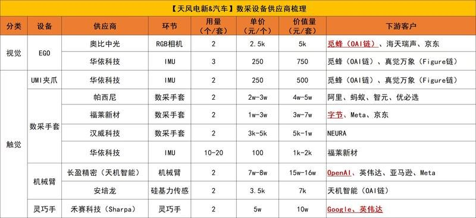
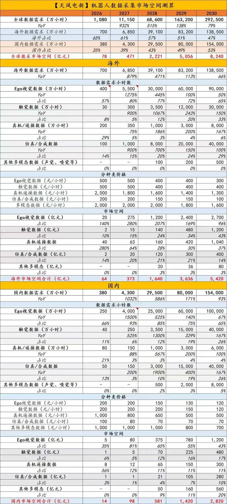

调研纪要 · 2026-10-25 新闻日报
星球 ID: 28855458518111 | 共 238 条帖子 | 精华 52 条
| 查看研究积累
强制同步到研究积累
全部 计算机 机械设备 电子 电力设备 非银金融 医药生物 基础化工 食品饮料 宏观策略 有色金属 其他 纺织服饰 传媒 交通运输 建筑材料 煤炭 公用事业 环保 汽车 通信 建筑装饰 农林牧渔 商贸零售 家用电器 国防军工 钢铁 社会服务 房地产 轻工制造
书签
【天风电子团队】OPEN AI端侧产业链标的梳理
【天风电子团队】OPEN AI端侧产业链标的梳理
【申万计算机】物理AI标的池一张表
【申万计算机】物理AI标的池一张表
【中泰机械】数采怎么看：已有行业迎来新买家，长期空间看本体
【中泰机械】数采怎么看：已有行业迎来新买家，长期空间看本体
1、催化是什么？——已有行业，来了新的大买家。
数采本身是已经存在的行业，Ego视觉、动作示范也已有积累。这轮变化，# 在于通用模型大厂进入物理世界，有望带来新的预算、采购需求和技术投入。
我们理解，这背后也是科技主线资金向机器人外溢。短期先拉动示范数据与采集设备，更重要的意义，是成为整个具身行业的# 加速器。
2、为什么看触觉？——三维理解增强了，接触信息仍要补。
Astra表现出显著的能力不均衡：能够把视觉理解、空间推理与代码工具结合起来，生成运动目标、调用机器人执行。但从“知道去哪里”到“接触后怎么调整”，还存在精确几何、接触感知和实时控制的缺口。
因此，大模型与具身小模型的边界可以继续变化，# 接触信息始终是绕不开的。我们判断，触觉是未来需要重点补充的数据维度之一，值得前瞻布局。
3、为什么更关注设备？——同类零部件，可以服务示范端，也可以进入本体端。
摄像头可以装在人的头部、手腕上采示范，也可以装在机器人头部、手部做感知；IMU可以用于穿戴设备的运动追踪，也可以用于机器人本体姿态感知；触觉传感器可以用于人手接触数据采集，也可以进入灵巧手、电子皮肤。
短期，穿在人身上的设备随采集工位扩张，空间受人员规模和设备复用约束；长期，装在机器人身上的传感器随本体部署量增长，持续承担感知，并有机会形成数据回流。
我们更看好# 能够从示范端延伸至本体端的零部件供应商。两端的规格与供应资格需要分别验证，但长期硬件空间，不能只按当前数采工位来理解。
# 短期看新买家的订单，中期看触觉等数据补齐，长期看机器人本体放量。
建议关注：
触觉-福莱新材、汉威科技
ego-华依科技、奥比中光、龙旗科技
风险提示：产业进展不及预期
联系人：谢校辉、肖伊甸
🟣【长城机械 陈雨君】具身数采：超预期的蓝海市场
🟣【长城机械 陈雨君】具身数采：超预期的蓝海市场
刚刚跟专家聊完，我们发现数采市场有很多超预期的点，具体如下：
#数据量
🔹需求持续增加：模型想要实现的通用性、泛化能力，所需的数据量就越大。现在仅为初期阶段，模型迭代过程中数据需求量会随模型能力提升逐步增加。明年全行业预计将产生上亿小时的Ego数据需求。
🔹数据存在有效转换率：由于数据加工过程需删减无效运动和低质量片段，加之有加工损耗，单日8小时采集仅能获得1-1.5小时的有效成品数据。需要采集的原始数据量级远高于有效数据。
#数采设备
🔹利润优异：UMI属于手持夹爪类采集设备，核心硬件构成包含双目相机、RGB相机、IMU、配套结构件、核心板、底板、电池、RFID卡以及各类注塑件。该类设备的BOM成本约为6000-7000元，市场售价约为5万元/套。
🔹采集设备存在损耗率：数据采集相关设备损耗率较高，使用寿命整体偏短，普通夹爪通常半年内就会损坏，头戴设备的使用寿命为半年到一年。高损耗属性意味着设备不是一次性采购的静态存量市场，而是持续复购、滚动更新的增量市场。
[玫瑰]【GLMS机械】物理Ai：热度&分歧都拉满，我们的思路和看法1025
[玫瑰]【GLMS机械】物理Ai：热度&分歧都拉满，我们的思路和看法1025
1.β上：不用担心，参考我们团队过去长期最有效的【交易占比图+基本面分析】，可以继续。
2.选股上，考虑热度高，我们觉得要和市场略有差异化思路了
第①顺位：长期卡位格局好的，然后按弹性测算赔率排序。因为长期通胀的肯定是Astra做成这件事后，部署到各类机器人，应用落地后弹性最大的公司
【杰克科技，福莱新材，奥比中光，宇树科技，峰迢科技】（涵盖了垂类本体，眼睛，手，这是空间弹性最大的几个环节）
第②顺位：数采从头部回落到这个区间，本质上我们觉得不需要博弈数采市场空间的大小，而是OpenAi以小博大，我花比算力低不少的钱买机器人数据，做出来新场景增量ARR，赔率极高。
所以数采的中小市值公司很多都还有空间
第③顺位：各类机器人零部件，端侧硬件公司，均可同步受益，板块扩散性很足更容易支撑行情持续。
🔥【国盛张一鸣】机器人&物理ai三大主线：
🔥【国盛张一鸣】机器人&物理ai三大主线：
[红包]gpt6对机器人大脑的赋能是质的突破，t链量产也真正开启，市场关心了四年的大脑和量产两大焦点总算迎来答卷。q4市场反弹的主线非机器人&物理ai莫属！
[發]投资方向聚焦三大主线：
1️⃣o链：相对早期，类似22-23年t链，但地位可类比手机的安卓阵营，独立于t链的另一链主。核心标的：#兆威机电（A+H）、鸣志电器、长盈精密 等；
2️⃣数采&本体：数据是模型训练最紧缺的环节，方向上设备优于数采本身，其中惯性捕捉壁垒更高，优选上游环节：#华依科技（imu）、奥比中光、福莱新材等； 量产开启，真机数采是终局，优秀性能的本体在大厂数据竞争中会成为争抢的战略物资，重视国产本体企业：#宇树科技、上纬新材 等；
3️⃣t链：依然是最稳的选择，唯一能兑现业绩的方向。马斯克上周的表述前所未有的确定且超预期，目标最快27年底实现周产2w套（即年化100w产能），t链核心依然是最优配置策略：#福赛科技、科森科技、斯菱智驱、鸣志电器、北特科技、浙江荣泰、新剑（金沃、五洲）等。
🚩【长城邓宇亮】机器人王牌票池
🚩【长城邓宇亮】机器人王牌票池
🔥要理解这个逻辑：#大脑成熟的前提是海量真机数据，海量真机数据的前提是海量真机。#大脑要行、真机先行！这背后代表着：数采、物理ai、真机本体。
🔥什么是中军王牌？
真有量，真有业绩，且是最大的。只要这个方向有行情，这些公司会有超额。
🧧#数采设备中军王牌：龙旗科技
🧧#物理AI中军王牌：奥普特
🧧#O链设备中军王牌：博众精工
🧧#国产本体中军王牌： 七腾/胜通、智元、宇树，其实是数据铲子+物理ai的合体
🧧#T链中军王牌：
丝杠： 北特、恒立、荣泰
谐波： 科达利、斯菱
轻量化： 恒勃、福赛
执行器/电机： 恒立、拓普/三花
🔥🔥【物理AI数据前瞻：机器人走进真实场景，关注数据采集与训练入口】
🔥🔥【物理AI数据前瞻：机器人走进真实场景，关注数据采集与训练入口】
☀️事件：字节Seed招聘覆盖具身数据、机器人本体与仿真。Figure在30个陌生家庭测试中，引入Index人类行为数据预训练后，任务成功率由9%提升至56%，进一步验证#真实行为数据的训练价值。
❗️核心观点：我们认为，机器人规模化落地，将带动#家庭、物流、工业场景的数据需求。户型、物品、任务不断变化，拥有真实场景、采集能力和训练平台的企业，其资源价值有望被重新认识。
✅重点关注四大标的：
① #好莱客（603898）：家庭场景入口。通过子公司持有智觅量变80%股权，与自变量机器人联合布局，依托家居设计、产品及服务资源，探索#家庭场景建设与机器人训练验证。
② #传化智联（002010）：物流场景＋数据服务。持有传智未来50%股权，携手智元、蚂蚁旗下企业等布局机器人解决方案、数据采集训练与DaaS运营，关注#物流园区向机器人训练场转化。
③ #东方精工（002611）：机器人制造＋训练基础设施。携手乐聚布局机器人制造，共建佛山具身智能数据训练中心，覆盖智能制造、商业及家庭服务，形成#本体制造＋场景训练协同。
④ #天奇股份（002009）：工业数据采集与应用。运营的数采实训中心已沉淀近2万小时多模态数据，覆盖36个一级场景、163个细分场景，关注#汽车产线资源向数据与算法服务延伸
🌙投资判断：#家庭看好莱客 、物流看传化、制造训练看东方、工业数采看天奇。后续重点跟踪数据订单、客户复购与场景复制。
☎️风险提示：合作推进、数据商业化及机器人产业化不及预期，估值波动风险。
周末物理AI很火，其实也火了一周了，大盘倾泻而下的时候，机器人逆势而行，所以反弹可能成为急先锋。周末聊下来，这个论断偏保守了，物理AI可能是主线之一。众所周知，...
周末物理AI很火，其实也火了一周了，大盘倾泻而下的时候，机器人逆势而行，所以反弹可能成为急先锋。周末聊下来，这个论断偏保守了，物理AI可能是主线之一。众所周知，以前的机构深耕机器人广受市场认可，但是一直觉得是诈骗，从不参与。现在为啥改变观点，原因粗略的说有以下几点:
1、GPT 6 Astra可能使得机器人大脑的模型收敛，GPT3时刻很快到来，这是最大的变化，有大脑的硬件就不能称之为玩具了，这也使得物理AI的概念不局限于人形机器人。
2、从投资AI大的逻辑上，最近4个月全球调整很大一部分原因是看不清28年后的投资回报率，而不是当前的景气度。所以业绩、订单都不足以支撑股价，只有新的应用打开新的市场才可以。物理AI就起的这个作用，王兴兴说1-2年会有革命性突破，也就是28年。物理AI的token消耗是一个远大于coding的市场，那AI硬件的命就续上了，这是一个闭环，不是独立的主题，对系统性企稳反弹非常重要。
3、以前行业发展全靠老马一张嘴，国内这些丝杠、电机、轴承送个样就能被爆炒，妥妥诈骗。现在T链真的要量产了，供应链已经固定了，靠谱的公司有了。而且，不只是特斯拉，OpenAI，Muse、DeepSeek也在发展物理AI，置信度增强了不少
总之，这是今年剩余时间需要重视的一个方向，虽然周末大火很可能套人。
【中泰策略】科技反弹的关键：流动性负反馈缓和后，下周或迎来海外拐点
【中泰策略】科技反弹的关键：流动性负反馈缓和后，下周或迎来海外拐点
我们上周提示，未来2周对明年行情有重要意义，核心观察点在于国内多部委及盘面上科创等的拉升强度和海外中期选举前，特朗普对伊朗TACO和美债拐点是否出现。
上周全周来看，国内流动性负反馈的打破和底部区间的建立已经进一步明确，但能否直接走出更大级别行情，还要看周五这种“科技强、蓝筹弱”的结构能否在下周初继续维持。海外方面，本周末至下周初已经进入无法继续拖延的关键窗口：若周末没有发生大规模军事行动，下周三以色列大选后，美伊局势出现戏剧性缓和的概率将明显上升，油价和美债收益率回落将进一步打开科技强反弹空间。
配置上，关注存储、科创、券商和有色的反弹修复，活跃资金关注机器人、创新药、传媒等AI应用。这其中，我们认为，机器人短期弹性较高：前期筹码出清较充分，军用机器人和无人装备需求开始释放，新一代大模型控制机器人“大脑”的能力也在加快迭代。若海外局势缓和，能源类（能化、煤炭和油运）及当前高位的银行等可适度降低仓位。
一、流动性负反馈打破确立底部区间，五中全会“总量政策”将保持定力
本轮政策没有简单复制924，而是重点打通央行、银行、券商至杠杆融资的流动性支持链条，降低科技跌破平台后，新的两融账户集中平仓并向整个市场扩散的风险。
从全周走势看，周一至周三，政策开始发挥作用，杠杆资金去化和平仓压力明显缓和；周四至周五上午，海外冲击下，国内科技再次承压，并触发一轮新的杠杆止损和平仓。
但周五下午的反弹质量明显不同。宽基ETF买盘快速放量，指数企稳后资金并未停止流入，科创50、创业板和中证1000持续强势，银行等前期强势防御板块反而下跌。资金真正进入了本轮流动性冲击最严重的科技和中小市值，而不是简单拉升上证指数。
这说明，国内各部门对于防范系统性风险具有较强共识和力度，底部区间已经比较清晰。下周关注点在于，周五的资金结构是否能够在下周继续维持——市场稍微企稳后，科技相对红利的买盘仍不停止。
下周将是五中全会时间，由于五中全会的主题是“从严治党”，出现总量刺激政策概率较低；结合总书记乌兰察布调研，涉及经济方面，或更多在于人工智能等产业政策。
二、为什么本周末至下周初特别关键？特朗普和伊朗都已经没有继续消耗时间的空间。
上周初美伊谈判一度取得明显进展，但特朗普仍要求伊朗在浓缩铀问题上进一步让步，触及伊朗底线，谈判再次停滞。此后特朗普迅速强化战争威胁和军事部署，试图通过最后一轮极限施压打破僵局。
从特朗普角度看，如果真要采取军事行动，本周末几乎是仅剩的窗口：一方面，周末可以避开美股正常交易，尽量降低即时金融市场冲击；另一方面，距离中期选举已经非常近，即使军事行动取得所谓成果，也需要留出战争结束、海峡重开、油价和房贷利率回落以及选情修复的时间。
由于伊朗已经释放明确报复信号，一旦核设施遭到打击，报复可能扩展至中东油气设施、军事基地、数据中心、海底光缆和霍尔木兹海峡。这一“选前局势失控风险”，使得我们认为，其概率不高。
如果试图达成协议，伊朗同样面临明确的时间约束，由于其对特朗普没有任何信任。其担心的是，若在选举前立即开放海峡、帮助特朗普改善选情，特朗普选举结束后可能再次撕毁协议，甚至重新发动战争。
这也是伊朗反复提出“七天方案”的原因：协议达成后，美国先履行撤回军事压力等义务，伊朗观察七天之后，再逐步开放海峡。对伊朗而言，只有协议在选举前至少七天甚至更早落地，才有足够时间验证美国是否履约。
而如果“维持现状”，则越接近选举日，如果协议仍未达成，市场就越会交易选举后重新开战的风险。油价、通胀、美债收益率和美股压力会加速上升，并进一步恶化特朗普的选情。这类似临近到期日的期权，时间越少，价格对风险变化越敏感。特朗普并没有继续慢慢消耗的空间。
故美伊局势的关键拐点，大概率就在本周末至下周初附近（特别是周三以色列大选后），这并不完全取决于任何一方的主观意愿，而是由双方的政治时间表强行逼近。
而如果整个周末没有发生大规模军事行动，下周重新开战的政治和时间条件都会进一步恶化。美伊谈判随后可能出现类似4月初美伊战争结束的戏剧性转机，并驱动本轮科技反弹从超跌修复走向月度的中级行情。
风险提示：特朗普政策和市场博弈复杂性超预期等。
AI势头回落并非牛熊分界
AI势头回落并非牛熊分界
1）市场对“产业趋势回落等于牛转熊”有很强的肌肉记忆，但这轮AI并不适用。2006-2007年的工业与金融、2009年的地产与基建、2013-2015年的移动互联、2019-2021年的能源转型，都是靠投资、订单和就业广泛拉动其他部门，正外部性强；本轮AI恰恰相反，短期内对其他部门形成明显的挤出和负外部性，非AI的不少板块早已步入下行趋势，AI只是最后“补跌”。
2）AI的负外部性至少有三类：一是电子元器件、电力等基础物资涨价，铜、铝、锡2026年9月均价较2024年1月分别上涨73.6%、49.7%、114.0%，抬高生产成本、压抑其他需求；二是算力基建推动私人部门巨额债务融资，推升全球无风险利率；三是挤出就业，自动化型AI使用占比最高职业组的22-25岁就业较2022年11月下降10.9%，最低组同期上升7.8%。反过来看，若AI投资放缓，非AI面临的宏观环境反而改善——10年期美债利率与北美AI硬件股走势高度相关，利率持续回落对海外非AI需求是实打实的促进。
3）估值收缩的进程今年已基本完成，行情宽度有望逐步拓展。AI已完成第一波“二阶导”修正：7月以来电子与通信整体法PE由74.0倍压缩至42.4倍、降幅42.8%，与2022年新能源第一轮调整的45.7%相当。全球对比下A股非AI是明显洼地：非AI非金融龙头PE仅15.6倍、处历史21%分位，消费、制造、医药分别只有12%、1%、3%；美、日非AI龙头则分别在98%、95%分位。A股AI/非AI的PE倍数仍有4.4倍、处82%分位，美日韩已回落至1%、17%、24%分位。
4）K型分化有望逐步收敛。AI侧，商业化空间焦虑会继续约束单年度投资体量、加深对“一阶导”拐点的警惕，虹吸很难再出现；同时主动公募TMT持仓仍偏高，反弹中的持仓均衡化会制约AI弹性——本周市场企稳时率先站出来的是筹码出清彻底、机构持仓低的机器人，而非算力基建。非AI侧，贸易摩擦、人民币升值、高油价、高利率等负面因素已被系统性定价，低预期本身就是有利条件，明年任一边际改善都可能带来修复。
5）资金面的出清需要时间，这个阶段PB-ROE代表的稳健回报型策略更占优。融资余额已回落至2.45万亿元、较年内高点减少5600亿元（-18.6%），融资买入占比降至7.84%、为2024年9月以来最低，活跃私募仓位降至67.5%、为2024年3月以来最低。动量与景气策略阶段性弱势、轮动加快，建议关注两类方向：一是高股息且盈利增速稳健的白电、纺织服装、食品调味、火电等品种；二是具备供给出清逻辑的油运、快递物流、头部地产开发商、部分锂电材料及石化中游品种。
【一周策略：一线希望！】
【一周策略：一线希望！】
周五指数可谓惊心动魄，上午低开低走一度大跌到了3574，科技股继续恐慌性踩踏。从9月22日高点开始算，深成指从13914跌到11043，最大回撤20.64%，超过了六七月回撤的20.2%（16374到13068）；创业板从3472跌到2492，最大回撤28.23%，超过了六七月最大回撤的27.9%（从4380跌到3158）。而从六月底高点算起，创业板最大跌幅达43.1%，科创50最大跌幅44.26%（从2255跌到周五低点1257）。短短三个来月，双创指数跌幅超过四成，如果不采取一些措施，估计指数跌五成也不难。而个股其实是经历了两轮股灾，第二轮甚至跌更快，六七月用了25个交易日。9月22之后的下跌，只用了19个交易日，一批原本七月份腰斩的科技股，在十月份再度迎来腰斩。这种局面，其实就是无能。最近大家有留意法国的局势吗？全国性的罢工骚乱，学生们都已经上街“闹革命”了。通胀高企，经济滞胀，社会动乱，就这样的局面，法国CAC40还在8月初创历史新高，然后最近回撤了11.12%。大概是我们科创50跌幅的四分一，深成指跌幅的三分一。问题是，法国从21年开始，连续五年历史新高了，我们上证距离07年的高点，还遥遥无期啊。难道中国过去二十年经济发展还不如欧洲三傻最差的法国？A股的问题，很多时候跟基本面没关，都是人祸。大A的制度改革真的任重而道远。
⚡️本周金刚石产业调研第一弹及河南展会见闻更新❗️
⚡️本周金刚石产业调研第一弹及河南展会见闻更新❗️
1️⃣先说产业：
[Sun]国内开始放量：近期某芯片厂已经开始招标了，还是芯片级封装散热（类似tim1位置），近期预期会有商业化订单落地。更大型的商业化国内需要盯一下CSP端进度。
[Sun]海外目前GPU、CPO：目前海外nv等测试金刚石相关方案意愿很强，使用金刚石可以提升现有系统寿命。
[Sun]总结一下商业化进度：各个论坛、产业研讨预期在27H1，但
1）可能还需要处理一些加工问题，27H2认为加工良率（研抛切）基本问题不大。
2）#下游CSP及芯片客户等需要验证金刚石在数据中心真正开始不间断工作，吸收热量下的可靠性，稳定性测试需要一段时间。两相结合，如果都没有问题，预期可能放量就在27H2，降本不是太大问题。
[Sun]#展会非常有意思的东西： 这次一个小展会，看到了某公司做的，#纯单晶及多晶的微通道冷板（非金刚石铜复合），该公司已经和nv对接送样，nv目前技术路线非常的多样。#其次还有CPO的金刚石方案，和tec这些并存的。我们会发现金刚石路线多样，而且应用领域在持续扩大，目前下游试用意愿很强。
#建议重点关注：
1️⃣黄河旋风（中秋节前后订单有加速态势）
2️⃣九州一轨（预计之后可能会有数千万-亿级别的光模块金刚石订单，北京厂下个月开始点火进设备）
3️⃣沃尔德（国内近期某芯片厂招标，核心卡位，海外tjd持续对接推进）、4️⃣国机精工（卡位国内头部芯片公司，跟随国内持续放量，海外客户也在通过代理对接）、
5️⃣力量钻石（倾向单晶，通过捷斯奥对接海外送测）
6️⃣四方达：（持续对接海外客户，后续可能有月小批单落地）
7️⃣宏昌科技（收购昆吾）：昆吾对接海外fab及国内头部芯片、光模块公司，持续推进。
⚡️我们近期调研了一些金刚石公司、以及展会拍的一些有意思的一级公司产品，欢迎私聊最新纪要及图片～～
❗️我们今天晚上20:30电话会也会汇报，
#腾讯会议：458-3360-7570
【长城机械 汪湛帆】金刚石专家纪要要点20261025
【长城机械 汪湛帆】金刚石专家纪要要点20261025
#想解决的问题：
1️⃣公司的金刚石散热产品是什么类型（多大的规格）？金刚石散热片的具体生产流程是什么样？
A：金刚石铜和金刚石片都有在尝试，但金钢石铜效果不好，因此后续金刚石片的嵌入液冷板可能性比较高。金刚石片和冷板底部进行结合，然后在芯片和金刚石中间使用TIM材料来弥补中间缝隙，把空气排掉
2️⃣考虑到Rubin Ultra功率降低，金刚石散热产品还会在Rubin Ultra上面导入么？
A：公司和大客户处于开发阶段，还没有敲定下来一定会用
3️⃣Feynman功率是4kw以上，金刚石散热材料会是必选项么？
A：用的可能性非常大， Rubin这一代冷板方面可使用加快液体流速等方式去提升导热能力，但到Feynman这一代冷板后续操作空间不大
4️⃣后续Rubin Ultra液冷板会导入微通道冷板么？
A：目前还不会进一步把冷板的通道做得更细更窄，目前是100um，0.1mm的通道间隙，做得更细的话，内部流道被堵的可能性会更大，100um做到80的洁净度需要冲刷很久了，如果做到更低50um，冲刷需要时间更久，公司不敢保证
5️⃣金刚石粗胚都是从国内购买的么？粗胚产品之间差异大么？
A：目前，已知三家企业和公司合作，宁波赛墨、南京瑞为、长沙升华
晚上好，本周我们重点关注关注世界模型/物理AI方向，南方传媒超预期
晚上好，本周我们重点关注关注世界模型/物理AI方向，南方传媒超预期
一、【世界模型/物理AI】Q4催化丰富，通用模型加速进入具身智能，训练数据价值有望重估：
（1）世界模型：字节Seedance 2.5发布，4K视频生成能力加速向大屏渗透，后续筹备推出面向时空视频生成的AI模型。重点关注#风语筑（公司具备数字空间及XR场景积累，积极布局空间智能和物理AI）；
（2）物理AI：以GPT-6 Astra等为代表的前沿模型厂商加速向物理AI拓展。具身智能或为Coding后的AI应用重要方向，催生海量高质量训练数据需求，真实操作数据、Ego数据及仿真数据价值重估。
重点关注#宝通科技（工业场景资源丰富，具备真实物理场景及工业数据积累）、 凡拓数创等。
二、【低波红利】#南方传媒 26Q3业绩大超预期，渠道整合毛利率显著提升，AI教育产品年底有望上线。
26Q3业绩同比+50%，扣非+51%，超预期。毛利率提升受益于教育书店渠道整合带来的冗余成本下降，以及纸张成本回落等。其中渠道整合带来的效率改善有望持续。
继续重点推荐：1）人口稳健，省内整合，分红提升；2）AI产品丰富，AI互动教育产品花卷妙课计划年底上线，短剧IP及产能充足。
三、【AI影视/AI剧】AI电影《
三星堆：未来往事 ↗ 》上映，AI电影的工业化制作能力已初步得到验证，但观众接受度及商业回报仍需持续观察。
重点关注：#芒果超媒（优质内容供给分发）、#奥飞娱乐（喜羊羊IP，大厂合作）；#中国电影（《
流浪地球3 ↗ 》定档春节）；#上海电影（优质经典IP资源丰富，有整合预期）；#博纳影视等。
四、【港股互联网】流动性冲击下估值持续压缩，重点关注低估值公司：腾讯、网易、心动公司、汇量科技、金山云、金山软件等。
【华福新兴产业】AI应用是核心-1025
【华福新兴产业】AI应用是核心-1025
上周观点是市场混沌期、静待拐点信号。本周五市场出现了较大的变化，周五上午放量下跌情绪极低，下午放量拉伸，同时物理AI经历了周一共识买入、周二分歧买入、周三\周四分批兑现，周五下午与大盘指数反弹共振走强，周末大热。过去做的最好的物理AI是智驾，23-25年质的飞跃，原因是23年特斯拉全方位的突破：算法的突破（Occupancy networks）+数据量的爆发（4D自动标注）+硬件的提升（HW 4.0的量产）。对标智驾，当前的物理AI，行业迭代很快，但是困难仍然较多。硬件：本体更新很快，但是技术方案没有收敛趋势，没有任何一家本体公司给出了行业共识的解决方案；数据：本体数量少+场景千变万化，数据获取难度大和成本较高，真是世界的场景数据成为最大的瓶颈之一；模型：视频生成、文本处理等日趋成熟，但是对物理规律的理解仍然需要依赖数据和算法的突破。当前的物理AI行情，我们仍然建议按主题交易的思路进行，更多关注资金动态、情绪卡位、行业催化、是否有新主题诞生等。物理AI除了周末热度过高，其他维度看仍然是市场最值得关注的主题，建议分歧中继续参与。新开仓参与的建议，围绕市场龙头+全新挖掘标的。1）数采，瓶颈环节：数采设备（卡位格局最好，奥比中光）+数采公司（业务最纯，海天瑞声+凡拓数创），2）本体公司，远期空间最大：宇树科技+上纬新材。3）新挖掘、未大涨的补涨标的：群核科技等。如果物理AI持续走强，AI短剧和AI4S两个应用方向也值得高看一眼。
[红包]【招商医药】本周AI制药领域重磅事件梳理：
[红包]【招商医药】本周AI制药领域重磅事件梳理：
[發]MNC、科技巨头、AI Biotech等多维度保持活跃，合作、并购、模型成果发布等显示领域快速进展，建议持续关注AI制药领域发展带来的医药投资机会
[玫瑰]10月19日，剂泰科技与礼来达成战略合作，聚焦新型LNP递送解决方案研发，依托可离子化脂质发现与优化平台AiLNP，研发靶向性LNP递送和体内分布优化的新一代递送技术。首付款逾千万美元，总额可达11亿美元
[玫瑰]10月20日，投资机构Citrini的团队通过Claude自主设计蝎毒结合蛋白，合成211个设计命中17个（达到结合标准）。该团队并无相关知识背景，总花费20万美元，64小时
[玫瑰]10月20日，生物AI公司Radical Numerics发布生物学AI模型Omnii-1，该模型设计的噬菌体已通过同情给药途径首次进入患者体内，临床数据尚未公开
[玫瑰]10月21日，英伟达与David Baker团队联合发布开源AI蛋白质模型RFD4-Proteina，每GPU小时可生成71.6个蛋白质结合设计和112.25个小分子结合设计，性能分别提升超5倍和7倍。该模型同时支持酶的从头设计
[玫瑰]10月23日，Pathos AI完成2.37亿美元E轮融资，由BMS领投，投后估值约30亿美元。同时，BMS与Pathos AI、Tempus AI达成合作，利用去标识化的神经系统疾病患者数据集以及AI分析平台，共同开发阿尔兹海默病等神经疾病疗法。两项协议交易金额最高超过1.9亿美元
[抱拳]欢迎联系：梁广楷/许菲菲/方秋实/焦玉鹏/张语馨/郭子娴/肖笑园/欧阳京/侯彪/韦文青/齐昕然/李卓凡
[红包]AI4S+医药行业动态（10.18-10.24）
[红包]AI4S+医药行业动态（10.18-10.24）
[玫瑰]10月19日，剂泰科技宣布与礼来达成战略合作，聚焦新型LNP(脂质纳米颗粒)递送解决方案的研究与发现，以探索支持多种治疗模式的组织特异性递送解决方案。本次合作首付款逾千万美元，总额最高11亿美元，外加个位数销售分成。这是国内首个以生成式AI平台为核心驱动、围绕LNP递送展开的战略合作，也是肝外药物递送平台全球已披露交易规模最大的合作。获礼来这一国际头部MNC认可背书，中国AI递送平台实力获全球药企验证。via 剂泰科技
[玫瑰]10月20日，Anthropic公布了一项生物学研究，在几乎没有人类逐步指导的情况下，Claude用64小时自主生成了超过31.8万个蛋白质设计，去寻找能够结合蝎毒神经毒素的候选分子。研究团队从生成的318484 种蛋白质设计中筛选出 211 种候选蛋白，交由实验室测试，最终有 17 种达到预设的结合标准，而这些分子有望为新型抗蝎毒药物研发提供线索。完成这个项目的，是一家叫Citrini的投资研究机构，团队一共五个人，其中三个完全没有科学背景，他们前后只花了20万美元、64个小时，就从零做出了一批能结合蝎毒的蛋白雏形。Citrini表示：如果没有AI，这个团队“绝无可能设计出任何能起作用的分子。via 智药局
[玫瑰]10月20日，微软 BioEmu 2 开放公开预览。为了填补“静态结构预测”与“高昂动力学模拟”之间的鸿沟，微软研究院AI for Science团队（Frank Noé领衔）推出了全面进化的第二代生物分子基础模型——BioEmu2。不同于传统的MD模拟或者结构预测模型，BioEmu2 将“静态结构预测”、“热力学平衡态采样”、“跨时间尺度动力学推演”以及“万级残基超大复合物装配”四大核心功能融为一体，构建了一套完整的生物分子模拟工作流。团队展示的画面里，一条 PUMA 肽与 MCL-1 相遇、接触并结合。原版 BioEmu 主要面向单体蛋白的近似平衡构象分布，新版本则支持多链复合物、核酸与配体。via BioTender、AI4Protein
[玫瑰]10月21日，OpenAI宣布收购AI药物研发平台Orchestra Bio，后者的团队和技术将整体并入OpenAI的生命科学产品线Rosalind，交易金额暂未披露。Orchestra Bio既不设计分子，也不找靶点，其产品是用AI Agent盯住一款新药从实验室走向临床过程中的进度、风险和各方交接。OpenAI本次并购进一步丰富往药企的研发流程里渗透的能力。via 智药局
[玫瑰]10月21日，OpenAI 联合生物技术公司 PerturbAI 与 Scripps Research 正式公布了一项前沿科研成果： 团队部署了由全新架构 GPT-Rosalind 驱动的数千个 AI 智能体，对小鼠全脑 CRISPR 扰动实验数据进行了深度的自动化解析，并将其与浩瀚的科学文献实时交织。整套大规模分布式分析流程在 32 分钟内宣告完成。据研究团队估计，如果由人类研究者逐个处理基因扰动并开展文献检索，类似工作可能需要数月到一年。via ScienceAI
[玫瑰]10月21日，Xaira发布药物发现智能体平台X-Scientist。公司报告，它提名的基因干预在细胞实验中的命中率达到 7.1%，与人工筛选的 6.9% 接近。当前展示的进展，是把科研执行、证据验证与策略改进组织到同一套流程里，它连接 X-Cell 靶点识别、X-Design 分子设计与 X-Patient 患者分层等内部能力。但要看清框架本身的作用，得先拿掉领域专用加成。公司称，公开基准测试未启用领域专用工具或技能。via BioTender
[玫瑰]10月22日，英伟达宣布与华盛顿大学蛋白质设计研究所的David Baker团队合作推出了一款AI蛋白质模型RFD4-Proteina。该模型融合了David Baker团队的RosettaFold扩散模型和NVIDIA的开源蛋白质模型Proteina-Complexa，从而实现了适用范围、性能、速度上的多重飞跃。不仅将蛋白质设计的成功率提高了5-10倍，速度也提升到了以往模型的5-10倍。实测中，当设计一条长度为200个残基的蛋白质时，RFD4-Proteina的生成速度可以达到现有顶尖开源AI蛋白质模型RFdiffusion 3的13倍。该模型堪称AI蛋白质领域的全能王。基准测试显示RFD4-Proteina支持包括蛋白质、酶、小分子、DNA在内的10种生物分子任务，并在12+项蛋白质设计任务中达到最先进水平。该模型还对计算性能进行了优化，引入了当下火热的“测试时计算”（test-time compute）。via 智药局
[玫瑰]10月22日，英矽智能推出inClinico Agent，旨在升级临床研究智能工具，实现临床研究方案智能化分析、设计与优化。基于包含超10万项临床试验的精选专有数据库、特定终点的机器学习模型以及专业临床分析能力，inClinico Agent可以将原本耗时数月的复杂临床格局分析压缩至分钟级。via 英矽智能
[玫瑰]10月22日，Anthropic 宣布面向生命科学领域招募客座研究者。入选团队将与公司研究人员直接合作 8–12 周，使用 Claude 探索具体科研问题。申请面向高校、非营利机构或政府实验室的课题负责人（PI）及其研究团队。合作将使用 Anthropic 的研究模型与内部配套运行工具（harnesses），相关运行不向入选者收费。Anthropic表示，申请和合作期间均不要求研究者向公司交出数据；申请材料只应包含公开信息。公司计划共同发布成果，开源配套数据和代码。研究者也拥有合作衍生的独立后续研究的权利。研究者保留其数据权利。via BioTender
[玫瑰]10月23日，制药巨头百时美施贵宝（BMS）接连牵手两家AI公司，敲定三起合作。Pathos宣布完成2.37亿美元E轮融资，由BMS领投，老股东跟投，投后估值约30亿美元。融资之外，还有一项新合作：BMS将与Pathos、Tempus联手，瞄准阿尔茨海默病等神经系统疾病。同日，Tempus也宣布，BMS将扩大与其的合作范围，拿下截至2031年的多模态肿瘤数据授权、Lens平台使用权和其他服务。Tempus提供数据、Pathos提供AI平台、BMS提供药物研发经验。三起合作，股权投资、数据授权、联合研发，制药巨头BMS加码AI。via 智药局
【交运】近期思考
【交运】近期思考
上周我做了2个研究：
1️⃣红利交易到什么位置了❓
2️⃣复盘中远海控，油轮应该如何定价❓
一些初步结论和想法💡💡
#红利 本轮红利自6.30反弹，本质是#创业板的跷跷板，负相关性达到70%，高潮在9.23，美联储加息后十年国债突破5%，风险资产回落，红利迎来加速上涨，交运红利，本轮港口好于公路，本质是港口基本面相对更好。以港口指数为例，10.16（上上周五）出现了明显的超买信号，最新10.23（上周五）回归到了均值略上方，风险释放了一些，回到价值配置区间。
#海控周期复盘 海控21.7高点交易到4100亿市值，当时全市场卖方给的21E盈利预测基本落在750-790亿，即高点5.3xPE；23.6低点1500亿市值，考虑分红除权，最大回撤44%；23.6市场隐含预期是海控即将亏损，账面净现金1100亿，上港、青岛港等长期股权价值近400亿，即给到集运价值为0，因为市场认为是即将亏损的资产。
#如何给招轮估值？
1️⃣重置成本？考虑账面现金和带息负债，我们算下来把所有船按现价卖掉值1220亿。
2️⃣周期高点赚的钱给1xPE？ 今年Q4+27全年，预计招轮净利润600-700亿，回归正常周期招轮50-70亿利润，不考虑后年还有高盈利，1300亿也合理？
3️⃣这波周期会把净资产修复到多少？我认为28年会到900亿
4️⃣当前股价隐含的运价？ VLCC长期均值10万运费，10XPE。
👉理解市场短期对运价回落的担忧和长期对景气度的担忧，但短期我觉得招轮的回调幅度已经足够，后续上行风险大于下行风险！篇幅有限，欢迎讨论！
<浙商食饮|张潇倩> 食饮周观点：白酒呈强防御性，把握红利龙头&强α个股（20261025）
<浙商食饮|张潇倩> 食饮周观点：白酒呈强防御性，把握红利龙头&强α个股（20261025）
本周沪深300/食饮/白酒涨跌幅分别-0.86%/-0.54%/+0.23%，其中保健品/白酒板块涨幅居前（+2.34%/+0.23%）。A—金达威/顺鑫/仲景涨幅居前（+12%/10%/8%），H—溜溜梅/安井食品涨幅居前（+3%/2%）。
1️⃣白酒：防御性强，今世缘/茅台表现居前
一、盘面：白酒板块因资金盘轻&具防御性，近两周整体均跑赢相对表现（今世缘/茅台+9%/+6%)。本周顺鑫因酒厂人事调整或推动市场改革涨幅居前，茅台仍呈强防御性。基本面及业绩预期本周均没有新变化，预计Q3白酒板块中，预计今世缘具弹性，迎驾/茅台业绩居前稳健。
二、投资建议：板块处“弱动销-低基数-库存分化”状态，后续动销边际变化/资金高切低或驱动板块，继续重点推荐强α贵州茅台及Q2-3业绩率先由负转正的区域酒龙头今世缘等。
2️⃣大众品：把握红利龙头+个股阿尔法
一、盘面：金达威受益于厄尔尼诺概念涨幅居前（秘鲁中北部第二渔季确定取消，鱼油缺口进一步拉大，藻油替代逻辑延续），西麦则受益于Q3业绩具弹性（预计收入/利润增速20%/38%)&27年业绩具确定性表现积极。
二、本周披露Q3业绩公司：①洽洽Q3收入/利润增速6%/79%（下同），收入表现稳健，成本红利推动利润高增；②珠啤0%/-5%，Q1-3销量/吨价+0%/+3%：③天润8%/131%，疆外提速；④ 仙乐-19%/-22%；⑤香飘飘-10%/-88%；⑥汤臣+18%/+23%，季度趋于平均。
三、本周业绩预期变化公司：东鹏/盐津等。
四、投资建议：重点推荐股息红利&强赛道龙头个股主线：
① 股息红利：伊利（10月金股)/茅台/颐海/康统等；
② 强赛道龙头个股：蒙牛/新乳业/燕啤/农夫/妙可/安井/海天/安琪/西麦/百龙/H&H/宝立等。
--------------------
浙商食饮 张潇倩Iris/孙天一/杜宛泽/何宇航/隋牧含/杨美云
🔥上周日强Call物理AI 周收益48%
🔥上周日强Call物理AI 周收益48%
🔥这周日强Call磷化铟、铌酸锂（TFLN）
核心逻辑 周五 光五大天王（新易盛/中际旭创/天孚通信/光迅科技/联讯仪器等多家光模块相关企业发布公告）
🔥联合 周五中午发布公告，态度明确，集体弹窗。
订单能见度延长、1.6T加速放量、产业链上游同步受益、产能扩张与技术预研并行的阶段。
不考虑光模块企业 利润增速，但是可以看见高端产品放量加速，这里10000%确定性就是，上游材料即将放量。
🔥磷化铟、铌酸锂 确定性增长。请各位机构重视。
氯化亚砜：检修收紧供给推升现货价格，价差显著扩大，长期格局向好
氯化亚砜：检修收紧供给推升现货价格，价差显著扩大，长期格局向好
[礼物]#本周行业观点：氯化亚砜检修收紧供给推升现货价格，价差显著扩大，长期格局向好
👉🏻氯化亚砜：本周（10月16日-10月22日）国内氯化亚砜市场价格高位上行，据百川盈孚数据，截至10月22日，氯化亚砜市场均价5750元/吨，年内涨幅达62.21%，年同比上涨308.09%。
👉🏻氯化亚砜短期行情由检修驱动、成本下行带动价差修复；长期供给受限，锂电增量叠加硫磺成本支撑，格局向好。#供给端行业处于低开工、低库存，叠加企业检修放大短期缺口，据百川盈孚数据，截至 2026 年 10 月 23 日，周度开工率 59.4%，库存 1690 吨，处于历史低位。需求端医药、农药、三氯蔗糖等传统需求平稳，#锂电 LiFSI 带来核心增量，六氟磷酸锂涨价推动 LiFSI 替代，拉动氯化亚砜刚需采购。#本周产品价差扩大、盈利修复，硫磺、液氯原料价格短期回落，但硫磺受霍尔木兹海峡扰动，供给偏紧、高位形成成本支撑。
[玫瑰]#我们认为，LiFSI 需求持续释放叠加环保审批带来的供给约束，行业供需格局向好，价格中枢具备上行基础。【推荐标的】三友化工。【受益标的】凯盛新材、世龙实业、金禾实业等。
[礼物]#本周纪要：宝丰能源2026Q3业绩交流、钾肥行业交流纪要，欢迎联系索取[玫瑰]。
[礼物]#推荐标的
1️⃣拐点明确以及高弹性：
纺服化纤链：桐昆股份、恒逸石化、新凤鸣；华峰化学、新乡化纤、泰和新材、吉林化纤；三友化工、中泰化学；浙江龙盛、闰土股份等；
制冷剂：巨化股份、三美股份、永和股份、东岳集团、昊华科技等。
磷化工：云图控股、川恒股份、云天化、兴发集团等；
2️⃣双碳背景下具有全球优势的龙头：
煤化工：华鲁恒升、鲁西化工、宝丰能源等；
石化：恒力石化、荣盛石化、万华化学、卫星化学等。
3️⃣ AI材料：
传统龙头布局AI材料：巨化股份（PFA+PTFE）、苏博特（AI4S，液冷管道）、兴发集团（磷化铟）、泰和新材（芳纶）等；
PSPI&电子化学品：利安隆、瑞联新材、滨化股份、东材科技、圣泉集团等。
🧧电力设备三季报要点分析更新-1025
🧧电力设备三季报要点分析更新-1025
⚡️三季报情况总结：业绩兑现上特高压和内需强于出海，海外订单高景气趋势不改静待兑现，原材料/汇兑/战争等因素短期普遍影响业绩
[礼物]具体公司观点（按照三季度披露顺序）
【金盘科技】单季度2.4亿，同比+9.4%，仍在蓄势。26年以来单季度海外新增订单维持20e左右，但受汇兑、交期、原材料、激励费用等因素影响暂无体现业绩弹性。北美在手订单饱满支持27年交付。建议关注，美国政策年底落地前逐步吸筹。
💰业绩：26-28年7.6/12.7/17.6亿，26年33x。
【平高电气】单季度4.4亿，同比+30.5%，加速增长。百万伏和750千伏间隔同比高增是主因，配网收入疲软。Q4单季度增速有望提高至 40-60%。26年第五批招标即将启动，新增和在手订单预期良好，27年看超高兑现度。强烈推荐。
💰业绩：26-28年14.5/18/20亿，26年20x。
【思源电气】单季度9.4亿，同比+4.5%，增速下降。汇兑、交付、补贴等因素集中体现影响业绩。北美订单持续放量，高压变、低压变、罐式断路器全面出海，白宫提案未影响公司接单。超容、IGCT换流阀出海趋势明确。建议关注，美国政策年底落地前逐步吸筹。
💰业绩：26-28年36.5/51/67.6亿，26年24x。
【良信股份】单季度扣非0.63亿元，同比+23%，环比-30%。有色涨价导致毛利率暂时承压。北美AIDC订单超预期，27年海外收入展望5e，其中北美3e，产品认证持续推进。固态断路器国内外头部客户全面对接，海外突破可以期待。强烈推荐。
💰业绩：26-28年3/4.8/6.5亿，26年33x。
前三季度粮食生产稳中向好，生猪产能加速调减
前三季度粮食生产稳中向好，生猪产能加速调减
👉#生猪数据： 本周（10.16-10.22）商品猪出栏价9.79元/公斤（环比-0.32元/公斤）；15公斤仔猪价205元/头（环比-3元/头）；50kg二元母猪价1275元/头（环比-9元/头）；商品猪出栏均重129.64公斤（环比+0.30公斤）。
👉#粮食生产：2026年前三季度农业种植业增加值同比增长3.6%。夏粮产量3014.9亿斤，首次突破3000亿斤，增长0.7%；早稻稳产，夏粮早稻合计增产0.4%。秋粮播种面积稳中有增，主产区光温水匹配良好，虽局部遭强降水台风，但影响总体可控，全年粮食有望再获丰收。
👉#畜牧业：2026年前三季度，国内猪牛羊禽肉产量7627万吨，同比增长4.3%，其中禽肉增长9.3%、猪肉增长3.2%，牛羊肉分别下降0.7%和3.7%。生猪出栏增长1.4%，能繁母猪存栏调减至正常保有量的96.0%；家禽出栏较快增长，牛奶产量增长2.4%，禽蛋产量下降1.7%。
[红包]投资建议：生猪产能去化深化叠加厄尔尼诺催化下农产品景气上行，两大板块均具备较强基本面支撑，建议重点关注#冠农股份（农产品+资源品景气共振），牧原股份、温氏股份、海大集团、神农集团、巨星农牧、德康农牧、中粮糖业、苏垦农发、北大荒等。
航空周度更新：货运旺季表现超预期关注东航物流，客运减班提价效果良好【国联民生交运】
航空周度更新：货运旺季表现超预期关注东航物流，客运减班提价效果良好【国联民生交运】
[玫瑰]#航空货运
上周运价继续上行，美东直飞每公斤运价一度突破70元（往年运价最高点在11月中下旬也很难达到70元），JFK、ORD航点都升破60元，主要原因是AI货物集中发货，服务器和机柜体积大占满了市面舱位，短期上涨太快，预计下周运价阶段性有回调压力。
欧线运价温和上涨，预计消费节和圣诞季电商消费品逐步释放，取代上两周的工业高值货物，舱位逐渐拥挤，欧线运价每公斤35-40元（往年这时还在30元运价关口）。
进入11月预计运价从高位震荡走向上涨，随着电商发货增加，运价从高附加值抬价到紧供需推动普涨。#旺季运价表现超预期，欧线、美线运价追上全年涨幅，高运价依然有承接货盘，推荐【东航物流】【国泰航空】，关注【国货航】。
[玫瑰]#航空客运 q4高油价迫使航司做了减班，国内航班量七日平均yoy-4%，减班后行业转向提价，客座率同比微降，票价方面，近七日国内含燃油机票价格yoy+10%，在淡季算是不错的表现。
[礼物]交流请联系国联民生交运黄文鹤18811018307/张骁瀚15900361585/陈佳裕/潘正则
【广发非银】放量反弹提振信心，看好非银估值修复
【广发非银】放量反弹提振信心，看好非银估值修复
上周五市场放量V型反弹提振风险偏好，宽基ETF增强净流入叠加产业资本增持，阻断资金负螺旋，市场底部支撑力度增强。板块维持低估值、低配置格局，安全边际充足，非银估值修复窗口有望开启。
证券：三季报业绩维持增长，估值性价比凸显。前三季度上市券商整体业绩预计增长30%-40%。受前期市场震荡影响板块持续滞涨，业绩与估值错配特征显著。看好三条主线：一是低估值高ROE头部综合券商，中金H、国泰海通AH、中信AH、华泰AH等；二是受益科技融资扩容的弹性标的，招商、财通等；三是财富管理特色标的。
保险：三季报利润阶段性承压，静待开门红发力。权益市场波动叠加去年高基数，前三季度上市险企整体净利润预计下滑30%。部分公司高股息属性突出。四季度险企全面启动开门红筹备。具备中长期配置价值，A股推荐平安、太保、国寿、新华，H股推荐国寿、太平、平安。
多元金融：持续推荐渤海租赁、江苏金租等兼具成长与红利标的。
欢迎交流：陈福、刘淇、李怡华（多元）、王京灵（保险）、耿张逸（券商）
【东财军工】军工板块迎来重要配置窗口
【东财军工】军工板块迎来重要配置窗口
🔥短中期强催化：航展是军工重要催化窗口，21/22/24年航展前后3个月军工板块相对大盘最大超额收益分别为14.10%/15.63%/17.37%。2026Q1-Q3军工回调充分，核心票如航发动力等最大回撤幅度近50%，2026Q2国防军工公募持仓仅2.38%，扣除主题基金后显著低配。
🔥长期高确定性：军工是国家必选消费，长周期稳健增长属性突出。2027年建军百年牵引产业趋势向上，2028~2029年预计更多科研型号有望转批产，行业或迎来3年以上基本面加速期。
🔥重点赛道
1、军贸：最为景气方向之一，珠海航展进一步抬升关注度。
2、新域新质作战力量：加快无人智能作战力量及反制能力建设已写入国家十五五发展规划，2026年8月乌克兰举行全无人装备阅兵，无人/反无已成为现代装备发展重要趋势。
3、国产大飞机：国产商发正经历“0-1”阶段，一旦突破带动万亿民机产业提速发展。
🔥投资策略：围绕上述重点赛道，寻找卡位优势强、长期成长空间大的核心标的。
1、军贸：广东宏大、中航成飞、洪都航空、国睿科技等。
2、新域新质：锐科激光、六九一二、新光光电等。
3、国产大飞机：航发动力、航发控制、航发科技、中航西飞、三角防务等。
风险提示:订单落地不及预期。
[烟花]【最新观点&市场情绪反馈】本周关注
[烟花]【最新观点&市场情绪反馈】本周关注
（1）电子整体情绪反馈：本周电子板块整体+1%，排名5/30。细分板块中，消费电子最为强势+6.57%，半导体设备领跌-11.02%，板块整体大幅震荡、两极分化，资金持续从前期强势板块（算力链/扩产链等）向低位有热点板块（端侧/物理ai）切换，整体板块资金持续流出，在经历极致下跌后于周五下午迎来反弹。海外方面，外部扰动仍未消解：北美 AI 叙事阶段性降温，费城半导体指数连跌八日，拖累 A 股电子板块情绪；叠加美国中期选举临近、美伊冲突推升油价，宏观不确定性仍存，市场对科技板块的外部担忧未实质缓解。资金端，临近四季度末结算窗口，机构开启仓位再平衡，资金从持仓拥挤的 AI 主线撤出，转向调整充分、筹码结构更优的低位方向。在宏观环境不明朗、产业叙事逆风阶段，市场呈现仓位分散、小票与主题标的占优的特征；其中端侧 AI、物理 AI 主题成为核心承接方向，市场关注度与调研热度快速提升。
（2）半导体基本面和市场情绪反馈及持续推荐：我们认为本周半导体板块出现较大回调主要系市场情绪波动以及流动性影响。上周末长鑫存储业绩预告披露，短期市场反映长鑫科技的归母比例出现较大变化带来的悲观情绪，本周市场对于后续两长持续扩产进度噪音较多，叠加科技板块整体出现大幅回调，半导体板块因此承压。从基本面看，我们认为当下半导体设备及零部件景气度仍在持续向上，行业订单增长有望持续加速，景气周期有望延续至2028年以后；零部件公司在全球大扩产的背景下获得了“备胎转正”机会，订单激增且正在规划更大规模的扩产。展望后市，我们认为，随着下周三季报披露收官，进入11月后，市场对两存扩产进度的担忧有望逐步缓解。考虑到明年半导体设备及零部件公司业绩高增长的确定性较强，我们认为，经历本轮大幅调整后，半导体板块估值吸引力正逐步显现，当前具备较高的配置价值，建议持续重点关注。
(3) 物理AI、端侧主题情绪反馈：近期物理AI、端侧应用市场关注迅速升温，机器人、端侧产业链相关公司调研交流火爆，我们认为本轮交易核心原因有三：1）机器人、端侧应用相关板块前期调整较充分，筹码结构良好；2）OpenAI宣布布局机器人、英伟达GTC升级机器人数据训练部署工具及宇树生态大会等事件强化物理AI叙事；3）存储涨价叙事出现反转预期，资金寻找新方向。我们认为端侧应用相关产业链公司基本面总体稳健，且过往调整较为充分，虽然当前硬件出货趋势尚未迎来彻底反转，但结合数采设备放量、Open AI拟推出便携新品、苹果拟推桌面机器人等新品新硬件催化，有望首先迎来叙事及预期的改善。我们也将持续组织相关公司调研，捕捉产业链变化。
（4）国产算力政策及新疆数据中心参观反馈——新疆当前算力总规模约 30000P，其中 80%-90% 由私有资本投资布局；已建成 IDC 项目存在机柜空置，主要等待算力卡接入，且在运数据中心中国产算力卡占比偏低，后续渗透率提升空间充足。受地理区位影响，客户普遍倾向于将训练类需求布局在新疆。产业实践方面，中国移动新疆公司联合阿里云建成国产算力集群，将模型训练周期从 30 天大幅压缩至 24 小时；同时研发算网中枢，通过 “时间平移” 引导非实时任务错峰运行、“空间转移” 将任务调度至绿电充沛的时段与区域，实现算力与绿电的高效协同。跨区域服务性能上，重庆地区调用新疆推理服务的时延约 32 毫秒，可满足多数非实时及部分准实时业务的响应要求。
各位领导好，本周我们组的活动及观点更新如下：
各位领导好，本周我们组的活动及观点更新如下：
[烟花]【核心推荐】本季度重点看好：三环集团、聚辰股份、睿创微纳、联讯仪器、京仪装备、长鑫科技、京东方、生益科技、寒武纪、优迅股份；[Sun]本周科技股大幅震荡，市场预期跌至低位，情绪演绎极致后周五迎来反弹；电子板块两极分化，AI基建链持续下跌，端侧随机构分散仓位、在物理AI主题催化下领涨。[Sun]基本面角度，国内半导体设备/材料、国产算力上行拐点明确，同时全球AI趋势下的电源相关、PCB、存储也持续强劲，我们持续看好；同时端侧AI、国产算力前期跌幅较大/机构持仓不多，有望近期走出独立行情。
[烟花]【下周&本季重点关注事件】CITE中国电子信息博览会暨中国半导体产业展（10.27-10.29）、国际电子电路（大湾区）展览会CPCA Show Plus 2026（10.27-10.29）、微软FY27一季报（10.28）、英特尔三季报（10.29）、三星电子三季报（10.29）、亚马逊三季报（10.29）、苹果FY26四季报（11.2）、中信证券2027年资本市场策略会（11.3-11.5）、AMD三季报（11.3）、华虹宏力三季报（11.5）、CC供应链大会（预计11月）、美国MATCH法案进展（26Q4）。
[烟花]【下周拟进行的调研&反路演活动】泰晶科技调研（深圳）、影石创新调研（深圳）、 国力电子调研（昆山）、新莱应材调研（昆山）、胜科纳米调研（苏州）、光力科技调研（郑州）、屹唐半导体调研（北京）、汇顶科技调研（深圳）、炬芯科技调研（珠海）、星宸科技调研（厦门）、泰凌微调研（上海）。
[烟花]【本周内已进行的调研&交流活动】瑞声科技、比亚迪电子、领益智造、京东方调研、汇顶科技线上反路演、深南电路业绩会、大族数控业绩会、大族激光业绩会、新疆算电协同调研。
——其中重点值得更新的部分：[Heart]比亚迪电子：冷板进入英伟达AVL直采供应链，配套Rubin系列出货，预计27Q1进入快速放量阶段，持续关注；[Heart]长电：Q3收入114.3亿元（+13.5%）、归母7.7亿元（+60%）、扣非7.5亿元（+117%），利润超预期；单季毛利率约17.5%、同比+3.2pct；全年固定资产投资计划由99.8亿元上调至173.1亿元，扩产超预期，全年盈利有望超出市场前期预期，重点推荐。
[烟花]【本周内已进行的电话会交流】[Heart]消费电子专家会：消费级DRAM涨价仍在持续，但涨幅环比上半年收窄；新机提价后仍影响消费者购买意愿，27年手机出货或仍承压。
🎬【中信传媒】Seedance 2.5 4K正式发布，AI影视制作能力再突破，持续看好AI影视产业链！
🎬【中信传媒】Seedance 2.5 4K正式发布，AI影视制作能力再突破，持续看好AI影视产业链！
🚀 模型能力全面升级，AI视频加速迈向专业影视制作。10月23日火山引擎正式发布Seedance 2.5 4K，主要实现三方面升级：①成片质量提升，支持4K高清输出及10-bit色深，人物微表情、动作细节及画面质感进一步优化，提升高规格影视场景适配能力；②生成一致性增强，改善参考素材还原度及画面稳定性，提升生成素材可用率，降低后期调整成本；③制作流程优化，支持480P低成本样片生成与4K成片输出，有望降低创作试错成本，提升影视制作效率。
🎥 应用场景持续拓展，AI影视商业化空间进一步打开。目前已有部分海内外影视制作及后期公司参与试用。随着模型在画面质量、人物表演及可控性方面持续突破，AI视频有望从短漫剧、广告素材向精品中剧、长剧及电影制作等高价值场景延伸，推动AI影视从低成本内容生产向精品化、工业化制作升级。
📈 模型迭代有望加速内容供给释放，利好AI影视全产业链。①内容制作端：AI渗透率提升有望进一步降低制作成本、缩短生产周期，改善影视项目投资回报率；②IP版权端：优质IP影视化开发门槛降低，推动存量版权多形态开发及商业化变现；③渠道平台端：精品AI内容供给增加，有望带动平台内容生态丰富及用户消费需求增长。
🎯 投资建议：重点推荐上海电影、芒果超媒、华策影视、捷成股份、中国电影、中广天择等。
🌹详询：中信传媒 叶敏婷/林圳杭/卞榛
红利为盾，改革为矛——证券行业2027投资策略
红利为盾，改革为矛——证券行业2027投资策略
🛡️红利为盾：动态股息比肩传统红利板块，业务多样化与杠杆率提升铸实股息稳定性
2026年证券行业ROE有望达8.38%，刷新十年新高。而板块PE仅11.97x，处于历史最低水平，行业首次具备红利属性。2027头部券商A/H股平均股息率可达4.0%/6.5%。接近或超越传统红利行业（煤炭4.37%、银行3.77%、电力3.61%）。
券商重资本业务占比提升，带来的大类资产配置和非方向性投资交易业务降低了市场周期及单一业务对券商业绩的影响。在2018/2023熊市期，头部券商的ROA仍处于1.3%以上。同时杠杆率稳步提升，由2016年的3.31倍提升至2026H1的4.95倍，带动ROE中枢上行。以十年中枢ROA测算，后续头部券商A/H将维持2.9%/5.5%以上股息率并逐步上行。
📌改革为矛：围绕一流投行建设，关注政策面改革契机
2023年新一轮资本市场改革开始以来，中资头部券商较顶尖投行的高盛摩根士丹利的差距并未缩小，头部投行净利润占高盛、摩根士丹利均值的比重从32%下滑至29%，核心差距仍需正视。以2035年构建2-3家国际一流投行为目标，中资头部机构须在未来十年保持13-15%年化利润增速，在美国以外的主要市场形成与国际一流投行抗衡能力。
现金类资产创利能力不足，信贷类资产业务场景尚未丰富以及交易性资产扩容不足，成为国内头部券商发展核心阻碍。展望未来，以2027证券法修订为契机关注三方存管调整及杠杆率扩容机遇，以结售汇试点探索企业银行跨境混业场景，以衍生品监管新规、人民币外汇期货试点、美股23*5交易制度落地延长投资交易服务链条，多项政策改革空间值得关注。
[红包]投资观点：在当前资本市场高度承压的格局下，券商板块具有较好的跨板块带动效果和资金筹码结构。有望凭借红利属性与高性价比吸引当前发行的主动ETF资金配置，在三季报环比下降风险逐步出清后，将迎来极佳配置时点。关注：广发证券、中金公司H、财通证券、东方财富
推荐商贸零售行业红利股投资机会：
推荐商贸零售行业红利股投资机会：
震荡市场中高股息标的防御属性突出，消费龙头在估值底部现金流稳定，且股息率持续提升。同时龙头仍具备门店扩张、品类拓展的成长弹性，兼具收益确定性与长期成长性。
板块核心高股息标的逻辑梳理：
百胜中国：
核心逻辑：品牌壁垒稳固，数字化与供应链降本提效，下沉市场持续扩容。
业绩增速：2026 年净利润增速预计 11%，同店修复与新店扩张双轮驱动，业绩稳定性强；
股东回报：全年计划 15 亿美元股东回报，分红叠加常态化回购，预计股息与回购合计收益率约 9%。
中国东方教育：
核心逻辑：职业教育龙头，受益于技能培训需求升级与招生回暖，高价值专业占比提升驱动盈利改善。
业绩增速：2026 年经调整净利润增速约 20%，成长弹性较强，校区利用率爬坡支撑业绩稳定性；
股东回报：承诺 2025-2027 年派息率不低于 60%，预计股息率约 7.5%。
名创优品：
核心逻辑：全球IP运营平台，渠道&货盘升级带动中美核心市场高质量成长。
业绩增速：2026/27年剔除汇兑经调净利润同比-12%/+12%，其中中美同店/开店双轮驱动成长，海外代理短期承压、明年持续回暖。
股东回报：分红+回购比例预计65%（假设与25年比例持平），对应股息率近8%。
小商品城：
核心逻辑：出口大盘增速回落但韧性仍存，看好公司后续市场经营业务对业绩底座的夯实，以及贸易服务业务的成长性兑现。
业绩增速：2026/27年净利润增速均10%+，市场租金+选位费确认稳定，业绩波动小；
股东回报：全年分红比例65%，股息率约5%。
周大福：
核心逻辑：港资珠宝龙头，黄金消费需求韧性强，品牌转型与渠道下沉持续深化。
业绩增速：2026 财年归母净利同比增 52.2%，产品结构优化释放盈利弹性，刚需支撑下业绩稳定性强；
股东回报：派息率达 73.4%，预计股息率约 7%。
苏美达：
核心逻辑：国内大宗供应链龙头，央企背景叠加市场化激励机制驱动增长，船舶、柴发业务贡献增量。
业绩增速：2026 年净利润增速约 8.5%，多元业务对冲下业绩稳定性极强；
股东回报：分红比例不低于当年净利润 40%，预计股息率约 4%。
[太阳]化工阿尔法投资为主，不少优质标的跌入价值区间
[太阳]化工阿尔法投资为主，不少优质标的跌入价值区间
化工周期/价值：博源化工，中国心连心化肥、新洋丰，广东宏大、中国联塑、三美股份等
低估值科技：密尔克卫，皇马科技，东岳集团、新宙邦等[抱拳][抱拳]
绿色动力：26Q3加回信用减值后净利润同增29%，内生增长强劲
绿色动力：26Q3加回信用减值后净利润同增29%，内生增长强劲
#26Q1-3归母同增17%： 26Q1-3营收28.77亿元（+2.95亿元，+11.43%），毛利14.55亿元（+1.99亿元，+15.87%），净利润7.69亿元（+1.21亿元，+18.72%），归母7.32亿元（+1.06亿元，+16.90%）。#增值税退税收益提升+财务费用持续节约： ①其他收益1.24亿元（+0.44亿元），②财务费用2.53亿元（-0.32亿元）。#信用减值及所得税增加显著：①信用减值计提0.68亿元（+0.35亿元），②所得税2.37亿元（+0.88亿元），所得税率已提至23.57%（+4.81pct）。
#26Q3加回信用减值后的净利同增29%： 26Q3单季度营收10.00亿元（+1.02亿元，+11.39%），毛利5.17亿元（+0.96亿元，+22.74%），净利润2.81亿元（+0.31亿元，12.44%），归母2.68亿元（+0.18亿元，+7.42%）。①26Q3信用减值计提0.25亿元（+0.38亿元，25Q3为冲回0.13亿元）#26Q3加回信用减值后净利润为3.05亿元（+29.39%）；②26Q3所得税0.86亿元（+0.34亿元）
#固废量效双升、26Q3供热增长提速： 26Q1-3垃圾处理量1171万吨（+7.26%），发电量41.67亿度（+7.78%），上网电量34.71亿度（+8.25%），吨发356度（+0.48%），吨上网296度（+0.92%），供汽量104万吨（+32.05%）。26Q3单季度垃圾量405万吨（+7.61%），吨发353度（+0.12%），吨上网299度（+2.90%），供汽量38万吨（+38.11%，较26H1增速29%提升）
#现金分红能力充裕： 26Q1-3经营性现金流净额13.15亿元（-0.60%，主要系经营活动现金流出增加），购建固定无形长期资产支付的现金1.27亿元（-39.72%），取得子公司支付的现金1.24亿元（上年同期无），简易自由现金流10.64亿元（-4.38%）
数据来源：根据2026年三季报梳理
---------------------
袁理/任逸轩/陈孜文/田源
【锡业股份】2026年第三季度报告点评 20261025
【锡业股份】2026年第三季度报告点评 20261025
🚀事件：2026年10月25日，锡业股份发布2026年三季报。前三季度公司实现营业收入466.8亿元，同比+35.6%；归母净利润25.7亿元，同比+47.2%；扣非归母净利润30.3亿元，同比+53.6%。其中第三季度实现营业收入151.0亿元（同比+13.4%，环比-5.7%）；归母净利润10.65亿元（同比+56%，环比+67%），扣非归母净利润10.80亿元。
🚀点评：
1️⃣ 锡产量环比提升，Q3归母回归正常增长轨道。2026Q2公司集中对部分固定资产报废处置等，形成非经常性损益约-4.6亿元，拖累归母净利润降至6.4亿元；出清后三季度业绩回归正常增长轨道。产量端：2026Q3公司锡产量2.80万吨，环比+8.1%；铜产量3.58万吨，环比+3.8%；锌产量3.68万吨，环比-4.9%；铟产量29.6吨，环比-17.8%。前三季度累计产锡7.98万吨、铜10.50万吨、锌10.91万吨，同比分别+17.9%、+8.5%、+3.6%。盈利端：2026Q3公司单季毛利率约13.0%，较上半年提升约1.8pct。Q3锡价中枢基本维持在40-43万元/吨区间，叠加产品环比放量，主业盈利扎实。
2️⃣例行检修或影响Q4生产节奏，但长期量增路径清晰。公司锡业分公司自9月30日起对锡冶炼设备例行停产检修，预计不超过45天（约至11月中旬）；检修属年度例行安排，长期影响有限。关注长期量增看点：1）尾矿资源利用：十五五期间逐步建成风筝山、官家山、羊坝底三个尾矿资源利用基地。2）卡房内拓：卡房分矿150万吨/年技改项目已完成环评第一次公示，达产后年均预计贡献锡、铜、钨增量。3）北方锡都：公司收购赤峰大井子锡业100%股权后，有望继续延伸北方锡都布局，南北双极战略有望进一步巩固。
3️⃣ 流动性冲击压制锡价，但基本面紧平衡未改。国庆节前后，海外宏观与AI硬件叙事出现双重冲击。一方面，油价与美债收益率高企、美元走强，加息预期升温；另一方面，OpenAI收入与Anthropic ARR不及预期引发AI产业链忧虑，费城半导体指数大跌，“算力金属”溢价出现回吐，虚盘资金出逃。但从基本面看，交易所库存仍处低位：截至10月23日，LME锡库存降至约4095吨，上期所库存降至5088吨，连续去库。价格回调后下游补库意愿回升，同时缅甸复产缓慢（9月自缅甸锡矿进口环比下滑），叠加国内头部冶炼厂检修减量，短期供给端预计难有明显增量，Q4大概率不会出现大幅累库，去库仍是主基调。流动性冲击消退后锡价有望延续高位震荡，公司业绩稳健性或仍较强。
💡风险提示：锡铜锌铟价格波动超预期；检修进度及复产节奏不及预期；增量项目推进不及预期；海外宏观及AI需求预期波动。
【西南电新】山东威达：参股数采龙头知行
【西南电新】山东威达：参股数采龙头知行
知行机器人：#数采末端市占率超80%；产品直供智元、宇树；
人民网转发公司采访：公司数据采集手已接到加拿大、美国和欧洲等国家订单；
山东威达：上市公司#独家参股知行机器人，配套供货知行供应链；
公司26年预计利润3.5E，在手净现金14E；#扣除现金26年PE仅为10X。并有望向机器人+工业母机产业链持续延伸投资。
联系人：西南电新卢书剑18521410766
【申万化工建材】高争民爆重要更新推荐：拟注入巨龙、朱诺、拉果等核心权益，进度超预期
【申万化工建材】高争民爆重要更新推荐：拟注入巨龙、朱诺、拉果等核心权益，进度超预期
#拟发行股份收购控股股东西藏地矿集团三家矿业平台、资产注入进度超预期。公司拟发行股份购买西藏地矿集团持有的紫隆矿业51%、紫源铜业51%、晟源矿业100%股权并募集配套资金；其中，紫源矿业拟注入马牧普矿区矿权，晟源矿业拟划入巨龙铜业10.12%、拉果资源27%股权。公司股票自10月26日起停牌，预计11月2日前披露方案，距9月4日控股权过户完成不足两个月即启动注入，进度超预期。
#标的穿透为西藏优质铜锂资产、核心是巨龙铜业10.12%股权、预计增厚利润20亿。
1）晟源矿业是26年10月新设平台，拟划入巨龙铜业10.12%、拉果资源27%股权，巨龙为国内最大产铜矿山，年产量达30-35万吨，2026年前三季度产销量21.65万吨，营收249.58亿元，净利润153.98亿元，大致粗算可带来投资收益约20亿元/年，且巨龙仍有三期规划，达产后产量有望翻倍达60万吨。拉果错盐湖资源量约215万吨LCE，一期2万吨/年在产，二期4万吨/年计划2027年底建成。
2）紫隆矿业持有朱诺铜矿项目公司45.9%股权，朱诺铜矿新增备案铜金属量275万吨，累计查明铜金属量569万吨，相当于“再造一个朱诺铜矿”，预计2026年底投产。
3）紫源矿业拟注入马牧普矿区矿权，位于玉龙铜矿带南段，为中型铜金多金属矿。
#西藏地矿集团旗下仍有其他资产注入预期、矿山开发与民爆矿服相互协同亦有增长潜力。西藏地矿集团及其下属子公司合计持有采矿权3宗及探矿权71宗，主要以铜矿、锑矿、金矿为主，还包括铅锌、钨矿、钼矿等优质矿权，拥有的权益资源量主要包括铜超过1100万吨、金超过340吨、锑超过27万吨。高争旗下成远矿业已承接朱诺铜矿采剥爆破业务，本次重组有望进一步加强矿产开发与民爆矿服协同，随着西藏大型矿山及重大工程持续建设，公司有望同时受益于矿山开发收益和民爆矿服增长。
☎️欢迎联系交流：任杰19512256636/宋涛
当前位置坚定看好【高争民爆】中长期逻辑，西藏铜矿+大基建双β加速向上的唯一核心受益标的，想象空间巨大
当前位置坚定看好【高争民爆】中长期逻辑，西藏铜矿+大基建双β加速向上的唯一核心受益标的，想象空间巨大
#当前140亿、坚定重点推荐、维持目标市值、1年看300亿、3年看1000亿
#今日我们外发公司研报《盈利边际改善、控股股东变更打开“矿业+民爆”双轮协同成长空间》，判断公司收入与利润较二季度降幅收窄，毛利率逐季回升，收现比维持高点，控股股东变更打开资源协同新空间，预计公司26-28年实现归母1.32/2.01/3.02亿元，对应最新收盘价108/71/47xPE。维持“增持”评级
#有序推进回购/资本运作/注册子公司、关注矿业整合进展。公司近期实施回购约1.5亿元，#最高成交价超45元/股、明确回购目的“用于实施股权激励或员工持股计划，回购股份的价格不超过人民币48.34元/股”，未来激励业绩或要依赖新的矿业主业发力。近期公开进行#资本运作招标、判断亦是为未来长足发展夯实基础。新控股股东西藏地矿10月12日注册资本2亿元成立#西藏晟源矿业有限责任公司
#中长期坚定看多。近期受市场影响公司连续回调。我们判断公司基本面并无利空，短期超跌，看好公司企稳修复，结合我们#近期西南产业调研来看、我们是看到颇多中长期层面利好的增量变化的。我们对#西藏铜矿开发情况、西藏地矿权益部分以及整体利润敏感性测试进行了详细梳理上如图所示。公司是#西藏铜矿首推+雅下水电首推标的、重视公司作为西藏稀缺的优质上市平台+大基建和矿业大发展的利益代表、是西藏铜矿近年拐点性向上增长+大水电铁路基建爆发增长的两大β的唯一交集/稀缺核心受益标的。西藏地矿权益资源量超过铜961万吨、金84吨、碳酸锂当量58万吨，权益部分巨龙/多龙/金龙/紫隆/拉果权益远景利润分别为36亿/50亿/40亿/11亿/8亿，仅此部分超145亿，另有合计持有采矿权3 宗及探矿权71宗，以及全资控股注册资本近百亿的聚源地矿
#公司报告和跟踪系列：
26-10-24 盈利边际改善，控股股东变更打开“矿业+民爆”双轮协同成长空间
26-10-07 控股股东变更带来发展新机遇，民爆主业与资源协同值得关注
26-05-12 2025年报&26Q1季报解读及近期经营交流电话会
26-02-06 大基建稀缺资产业绩略超预期，重视十五五成长性和配置价值
26-01-09 Q3业绩增长，西藏地区民爆延续高景气
25-07-21 提示雅下水电工程开工催化，继续关注重点行业稳增长和“反内卷”组合拳
25-04-24 Q1收入高增，费用率及现金流改善显著
25-03-03 民爆需求景气提升，政策推动有望持续并购重组
24-11-08 Q3利润持续增长，受益西藏基建发展
24-06-27 大风起兮、云起龙骧——大国重器系列报告之水电
高争民爆：资产注入远超预期1025
高争民爆：资产注入远超预期1025
#事件：公司筹划资产注入事宜。公司拟发行股份购买地矿集团持有的紫隆矿业51%、紫源铜业51%及晟源矿业100%股权，并募集配套资金。其中，紫源拟注入马牧普矿区矿权；晟源拟划入巨龙铜业10.12%及拉果资源27.0%股权。
#紫隆矿业：核心资产为朱诺铜矿。紫隆持有朱诺45.9%股权，交易完成后高争穿透权益约23%。朱诺铜资源量293.9万吨，计划2026年建成投产，设计年产铜8万吨，对应高争权益产能约2万吨。
#紫源铜业：核心资产为马牧普铜矿。紫源持有马牧普矿区探矿权，交易完成后高争穿透权益51%，#项目勘探报告已通过终审、预计探转采将于明年上半年完成。矿区远期整体资源量或在300万吨以上，初步估算年产铜约10万吨，对应高争权益产能约5万吨。#据我们与当地承包商的交流、马牧普进展或相对迅速。
#晟源矿业：核心资产为巨龙铜矿股权+拉果紫源股权。晟源矿业持有巨龙铜矿10%股权+拉果资源27%股权。巨龙铜资源量2600+万吨，当前对应高争权益年产能3-3.5万吨，三期权益年产铜有望达6万吨。拉果资源碳酸锂当量资源量215万吨，当前对应高争权益年产能0.5万吨，二期新增权益年产能1万吨。
#点评：节奏/范围远超预期。除马牧普铜矿外，本次方案基本把集团体内能贡献当期利润的资产都进行注入，明年高争权益产能或能达到5万吨铜+0.5万吨碳酸锂，或对应30亿的利润规模。远期空间来看，不考虑其他可注入的资源，上述注入部分权益产能都可达到13万吨铜+1.5万吨碳酸锂，成长性显著。
高争民爆重要更新推荐：拟注入巨龙、朱诺、拉果等核心权益，进度超预期
高争民爆重要更新推荐：拟注入巨龙、朱诺、拉果等核心权益，进度超预期
#拟发行股份收购控股股东西藏地矿集团三家矿业平台、资产注入进度超预期。公司拟发行股份购买西藏地矿集团持有的紫隆矿业51%、紫源铜业51%、晟源矿业100%股权并募集配套资金；其中，紫源矿业拟注入马牧普矿区矿权，晟源矿业拟划入巨龙铜业10.12%、拉果资源27%股权。公司股票自10月26日起停牌，预计11月2日前披露方案，距9月4日控股权过户完成不足两个月即启动注入，进度超预期。
#标的穿透为西藏优质铜锂资产、核心是巨龙铜业10.12%股权、预计增厚利润20亿。
1）晟源矿业是26年10月新设平台，拟划入巨龙铜业10.12%、拉果资源27%股权，巨龙为国内最大产铜矿山，年产量达30-35万吨，2026年前三季度产销量21.65万吨，营收249.58亿元，净利润153.98亿元，大致粗算可带来投资收益约20亿元/年，且巨龙仍有三期规划，达产后产量有望翻倍达60万吨。拉果错盐湖资源量约215万吨LCE，一期2万吨/年在产，二期4万吨/年计划2027年底建成。
2）紫隆矿业持有朱诺铜矿项目公司45.9%股权，朱诺铜矿新增备案铜金属量275万吨，累计查明铜金属量569万吨，相当于“再造一个朱诺铜矿”，预计2026年底投产。
3）紫源矿业拟注入马牧普矿区矿权，位于玉龙铜矿带南段，为中型铜金多金属矿。
#西藏地矿集团旗下仍有其他资产注入预期、矿山开发与民爆矿服相互协同亦有增长潜力。西藏地矿集团及其下属子公司合计持有采矿权3宗及探矿权71宗，主要以铜矿、锑矿、金矿为主，还包括铅锌、钨矿、钼矿等优质矿权，拥有的权益资源量主要包括铜超过1100万吨、金超过340吨、锑超过27万吨。高争旗下成远矿业已承接朱诺铜矿采剥爆破业务，本次重组有望进一步加强矿产开发与民爆矿服协同，随着西藏大型矿山及重大工程持续建设，公司有望同时受益于矿山开发收益和民爆矿服增
♨♨♨阿尔特：AI赋能汽车，当数据要素遇上英伟达
♨♨♨阿尔特：AI赋能汽车，当数据要素遇上英伟达
👉#数据要素优势显著
阿尔特的价值在于“场景+数据” ——公司拥有80余家主机厂客户、真实的工厂作业场景、以及20年汽车研发积累的海量数据。这些是具身智能训练最稀缺的真实场景数据。数据要素优势显著。
👉#阿尔特超级赛道——英伟达认证
①【顶配生态·英伟达认证】A股稀有的英伟达“Solution Advisor”级伙伴，深度绑定Omniverse/Isaac Sim。在GTC与Partner Day双线亮相，是承接物理AI世界模型的核心标的。
②【量产为王·富士康加持】联姻富士康成立“富特康”，推出机器人Turn-Key全栈平台，精准解决“样机到量产”最后一公里。开业首日狂揽3年1.6万台、超35亿意向订单。
👉#场景×数据×仿真闭环：与光轮智能合资卡位具身智能数据短板
阿尔特与光轮智能成立合资公司，精准卡位具身智能产业链最关键的短板环节。光轮智能作为全球具身数据领域的独角兽，具备英伟达生态背景并与李飞飞 World Labs 深度协同，拥有世界领先的物理 AI 仿真技术。
角色升级：公司从传统汽车设计服务商，跃升为物理 AI 时代的关键基础设施提供商。在行业共识"数据决定模型上限"的背景下，阿尔特凭借对稀缺场景数据的掌控力，确立了其在具身智能产业化进程中的核心枢纽地位。
【武汉凡谷】主业：基站射频器件（滤波器、双工器、AFU集成天线滤波单元），华为射频核心供应商，供货AI-RAN基站射频组件、佳贤通信AI基站样机射频件
【武汉凡谷】主业：基站射频器件（滤波器、双工器、AFU集成天线滤波单元），华为射频核心供应商，供货AI-RAN基站射频组件、佳贤通信AI基站样机射频件
✅ #对应物理AI的逻辑：物理AI需要基站做远距离感知、定位、机器人云端协同、低时延通信，AI-RAN基站升级会带动射频器件迭代；公司有5G-A、6G、通感一体化预研储备
☀️ #AI-RAN这条物理AI分支里的射频硬件标的，订单是成熟基站器件
#人形机器人行情进入第二阶段，资金从硬件零部件，转向#数据采集、数据底座、这条核心支线。
#人形机器人行情进入第二阶段，资金从硬件零部件，转向#数据采集、数据底座、这条核心支线。
——星光股份 002076。
依托多家控股子公司，#完整布局感知采集、大数据平台、数据安全全链条、实锤子公司业务：
✅广东三合数科技术发展有限公司：公司重点设立的控股子公司，全生命周期大数据管理平台、多场景AI应用服务，搭配星光云私有云+IDC数据中心，#负责多源感知数据汇聚、清洗、存储、治理，#是标准的数据采集与数据底座平台。
#各类传感器采集的原始数据，都要经过这套平台处理、结构化，才能供给AI模型训练。
✅广州元生信息技术有限公司（控股51%）：大数据安全、工业互联网安全厂商，#负责采集后的数据确权、数据防护、传输加密。#机器人、具身智能采集海量感知数据之后，数据安全、防泄露是刚需环节，刚好对应这条分支的配套逻辑。
✅广东星光云计算有限公司：持有IDC资质，提供算力、数据存储支撑，承接感知数据的落地承载。
✅星光智慧城市科技：以智慧路灯、物联网感知终端为前端载体，搭建大范围物联网感知网络，#实现多维度环境、空间信息采集，#前端感知采集能力已经落地多个城市项目。
机器人主线：具身智能想要持续迭代，不只是需要关节、丝杠、减速器硬件，源源不断的高质量感知数据是核心燃料。光学动捕是人体动作采集，#而多源感知采集、数据治理、数据安全、算力底座，是机器人数据产业链里同样不可缺少的配套环节。
对比已经连续走强的前排标的，星光目前位置偏低、市值小，#数据采集+AI+机器人配套。
寒武纪：收入拐点在Q4，毛利率及存货表现亮眼
寒武纪：收入拐点在Q4，毛利率及存货表现亮眼
Q3收入环比稳健，Q4新品放量后有望迎来拐点。2026Q3公司实现营业收入35.31亿元，同比增长104.47%，环比增长13.49%；归母净利润14.04亿元，同比增长147.74%，环比增长8.12%；扣非归母净利润13.58亿元，同比增长168.13%，环比增长10.27%。Q3收入环比稳健，主要源于新产品放量在Q4，预计下个季度迎来收入拐点。
盈利表现超预期，后续保持高盈利可期。7-9月市场关于HBM涨价讨论度较高，一度担忧国产算力后续毛利率表现。2026Q3公司实现毛利率58.69%，较2026Q2单季度的56.10%提升2.59ppts，Q4随着产品结构升级以及涨价落地，公司毛利率有望保持高位。净利率方面，Q3归母净利率39.76%，环比下降1.96ppts，主要受到研发投入加大及其他损益项目变化影响。Q3研发费用5.23亿元，环比增长约38%，研发费用率14.80%，环比提升2.64ppts。因此随着经营杠杆进一步体现，公司27年有望保持高盈利水平。
存货环比大幅增长，积极备货保障27年出货。截至2026Q3末，公司存货达到116.65亿元，较2026H1末的82.48亿元增加34.17亿元，环比增长41.43%。在HBM短缺涨价背景下，公司持续加大供应链资源投入，Q3存货进一步扩张，为后续出货及产品成本带来保障 。（若假设存货里大头是HBM，以及HBM采购均价50~70美元，公司当前存货体量约可对应至少20万量级的出货量）
我们继续坚定看好国产算力板块机遇，算力芯片公司在供应链和定价权上都有望迎来拐点，寒武纪在客户端及供应链双重优势仍具高确定性。
【寒武纪】26Q3业绩速评：Q3收入稳步提升，存货应收款环比大增
【寒武纪】26Q3业绩速评：Q3收入稳步提升，存货应收款环比大增
【收入】35.31亿，yoy+104.5%，qoq+13.5%；
【利润】14.04亿，yoy+147.7%，qoq+8.16%；
【毛利率】58.69%，yoy+4.45pct，qoq+2.59pct；
【净利率】39.75%，yoy+6.95pct，qoq-1.96pct；
【存货】116.65亿，环比新增34.2亿，qoq+41%；
【预付款】30.44亿，环比新增1.3亿；
【应收款】9.38亿，环比新增7.16亿。
1⃣收入符合预期，Q3持续受供应链物料影响，交付节奏放缓。应收款大幅环增，公司近期交付边际已有所缓解，690下半年出货较上半年明显增长，预计Q4收入环比会有较好表现；据此前股权激励，公司26-28年收入为135亿、270亿、595亿，Q4下限40亿收入，考虑Q3涨价及690确收，判断实际有望超预期。
毛利率符合预期继续环增，主因产品结构变化保持增长趋势，利润率下滑主因研发费用率增长，Q3研发费用率14.8%，环增2.7 pct，加回后净利率符合预期。
2️⃣据近期供应链调研，物料缺货明显缓解，国产替代自上而下会有更多产业政策（重视算力网建设），csp对涨价接受度高，各家GPU厂商近一个月来纷纷上调27年业绩指引，且盈利水平有保证。我们认为在解决短期供应链扰动后，后续有望进入国产业绩加速节奏。
[太阳]风险提示：市场竞争加剧；下游需求不及预期等。
科伦博泰：sac-TMT ESMO 肺癌双LBA亮相，一线+后线疗效安全性全面验证
科伦博泰：sac-TMT ESMO 肺癌双LBA亮相，一线+后线疗效安全性全面验证
[太阳]【事件】
2026 ESMO sac-TMT两项肺癌III期研究以LBA优选口头报告亮相： OptiTROP-Lung06公布一线PD-L1阴性非鳞NSCLC数据，LBA67 OptiTROP-Lung04公布EGFR-TKI耐药人群最终OS分析。
#OptiTROP-Lung06，PD-L1 TPS<1%非鳞NSCLC，一线：sac-TMT+帕博利珠单抗 vs 化疗+帕博利珠单抗
✔ 【有效性】
——中位PFS 15.0个月 vs 5.7个月（HR=0.49），ORR 50.2% vs 47.3%，中位DOR 13.6个月 vs 6.8个月；OS尚未成熟，已现获益趋势（HR=0.58）
——全球首个ADC联合IO在一线驱动基因阴性、PD-L1阴性非鳞NSCLC达到主要终点的III期，以TROP2 ADC替换化疗实现近10个月的PFS延长，DOR约为对照组2倍，缓解更持久。
✔【安全性】
——≥3级TEAE发生率47.6% vs 60.6%，联合免疫方案安全性甚至优于化疗联合组，Sac-TMT 相关 AESI 可控；3 级及以上口腔炎发生率为 2.2%。
#OptiTROP-Lung04，EGFR-TKI耐药EGFR突变NSCLC，后线：sac-TMT单药vs培美曲塞联合铂类化疗
✔【有效性】
——#最终OS获益显著：截至2026年8月6日中位随访32.3个月，sac-TMT组中位OS 25.9个月 vs 化疗17.4个月（HR=0.69）；化疗组22.6%患者后续接受ADC治疗，RPSFT校正后HR=0.57（mOS 25.9 vs 16.6个月），获益更显著。
✔【安全性】
——延长随访后未发现新的安全风险信号。
[太阳]【观点】
Lung04已支撑NMPA获批EGFR-TKI耐药适应症，Lung06与Lung05（PD-L1阳性）相继取得PFS阳性结果，期待最终转化为OS获益，商业化天花板有望进一步打开；海外默沙东主导17项全球III期同步推进，TroFuse系列子宫内膜癌等适应症PFS/OS双阳性已验证国际临床竞争力，具体数据即将读出，看好全球价值持续兑现。
风险提示：海内外临床及商业化进展不及预期风险
SCLC：相关企业ESMO公布一线OS数据，ADC与TCE+IO联用有望重塑标准疗法
SCLC：相关企业ESMO公布一线OS数据，ADC与TCE+IO联用有望重塑标准疗法
【ESMO 2026】
安进：一线SCLC在OS/PFS双升级】
安进DeLLphi-305，DLL3×CD3+度伐利尤，563 例接受一线 durva + EP 方案治疗后病情未进展的ES-SCLC) 患者按 1:1 的比例随机分组，分别接受 tarlatamab + durva 治疗（n = 282）或 durva 单药治疗（n = 281）。
[拳头]中位OS 21.1个月对12.7个月，HR 0.42；中位PFS 7.4个月对1.9个月，HR 0.34；ORR 26.4%对4.1%，均P<0.001。≥3级TEAE为46.8%对40.6%，CRS发生率49.6%、ICANS 1.1%，多数为低级别。
【恒瑞医药】：SHR4849Updated Phase 1 Results at ESMO 2026：DLL3 ADC，2L SCLC（n=51）中位OS 17.4个月，ORR 72.5%；2L+≥3L（n=101）中位OS 14.7个月，ORR 68.3%。
再鼎：Zoci+IO无铂双药ORR 81.8%
再鼎Zoci（DLL3 ADC）+阿替利珠单抗的全球1b期一线ES-SCLC：1.6 mg/kg双药组（n=33）确认ORR 81.8%，6个月PFS率81.9%；加入卡铂的三药组（n=13，多个剂量水平）ORR 92.3%，mPFS 8.4个月、mDoR 7.7个月。公司拟于2026年底前启动一线全球随机Ⅲ期。
【WCLC回顾｜B7-H3 ADC后线数据升级】
翰森HS-20093在复发SCLC Ⅲ期：mOS为18.5个月对10.3个月、mPFS为7.2个月对3.0个月；
宜联YL201在复发SCLC Ⅲ期：mOS为13.3个月对9.4个月，其联合斯鲁利单抗的一线队列ORR 85.4%、mPFS 12.9个月、12个月OS率80.3%；映恩DB-1311联合pumitamig的一线：ORR 92.3%。
【结论与关注方向】
一线/一线维持ES-SCLC的OS、PFS有望大幅延长。DLL3✕CD3+PD-L1大幅提升了OS，B7-H3 ADC在二线SCLC大幅提升OS，SCLC标准疗法有望重塑。
相关标的：映恩生物、翰森制药、宜联生物、再鼎医药等。
风险提示：临床研发及注册进展不及预期风险，市场竞争加剧风险
[红包]税友股份26Q3业绩点评：扣非后利润超预期，AI产品均实现盈利
[红包]税友股份26Q3业绩点评：扣非后利润超预期，AI产品均实现盈利
[玫瑰]2026年前三季度，公司实现营收15.68亿元（+9.9%），归母净利2.28亿元（+106.8%），扣非净利1.45亿元（+47.5%），单Q3归母净利1.34亿元（+241%），扣非归母净利0.55亿元（+53.5%）。利润增速显著高于收入，AI驱动经营效率提升持续兑现。
26Q3存在出售大楼的一次性收益约7000万，计入非经常性损益。
扣非后利润仍超预期，毛利率提升是核心支撑
26年前三季度公司毛利率61.5%，同比提升2.30pct。
成本费用控制稳定，业绩改善主要得益于高毛利产品和服务占比提升、#目前AI产品完全实现盈利。
公司坚定投入AI战略，9月股权转让体现
公司实控人张镇潮先生于7月6日受让员工持股平台宁波思驰转出的5.04%股权，后公司全体员工All in AI。
#预计26全年Token消耗量达到25年的4-5倍
全年看，预计归母翻倍，扣非后利润仍然有50%-60左右增速。继续看好。
【杰瑞股份】新工厂调研反馈
【杰瑞股份】新工厂调研反馈
一句话总结：2个新工厂各3万平以上，还有自建工厂年底投运。产能担忧可打消。燃机机组年产能充裕，气体净化装置/配套设备将于10月底开始发货。FTAI机头-机组联调将于年底完成，目前机头顺利，Q4订单进展值得密切关注。
——————————————
#1）燃机工厂
⭕️工厂容量：3.05万平，有铆焊机加工车间+装配车间。地理位置位于公司与天然气工厂途中。
⭕️租赁时间：从7月开始前期投运，目前已完全投运。预计租期2年以上，自建燃机工厂年底投运后将继续仍将继续使用。
⭕️生产内容：主要生产18、25、32MW燃机所需的发电机、变速箱、进气系统等部件。工厂内不含燃机机头，机头直接发往美国/加拿大工厂进行装配。
⭕️产能：现场总计有16个工位，每个工位对应一台燃机机组生产所匹配的部件。单此工厂年化产能将达到近百台。考虑年底自建3万平新工厂，分析师估计有望实现~200台的年生产能力。
⭕️未来目标：目前生产仍是项目制，未来随着生产规模提升，将把燃机部件工厂搭建成流水线产线，固定产线、工位将生产特定型号的燃机机组组件，进而提升效率、缩短生产时间。
⭕️人员：目测装配车间人员为大几十人~100人。少数工位还在部署尚未投用。
——————————————
#2）牟平气体净化装置工厂（X配套设备工厂）
⭕️工厂容量：3.6万平，有3个车间，场外陈列部分原材料与半成品。地理位置位于牟平区，距离公司总部约30分钟车程。
⭕️设备情况：气体净化装置，亦为X配套设备，设备由10个模块组件构成，包括链接、冷却、供氨、催化剂等。
⭕️发货情况：7月X订单签订，第一批5台设备将于10.26发出；第二批10台设备将于10月底发出。11月后，月度发货将常态化推进。运期约2-3个月。
⭕️生产情况：目测工厂整体在百余人，除已安装好准备发运的设备，厂房中仍有10余台设备临近装配收尾。
——————————————
#3)部分交流要点突出
⭕️FTAI测试：机头测试顺利，机头-发电机组联调将于12月底结束，FTAI团队主要来自GEV、西门子等燃机巨头的专家，X使用过PROENERGY的航改燃，因此理解也更深。
⭕️新客户/新订单：26Q4将开始卖28年产能，潜在客户也关注 FTAI测试结果。
⭕️预付款：预付款比例高于15%。26Q3预付款大头来自X订单，也包括订单5、订单6的预付款，此前担心产能不足、无法在27年交付，现产能梳理后没有交付问题，预付款也完整收取。
⭕️8月以来新订单：8月底-9月底，累计签订6笔小订单，总计金额1-2亿美元，内容为燃机配套设备。
⭕️机头厂合作：与贝克休斯、西门子的战略合作，不止是名头上，而是真金白银的付了槽位费预定了对方的部分槽位产能。
⭕️天然气订单：天然气订单维持年初+200%指引，跟踪商机与大项目信心很足，阿尔及利亚项目虽重启，但公司保持观望，有更优项目在谈。
公司新模型与订单交付表、三季报与调研交流情况，如感兴趣欢迎交流获取[抱拳]
中材科技26Q3业绩点评：传统业务阶段性扰动，特种布产能有望加速释放
中材科技26Q3业绩点评：传统业务阶段性扰动，特种布产能有望加速释放
公司发布2026年三季报，26Q1-3归母净利19.1亿元（+29%），扣非归母净利17.3亿元（+44%）；其中Q3归母7.0亿元（+46%），扣非6.3亿元（+62%），环比均接近持平，基本符合预期。环比走平主要受三方面扰动：一是粗纱产线冷修导致减量；二是Q3研发费用环比增加约2亿元，主要投向叶片；三是股权激励费用开始确认，单季约6千万元。
分业务看：①玻纤：粗纱受泰安满庄2线6月起冷修及淡季影响，销量环比下滑，盈利小幅回落；电子纱、普通电子布受益涨价，盈利环比明显提升；特种布Q3出货约700万米、环比持平略增，预计Q4产能有明显释放。分品类看，一代布月均出货近200万米，二代布月均近30万米；T布月均近10万米，新池窑二季度初点火、7-8月起放量；Q布受下游备货未消化影响，月出货仅几万米，整体特种布Q4有望继续上量。②风电叶片：Q3出货约10GW、环比基本持平，受树脂涨价及研发费用集中计提影响，利润环比明显下滑。③锂膜：Q3销量约17.5亿平、环比增长约13%，行业低价竞争基本结束，价格修复带动盈利继续改善。
此外，公司定增已于10月21日上市，发行价51.40元/股，募资净额44.6亿元；2025年股票期权激励计划6月首次授予1,374万份、行权价36.22元/份，9月预留授予101.7万份、行权价64.10元/份。
浙商大制造【恒铭达】2026Q1-Q3营收同比+11.88％，智能终端、数通算力双轮驱动
浙商大制造【恒铭达】2026Q1-Q3营收同比+11.88％，智能终端、数通算力双轮驱动
#2026Q1-Q3：
■营收21.96亿元，同比+11.88%；
■归母净利3.50亿元，同比-14.20%;
■扣非归母净利3.33亿元，同比-15.71%;
■毛利率:34.28%，同比+0.89 PCT;
■净利率:15.97%，同比-4.89 PCT;
■期间费率:16.72%，同比+6.78 PCT。
#2026Q3
■营收8.19亿元，同比+14.07%；
■归母净利0.96亿元，同比-44.46%;
■扣非归母净利0.94亿元，同比-45.31%；
■毛利率:32.74%，同比-4.80 PCT;
■净利率:11.81%，同比-12.43 PCT;
⭐️一句话推荐逻辑
优秀的精密结构件制造解决方案服务商，受益AI算力基建加速，算力服务器结构件量价齐升，参股远山新材料卡位GaN赛道，布局算力服务器电源，打开成长空间。
⭐️成长逻辑
1、#消费电子复苏、基本盘稳固。2025年中国智能终端市场规模约2.1万亿元。2025-2030年全球AIPC与AI手机市场CAGR分别达34.4%、28.9%。公司已实现全终端领域覆盖，深度绑定苹果、小米、谷歌、富士康等客户，有望持续受益于端侧AI创新、产品升级及客户份额提升。
2、#算力基建爆发、数通算力业务有望放量。AI基础设施建设驱动高端精密结构件需求爆发。2022年公司通过收购华阳通成功切入通信与算力赛道，绑定知名通信领域客户，已形成覆盖算力服务器、高端存储、液冷机柜、交换机、路由器及5G/6G基站等产品，有望迎业绩爆发期。
3、#拟参股远山新材料卡位GaN赛道，布局算力服务器电源，成长空间全面打开。
风险提示：1）新业务拓展不及预期；2）消费电子需求波动；3）市场竞争加剧；4）汇率波动风险；5）募集资金投资项目实施风险。
【华福商社】朗姿股份：第四期员工持股计划绑定中长期利益，看好医美提效+女装线上化拐点机会，推荐布局
【华福商社】朗姿股份：第四期员工持股计划绑定中长期利益，看好医美提效+女装线上化拐点机会，推荐布局
🔥事件：2026年10月24公司公告第四期员工持股计划已完成购买942万股，占总股本2.13%，成交总额约1.26亿元，成交均价约13.4元/股，最后一笔于10月22日完成过户。
每期计划解锁比例50%，达成触发值后每期解锁=50%*利润率目标完成率*营收增加额目标完成率：
1️⃣第一期：2026-28年，最高单年收入较25年增加额的触发/目标值为45／105亿元，26-28年最高年营收105-165亿，平均扣非归母净利率触发值4%、目标值10%；
2️⃣第二期：2026-2030年，最高单年收入增加额及净利率、触发与目标与第一考核期一致；
💉医美：上游获批加速、量增价减，利润逐步迁移至下游机构，叠加合规趋严，头部机构显著受益，公司26H1医美收入+15%，毛利率提升4.8pct，3pct来自供应商重谈价格后产品成本下降。未来增长逻辑：
#①同店： 米兰柏羽减少低效拉新+老客复购+联合治疗，高新米兰柏羽初期仅10%客户选择3项及以上联合治疗，26H1比例升到61%，单体营收+23%，量价均有增长贡献；
#②降本： OEM和集采拓品类仍有供应链降本空间，UE模型持续改；
#③拓店： 轻医美赛道结构性高速增长，晶肤皮肤诊所仍有开店空间；
👔女装：2026H1女装营收11.2亿/+13%，净利润达1.2亿/+41%，毛利率稳中有升至65%；存货规模为7.6亿元/-4%；26H1库存商品6.8亿元，一年以内的库存商品占比72% ，结构改善。未来经营方向：
#①线下增效： 线下全渠道调整做精细化运营，门店从百货逐步向购物中心转移，首次完整盘货调整于2026年秋冬上市，有望进一步抬升线下增速。
#②线上放量： 爆品模型赋能与高增渠道放量。LANCY FROM25定位25—35岁年轻职场女性，是线上增长的重要支撑，26H1女装整体线上占比已提升至56%。其中天猫GMV+41%、京东+72%、抖音+26%，小红书渠道单店同比+197%。
🚀空间：假设未来3-5年完成营收触达值105亿，利润率目标值10%，扣非归母利润为10.5亿，给于15x pe，合理市值157亿，有翻倍空间；
风险提示：居民消费修复不及预期、行业竞争加剧、医美监管政策风险等
☎️联系人：华福商社姚婧/李文佳 17717842668
重点推荐！【国泰海通美护】朗姿股份：员工持股股份完成购买，看好医美女装双主业发展
重点推荐！【国泰海通美护】朗姿股份：员工持股股份完成购买，看好医美女装双主业发展
[玫瑰]我们维持2026-28年公司EPS预测0.88、1.13、1.32元，维持目标价22元，维持“增持”评级。
[玫瑰]公司第四期员工持股计划股份完成购买，高目标彰显长期信心。据公司公告，第四期员工持股计划已通过大宗交易方式累计受让公司第三期员工持股计划所持有的942万股公司股票，占公司当前总股本的2.13%，成交均价约为13.40元/股。2026年8月公司公告第四期员工持股计划草案，拟授予不超过149名核心骨干不超过942万股股份、占公司总股本比例为2.13%，持股计划分两期解锁。公司层面业绩考核目标为：1）第一解锁期：以2025年营业收入为基数，考核2026-2028年营业收入最高年的营收增加额，触发值45亿元、目标值105亿元，对应2026-2028期间最高年营收105-165亿元，平均净利率触发值4%、目标值10%；2）第二解锁期：考核2026-2030年营业收入最高年的营收增加额及净利率，目标与第一解锁期一致，达成触发值后公司层面解锁比例为（营收增加额/105）*（净利率/10%），员工持股计划目标较高、彰显长期信心。
[玫瑰]医美上游供给增加利好机构端盈利提升，公司内生+外延模式有望持续扩张。据美塑研究所数据、2026H1医美三械获批数量超30张，上游器械供给持续增长，公司作为下游机构，医美26H1收入16.2亿元，同比+15.0%；毛利率59.5%同比+4.8pct，受益强化集中采购、降本增效，盈利能力改善明显。后续医美业务有望通过存量机构增长、自建及并购持续扩张，同时晶肤新门店模型已于2026年7月在重庆3家样板店试运行，关注晶肤边际改善。
[玫瑰]女装业务发力线上化、年轻化，增长及盈利持续向好。2026H1女装业务H1收入11.2亿元，同比+13.4%，其中线上渠道收入6.2亿元、同比+36.2%延续增长动能，占比升至55.6%。公司线上主推年轻化品牌LANCY FROM 25、产品较线下LANCY品牌更具性价比，通过爆品方法论的跑通实现快速增长，随效率更高的线上占比提速、女装业务净利率持续优化，2026H1公司女装板块利润同比增长41%、快于收入，看好公司线上化带来的收入利润释放弹性。 风险提示：医美监管政策变动、行业竞争加剧、人力成本上升等。
訾猛/闫清徽
<浙商食饮|张潇倩>惠泉啤酒26Q3业绩点评：结构升级显著，Q3利润率大幅增长（20261025）
<浙商食饮|张潇倩>惠泉啤酒26Q3业绩点评：结构升级显著，Q3利润率大幅增长（20261025）
事件：26Q1-3实现营收/归母净利润/扣非归母净利润5.87/1.16/1.10亿元，同比+2.03%/+17.71%/+14.97%；26Q3实现营收/归母净利润/扣非归母净利润2.18/0.67/0.64亿元，同比-2.78%/+13.98%/+11.24%。
收入短期承压，中高档产品提升显著。26Q3公司收入降幅小于行业情况（7-9月啤酒产量同比-7.7%）。26Q1-3中高档/普通产品收入2.14/3.32亿元，#同比+19.68%/-8.61%（基于中高端变化趋势，公司根据实际情况，提高中高档产品判定标准，因此和H1数据有所出入）。#中高档产品占比+6.40pct至42.05%。中高档产品放量显著，即使提高标准亦实现约20%增长，集中惠泉1983、老惠泉等次高端产品的高端化战略效果显著。
经销商数量持续扩张，省内好于省外。26Q3福建省内/省外收入1.80/3.18亿元，同比-3.22%/-7.52%，省内好于省外；26Q1-3省内/外同比+1.7%/+0.8%，表现稳健。经销商数量同比+65家至836家，#省内外同比+20/45家，省外经销商持续快速扩张；平均经销商收入同比-11.36%至25.36万元/家。26Q3批发代理2.12亿元，同比-3.89%。
利润率表现优秀，费用控制良好。#26Q3毛利率/净利率同比+2.85/+4.56pct至44.40%/31.05%，虽然公司收入由于大环境因素下滑，利润率受益于产品结构提升表现优秀，净利率创新高。税金及附加率/销售费用率/管理费用率/财务费用率同比+0.18%/-1.50/-1.44/+1.07pct至10.17%/-1.55%/1.67%/-3.81%。
我们认为：Q3收入承压主要系需求偏弱以及公司集中发展次高端产品战略，销量结构有所优化。随着人事变革&组织变革落地+渠道调整到位，公司高端化战略持续推进，盈利改善确定性强，利润有望实现较高增长。预计26/27年利润增速20%/30%，对应PE为33/25X，建议持续重点关注。
----------------
联系人：浙商食饮 张潇倩/何宇航
【惠泉啤酒】26Q3季报点评：结构升级成效兑现，Q3净利率创新高
【惠泉啤酒】26Q3季报点评：结构升级成效兑现，Q3净利率创新高
观点：公司Q3收入小幅承压，或于需求偏弱及公司持续去库存、调结构相关；但受益于产品结构高端化与管理提效，公司Q3净利率达30.8%创新高，表现亮眼。我们认为公司结构升级、渠道改革与管理提效等已顺利推进，未来#惠泉1983等次高端大单品放量仍是核心看点。预期公司26/27年净利润1.0/1.3亿元，同比增速21%/30%，对应估值33/25x，持续关注高成长标的业绩弹性兑现。
—————————————
26年前三季度实现营收5.9亿元，同比+2.0%；归母净利润1.2亿元，同比+17.7%；扣非净利润1.1亿元，同比+15.0%。其中26Q3实现营收2.2亿元，同比-2.8%；归母净利润0.7亿元，同比+14.0%；扣非净利润0.6亿元，同比+11.2%。
#收入端：短期承压、结构升级兑现
分价格带，26Q1-3中高档/普通产品收入分别为2.4/3.3亿元，同比+19.7%/-8.6%；中高档产品收入占啤酒主营业务收入42.0%，同比+6.4pct，产品结构升级持续兑现。
分区域看，26Q3福建省内/省外分别实现收入1.8/0.3亿元，同比-3.2%/-7.5%，Q3收入承压一方面受行业需求偏弱影响，另外我们预计与公司去化库存、优化产品结构相关。
#利润端：毛利率与费用率同步优化、净利率创历史新高
1）毛利率：26Q3毛利率同比+2.8pct至44.4%，预计主要受益于产品结构升级。
2）费用率：26Q3销售/管理/研发/财务费用率同比-1.5/-1.4/+0.4/+1.1pct至-1.6%/1.7%/3.9%/-3.8%，销售、管理费用率优化。
3）净利率：受益于毛利率提升与费用优化，26Q3归母净利率同比+4.5pct至30.8%，单季度净利率创新高。
—————————————
欢迎交流~
【惠泉啤酒】3Q26业绩速评
【惠泉啤酒】3Q26业绩速评
[啤酒]业绩速览：
3Q26：
3Q26公司收入2.18亿元，同比-2.78%；归母/扣非净利润0.67/0.64亿元，同比+13.98%/+11.24%。
1-3Q26：
1-3Q26公司收入5.87亿元，同比+2.03%；归母/扣非净利润1.16/1.10亿元，同比+17.71%/+14.97%。
1）3Q26公司收入利润主要受砍掉长尾产品短期扰动+季度间节奏调整影响，1-3Q26公司收入增速仍领先于行业（同比下降6.0%），市占继续提升。
2）产品结构持续优化，#1-3Q26公司吨价提升4%+，3Q26大单品1983维持2倍以上增长，持续放量，1-3Q26中高档2.14亿元，同比+19.68%；普通产品3.32亿元，同比-8.61%，中高档产品占比同比6.4pct至42.0%。
3）净利率持续改善，3Q26毛利率44.40%，同比+2.85pct，归母/扣非净利率30.82%/29.37%，同比+4.53/3.70pct，且公司3Q26财务费用率同比提升1.07pct，#啤酒业务利润率改善幅度表现优于表观。
4）4季度进入淡季，我们维持对公司全年收入个位数增长+利润增长20%+的预期，公司管理全面改善，产品和渠道厘清后，即将进入报表兑现阶段，继续看翻倍空间！
🍺#惠泉啤酒三季度业绩速递：
🍺#惠泉啤酒三季度业绩速递：
✅业绩拆分：
Q3单季：营收2.18亿元，同比-2.78%；归母净利润0.67亿元，同比+13.98%；扣非归母0.64亿元，同比+11.24%。
Q1-Q3整体：营收5.87亿元，同比+2.03%；归母净利润1.16亿元，同比+17.71%；扣非归母1.10亿元，同比+14.97%。
分档次收入拆分：#中高档2.14亿元，同比+19.68%；普通产品3.32亿元，同比-8.61%。
分区域收入划分：省内收入4.32亿元，同比+1.68%；省外收入1.41亿元，同比+0.83%。
✅业绩判断：
1、#结构升级持续兑现：中高档产品收入+19.7%，普通产品-8.6%，在公司主动收紧中高档判定口径后仍实现近20%增长，验证惠泉1983、老惠泉等中高端产品放量逻辑；中高档收入占啤酒收入比重提升至约42%。
2、Q3收入微降主因普通产品去化：Q3单季收入-2.8%，但同期全国规上啤酒产量1-9月累计-6.0%，公司收入降幅显著小于行业，且利润端仍保持双位数增长，产品结构上移对冲了行业量缩压力。
3、区域基本盘稳固：省内+1.7%、省外+0.8%，增速均温和；经销商网络继续扩张（省内434家净增16家、省外402家净增18家），省内基本盘稳固，闽赣连片打开省外成长空间。
4、利润弹性持续释放：Q3利润高基数下依旧高增，同比+17.7%，单季度净利率达到31.05%，同比+4.56pct，盈利改善确定性持续强化。
至今已经有12个城市落地828细则，一图看懂！
至今已经有12个城市落地828细则，一图看懂！
美联储及其欧元区和日本的同行们可能会在未来一周维持利率不变，选择在可能进一步加息之前静观其变。
美联储及其欧元区和日本的同行们可能会在未来一周维持利率不变，选择在可能进一步加息之前静观其变。
【中信海外策略 | 周聚焦】2026-10-25：欧债危机再现？
【中信海外策略 | 周聚焦】2026-10-25：欧债危机再现？
【中信互联网】恒科资金流周度追踪
【中信互联网】恒科资金流周度追踪
截至10月23日，恒生科技指数月内下跌9.0%。
估值层面，截至10月23日，恒生科技指数NTM PE为17.19x，较上周（ 18.28x ）有所下降。
资金层面，截至10月23日，近30日南向资金累计净流入114亿元，该指标相较上周（ 135亿元）略有下降，近期观察到了南向资金的流入规模收缩。
卖空方面，截至10月23日，港股卖空成交额在市场成交总额占比为18.20%，较上周（ 18.54% ）略有下降。
分公司看，截至10月23日，腾讯、美团、快手、阿里港股通持股占比分别为12.0%、18.8%、21.0%、10.0%，腾讯、阿里、美团、快手、哔哩哔哩未平仓卖空数占总股本比例分别为0.8%、0.9%、2.7%、9.7%、11.0%。
欢迎联系中信互联网廖原/徐航/丁晓月/王悦如/张苡铭/李康威/韩启琛
【中信组合策略|周思考】滞胀冲击，风险资产全面下跌
【中信组合策略|周思考】滞胀冲击，风险资产全面下跌
本周全球风险资产普跌，除原油以外，股商金三杀。我们在上周周观点中谈到，“滞胀交易抬头”是当前全球资产定价的核心矛盾，市场正在放大这一交易逻辑。
1、滞胀交易的扩散，多资产组合承压
1）交易升级的主要原因还是油价+AI财报
全球盈利增长看AI，通胀是既看AI、短期更看美伊问题。这两个问题短期都在恶化，前者仍在经受美股财报季的考验，后者在美国中期选举附近price in升级预期。另外，前者的AI capex-现金流-盈利预期螺旋也一定程度上依赖后者通胀预期的缓和。
解铃还须系铃人，在看不到美伊问题彻底（至少表面上看要是新一轮）缓和之前，我们认为市场对滞胀的定价很难拐头。
下周FOMC会议+谷歌/微软/亚马逊财报 是重要信号点。
2）资产对滞胀的定价有多重？
除美股现货相对滞后以外（VIX也在上升），其余主流资产已经开始。除美股、铜以外，其余主流大类资产的波动率都已升到60%甚至80%以上的水平（日经、黄金、白银）。对于非避险资产而言，升波的过程本身，即意味着回撤。
3）多资产的平均相关性快速抬升
这是对风险资产的重要风险信号，前几次飙升见于25年末-26年初、24年末-25年初，对应美股的两轮回撤。
2、A股单资产，仍是垃圾时间，等待右侧信号
1）周五的大阳线意味着见底了吗？
我们不认为这是明确的见底信号，空间差不多，但时间略尴尬。7月底8月初，我们尤其坚定提示大家这是“一年一遇级别”的抄底机会。但当下我们相对谨慎。
最主要原因：波动率水平没有升至“恐慌”（25%以上），暴力反弹差口气。几乎100%的V型反弹，都来自恐慌式高波暴跌，即波动率一定要够高（25%以上）。跌得要够急，够波动。
比较稳妥的建议：等待更加明确的右侧信号，【大阳线+大金叉+明确的上涨逻辑】。
2）可能更像15年8月底-9月，而不是22年4月底
两轮创业板大周期，都见底于0.382位置（对标当下CYB 2600），但15年和22年见底方式略有不同。后者有明确的定价锚（新增病例），前者没有定价锚，更靠流动性救援+去杠杆筹码出清。因而15年磨底时间更长更折磨（也是没有明确主线）。
中信策略 邓宇林
【中信前瞻】美股科技周观点（10/19~10/25）：黎明前的等待
【中信前瞻】美股科技周观点（10/19~10/25）：黎明前的等待
--------------------------------
市场：本周META、LRCX、WDC等公司财报并未向市场注入期望的信心，反而进一步加剧市场担忧，AI算力相关板块延续上周的抛售，长端国债、软件&互联网继续成为市场避险方向。过去几周，半导体硬件的抛售烈度已经和今年7月份时候接近，下周我们亦将迎来最为密集、关键的三季报披露，市场逻辑亦有望在经历短期的痛苦、震荡后快速趋于清晰；
Hyperscaler：META在三季报中做了一件看似极其聪明、利己，但是给市场带来无限恐慌的事情，就是暂时搁置2027年的CAPEX指引，把不确定性和压力留给市场，同时抛出一个C类股创设计划，为后续的巨额股权融资做准备。看似精明的算计、安排，瞬间让脆弱的市场不堪重负。下周三大CSP（微软、亚马逊、谷歌）将公布三季报，2027年CAPEX指引、中期AI ROI表述毫无疑问是资本市场关注的焦点，他们是选择直面应对，还是模糊、延后处理，市场翘首以待。同时短期市场亦需要密切关注Neocloud债券CDS危机向hyperscaler厂商扩散带来的可能波动；
半导体硬件：和上周类似，本周AI算力股票面临抛售、股价下跌同时，长端美债收益率亦相应跟随下行，市场正在更多计入后续AI CAPEX显著放缓的预期。本周Lam、WDC、德州仪器等企业先后公布财报，显示下游需求依然强劲，但供应链瓶颈（零部件、洁净室）、CAPEX指引上调等正在成为新的业绩约束、市场担忧点，反映当下市场脆弱的情绪。短期维度，硬件半导体正处于黎明前的黑夜，板块情绪的改善，仍需依赖于未来1~2周宏观不确定性降低，以及CSP厂商更多乐观表述的支撑。类似于钟摆的两端，市场当下对半导体需求持续性的悲观预期，和上半年对软件板块的担忧何其相似；
软件&互联网：SAP、IBM等企业的财报表明，应用软件正延续Q2以来的缓慢复苏迹象，市场情绪亦持续改善，同时对AI CAPEX增速放缓的预期，正在推动软件、互联网成为市场资金阶段性追逐的方向。中短期维度，应用软件、互联网板块的个股机会更多依赖于三季报乐观数据&展望的注入，但极低的业绩预期使我们继续维持乐观看法。信息安全、基础软件虽面临持续的高估值的担忧，但作为典型的动量股，成长性依然是最为核心的支撑，但伴随近期上涨后，三季报门槛已经大幅抬升；
市场判断：未来1~2周，市场将迎来关键的分水岭，并面对中期选举、科技巨头CAPEX指引等关键事件。考虑到当下市场恐慌、抛售更多来自于宏观层面压力、中期产业叙事担忧（短期基本面并未看到致命瑕疵），以及市场做空仓位&流动性压力极端位置，中期选举之后不确定消除&中东战事政治意义下降、股票回购重启等，我们预计市场将在经历短期的痛苦之后快速迎来反弹；
下周关注：1）宏观&行业：美联储10月议息会议；2）公司财报：MSFT、GOOG、NOW、KLAC、AMZN、INTC等。
20261025周末消息汇总
20261025周末消息汇总
题材
1.具身智能/物理AI
①数采：当前物理AI数据已成为最大的瓶颈和最珍惜的语料，行业目标相比缺口超过95%，头部具身大厂2026年数采目标已达千万小时量级
②数采服务相比数采设备环节毛利更高（50%+），其中采集环节占比约30%；标注环节根据精度要求占比25%-35%；清洗环节占比约40%
③知名首席：机器人模型的GPT时刻 称数采等于算力，数采设备等于光模块
科技
1.国办印发《关于适应人工智能技术发展助力构建就业友好型发展方式的意见》 拓展新兴领域人工智能就业新空间
2.Kimi K3.1 Pro发布
3.苹果总市值超越英伟达 重登美股市值第一
4.野村证券：存储芯片短缺局面将持续至2028年 板块估值已被严重低估
其他
1.美伊
①特朗普称随时可能再打伊朗 也可能达成协议
②布油创7个月来新高，美股石油巨头股价集体刷新历史新高
2.央视财经：六年暴涨近百倍！无人驾驶矿卡迎来爆发期
3.下周44股面临解禁 合计解禁市值超1060亿元
[礼物]【东方计算机】物理AI：数采设备和数据服务商是当前核心，真机数据回流和物理引擎可能是终局
[礼物]【东方计算机】物理AI：数采设备和数据服务商是当前核心，真机数据回流和物理引擎可能是终局
[庆祝]近期物理AI成为热门主线，核心是由于具身赛道的核心正从本体转移到“大脑”，而当前大脑训练的核心，除了模型层面的创新，最重要的卡点就是数据，因此，我们认为行业价值重心正在转移，#数据采集硬件、仿真底座、综合数据服务商构成产业链核心受益环节。
[庆祝]#具身数据瓶颈突出，多类数据将长期共存
当前全球具备状态-动作-反馈标注的真机交互数据百万小时左右，而训练一个高质量具身大模型需要千万至上亿小时。当前行业面临模型能力不足-真实部署机器人数量少-真机数据稀缺的循环。数据供给将多路线并存：真机数据、仿真数据以及Ego+UMI无本体数据。
[庆祝]#数据需求当前已经迎来爆发
今年以来，具身厂商对数据的需求呈现爆发式增长状态，光轮智能口径需求同比增长百倍至千倍，百万小时级订单成为常态；海天瑞声也披露全年订单有望过亿。Ego+UMI可以低成本规模化，是当前快速扩张的数据供应方式，因此，数采设备提供商和综合数据服务商将享受行业红利，而展望未来，真机场景数据和仿真数据未来具备Scaling空间。
[玫瑰]标的：#【海天瑞声】物理AI跨路线通用数据服务商，适配真机、仿真、Ego、UMI 多源异构数据，解决具身数据时序对齐、轨迹标注、清洗治理痛点，配套自研平台与具身训练场。预期获得模型厂商过亿合同，是具身数据产业链中立卖铲标的。
#【华依科技】公司高精度 IMU 是跨真机、Ego、UMI、仿真校准全路线的通用数采硬件，与觅蜂等头部 Ego 数采厂商形成批量供货，短期受益于数采设备放量；中长期同步打开人形机器人本体姿态感知市场。
[庆祝]#真机场景数据价值最高，期待形成回流闭环
遥操数据成本高、样本代表性不足，而机器人在工厂、仓储等真实业务中运行沉淀的数据，天然包含扰动、故障、人机协同、环境动态变化等长尾信号，是模型对齐真实世界不可替代的基础。
[玫瑰]标的：#【仙工智能】依托控制器平台，在大量工厂场景形成持续回流的标准化真机数据飞轮，跨机型、跨场景统一数据范式，能够持续为具身模型提供高一致性的真实交互样本，是真机路线代表性标的。
[庆祝]#Sim2RealSim终将跑通，物理仿真引擎价值有望不断提升
当前物理仿真引擎不够成熟，以及本体一致性不高，使得Sim2Real效果不够理想，仅仅作为补充数据，但最终行业将走向Sim2RealSim--少量真机数据校准仿真引擎，在数字空间大规模增广、穷举长尾场景，再回传真机验证效果，验证结果反过来修正仿真参数，形成双向闭环。
[玫瑰]标的：#【风语筑】：投资松应科技并成立合资公司，主打多物理场高精度仿真、多形态机器人协同训练，主打 “少量示教+大规模仿真合成+ 真机微调” 的混合数据范式。
#【索辰科技】依托国产多物理场CAE底座，推出开物物理AI平台，主打高保真合成具身数据，补齐长尾故障、力触觉样本短板，支撑 Sim2Real2Sim 虚实闭环，对标海外仿真引擎。
[庆祝]周三上午10点，我们将组织#【仙工智能】调研，欢迎参加，此外#【风语筑】周五举办“世界模型与空间智能论坛”，也欢迎报名参加！
物理AI：或为下一个AI Coding
物理AI：或为下一个AI Coding
[太阳]物理AI：让AI从"看懂世界"升级到"改变世界"。过去的生成式AI只能处理数字信息、生成文本图片，而物理AI能够理解重力、运动、碰撞等物理世界规律，在现实环境中完成感知、推理、决策与实体交互。物理世界数据量庞大，仿真复杂，物理AI落地空间广阔。
[太阳]全球共振：宇树物理AI大会重视机器人模型、开发者生态；英伟达构建Cosmos/Iassc/Omniverse等平台/仿真引擎，已实现商业跑通；Google推出Genie 3世界模型，可支持自研智能体SIMA在开放世界中进行测试；AMD收购李飞飞成立的World Labs，迈向世界模型/空间智能布局。
[红包]建议关注：1）算力底座：仙工智能、智微智能、摩尔线程；2）CAE/训练仿真平台：索辰科技、华如科技；3）物理AI执行层：能科科技、赛意信息、道通科技
☎ 欢迎联系国投证券计算机团队：赵阳/杨楠/夏瀛韬/夏明达18502125287/叶骏铭
[红包]浙商机械 邱世梁|王华君【具身智能】通用大模型GPT-6 Astra表现亮眼，大脑环节发展加速，人形机器人量产渐近，持续推荐！
[红包]浙商机械 邱世梁|王华君【具身智能】通用大模型GPT-6 Astra表现亮眼，大脑环节发展加速，人形机器人量产渐近，持续推荐！
1️⃣OpenAI：GPT-6 Astra表现亮眼，LLM as policy范式有望落地
通用大模型GPT-6 Astra在LIBERO、SIMPLE等具身任务评测中表现饱和，在RoboDojo双臂操控测试中任务成功率达81.9%，混合系统平均分62.6，#领先同业。
GPT-6 Astra区别于以往大脑+小脑的双系统架构，由#大脑直接向末端执行器输出动作指令，后续LLM as policy范式（大语言模型无需任务特定微调，直接指挥机器人操作）有望落地。
此前OpenAI任命文生图模型DALL·E和视频生成模型Sora的核心开发者、研究副总裁阿迪亚·拉梅什作为机器人业务负责人，#或将基于大语言模型开发具身大模型。
2️⃣特斯拉：2027年底Optimus周产能有望达2万台，同期开始对外出货
特斯拉Optimus量产时间表：①26Q2：每周几十台；②26年九月：每周数百台；③26年底：每周1000台；④27年底：每周2万台，对应#年产能约百万台。
Optimus后续落地计划：未来1-2月内发布Optimus V3 #非预编程 的演示视频；27年4月将AI5集成在Optimus中（目前AI5已完成流片）；#27年底向外部客户发货。
国际巨头特斯拉量产在即，Open AI入局，国内产业、政策、资本共振，人形机器人产业化进展加速。
🚀【具身智能】重视：
1、确定性强的零部件供应商：恒立液压、三花智控、拓普集团、浙江荣泰、汇川技术、双环传动、绿的谐波、五洲新春、金沃股份、奥比中光、中大力德、雷迪克等
2、整机及应用场景：宇树科技、杭叉集团、中力股份、杰克科技、咸亨国际、杭州柯林、新时达、横河精密、中坚科技、优必选、安徽合力等
3、新技术或低估值转型标的：涛涛车业、上海沿浦、华翔股份、峰岹科技、安培龙、柯力传感、汉威科技、福莱新材、日盈电子等
风险提示：AI发展不及预期等
🔗浙商机械【具身智能】60多篇深度报告合集：
浙商机械【人形机器人】系列深度 ↗
浙商机械 邱世梁/王华君18610723118/蒋逸18158576706/秦乐恒15221680140
20261024长江金属·铜铝观点丨立足长远，择机布局
20261024长江金属·铜铝观点丨立足长远，择机布局
一、数据解读：避险交易压制，工业金属继续震荡。
＃持续攀高的油价及AI资本开支低预期，＃引发本周避险交易，美元、美债收益率与贵金属均回落，工业金属铜弱铝强分化，其中，LME3月铜-0.4%、铝+1.1%，SHFE铜-1%、铝+0.3%。
基本面维度，＃本周铜铝库存继续分化，其中，铜环比+2.92%、年同比+50%，铝环比-6.92%、年同比-31%。主要源于电解铝及动力煤涨价，本周成本同步测算山东吨电解铝税前利润环比+79元至5232元、吨氧化铝税前利润环比-2元至-385元。本周电解铝开工率99.34%，环比持平；氧化铝开工率为80.26%，环比+0.82%。
二、观点更新：立足长远，择机布局
商品端，1）短期，决定铜铝行情关键仍在美债长端收益率表现，持续高位的美债长端收益率压制需求，不利商品趋势；不过，在铜关税及基本面支撑，铜铝商品有望维持震荡。2）长期，高美债长端收益率的背后，＃是“原油主导的通胀压力”与“就业粘性”导致的联储加息态度，＃以及“AI发展”导致的美债长短端溢价共同影响。尽管中东冲突升级导致油价继续上涨，＃但考虑到冲突演变趋势具有偶然性，＃叠加AI发展预期受损、根植于传统经济的美国就业数据景气存疑，＃美债长端收益率继续攀高亦有掣肘。在度过高利率引发的衰退担忧交易阶段后，铜铝仍有望跟随美债长端收益率下行而迎来上行趋势。
权益端，立足长远，择机布局
周期视角，基于高利率担忧，铜铝板块估值持续受压制，＃但也已较为充分反映悲观情绪，股票直逼前期低点，＃逐步进入加仓区间，＃流畅反转则需静待原油回落后、联储宽松预期形成。
价值视角，铜铝权益价值终将重估：商品长期中枢稳中有升——逆全球化背景下，成长型资源品铜铝等价格中枢抬升，一者，货币维度，高额美债压制美元长期信用，且全球应对不确定性时，货币宽松大概率乃确定选项；二者，供需维度，在国家安全、民族主义及资源衰竭等因素影响下，铜铝等资源品供给受阻、成本上行大势所趋。
🎁联系人：长江金属王鹤涛团队肖勇/易轰/许红远
【长江煤炭】一周总结（10.19-10.25）：保供复产的实际速度如何？
【长江煤炭】一周总结（10.19-10.25）：保供复产的实际速度如何？
【近期要点】
从最新情况来看，复产在方向上明确，但在节奏上仍偏慢：①9月统计局原煤产量虽同比降幅收窄但仍下降6.8%；②截至10/18晋陕蒙442家煤矿周度产量较9月中旬稳产保供前提升1.6%，但较5.22事故前年化仍下降2.7%；③截至10/23钢联动力煤/炼焦煤日均产量较9月中旬稳产保供前提升3.2%/2.9%，但较5.22事故前年化仍下降3.6%/18.9%。总体来看复产增量尚不足以扭转供给净减少趋势，“复产不复量”是本轮的典型特征。我们预计四季度供给虽环比改善但同比仍存刚性缺口，偏紧格局大概率延续，煤价高位持续性的验证是下一阶段股票交易的预期差来源。
#投资思路
以合理估值倒算，当前板块位置反映煤价约830元/吨，明显低于当前现货过千煤价，调整当为板块配置契机。
a）弹性+量增攻守兼备：#兖矿能源、新集能源、昊华能源、广汇能源、力量发展。
b）龙头稳健成长：#陕西煤业、中国神华(H+A)、电投能源、中煤能源(H+A)。
c）弹性动力煤：#晋控煤业、华阳股份、山煤国际。
d）弹性炼焦煤：#淮北矿业、潞安环能、平煤股份、山西焦煤。
【国内动力煤】
价格：截至10月23日，秦港动力煤价格为1040元/吨，周环比12元/吨；Q5000均价934元/吨，周环比上升5元/吨。
需求：截至10月22日二十五省日耗493.1万吨，周环比-5.08%，同比-7.76%。
截至10月23日，榆林5800大卡指数910.0元/吨，周环比下跌7.0元/吨；鄂尔多斯5500大卡指数838.0元/吨，周环比下跌4.0元/吨；大同5500大卡指数885.0元/吨，周环比上涨7.0元/吨。
库存：截至10月22日二十五省电厂库存12146.1万吨，环比+156.0万吨，同比-634.6万吨；可用天数24.6天，环比+1.6天，同比+0.7天。截至10月24日环渤海八港库存2323.0万吨，环比+6.2%，同比+4.8%。
【海外动力煤】
截至10月22日纽卡斯尔Q5500为116.70美元，周环比+1.95美元；欧洲ARA港口Q6000到岸价为148.75美元，周环比+1.95美元；印尼Q3900指数为78.90美元，周环比+0.35美元。
【国内炼焦煤】
价格：截至10月23日，低硫主焦煤均价2197元/吨，周环比+60元/吨；1/3焦均价1824元/吨，周环比+1元/吨，肥精煤均价2054元/吨，周环比+16元/吨，瘦精煤1854元/吨，周环比-1元/吨。
需求：截至10月23日铁水日产量232.30万吨，周环比-0.58%，同比-3.17%。
库存：截至10月23日煤+焦化厂+钢厂+沿海5港库存2240.70万吨，环比+1.49%，同比-1.63%。
【国外炼焦煤】
截至10月23日澳大利亚峰景矿价格指数289.00美元/吨，周环比-2美元/吨。
【焦炭】截至10月23日，焦炭价格(日照港一级冶金焦)2030元/吨，周环比持平；截至10月23日，终端焦炭库存合计(焦化厂+钢厂+沿海18港)周环比-0.5%；截至10月23日，全国独立焦化厂吨焦盈利-45元，周环比+7元。
申万交运-全球油运有望进入三季报交易，继续推荐油运板块
申万交运-全球油运有望进入三季报交易，继续推荐油运板块
#十一月起全球航运陆续发布三季报以及四季度完成 TCE 指引，叠加冬季效率下降运价有望上涨，关注运价与业绩共振机会，继续推进招商轮船，中远海能美股关注 ECO DHT FRO
#阶段性调整后或迎来新一轮上涨，期租仍接近30万美元/天，全球高裂解&供给不足的背景下成就的这一轮史诗级运价，虽波斯湾短期出货因美伊冲突升级而有所下滑，但可运出原油越紧张，就意味着裂解价差越坚挺，中期补库需求越强。因此波斯湾出货高低对于运价仅是高度和长度的互换。而打击船舶越多，暗航和STS效率越低，离开市场的船舶越多，供给则有进一步收紧的迹象，或是运价继续突破的关键
#恒力重工接 52 艘超大型机装箱大单，集运订单持续性逻辑得到验证，燃料路线分化班轮公司成本曲线未收敛之前新船订单有较强持续性，继续推荐松发股份，中国船舶，中船防务H。
🔥 【国盛钢铁】以稳待变
🔥 【国盛钢铁】以稳待变
------------------------------
[玫瑰] 本周市场依然艰难，各大板块均面临压力。美国科技板块下跌，资金避险有回流债券市场的迹象，美债收益率有一定程度的回落。事实上大部分西方国家财政都处于不断恶化的状态，发达国家的动荡比以前显著增多，这是一个群体衰落的信号。
[玫瑰] 美国财政赤字长期高企，下半年财政赤字进一步扩大，国债发行加快。同时美伊冲突围绕霍尔木兹海峡的争夺至今悬而未决，至今双方均没有展露妥协退让的可选方案，全球能源库存在持续消耗下，高油价的持续性似乎也会超出市场预期。雪上加霜的是美国AI企业投资天量融资同期也有进一步扩大的诉求，分流债券承接资金的同时进一步推升美债收益率。未来美国中长期国债收益率预计都将保持易升难降的局面。受此影响短期各类资产价格都会受到抑制。未来美联储的反应，才是金属金融属性和A股更大的催化剂，历史上金融体系压力之后的结果总是如出一辙：更多的流动性，而目前则需要进一步等待。
[玫瑰] 实物属性上国内经济三季度财政支出开始重新提速，当季国内经济增速回升到4.5%。10月9日财政部安排使用地方政府债务结存限额5500亿元，用于提高县区一般公共预算保障能力和支持地方扩大有效投资。财政部将指导督促各地更好衔接项目储备和债券发行，加快发行节奏，畅通拨付链条，尽快形成实物工作量，促进政策早落地、早见效，对托底四季度内需有积极作用。本轮市场回调后板块估值吸引力提高，我们前期用重置价值测算行业头部企业，当下核心公司绝对估值位置处于低位。
------------------------------
🔔#投资策略： 从中长期价值视角可以布局标的如宝钢股份、南钢股份、华菱钢铁、方大特钢、新钢股份这些优质钢企，受益于油气、核电景气周期的久立特材，受益于管网改造及普钢盈利弹性的新兴铸管，受益于煤电新建及油气景气周期的常宝股份，以及受益于需求复苏和镀镍钢壳业务的甬金股份。
------------------------------
风险提示：国内产量调控政策超预期、下游需求不及预期、原料价格超预期上涨、地缘政治风险。
------------------------------
联系人：笃慧/高亢 13816897184
新材料观点-更重要的是信心20261025
新材料观点-更重要的是信心20261025
#PCB材料： 1）电子布：E布供需缺口比想象中大，头部企业面临的订单缺口预计30%-40%，价格上涨的动力和空间都还较大，更重要的是信心。2）树脂：纯碳氢方案开始测试，若采用单位用量或大幅增加，东材/圣泉等核心企业Q4新产能释放预期强。3）硅微粉：还是聚焦在PTFE方案的变化和进展。
#电子气体： 美国能源部宣布，已根据《
2020年能源法 ↗ 》将#氦气 认定为关键材料（该机构指定的第20种），以加强美国制造业和供应链安全，包括接受更严格的政府监管。氦气的重要性提升，可能对电子大宗格局产生深远影响#广钢、金宏、华特、杭氧
#ABF： 英伟达宣布与揖斐电、三星电机及欣兴电子等供应链伙伴扩大基板产能，计划未来三年将相关产品基板产能提升至目前的2.5倍。根据TrendForce，ABF载板交期拉长至48-56周，相当于平衡状态下12周基准的4-4.7倍。
#陶瓷基板： CPO/HBM场景Micro TEC应用迫切，关注国瓷TEC陶瓷基板Q4订单情况；同时陶瓷基板嵌入HDI板方案持续推进，关注产业化进展。
#玻璃基板重点跟踪产业进度和价格变化。
[爆竹]风险提示：需求不及预期、竞争加剧
【东吴电子陈海进】AI热管理专题-高速光模块迭代叠加AI液冷渗透率提升，重视AI热管理产业链
【东吴电子陈海进】AI热管理专题-高速光模块迭代叠加AI液冷渗透率提升，重视AI热管理产业链
#高速光模块迭代、散热材料量价齐升及国产替代空间广阔。
光模块向800G、1.6T及3.2T持续升级，功耗提升但模块尺寸变化有限，功率密度持续攀升，带动TIM、VC、TEC及陶瓷基板等散热材料升级。产业催化方面，2026年8月中际旭创斥资17.47亿元战略入股中石科技，持股10.47%，凸显龙头对散热环节的重视，高端散热材料国产替代有望加速。
#Rubin全液冷引领行业升级、液冷渗透率加速提升。
英伟达Vera Rubin采用无风扇全液冷架构，液冷由GPU/CPU向更多机柜关键部件延伸。TrendForce预计全球AI芯片液冷渗透率由25年的33%提升至27年接近60%。海外龙头引领、国产算力加速跟进，推动服务器冷板及交换机液冷Cage等配套需求持续释放。
#AI芯片功耗持续提升、封装级散热迎来升级机遇。
高端AI芯片功耗已突破千瓦级，先进封装集成度和热流密度持续提升，推动封装散热盖板、支撑环及高性能TIM向更高散热效率、更高精度方向升级。国产AI芯片及先进封装产业链扩张，有望带动高端封装散热结构件国产替代。
✨#关注AI热管理产业链：
➠ 光模块散热：中石科技、飞荣达、苏州天脉、德邦科技、鸿富诚等（TIM/VC）；富乐德、富信科技、国瓷材料、三环集团等（TEC/陶瓷基板）。
➠ 液冷零部件：鸿富瀚、飞荣达；鼎通科技、奕东电子等。
➠ 芯片封装散热：鸿日达。
✨风险提示：AI算力需求不及预期、液冷渗透率提升不及预期、客户验证及量产进度不及预期。
🔥【开源通信】MPO&DFAU 强通胀逻辑初步兑现
🔥【开源通信】MPO&DFAU 强通胀逻辑初步兑现
🐯订单、业绩拐点、并购陆续落地，验证MPO&DFAU 强通胀逻辑。10 月 21 日，仕佳光子发布 2026 年三季报，单 Q3 实现营收 12.27 亿元，同比+116.06%，环比+33.51%，归母净利润 2.71 亿元，同比+226.19%，环比+36.43%； 10 月 22 日，致尚科技发布 2026 年三季报，单 Q3 实现营收 6.35亿元，同比+171.77%，环比+52.34%，归母净利润 0.42 亿元，同比实现扭亏为盈，环比+140.88%。
🐯10 月 23 日，光库科技收购安捷讯的交易获深圳证券交易所并购重组审核委员会审核通过，我们认为本次并购可极大发挥产业链技术协同优势，体现无源光器件行业对未来需求的较强信心，也印证光通信赛道的高景气度。
🐯光纤连接器订单密集催化，MPO 赛道高景气再获验证。2026 年 10 月 12日，杰普特发布公告称，公司自 2026 年 1 月 1 日以来持续收到北美 V 客户采购订单，累计金额约 1.63 亿美元（折合人民币约 11.10 亿元，约为 2025 年全年营收的 53.52%），相关产品为光纤连接器产品。致尚科技于 2026 年 9月 30 日宣布与 PH 客户签署《2027 年度需求预测合作备忘录》，约定 PH 客户预计 2027 年度向公司采购光纤连接器，总需求预测目标金额为 5 亿美元（折合人民币约33.65 亿元，约为公司 2025 年营业收入的 3.37 倍）。
🐯Meta 营收、指引双双超预期，再次上调资本开支指引下限。10 月 22 日 Meta 发布第三季度财报，公司 2026 年第三季度实现营收 646.01亿美元，同比增长 26%，高于 633.7 亿美元的一致预期，公司预计第四季度营收 730-760 亿美元，中值 745 亿美元同样高于市场约 730 亿美元的预期。资本开支方面，公司再次上调资本开支指引下限，预计 2026 全年资本开支1350-1450 亿美元(上季度指引 1300-1450 亿美元)。公司推出消费者 AI 助手Muse，公司围绕 Meta 超级智能实验室重组架构，同时推出面向企业客户销售AI 工具的新业务线。
🐯多家AI 公司齐发声，在手订单饱满，AI 产业趋势向上。10 月 23 日，新易盛、中际旭创和天孚通信等 AI 龙头分别发布公司近期生产经营情况的公告，预计 1.6T、800G 等高端光模块需求将保持快速增长，NPO、XPO 等下一代光互连产品需求亦有望逐步释放。国内市场方面，AI算力基础设施建设快速推进，400G、800G 等产品需求亦有望进一步增长。此外，新易盛和天孚通信均在 10 月 23 日发布回购股份方案，我们认为，回购体现了公司稳健的经营情况，也表明公司未来持续发展的信心。
☎️开源证券通信蒋颖/杨昕东/杜致远/马堉博团队@所有人
🍍周观点 1025：基模能力泛化促进具身大脑能力上台阶，关注具身数采及AI内容方向
🍍周观点 1025：基模能力泛化促进具身大脑能力上台阶，关注具身数采及AI内容方向
🔺上周传媒下跌 0.53%，基本维持底部震荡的状态。Beta方面，周一下午指数开启弱反弹后继续寻底，到周五下午再次反弹；两次反弹中，市场都主要交易了#我们上周末率先开始提示的具身数据方向。#本周观点：1）继续看好具身数据方向的持续性，相关标的见下文；2）AI 影视方向，抖音开始征集互动剧、互动影游合作，供应商、工具、IP 都有望受益；3）Kimi k3.1 pro 更新，看好国产模型持续迭代。
🔺物理AI&具身数据：#我们上周已重点提示、也组织了专家会学习、需要资料欢迎滴滴。产业变化层面，GPT-6 Astra 通过将 具身数据加入训练集，泛化出了部分具身模型规划层的能力。我们认为：① OpenAI 确立产业发展新方向，各大通用模型厂跟进设立预算，具身数据需求有望扩张；②慢可以通过工程方式解决，但笨不可以。Astra 的突破有望打开具身智力维度突破口，带动下游部署离放量更进一步。因此我们主要看好几个方向：
①具身数据供应商：凡拓数创、海天瑞声、索辰科技、宝通科技、风语筑、ST汇洲等；
② Ego 数据采集设备产业链：奥比中光（视觉）、华依科技（IMU）、福莱新材（触觉）、龙旗科技（同步主控板）等；
③整机&部署：宇树科技；
④解决方案：当虹科技（遥操）、凌云光（动捕）、利亚德（动捕）等。
🔺AI影视：AI 影视短内容已经明显进入了需求扩张+技术迭代的双轮驱动状态，下游平台互联网巨头开始争夺用户，抢先布局新型 AI 影视内容。当前阶段下，微笑曲线三方（IP & 工具+内容供应商+平台）同时受益。此外，建议关注AI技术下新内容形式的发展，比如AI互动影游等。建议关注：芒果、上影、奥飞、华策、中文等，详见此前段子。
🔺游戏：估值低位，主要关注三季报高增长+布局27年pipeline。看好【三七（SLG Q3流水拐点，储备丰富，可见季度维度流水上行趋势）】、完美、华通、巨人、恺英等。
🔺AI模型：10/24月之暗面发布Kimi K3.1 Pro，K3后训练版本，3万亿级参数、1M上下文，仍是全球参数最大的开源模型；AA智能指数第4、开源第一，价格仅为GPT-6 Astra的1/5，完整权重11/4前发布，高速版同步推出。建议关注阿里、腾讯、智谱、Minimax等。
【广发计算机刘雪峰团队 - 计算机行业周报1025｜接下来，AI应用、算力和模型等领域的表现可能有什么不同？】
【广发计算机刘雪峰团队 - 计算机行业周报1025｜接下来，AI应用、算力和模型等领域的表现可能有什么不同？】
[玫瑰] 核心观点。在接下来的时间，风险偏好和流动性的变化依然是计算机行情最大的驱动力或影响因素。👉若是风险偏好继续升高，且有流动性支持，我们判断AI应用和网安等领域弹性可能更大些，其次仍然是大模型、国产算力与基础软件以及AI for Science等。👉假设风险偏好的回升较为温和或出现小幅波动，顺序则会有所不同：国产算力和基础软件会表现得相对更早。
[玫瑰] 当前AI应用的几个主要特点。①基本面仍处于底部。与海外AI应用相比，国内公司在总收入的成长性上仍然存在较大挑战。一方面，基于庞大制造业和商业流通领域体系，国内公司在AI应用的推进上整体较快；但另一方面，下游IT总支出方面仍然克制。我们判断下游总体预算保守的态势应该在明年Q1才更可能出现积极变化的拐点。②机构持仓少。公募基金计算机行业配置处于近年来较低水平。而我们判断Q3至今持仓占比并未更高。③主题属性明显，臆想空间丰富计算机软件应用下游领域广泛、落地生态多元。🌸因此，在风险偏好积极向上且流动性有所改善的时候，软件应用有可能提前表现反弹。宜结合基本面考量，重点聚焦少数AI拓展较快主营有望稳定向上的公司诸如中控技术、汉得信息、税友股份、金蝶国际、赛意信息、鼎捷数智。
[玫瑰]AI国产算力和基础软件。①已经发布的部分重点公司三季报前瞻指标积极，符合我们之前的预判。②我们重点关注存货、预付款等指标。在包括寒武纪在内的Q3财报中相关指标都有积极体现。③因此，在风险偏好稳定向上的环境下，此方向仍然会凭借强劲的基本面确定性和产业趋势方向的结合修复至其真实价值。④在AI芯片的寒武纪、CPU和整机设备商浪潮信息、紫光股份之外，网宿科技和星环科技等AI基础软件应用亦将受益🌸
[玫瑰]其他。大模型。①过去一周，DeepSeek等公司继续推出更高性能的轻量级模型或开源。多层次的性能提高叠加任务成本的下降会继续推动下游应用多元化的积极趋势。在风险偏好继续修复的假设下继续推荐智谱和Minimax，以及低估值的卓易信息🌸②继续推荐AI for Science的晶泰控股和EDA板块公司。
欢迎交流！
[庆祝][庆祝][庆祝]【财通建筑·行业】出口对钢结构制造需求的拉动有多大？
[庆祝][庆祝][庆祝]【财通建筑·行业】出口对钢结构制造需求的拉动有多大？
[太阳]国内固投承压下，海外需求景气拉动头部钢结构企业量利双增。25Q4以来固投及传统基建投资承压的背景下，钢结构头部厂商及下游中小厂在订单层面逆势增长。国内总量与个体的背离，我们认为与海外需求的高景气有关，HS7308（钢铁结构体及其部件）出口数据显示钢结构2022-2025年间出口吨位复增速达25.1%、出口金额复合增速9.7%。一方面，中东、东南亚等地区基建及制造业转移构建钢结构出海的主要需求；另一方面，“原料受限、成品不受限”的政策红利及间接出海的模式为钢结构厂商出海打开通道。我们判断钢结构出口景气度高于公司订单侧表观水平，且随算力中心建设加码、海外政治格局稳定等有利条件落地，有望带动出海需求进一步提升。企业端来看，鸿路钢构通过跟随业主的模式间接出海，海外增量为公司对冲国内市场下行，此外，海外需求增长对行业整体竞争压力有所缓解，公司间接受益；精工钢构是钢结构直接出海的龙头，海外高毛利项目有望持续贡献增长弹性。
[太阳]增量主要自新兴市场，模块化建筑有望第二增长曲线。近年来中国建造体系整体出海的加速，与新兴市场基建、制造业景气度的同步上行，共同为钢结构打开需求空间。“一带一路”沿线的基建与工业化浪潮是本轮出海的核心引擎，2025年中亚、南亚、东南亚、非洲、中东钢结构出口增速分别达+249.8%、+105.7%、+51.8%、+56.3%、+42.2%，反映到产品端，HS9406预制建筑2025年出口43.4亿美元，同比+34.5%。此外，钢结构模块化单元（HS940620）2026年1-7月同比+174.7%，或主要得益于数据中心/AI算力基建出海加速，虽当前模块化钢结构出海体量尚小，但海外数据中心已进入集中放量阶段，预计后续有望成为钢结构出海的主要增量。
[太阳]竞争格局再分化，直接出口的厂商最具优势。在海外钢结构需求持续景气下，国内的钢结构厂商从大到小均拥有机会受益于海外需求，直接或间接获得海外订单。1）直接出口的模式对钢结构厂商的资质、项目经验、客户资源提出了较高的要求。但钢结构厂商能直接承接境外总包项目，通常有更高的利润空间，且有望通过中标境外大型项目实现带动公司订单/业绩弹性；2）而间接出口的模式下，合同与出口资质主要由外贸公司出具，对钢结构制造商的资质要求相对较低。因此对于中小厂商而言，通过外贸公司间接出口则成为传统国内需求承压下实现业务突围的方式。鸿路钢构2026上半年通过间接出口的方式实现出口30余个国家近300项目。间接出口的收入不直接归类为海外业务，反映出其实际海外需求敞口远大于表观数据，在国内整体下行的背景下海外市场有望形成有效对冲。
【广发电新】周观点更新：特高压工程核准提速，煤电与新能源加快融合发展261025
【广发电新】周观点更新：特高压工程核准提速，煤电与新能源加快融合发展261025
[發]#锂电：26Q3出货高增延续、静待27年需求超预期和龙头盈利修复。根据高工锂电，26Q3中国锂电池出货735GWh，同比+46%，环比+7.3%，其中动力电池出货约380GWh，同比+27%，环比+6%；储能电池出货300GWh，同比+82%，环比+9.1%。前三季度中国锂电池累计出货1945GWh，同比+49%，储能、消费及其他板块总出货量均超2025全年水平。宁德时代26Q3实现归母净利润212.46亿元，同比+14.54%，环比-5.77%。26Q3盈利能力变化主因产品结构变化和税收政策影响。我们测算单位盈利0.082元/Wh，环比26Q2（0.096元/Wh）有所下降。我们认为，如果后续与客户共同承担税收影响，则单位盈利有望修复。
电池推荐【宁德、比亚迪】，关注【维科技术、传艺科技】等；材料端6F价格小幅上涨，关注【新宙邦、多氟多】等；固态电池设备端关注【纳科诺尔、宏工科技、先导智能】等；材料端硫化锂关注【上海洗霸、厦钨新能、当升科技】等。
[發]#电力设备：国网“一交两直”特高压工程获核准、9月电力设备出口提速。据国网冀北官网，10月15日，国家电网有限公司“一交两直”三项特高压工程获得核准，三项工程总投资约591亿元。今年以来，川渝加强、阿坝特扩、甘孜特扩、疆电入川渝、陇电入川等5项特高压工程相继获得核准，阿坝北、甘孜中、甘孜南等8项特高压项目前期工作正在推进，川渝地区特高压建设明显提速，有力支撑后续特高压设备需求。9月电力设备出口提速，出口金额131.76亿元，同比+30.61%，环比+24.46；1-9月累计出口942.46亿元，同比+23.33%。
建议主网关注【思源、平高、许继、国电南瑞、华明】；配网关注【东方电子、科林】；绝缘子关注【神马股份、大连电瓷】；熔断器&断路器关注【中熔、良信、正泰电器】；电表关注【海兴、三星电气】。
[發]#风电：国家能源局明确煤电+新能源五类场景、海上风电可接入沿海煤电协同送出。近日，国家能源局发布《关于推动煤电与新能源融合发展的实施意见》，统筹划定五类煤电与新能源融合场景，基本覆盖陆上与海上风电接入路径。本次政策边际利好在于，海风可直接接入沿海煤电机组协同送出，通过统筹登陆点选址、挖掘沿海廊道资源、实施送出系统增容改造，有望系统性缓解海风并网送出瓶颈，利好海风开工与装机放量。
整机环节关注【金风、明阳、三一、运达】；桩基及塔筒关注【大金、海力、天顺、泰胜】等。
[庆祝]【广发家电】周度观点261025
[庆祝]【广发家电】周度观点261025
[玫瑰]核心观点：向确定性要溢价，把握家电板块年底估值切换行情，26Q3业绩普遍承压，寻找27年确定性增长机会，当前市场环境胜率比赔率更重要。
[太阳]白电：海信家电&TCL智家发布三季报，内销压力和原材料压力环比放大
上周海信家电和TCL智家发布三季报，Q3收入分别-9%/+10%，归母净利润同比分别同比-74%/-22%。两者三季度业绩出现压力的共性原因在于原材料压力及汇兑损失影响持续。
收入端来看，我们预计白电Q3普遍面临内销下滑压力。海信家电内销双位数下滑，我们预计其他白电龙头Q3内销收入也将承压。H1白电上市公司空调出货持续跑赢安装卡增速，我们认为随着旺季过去叠加国补退坡和消费降级影响，H2白电普遍需要时间消化终端库存。外销角度则延续景气。TCL智家Q3收入10%增长，其中奥马收入10%+，TCL合肥个位数增长。海信家电Q3外销也维持双位数增长。
盈利端来看，考虑Q3铜价继续较Q2上行，塑料价格Q3虽有所回落，但Q2生产的冰洗产品通过海运到终端后计入Q3成本，同时近期塑料价格也开始上涨，预计Q3-4原材料压力仍然将环比放大，影响企业毛利率。企业需要持续向终端顺价以转移压力。汇兑来看，考虑到25Q4人民币已经开启快速升值过程，报表已体现负收益，预计Q4汇兑压力同比有所放缓。
短期来看，白电龙头的业绩Q3普遍有压力，但我们认为短期的业绩不改变长期、稳定的分红和回购。目前来看主要白电龙头均有维持DPS不低于去年的意向，注重提升股东回报，股息率角度白电板块在全A市场中仍具有较高性价比。
[太阳]黑电：景气度无虞，克服成本压力继续强势增长
本周TCL电子发布三季度业绩预告， 26Q3公司收入272-339亿港元，同比-3%~+21%，经调后归母净利润4.8-6.2亿港元，同比约+20%-57%，业绩表现超预期。证明中国企业全球突破+MINI LED全球占比提升+大屏化+竞争放缓有能力克服存储涨价带来的压力，赛道景气度持续。
根据奥维云网数据，9月国内线上MINI LED零售量占比29.5%，同比-2.1pct。
[太阳]小家电&两轮车：苏泊尔Q3外销修复，爱玛出货受降雨及政策短期扰动
苏泊尔26Q3收入55.82亿元（同比+3.00%）；归母净利润4.05亿元（同比-4.95%），业绩略超我们此前预期，主因Q3外销好于预期，重回增长。公司业绩增速慢于收入主要受原材料价格上涨影响。我们预计全年20亿业绩（同比-5%），对应PE 17x，按分红计划最低分红率计算股息率约3.6%。
爱玛科技Q3实现收入69.5亿元（同比-13.8%），归母净利润4.4亿元（同比-36.9%），低于市场预期，主因7月降雨及9月工厂检查影响，且对渠道的补贴延续。出货量同比-18%，单车利润同比-23%。我们预计26/27年业绩13亿/18亿，同比-36%/+39%，对应当前PE 12.4/8.9x。公司反馈3C切换扰动的持续时间或好于预期，建议积极关注。
[太阳]科技消费：板块交易端侧逻辑+博弈存储，关注物理AI
本周板块交易端侧逻辑+博弈存储，影石创新、绿联科技周内走势较强，科技消费类标的前期受存储等成本压制较多，利润承压。基本面上看，重点关注后续新品表现，影石q3高基数下预计业绩仍有压力，绿联ai nas、home agent有望逐步贡献。
产业层面，物理ai是ai下一步重要里程，oai、nv、特斯拉重点投入机器人，Astra展示通用语言模型在具身行业成效，后续伴随数采投入加大，机器人大脑环节/以及商业化进程有望加速，板块前期经历较大回撤，建议持续关注国内具备比较优势的制造环节，主业壁垒深厚经营稳健。
【东财北交所】估值低位、改革提速，关注北交所估值修复机会
【东财北交所】估值低位、改革提速，关注北交所估值修复机会
[太阳]#北交所当前处于底部区域、估值性价比逐步凸显。经过前期持续调整，截止10/23，北证50PE（TTM）已回落至43.51倍，处于2024年“924”以来新低区间，估值压力得到较充分释放。板块间比较方面，以板块整体法PE（TTM）来看，#2025年北交所PE曾一度和创业板持平、在板块连续调整下目前已重新出现30%左右折价、估值修复空间大，板块中长期配置价值逐步显现。
[太阳]#政策与产品共振、北交所有望迎来估值修复行情。展望未来，北证50ETF进入落地窗口期，有望拓宽被动资金配置渠道。此外，2026金融街论坛明确稳步推出北交所新股市值配售、创新性评价标准、优化新三板分层管理等举措，投资端与发行端改革同步推进，其中市值配售作为核心增量政策，若将来落地有助于进一步增强二级持仓吸引力；首批8只北交所三个月持有期主题基金陆续募集，若均达到5亿元募集上限，有望带来约40亿元主动增量资金。制度完善与产品扩容形成合力，板块流动性折价有望逐步收敛，估值修复行情可期。
[太阳]关注三条配置主线。1）#稀缺性： 聚焦北交所特有的细分行业龙头，重点筛选技术壁垒高、国产替代空间大、客户验证充分的公司；2）#低估值高成长： 关注估值处于自身历史低位或相较可比公司处于明显低位、三季报及后续订单支撑较强、业绩增速与估值匹配度较高的绩优公司；3）#热门主题投资 ：围绕物理AI、商业航天、固态电池、半导体等高景气方向，优选已有产品、订单或收入兑现的北交所公司，兼顾主题弹性与基本面支撑。
⚠️风险提示：政策落地进度不及预期；市场流动性波动。
—————————
☎联系人：
周 喆：177-0184-0245
陈 杨：158-4278-9399
胡星亮：199-2122-2154
[發]【国泰海通医药】ESMO LBA数据陆续出炉
[發]【国泰海通医药】ESMO LBA数据陆续出炉
[玫瑰]10/23 ESMO大会正式开幕，近两日包括科伦博泰生物、信达生物、康方生物、百利天恒、石药集团&康宁杰瑞、乐普生物、和黄医药等公司在内的多项LBA数据已发布。劲方医药、翰森制药、科伦博泰生物&默沙东全球三期结果、康诺亚&阿斯利康全球三期结果等内容预计将在10/25-26日陆续出炉。以下是我们对于部分研究结果的汇总：
[玫瑰]LBA1 moderna肿瘤疫苗intismeran针对IIB-IV期皮肤黑色素瘤术后辅助治疗全球三期临床研究INterpath-001结果出炉，实验组疫苗INT疗法+K药组合对照K药+安慰剂RFS HR=0.58（II期为0.51）、DMFS HR=0.62（II期为0.41）、OS HR=0.77尚未成熟，虽未达预设的显著性边界但趋势有利。治疗方式上，INT疗法中位注射时间为随机化开始后的64天，这可能导致了RFS和DMFS曲线在6-12个月后才开始分离；
[玫瑰]LBA3 安进DLL3 TCE TARLA联合度伐利尤单抗DURVA针对初始DURVA+EP治疗后无进展SCLC患者的一线维持治疗全球三期临床DeLLphi-305研究结果出炉，实验组TARLA+DURVA对照DURVA PFS 7.4m vs 1.9m HR=0.34，OS 21.1m vs 16.1m HR=0.42，ORR 26% vs 4%，安全性良好虽有CRS和ICANS，但多为1-2级。通过将维持期的DURVA单药治疗升级为TARLA+DURVA的组合，安进将一线SCLC治疗的总生存期从12-13个月提高至21个月；
[玫瑰]LBA6 和黄&阿斯利康 MET抑制剂塞沃替尼联合奥希替尼针对奥希替尼治疗后进展的MET过表达NSCLC患者的全球III期临床SAFFRON研究摘要出炉。实验组奥希替尼+塞沃替尼对照化疗，PFS 7.6m vs 5.4m HR=0.55，OS 17.8m vs 12.9m HR=0.68。EGFR TKI治疗后MET过表达NSCLC患者比例约为30%，SAFFRON研究奠定全球塞沃替尼+奥希替尼针对该人群的基石用药地位。
[玫瑰]联系人：余文心/余克清/廖博闻
[發]【国泰海通医药】HR+/HER2-乳腺癌多项中国临床更新结果
[發]【国泰海通医药】HR+/HER2-乳腺癌多项中国临床更新结果
[玫瑰]本次ESMO大会，百利天恒、恒瑞医药、正大天晴分别以LBA、优选口头报告、LBA的形式汇报了旗下EGFR*HER3 ADC izabren、HER2 ADC SHRA1811、HER2双抗ADC TQB2102针对HR+/HER2-乳腺癌的中国III期临床结果，奠定相关适应症中国格局；
[玫瑰]百利天恒旗下izabren主要针对HR+/HER2低表达或不表达人群，其临床研究PANKU-BREAST01纳入34% HER2 IHC=0的不表达患者；此外，izabren针对前线至少接受过一线化疗的后线患者。该定位与SKB264一致，成为继TROP2 ADC后又一针对该适应症有效的ADC，已于10/21获得NDA受理；
[玫瑰]恒瑞医药和中国生物制药旗下HER2 ADC主要针对HER2低表达乳腺癌患者，不能覆盖IHC=0人群；且两者主要纳入既往未接受化疗治疗的患者。SHRA1811和TQB2102实现的PFS分别为16.6 vs 6.8 HR=0.25、16.4 vs 5.5 HR=0.29，肩对肩优于DS8201 DB06研究的13.2m vs 8.1m HR=0.63；SHRA1811针对全人群（包括部分接受过一线化疗患者）OS HR=0.67，TQB2102 OS HR=0.44，肩对肩均优于DS8201的OS HR=0.81。此外，SHRA1811和TQB2102 安全性良好，ILD发生率分别为2.5%、2.2%，远低于DS8201 DB06研究的11.3%。目前，TQB2102针对相关适应症的上市申请已于2026/9获得CDE受理，有望成为继DS8201后下一个获批上市的HER2 ADC；
[玫瑰]SHRA1811和TQB2102是我国二线HR+/HER2lo乳腺癌适应症可预见的重磅产品，有望和DS8201一起首选治疗方案；而针对三线HR+/HER2lo或不表达乳腺癌患者，izabren和SKB264有望成为首选的治疗方案。
[玫瑰]联系人：余文心/余克清/廖博闻
【国泰海通医药】康诺亚/AZ：Sone-Ve（Claudin 18.2 ADC）三期CG-01 LBA数据读出，OS获益显著
【国泰海通医药】康诺亚/AZ：Sone-Ve（Claudin 18.2 ADC）三期CG-01 LBA数据读出，OS获益显著
[玫瑰]2026ESMO大会，AZ/康诺亚的Sone-Ve（Claudin 18.2 ADC)针对2L+GC公布LBA结果，OS获益显著。AZ后续也将主导推进依沃西(PD-1/VEGF双抗)联合Sone-Ve治疗多种胃肠道肿瘤的临床研究。
[玫瑰]CG-01试验设计：
全球随机、开放标签III期，对比Sone-Ve与研究者选择疗法（INV），入组CLDN18.2阳性（≥25%肿瘤细胞膜染色）、既往≥1线治疗的晚期/转移性GC/GEJC。532例患者按1:1随机分配至Sone-Ve 2.2mg/kg（267例）或INV（265例），INV包括2L的雷莫西尤单抗+紫杉醇、紫杉醇、多西他赛，以及3L+的伊立替康、曲氟尿苷替匹嘧啶、阿帕替尼（仅中国）。
[玫瑰]疗效OS获益显著，在CLDN 18.2低表达人群中一致性高：
1）3L+人群（主要终点）：中位OS 10.0个月vs 5.0个月，HR 0.47，p<0.001，生存期翻倍；
2）ITT（2L+）人群（关键次要终点）：中位OS 10.6个月vs 6.4个月，HR 0.58，p<0.001；
3）ITT人群PFS（主要终点）：中位4.2个月vs 3.8个月，HR 0.77，p=0.05，未达统计学显著性阈值；
4）亚组一致：CLDN18.2≥75%（HR 0.59）与25%-75%（HR 0.63）均获益，低表达人群同样有效，可及患者群体更广。
[玫瑰]与INV相比安全性整体可控：
Sone-Ve vs INV，任意级别TRAE 85.8% vs 81.3%，≥3级TRAE 36.4% vs 44.8%，血液学毒性7.7% vs 15.9%，胃肠道毒性11.1% vs 6.3%（略高），试验组安全性整体可控。
[玫瑰]我们认为，CG-01以OS为核心获益，在3L+和ITT人群均达显著，是首个证实CLDN18.2 ADC在后线胃癌带来OS获益的全球III期，康诺亚未来里程碑及后续销售分成有望逐步兑现。Sone-Ve国内26年10月已申报NDA，美国预计2026年底前递交，AZ预期产品峰值销售30-50亿美元。后续关注一线GC的CLARITY-Gastric 02进展，以及依沃西联合Sone-Ve的临床研究。
联系人：余文心/余克清/汪晋
[發]【国泰海通医药】信达生物&武田在ESMO大会披露CLDN18.2 ADC首个国际III期结果
[發]【国泰海通医药】信达生物&武田在ESMO大会披露CLDN18.2 ADC首个国际III期结果
[玫瑰]信达生物&武田于本次ESMO大会以LBA的形式汇报了旗下CLDN18.2 ADC IBI343针对至少接受过两种系统性治疗的CLDN18.2阳性（TC≥75%）胃癌的中日三期G-HOPE-001研究的临床结果；
[玫瑰]G-HOPE-001研究是一项在中国和日本进行的三期临床，纳入83%中国患者和17%日本患者，~70%患者接受过2线系统性治疗，~20-25%的患者接受过3线系统性治疗，5%的患者接受过4线治疗。本次发布结果为第一次期中分析（PFS分析）和第二次期中分析（OS分析）的汇总，PFS 7.1m vs 3.1m HR=0.45（首次分析时为5.5 vs 2.9 HR=0.47），OS 10.2m vs 6.9m HR=0.57，ORR 37% vs 8%，均取得显著提升。IBI343安全性优于对照化疗，GR>3 AE、血液学毒性发生率、剂量中断比率均更低；
[玫瑰]基于该临床，信达生物已于2026/6递交了中国上市申请并受理，是我国首个取得NDA受理的CLDN18.2 ADC，根据此前我们和武田的交流，预计日本地区的上市申请将于2027财年获得，预计武田将持续推进并启动IBI343针对胃癌和胰腺癌的全球三期，2026/12/11 武田将举行资本市场日，届时或将有更多信息更新。
[玫瑰]联系人：余文心/余克清/廖博闻
[發]【国泰海通医药】劲方医药 ESMO大会首次披露panRAS分子胶GFH276中国一期临床结果
[發]【国泰海通医药】劲方医药 ESMO大会首次披露panRAS分子胶GFH276中国一期临床结果
[玫瑰]劲方医药在本次ESMO大会上将以LBA的形式披露panRAS分子胶GFH276的中国一期临床首次人体研究结果，目前初步摘要已经发布：
[玫瑰]该研究主要探索GFH276 5-320mg qd给药的疗效，纳入了标准治疗进展的RAS突变患者，包括PDAC、NSCLC、CRC等，中位既往治疗线数为2线；
[玫瑰]40mg开始出现PR，40-160mg剂量组（n=80）整体ORR 36%、DCR 94%。其中针对胰腺癌PDAC ORR 38%、DCR 93%；针对NSCLC ORR 38%、DCR 81%。针对胰腺癌的疗效对比RMC6236（80-400mg，ORR=20%）和ERAS0015（8-40mg，uORR=13%）首次披露时的缩瘤效果更优，且RMC6236、ERAS0015主要纳入KRAS G12X突变的胰腺癌患者，GFH276纳入了包括KRAS G12X、KRAS G13X、KRAS Q61X、NRAS等多种突变，且均出现PR，展现出更广谱的获益；
[玫瑰]安全性上，GR>3 TRAE为27.5%，未出现4-5级不良反应，TRAE导致的剂量减少/中断/停药率为17.5%/22.5%/1.3%；
[玫瑰]GFH276是全球第三款披露临床数据的panRAS分子胶，在疗效上展现出了相比RMC6236、ERAS0015明显的缩瘤效果获益。期待GFH276的全球竞争力；
[玫瑰]公司将于今晚（10/25）8点举行数据解读电话会，欢迎参会。
[玫瑰]联系人：余文心/余克清/彭娉/廖博闻
[發]【国泰海通医药】乐普生物发布潜在BIC CDH17 ADC首次人体研究临床结果
[發]【国泰海通医药】乐普生物发布潜在BIC CDH17 ADC首次人体研究临床结果
[玫瑰]乐普生物在本次ESMO大会将以LBA的形式发布CDH17 ADC MRG007针对CRC的中国I期剂量探索研究结果，初步摘要内容已经发布：
[玫瑰]该I期临床主要探索2/4/6/8 mpk q3w MRG007的疗效，目前正在进行4/6/8mpk的拓展研究，共纳入113例CRC患者，中位治疗线数2线；
[玫瑰]接受≥4mpk剂量治疗的患者中，ORR 34.2%（n=73），且不论RAS突变型和野生型CRC均出现获益，RAS突变型ORR 42.1%（n=19），RAS野生型ORR 50%（n=8）。接受6mpk治疗的患者中（潜在RP2D剂量），ORR 44.8%（n=29）、DCR 93.1%；
[玫瑰]安全性表现良好，TEAE主要是1-2级血液毒和胃肠道毒性，停药率仅为0.8%（1/123），未出现ILD。
[玫瑰]公司将于11/1晚上8.00举行电话会进行数据解读。
[玫瑰]联系人：余文心/余克清/廖博闻
[發]【国泰海通医药】百利天恒 izabren针对后线HR+HER2-乳腺癌的中国III期临床结果登顶ESMO LBA和柳叶刀
[發]【国泰海通医药】百利天恒 izabren针对后线HR+HER2-乳腺癌的中国III期临床结果登顶ESMO LBA和柳叶刀
[玫瑰]本次ESMO大会，百利天恒两项研究入选LBA，其中izabren针对HR+HER2-乳腺癌的中国III期研究PANKU-BREAST01临床结果已率先发布，并登上柳叶刀；
[玫瑰]该临床主要对比izabren和化疗针对后线HR+/HER2-乳腺癌的疗效，临床入组了既往内分泌治疗进展，且接受过1-2线化疗的患者。结果表明，实验组相比对照组PFS 8.2m vs 4.0m HR=0.41、ORR 41% vs 20%，且亚组分析显示PFS在各HER2表达亚组均有效（IHC=0 0.41、IHC=1+ 0.53、IHC=2+/ISH+ 0.32）展现出广泛的有效性。安全性上，izabren 停药率低，仅为1.6%，ILD发生率仅为1.1%且均为1-2级。
[玫瑰]基于该临床结果，公司已于10/21获得了CDE的NDA受理，标签为“既往接受过内分泌治疗且在晚期疾病阶段接受过至少一线化疗的HR+/HER2-乳腺癌”，这是继SKB264后又一拿到该适应症的ADC，有望改写指南标准；
[玫瑰]联系人：余文心/余克清/廖博闻
[發]【国泰海通医药】康方生物发布AK112首个胆管癌中国三期临床结果
[發]【国泰海通医药】康方生物发布AK112首个胆管癌中国三期临床结果
[玫瑰]康方生物将于本次ESMO大会主席讨论环节发布AK112+化疗针对一线胆管癌的中国三期临床研究HARMONI-GI1结果，今日早晨相关摘要已率先发布；
[玫瑰]HARMONI-GI1是AK112首个达到临床终点的非肺癌实体瘤三期临床研究，对比AK112+化疗和度伐利尤单抗DURVA+化疗在一线胆管癌BTC的疗效。结果表明，主要临床终点OS和关键次要终点PFS均达到，PFS 8.4m vs 5.8m HR=0.61，OS 14.9m vs 12.1m HR=0.75，ORR 54% vs 33%，安全性总体良好；
[玫瑰]HARMONI-GI1更新了一线胆管癌的治疗标准。胆管癌是一种高度侵袭性的肿瘤，60-70%患者初诊时已于晚期，五年生存率不足20%，中国每年新发患者约5万人，美国每年新发患者约1-2万人。度伐利尤单抗+gemcis化疗的组合近年来逐渐取代化疗成为一线标准，但其ORR约30%、mOS 13个月，仅相比化疗的11个月提升2个月。HARMONI-GI1研究表明AK112+gemcis的组合能够在此基础上继续将ORR提升至54%、PFS延长至8.4m，OS延长至14.9m，实现了全面头对头获益，有望改写指南；
[玫瑰]基于HARMONI-GI1研究，中国地区的上市申请已于10/23受理，有望于2027年获批上市；美国地区的III期临床已于10/21和ECOG-ACRIN癌症研究组达成合作并推进开发，这是BTC适应症全球首个启动III期临床的pv双抗。
[玫瑰]联系人：余文心/余克清/廖博闻/汪晋
[發]【国泰海通医药】科伦博泰生物 ESMO大会LUNG04、LUNG06超预期数据出炉
[發]【国泰海通医药】科伦博泰生物 ESMO大会LUNG04、LUNG06超预期数据出炉
[玫瑰]10/23 ESMO大会开幕，科伦博泰生物本次大会共计三项LBA汇报，其中两项LUNG06和LUNG04结果出炉，LUNG06结果大超预期。最后一项LBA首个全球III期临床结果（针对2L+EC适应症）预计将于10/26晚间释放数据；
[玫瑰]LUNG06研究为一项中国三期临床，探索SKB264+K药对照K药+化疗针对PDL1表达阴性非鳞非小患者，结果表明，PFS 15m vs 5.7m HR=0.49，OS 未成熟但展现出获益趋势HR=0.58，DOR 13.6m vs 6.8m，ORR 50% vs 47%。安全性上，三级以上TEAE比例 48% vs 61%，低于K+化疗组，且大部分AE可控，三级以上口腔炎发生率为2.2%；
[玫瑰]短期缩瘤效果可比，但SKB264持续响应时间大幅延长。LUNG06研究中实验组和对照组ORR可比（50% vs 47%）但PFS和DOR更长，暗示ADC替代化疗后更长的响应时间。此外，实验组任意不良反应或血液毒相关不良反应均低于化疗对照组，暗示了ADC更长的使用时间。这些都有望在未来转化为OS的获益；
[玫瑰]K药+化疗 PFS和历史水平可比，SKB264+K药展现出显著延长。针对PDL1阴性nsqNSCLC一线治疗，PD(L)1单抗+化疗的组合PFS多为6-7个月水平，SKB264+K药的组合中位PFS达15个月，显著延长。此外，在中国II期临床LUNG01研究中，SKB264+K药针对同样人群的mPFS达12.4个月，III期临床潜在mPFS表现更佳；
[玫瑰]LUNG04研究为一项中国III期临床，对比SKB264和化疗在EGFR TKI进展后的EGFRm NSCLC上的疗效，本次LBA更新了最终OS分析结果，中位随访32.3个月时，OS 25.9m vs 17.4m HR=0.69，作为对比强生EGFR*CMET双抗+化疗组合的OS为17.7个月，对比化疗单药HR=0.73。SKB264在EGFRm NSCLC将生存获益继续提高一个台阶，该适应症已于2025/10获批上市，有望于今年进入医保目录，2027年开启医保首年放量；
[玫瑰]LUNG06、LUNG05研究有望为SKB264 2027年开始的国内销售贡献增量。LUNG05研究为SKB264+K药针对PDL1阳性NSCLC的中国三期临床，该临床结果已于2026年ASCO发布，且适应症的上市申请已于2026/5受理。LUNG06研究本次针对PDL1阴性nsqNSCLC大获成功，我们预计NDA也有望于今年受理，两项适应症均有望于2027年获批，全面改写国内一线肺癌指南，为SKB264的国内放量贡献动能；
[玫瑰]LUNG05、LUNG06研究指导默沙东启动更多全球III期临床。默沙东近期反馈，基于SKB264针对肺癌乳腺癌的中国III期优异结果，其将启动更多在相关适应症的全球III期临床，通过联用K药或PV双抗。目前，SKB264在野生型肺癌上正在推进一线PDL1>50和一线鳞癌维持两项全球III期，更多肺癌适应症的启动有望继续扩大SKB264未来空间。
【天风医药杨松团队】科伦博泰：肺癌双研究更新，一线拓展与耐药后生存价值进一步验证
【天风医药杨松团队】科伦博泰：肺癌双研究更新，一线拓展与耐药后生存价值进一步验证
[太阳]Lung06数据超预期：突破PD-L1阴性人群。ESMO显示，芦康沙妥珠单抗（sac-TMT，TROP2 ADC）联合帕博利珠单抗一线治疗PD-L1＜1%非鳞NSCLC，较帕博利珠单抗联合化疗，mPFS达15.0 vs 5.7个月，HR=0.49；OS尚未成熟，HR=0.58。
[玫瑰]PFS展现竞争潜力。同类ADC联合免疫路线中，覆盖PD-L1阴性人群的主要MRCT包括Dato的TROPION-Lung07（NCT05555732），入组PD-L1＜50%非鳞NSCLC。Dato联合帕博利珠单抗在TROPION-Lung02的PD-L1＜50%人群中为11.1个月，可预期其PD-L1阴性人群PFS更短。
[太阳]Lung04数据优异：强化EGFR-TKI耐药后定位。sac-TMT单药较含铂化疗，mOS达25.9 vs 17.4个月，死亡风险下降31%。
[玫瑰]博泰mOS数值最长。AK112联合化疗HARMONi-A为16.8个月；Dato在Lung01/05的EGFR突变合并分析为15.6个月，但患者已接受含铂化疗、治疗更靠后。跨试验比较需考虑线次差异。
[咖啡]更多请联系：天风医药 杨松/曹文清
【兴证医药】科伦博泰sac-TMT+K药1L PD-L1- nsq-NSCLC临床3期数据（ESMO LBA）
【兴证医药】科伦博泰sac-TMT+K药1L PD-L1- nsq-NSCLC临床3期数据（ESMO LBA）
入组455例患者，接受sac-TMT 4 mg/kg Q2W+K药400 mg Q6W（229人）vs化疗+K药（226人）治疗，截至2026/6/9，随访9.7个月。
疗效：mPFS（15.0m vs 5.7 m; HR=0.49）；OS尚不成熟，但观察到有利趋势（HR=0.58）；ORR（50.2% vs 47.3%）；mDoR（13.6m vs 6.8m；HR=0.47）。
安全性：Grade ≥3 TEAEs（47.6% vs 60.6%），中性粒细胞计数下降（19.7% vs 28.8%）、白细胞计数下降（9.6% vs 16.4%）、贫血（6.1% vs 20.4%）和血小板计数下降（3.9% vs 14.6%）；3 级及以上口腔炎发生率为 2.2%。
K药+化疗vs化疗的KEYNOTE-189同人群数据：
mPFS（6.2m vs 5.1 m; HR=0.64）；mOS（17.2m vs 10.2 m; HR=0.52）；ORR（32.3% vs 14.3%）；mDoR（10.8m vs 7.8m）。
注：资料来源为ESMO官网，仅为公开资料整理，不构成投资建议
联系人：邹文凯17621880725/杨希成/黄翰漾/孙媛媛
【兴证医药】科伦博泰sac-TMT 2L EGFRm-NSCLC临床3期OS数据更新（ESMO LBA）
【兴证医药】科伦博泰sac-TMT 2L EGFRm-NSCLC临床3期OS数据更新（ESMO LBA）
入组376例患者，截至2026年8月6日，中位随访时间为32.3个月，接受sac-TMT vs 化疗治疗。
mOS（25.9m vs 17.4m，HR=0.69），在对后续ADC治疗进行调整后的RPSFT分析中，mOS（25.9m vs 16.6m，HR=0.57）。全球首个在该适应症做出OS阳性的药物。
2025 ESMO数据：mPFS（8.3m vs 4.3m，HR=0.49），mOS（NR vs 17.4m，HR=0.60）。
注：资料来源为ESMO官网，仅为公开资料整理，不构成投资建议
联系人：邹文凯17621880725/杨希成/黄翰漾/孙媛媛
【兴证医药】康诺亚CLDN 18.2 ADC全球临床3期数据（ESMO LBA）
【兴证医药】康诺亚CLDN 18.2 ADC全球临床3期数据（ESMO LBA）
入组532例2L+胃癌患者，在≥25%肿瘤细胞CLDN18.2任意染色强度，接受Sone-Ve单药（2.2mg/kg）治疗vs化疗，中位随访时间8.6个月。
3L+人群：mOS（10.0m vs 5.0m; HR=0.47）
2L+人群：mOS（10.6m vs 6.4m; HR=0.58）；mPFS（4.2m vs 3.8m; HR=0.77）
OS在不同亚组获益一致，CLDN18.2 ≥75% (HR=0.59)；≥25–<75% (HR=0.63)
安全性：Grade ≥3 TRAEs（36.4% vs 44.8%），Grade ≥3胃肠道毒性（11.1% vs 6.3%），Grade ≥3血液毒性（7.7% vs 15.9%）。
注：资料来源为ESMO官网，仅为公开资料整理，不构成投资建议
联系人：邹文凯17621880725/杨希成/黄翰漾/孙媛媛
🔥【浙商医药|郭双喜】康诺亚持续更新第5弹之CMG901首个全球3期试验完胜，全球性“Best-in-class”竞争力，年度α标的，继续推荐！
🔥【浙商医药|郭双喜】康诺亚持续更新第5弹之CMG901首个全球3期试验完胜，全球性“Best-in-class”竞争力，年度α标的，继续推荐！
[礼物]在2L+ CLDN18.2 ≥25%的胃癌患者中，CMG901 VS 研究者选择疗法
1️⃣mOS 10.6个月 vs 6.4个月 , HR=0.58（0.47–0.73）， p<0.001；
2️⃣mPFS 4.2个月 vs 3.8个月 , HR=0.77（0.47–0.73）， p=0.05；
[礼物]在3L+ CLDN18.2 ≥25%的胃癌患者中，CMG901 VS 研究者选择疗法
1️⃣mOS 10个月 vs 5个月，HR=0.47 (0.36–0.62)， p<0.001；
[礼物]安全性数据：CMG901 VS 研究者选择疗法
1️⃣≥3 TRAE 36.4% VS 44.8%；
2️⃣TRAE导致的患者死亡：1.1% VS 0.8%
3️⃣TRAE导致的剂量中断：3.1% VS 4.4%
[玫瑰]与此同时，IBI343针对3L+CLDN18.2≥75%的胃癌患者，在中、日开展的3期G-HOPE-001试验，入组【464例】，主要终点是PFS和OS
[礼物]有效性数据：IBI343 VS 研究者选择疗法
1️⃣mOS 10.2个月 vs 6.9个月 , HR=0.57（0.45–0.73）， p<0.0001；
2️⃣mPFS 7.1个月 vs 3.1个月 , HR=0.45（0.35-0.58）；
[礼物]安全性数据：IBI343 VS 研究者选择疗法
1️⃣≥3 TRAE 47.4% VS 55.9%；
2️⃣TEAE导致的患者死亡：3.5% VS 2.3%
3️⃣TEAE导致的剂量中断：3.5% VS 2.3%
[太阳]CMG901的全球3期CLARITY-Gastric 01试验全球【19个】国家入组【594例】，主要终点2L+患者的PFS以及3L+患者的OS；
1️⃣从此次公布的数据来看，无论是2L+人群亦或是3L+人群OS的获益非常显著❗，虽然2L+人群的mPFS相比于对照组没有取得显著性差异，但瑕不掩瑜，OS才是金标准❗❗❗
2️⃣针对2L+CLDN18.2阳性胃癌适应症，AZ均已在中美提交BLA，CMG901有望成为全球首个获批上市的CLDN18.2 ADC！
风险提示：商业化不及预期风险；国内和海外市场竞争加剧风险等。
[玫瑰]联系人：浙商医药郭双喜/赵丹13651318727
【国泰海通医药】百济神州ESMO2026实体瘤数据更新
【国泰海通医药】百济神州ESMO2026实体瘤数据更新
#CEA ADC（BG-C477）
截至2026年4月9日，BG-C477单药I期1a研究中，43例NSCLC患者完成至少2次基线后肿瘤评估，中位随访4.2个月，81.4%为非鳞NSCLC，27.9%伴EGFR突变，既往中位治疗线数3线（1–8线）。
🌹从安全性上看：
≥3级TEAE发生率44.2%（19/43），主要为血液学毒性：≥3级贫血14.0%、中性粒细胞减少14.0%、血小板减少2.3%。因TEAE永久停药2例（4.7%），无治疗相关致死性TEAE。
🌹从疗效上看：
🌟CEA高表达组（n=25）：确认ORR 56.0%（14/25，95% CI：34.9%–75.6%），DCR 88.0%。
🌟中位DoR尚未达到，多数缓解者及2例未确认缓解者仍在治疗。
🌟本研究以血清CEA≥5 ng/mL作为入组要求，通过组织IHC回顾性划分CEA高低表达亚组，具体IHC高表达阈值尚未披露。
#GPC3×4-1BB双抗（BGB-B2033）
🌹截至2026年9月22日，BGB-B2033单药I期研究本次汇总分析纳入94例接受300–1000 mg治疗的晚期肝细胞癌（HCC）患者，其中90例疗效可评价。中位随访5.5个月，既往中位治疗线数2线（1–8线），93.6%既往接受过PD-(L)1治疗，68.1%接受过TKI治疗，87.2%为HBV相关病因患者。
🌹从安全性上看：
≥3级TEAE发生率22.3%，≥3级TRAE发生率5.3%（5/94）。主要TRAE为AST升高20.2%（≥3级2.1%）、ALT升高12.8%（≥3级1.1%）、输注相关反应8.5%、血小板减少7.4%及胆红素升高6.4%。因TRAE永久停药2例（2.1%），免疫介导不良事件发生率12.8%。
🌹从疗效上看：
🌟450 mg组（n=25）：确认ORR 36.0%（9/25）；450 mg组估计6个月DoR率74.1%（95% CI：28.9%–93.0%）。
🌟450 mg Q3W为推荐II期剂量（RP2D），同时被选定用于后续III期临床开发。
【华创医药】东阿阿胶三季报点评：业绩好于预期，季度现金流改善
【华创医药】东阿阿胶三季报点评：业绩好于预期，季度现金流改善
公司1-3Q26收入49.40亿元（+3.65%），归母净利润13.30亿元（+4.39%），扣非净利润12.59亿元（+8.97%）；其中3Q26收入17.85亿元（+4.05%），归母净利润4.69亿元（+2.90%），扣非净利润4.39亿元（+19.39%），扣非净利增长较快主因销售费率下降4pct；
我们预计1-9月阿胶块正增长、阿胶浆略有承压；桃花姬10%增长，阿胶粉+30+%，皇家围场；阿胶枣+60%；阿胶黄芪粉1-9月0.8亿元，鲜阿胶礼盒中秋档期2600万；线上占比20%。
1-3Q26 经营性现金流净额4.00亿元（-69.5%，2025年同期约13.1亿元），其中3Q26单季约3.18亿元环比明显修复；应收账款期末8.93亿元（年初约1.3亿元中报5.9亿元），收现比86.6%。#公司预计授信年底清零、现金流争取最大程度改善。
公司预计26年利润端8-10%增长至19亿元，2026E PE 16x，股息率6+%。
【国泰海通医药】华大智造26Q3：归母亏损收窄，产品矩阵持续完善
【国泰海通医药】华大智造26Q3：归母亏损收窄，产品矩阵持续完善
[玫瑰]26年前三季度公司实现营业收入21.50亿元（+11.98%），归母净亏损1.87亿元（收窄14.76%），扣非归母净亏损1.96亿元（收窄13.93%）。26Q3实现营业收入7.84亿元（+1.65%），归母净亏损0.30亿元（收窄42.24%），扣非归母净亏损0.35亿元（同比扩大）。前三季度经营现金流净额4.50亿元，同比转正，已连续四个季度为正。
[玫瑰]26年前三季度公司毛利率57.89%（+3.84pct），归母净利率-8.70%（+2.73pct）；销售、管理、财务及研发费用率分别为22.85%、15.10%、3.45%及19.17%（分别-4.71pct、-2.01pct、+8.09pct及-5.87pct）。26Q3毛利率59.39%（+5.14pct），归母净利率-3.77%（+2.86pct）；单季四费率依次为21.55%、15.34%、2.56%及17.19%（分别-2.21pct、+3.22pct、+1.78pct及-1.09pct）。单季归母减亏受收入及试剂占比提升、历史退税款降低所得税费用带动，汇兑损失增加抵消了部分改善。
[玫瑰]产品矩阵持续完善：公司于8月上市GenSIRO-48全自动测序文库制备系统及CycloneSEQ超长解决方案，9月发布PrepALL-pP8单细胞应用平台和FFPE V1.1时空转录组大尺寸芯片方案。
联系人：余文心/赵峻峰/李啸岩
【周末核心标的点评】
【周末核心标的点评】
（1）【华翔股份】：三季度营收10e符合预期，跟之前我们预测跟去年3季度差不多。核心利润下降主要是
1️⃣可转债计提1500，去年是没有可转债的
2️⃣家电客户在三季报临近前确收有临时压价情况，目前四季度销售情况和价格情况都比三季度好转，已经有恢复增长的态势。
【华翔股份】维持看明年主业6e利润➕液冷3e利润，目标200e市值不变，公司近期已经持续在落地液冷产线，且头部客户已经有了很强的放量基础。
（2）【新风光】：周五发了ul认证的公告，这个其实很重磅。全球目前就3家sst过了ul认证
1️⃣足够证明产品的绝对领先
2️⃣足够证明已经具备出海放量的条件
而且这台过ul认证的sst就是给某海外巨头客户的，【新风光】依旧是强烈推荐的sst板块的最核心强推标的，看好公司sst在26年持续产业证明龙一地位，27年gw级放量，短中期看200e市值目标不变。
（3）【山东威达】：武汉蔚能近日完成股份制改造并发生工商变更，公司持股5.6%。蔚能在25年利润4e时，一级市场作为独角兽估值在72e左右，目前股改后上市，预计27年利润10e，保守估值预计在200e左右，公司持股会大幅增加公司投资收益。山东威达净资产约40e左右，加上本轮蔚能的投资收益，最下限市值理论在53e左右（pb=1）
所以这位置到53e之前，都是破净的绝对安全位置，【山东威达】是目前位置作为绝对收益我非常强推的标的，少数的机械设备中账上现金比例极高（16e现金）有成长潜质，利润基本盘好还破净的稀缺标的，最下限看60e先。
东财机械-陆陈炀
【GFDX】亿纬锂能：26Q3单位盈利稳中有升，海外储能和大圆柱带动27年高增20261024
【GFDX】亿纬锂能：26Q3单位盈利稳中有升，海外储能和大圆柱带动27年高增20261024
[發]#26Q3业绩符合前期预告。公司发布26年三季报，26Q1-Q3实现营收733.90亿元，同比+63.08%；归母净利润52.40亿元（预告50.68-53.50亿元），同比+86.11%；扣非归母净利润40.95亿元（预告38.75-42.62亿元），同比+111.38%。分季度来看，26Q3实现营收276.98亿元，同比+65%，环比+11%；归母净利润19.39亿元，同比+60%，环比+5%；扣非归母净利润16.44亿元，同比+111%，环比+23%。26Q3毛利率为14.69%，同比+1.03pct，环比+0.15pct；净利率7.01%，同比-0.32pct，环比-0.61pct。26Q3毛利率提升主因储能改善，动力环比略有提升，消费受马来工厂爬坡影响，26Q4有望修复。
[發]#26Q2单位盈利环比提升。我们测算，26Q3经营性利润=扣非归母净利润16.44e+股权激励费用2.7e=19.14e，假设思摩尔投资收益1e，消费贡献3.5e，26Q3动储出货53.47GWh，同比+61%，环比+18%，其中动力30.41GWh，储能23.06GWh，对应经营性单位盈利0.027元/Wh，环比略有提升。
[發]#消费税和出口退税影响可控。1）消费税：从上半年开始与客户进行沟通，大部分客户已同意共同承担，部分乘用车客户仍在沟通，10月有望落地；2）出口退税：消费基本确定分担比例，储能新报价由客户承担，动力沟通有难度，仍在协商过程中。
[發]#看好27年需求高增和单位盈利进一步提升。26Q4公司排产环比提升15-20%，27Q1订单尚未确认，预计同比增长，环比下降，整体来看下游需求旺盛。公司预计27年动力出货有望翻倍、储能增长50%+，其中海外储能占比超过40%。1）动力：荆门、沈阳大圆柱工厂已满产，预计26年交付接近10GWh，27年有望翻倍以上增长；宝马、红旗需求超预期；2）储能：Fluence框架订单覆盖27-31年，预计27年交付16GWh；现有产能优先满足商用车，影响部分交付，后续随着启东、荆门新产能落地有望改善。我们看好，动力大圆柱放量+储能海外占比提升支撑单位盈利进一步提升。
[發]#盈利预测与投资建议。我们预计，26/27年归母净利润75/105亿元，同比+81%/40%。当前市值为963亿元，对应26/27年仅为13/9x PE，维持重点推荐。
金丹科技丙交酯提价简评：乳酸涨价后下游顺价顺利，3D打印旺盛需求下，丙交酯/PLA环节的利润进一步丰厚
金丹科技丙交酯提价简评：乳酸涨价后下游顺价顺利，3D打印旺盛需求下，丙交酯/PLA环节的利润进一步丰厚
周末，自10月初上游乳酸提价后，金丹科技再次宣布对下游丙交酯-PLA涨价10%（丙交酯是PLA前道中间体）
10月乳酸提价后，市场担心乳酸下游是否能承受，传统乳酸需求在食品行业的辅料，成本极低（如饮料的成本占比仅千分之一），提价能否顺利核心在丙交酯-PLA。
目前，丙交酯/PLA市场均价在1.6/1.8万，对乳酸单耗1.4，10月聚合级乳酸提价600-700元，相当于成本上涨900元左右，而本轮丙交酯/PLA提价10%对应1600元的上涨，价差扩大了700元。以金丹目前24万吨乳酸，7.5万吨的丙交酯/PLA产能，乳酸+丙交酯利润增厚2.2个亿。
3D打印长坡厚雪，本轮乳酸-丙交酯/PLA的涨价刚刚开始，继续看好。
华鑫化工
【长江煤炭】#中国神华&中煤能源26Q3业绩简评
【长江煤炭】#中国神华&中煤能源26Q3业绩简评
＃【中国神华】
2026Q3点评：＃财务费用&税金增加&电力盈利回落或致Q3扣非业绩略降，低成本高股息煤炭龙头中长期投资价值凸显
💡 事件描述
公司发布2026年三季度报告：2026Q1-3，公司实现归母净利润444.03亿元，同比+16.23亿元（+3.8%）；扣非归母净利润428.08亿元，同比+41.04亿元（+10.6%）（追溯调整后）。单季度看，Q3实现归母净利润156.88亿元，同比+4.91亿元（+3.2%），环比-23.60亿元（-13.1%，环比下降主因26Q2基数含4月资产注入新并表标的公司Q1利润还原的口径影响）；扣非归母净利润159.13亿元，同比+15.21亿元（+10.6%），环比-2.7亿元（-1.7%）。
💡 点评
#煤炭：Q3环比量稳价升本增，分布利润或稳中有升
1/量：Q3产销环比基本持稳。26Q1-3，公司商品煤产量3.8亿吨（同比-2.3%），煤炭销售量4.6亿吨（同比+0.1%），其中自产煤3.8亿吨（同比-3.1%）、外购煤8450万吨（同比+17.7%）。
26Q3，商品煤产量1.32亿吨（同比+0.2%，环比+0.8%），煤炭销售量1.60亿吨（同比-2.8%，环比+0.7%），其中自产煤1.32亿吨（同比-2.7%）、外购煤2860万吨（同比-3.4%）。
2/价：Q3煤价环比上涨。26Q1-3，公司煤炭平均销售价格448元/吨（同比+7.4%），其中自产动力煤401元/吨（同比+3.1%，较26H1 +1.0%）、自产炼焦煤795元/吨（同比+32.7%，较26H1 +7.6%）；26Q3吨煤综合售价约461元/吨，同比+53元/吨（+13.0%）。
3/本：Q3成本环比或有提升。26Q1-3，自产煤单位生产成本157.5元/吨（同比-3.9%），较26H1增加2.5元/吨（+1.6%）。
4/利：煤炭分部盈利或稳中有升。26Q1-3，煤炭分部（合并抵销前）毛利率31.9%（同比+0.2pct），其中自产煤毛利率42.4%（同比+3.3pct，较26H1 +0.7pct）；26Q3，分部毛利率30.9%（同比+2.0pct）。
#电力：燃煤成本上升挤压盈利，Q3分部利润同比-63.0%。26Q1-3，公司总发电量2175亿千瓦时（同比+2.3%），总售电量2037亿千瓦时（同比+2.2%），平均售电价370元/兆瓦时（同比+0.5%）；受燃煤采购价格上升影响，平均售电成本337.5元/兆瓦时（同比+8.1%），发电分部毛利率13.4%（同比-4.9pct），利润总额78.35亿元（同比-31.9%）。
26Q3，售电量756亿千瓦时（同比-2.9%），平均利用小时1,153小时（同比-13.2%），分部利润总额20.31亿元（同比-63.0%），毛利率11.0%（同比-12.7pct）。
#运输：铁路稳健增长、航运利润改善。26Q1-3，自有铁路运输周转量2424亿吨公里（同比+3.5%），铁路分部利润总额111.83亿元（同比+8.5%），毛利率39.3%（同比+0.8pct）；黄骅港装船量1.659亿吨（同比+0.7%），港口分部利润总额21.62亿元（同比-3.7%）；航运分部利润总额5.72亿元（同比+19.2%）。
#煤化工：量价齐升、大幅扭亏。26Q1-3，聚烯烃销量163.2万吨（同比+6.0%），油品销量82.7万吨（同比+258.0%），甲醇55.4万吨（同比+13.3%），乙二醇23.8万吨（同比+54.5%）；分部收入237亿元（同比+50.0%），毛利率28.2%（同比+20.5pct），利润总额31亿元（上年同期亏损9.18亿元）；
26Q3，分部利润总额9.69亿元（上年同期亏损5.80亿元，大幅扭亏），主要系新并入化工资产贡献及上年同期煤制油装置停车改造基数较低。
#其他：前三季度，公司非经常性损益含11家标的公司期初至合并日净利润28.56亿元（上年同期56.58亿元），系扣非增速（+10.6%）显著高于归母增速（+3.8%）的主因；税金及附加199亿元，同比+18.5%，主要系油品销售量增长导致消费税增加及资源税增加；财务费用23.99亿元（同比+49.8%，主要系存款利息收入减少及并购贷款增加）；投资收益23.47亿元（同比-40.1%，主要系联营企业收益减少及上年同期处置子公司收益基数较高）。
⭕ #展望来看，随着集团资产注入完成，公司资源储备与煤电运化一体化规模再上台阶，且公司承诺2025-2027年每年现金分红不少于当年归母净利润的65%，低成本高股息煤炭龙头中长期投资价值凸显。
#【中煤能源】
2026Q3点评：煤炭成本提升、化工盈利下滑&费用支出增加拖累Q3盈利、低估值龙头投资性价比优异
💡 事件描述
公司发布2026年三季度报告：2026年前三季度，公司实现归母净利润127.49亿元，同比+2.66亿元（+2.1%）；扣非归母净利润131.34亿元，同比+7.42亿元（+6.0%）。单季度看，Q3实现归母净利润45.99亿元，同比-1.83亿元（-3.8%），环比+2.95亿元（+6.8%）；扣非归母净利润45.90亿元，同比-1.52亿元（-3.2%），环比-1.06亿元（-2.3%）。
💡 点评
#煤炭：量减价升本增、盈利环比增厚
1）量：安监趋严叠加地质扰动、产量同环比下滑。26Q1-3，公司商品煤产量9338万吨（同比-8.1%），其中动力煤8753万吨（-7.5%）、炼焦煤585万吨（-16.4%）；商品煤销量1.83亿吨（同比-4.0%），其中自产商品煤9359万吨（-7.7%）、买断贸易煤7007万吨（-20.2%）。
26Q3，商品煤产量3143万吨（同比-8.2%，环比-1.1%），自产商品煤销量3217万吨（同比-6.3%，环比+1.4%），买断贸易煤销量2376万吨（同比-11.8%）。产量下滑主因安全监管政策调整、部分矿井地质条件复杂及周边矿井事故导致阶段性停产。
2）价：煤价跟随市场上行。26Q1-3，自产商品煤综合售价557元/吨（同比+83元/吨，+17.5%），其中动力煤514元/吨（+76元/吨，+17.4%）、炼焦煤1192元/吨（+271元/吨，+29.4%）；买断贸易煤售价582元/吨（+113元/吨，+24.1%）。26Q3自产商品煤售价约620元/吨，同比+138元/吨（+28.7%），环比+70元/吨（+12.7%）。
3）本：产销量下降摊薄叠加外包转自营、单位成本上行。26Q1-3，自产商品煤单位销售成本299元/吨（同比+40.99元/吨，+15.9%），其中人工成本65.47元/吨（+26.4%，外包转自营及社保基数增长）、材料55.33元/吨（+7.3%）、折旧摊销51.15元/吨（+6.8%）、运输及港杂63.58元/吨（+11.3%）、其他成本52.32元/吨（+31.3%，专项基金费用化使用低于同期）。
26Q3，单位销售成本约323元/吨，同比+76元/吨（+30.7%），环比+31元/吨（+10.7%）。
4）利：吨煤毛利显著修复，煤炭分部毛利率同比抬升。26Q1-3，煤炭业务毛利246亿元（同比+20.96亿元，+9.3%），毛利率26.5%（同比+1.3pct）；其中自产商品煤吨煤毛利258元/吨（同比+42元/吨，+19.4%）。
26Q3，煤炭业务毛利96亿元（同比+17.7%），毛利率27.4%（同比-1.0pct，环比+0.8pct），吨煤毛利约297元/吨，同比+62元/吨（+26.5%），环比+39元/吨（+15.0%）。
#煤化工：Q3化工盈利环比受成本提升影响下滑。26Q3，化工实现毛利约12.1亿元，环比Q2减少1.9亿元（-13%）。此外，陕西榆林煤化工二期年产90万吨聚烯烃项目全部工艺装置已中交，投产在即。
#其他：26Q3公司实现管理费用15亿元，同比+2亿元，环比+4.5亿元；实现财务费用6.8亿元，同比+2.2亿元，环比+1.9亿元。
⭕ #展望来看，公司煤炭、煤化工、煤矿装备协同布局，榆林二期投产后聚烯烃产能规模再上台阶，远期若公司在建项目完成，仍有分红提升预期，公司估值相对可比公司较低，具备投资性价比。
【中信通信】飞速创新：Q3业绩超预期，千行百业AI需求刚刚起步！
【中信通信】飞速创新：Q3业绩超预期，千行百业AI需求刚刚起步！
飞速创新前三季度利润同比+79%，爆发增长。Q1-Q3，利润分别为1.6、2.9、3.3亿，预计公司业绩持续高增，26年利润超10.5亿，27年有望超15亿，明年不到8X PE。
[太阳]飞速创新的AI卡位——#面向上万家AI初创公司+传统企业AI转型，提供整套AI基础设施
黄仁勋提到，全球上万亿美金的算力的需求不应只关注OpenAI和Anthropic，#其中有1/3需求来自于上万家初创公司。飞速瞄准的就是上万家初创公司+传统企业AI转型的算力需求，为他们提供从光模块、光纤、光无源器件、交换机等整套AI基础设施。#飞速采购全球光通信龙头的产品（比如coherent、索尔思、光迅的模块；蘅东光、太辰光的无源器件；自研的交换机。刚收购博达，自主生产交换机+自研PicOS），整合为一整套的AI硬件，凭借DTC渠道，销售给超50万家的客户。
[太阳]千行百业的AI算力需求，有多大空间？
参考云计算时代，国内三大运营商凭借政企+千行百业长尾客户，实现了云收入从几十亿到上千亿的爆发增长。当前的AI发展也非常类似，与其只看头部CSP的资本开支（这期间还要博弈CSP的现金流和融资约束），不如放眼另一个超大的市场——全球上万家初创公司的AI需求！#大量中小企业通过采购飞速的全套AI硬件（旭创、coherent等不愿服务小公司）去跑开源模型，能得到非常高的回报，当前这部分算力需求已明显提升。如果初创公司能占到算力的1/3需求，大概能对应数千亿美金的总需求，当前才刚刚起步。
[太阳]飞速做初创公司的AI需求，难度在哪里？
1、客户渠道：20年积累DTC渠道，拓展50万家客户，这批客户利润率很高（比如锐捷网络的SMB业务毛利率很高；亿联网络向北美卖的SIP话机毛利率很高）。大公司很难触达这么多客户。
2、全球采购：飞速打通了大量头部的光模块、光纤、光器件的供应，并具备优秀的整合能力和一体化能力。
#但飞速做到了就可以收获超高的毛利率：26H1毛利率57%（比大光还高10个百分点）。#初创公司AI需求刚刚起步，飞速的业绩有望逐季度环比明显提升！
当前，飞速创新在面向AI千行百业的需求方面卡位非常领先，#预计27年PE不超过8X，当前性价比极高，建议关注！
🎉【国盛建筑何亚轩】高争民爆：资产整合初步方案落地，推进速度与注入资产范围超预期！
🎉【国盛建筑何亚轩】高争民爆：资产整合初步方案落地，推进速度与注入资产范围超预期！
🌟公司发布《
关于筹划发行股份购买资产并募集配套资金暨关联交易事项 ↗ 》公告，拟由公司通过发行股份的方式购买地矿集团持有的西藏紫隆矿业股份有限公司51%股权、西藏紫源铜业有限公司51%股权、西藏晟源矿业有限责任公司100%股权。
1️⃣晟源矿业：成立于2026年10月12日，为地矿集团全资子公司，后续拟划入西藏巨龙铜业10.12%股权及西藏阿里拉果资源27%股权。1）巨龙铜矿二期已达产，年产能30-35万吨，按照10%权益比测算地矿集团权益产能约3万吨，权益利润约18亿元；三期投产后年产能达60万吨，地矿集团权益产能约6万吨，权益利润约36亿元。2）拉果措盐湖锂矿一期在产，碳酸锂年产能2万吨，估算地矿集团权益净利润约2亿元，二期预计于27年底投产，达产后地矿集团权益净利润预计约7亿元。
2️⃣紫隆矿业：紫隆矿业持有翔龙矿业45.9%股份，翔龙矿业主导运营西藏朱诺铜矿。地矿集团对朱诺铜矿间接持股23%，权益铜资源69万吨。朱诺铜矿目前处于在建状态，一期规划年产铜7.6万吨、银19.7吨、钼1188吨，预计2026年底建成投产，地矿集团权益产能为铜1.8万吨/年、银4.6吨/年，钼278吨/年，估算投产后权益利润约9亿元。
3️⃣紫源铜业：根据公司公告，紫源铜业后续拟注入马牧普矿区矿权。马牧普矿区铜多金属矿已圈定铜多金属矿体和钨矿体共32个，2026年2月自治区第三地质大队西藏芒康马牧普矿区勘探报告顺利通过终审，找矿工作获重大突破，为后续“探转采”和整体开发建设可行性研究提供充足地质依据。
🧧投资建议：本次筹划收购资产利润贡献丰厚，后续其他资产注入空间可期。本次筹划收购资产中在产及在建项目27年权益净利润预计约30亿元，30年预计超50亿元，此外马牧普矿区后续有望启动建设，贡献利润增量。地矿集团旗下仍有大量矿权资产，多龙、金龙等优质矿权后续有望进一步整合，公司中长期潜在成长空间巨大，持续重点推荐！
🔔风险提示：资产收购进度不及预期、矿产资源价格波动风险等
☎️联系人：何亚轩/张天祎
【华创食饮】甘源食品26Q3业绩速递：
【华创食饮】甘源食品26Q3业绩速递：
[玫瑰]公司26Q3实现营收5.5亿元，同比-6.4%；归母净利润0.8亿元，同比-7.1%；扣非归母净利润0.8亿元，同比+4.3%。
26Q1-Q3实现营收16.2亿元，同比+5.7%；归母净利润1.6亿元，同比-0.2%；扣非归母净利润1.5亿元，同比+5.5%。
[玫瑰]盈利能力方面，26Q1-Q3毛利率为33.3%，同比-1.7pcts；销售/管理/研发/财务费用率为16.1%/4.2%/1.2%/-0.1%，同比-2.0/-0.4/-0.2/+0.4pcts；净利率为9.6%，同比-0.6pcts。
26Q3毛利率为35.7%，同比-1.5pcts；销售/管理/研发/财务费用率为13.2%/3.7%/1.6%/-0.1%，同比-4.2/+0.0/+0.4/+0.2pcts；净利率为13.7%，同比-0.1pcts。
[玫瑰]其他要点：Q3非经常性损益-354.0万元（主要系诉讼损失701.9万元）；②期末存货1.6亿元、较年初-40.1%（年初春节备货逐步消化）。
[玫瑰]甘源食品将于10月26日（星期一）上午9：00举行线上业绩说明会。线上直播链接：
路演资讯平台-价值在线 ↗
（欧阳予/范子盼/黄欣培）
【国泰海通食饮】甘源食品发布2026年三季报：
【国泰海通食饮】甘源食品发布2026年三季报：
2026Q1-3公司实现营收16.20亿元、同比+5.67%，归母净利1.56亿元、同比-0.18%，扣非净利1.47亿元、同比+5.45%；对应2026Q3单季度营收5.50元、同比-6.40%，归母净利0.76亿元、同比-7.05%，扣非净利0.79亿元、同比+4.34%。
2026Q3单季度毛利率同比-1.5pct至35.7%，销售/管理/研发/财务费用率分别同比-4.2/持平/+0.4/+0.2pct，净利率同比-0.1pct至13.8%。
[玫瑰]北大荒调研反馈：红利+改革双击，土地价值有望释放
[玫瑰]北大荒调研反馈：红利+改革双击，土地价值有望释放
#红利价值：收租业务提供稳定现金牛
公司承包经营黑土地耕地1043万亩，当前发包租金约400元/亩（公开信息黑龙江外部土地租金约1000元/亩），公司发包土地租金长期低于外部，测算每亩租金已连续增长约20年。公司财务稳健，成本端为零租金经营，公司无有息负债、无外部融资计划；历史分红率80%–90%，2026年因补税事件亏损，管理层明确2027年盈利恢复后将维持高分红比率，红利属性高度稳健。
#改革成长：外生动力刺激自营转型
2024年集团换届后已在研究相关转型变革路径。2026年税务事件是外生动力，对外发包收租被认定不属于"直接从事农业生产"，需要缴纳25%所得税；而自营种植可享农业生产税收优惠。当前集团已纳入国资委"一利五率"体系，基层农场考核由利润总额转向净利润。2026年10月下旬，股份公司召开土地经营工作推进现场会，已明确不能再走包地收租的老路，要走自主经营的新路。当前土地自营率约8%，尚处于试点起步，2027年将坚持试点先行、效益导向，科学选择直接经营与委托经营。
#自营模式：“直接经营+委托经营“双轨铺开
直接经营即公司在零租金土地上进行种植取得收益，无土地成本，种植收益预计可观。委托经营即"公司+农户"：农户种植并领取协定收益，公司统一供种供肥、组织提供遥感、农机等种植技术赋能、统一组织售粮；土地优先从机动地和租地职工退休退出地块切入，收地阻力更小。自营利润来自四重增量：所得税率25%可免、统购统销降本、标准化统管统种增产、规模售粮溢价——做增量、不动农户存量利益，推广阻力小。中期目标为旱田及机动地实现自营，水田等地块亦在试验推进。
#投资建议
红利价值股息托底，土地禀赋重估（自营、租金）提供未来弹性；新一轮粮价上行周期建议高度重视。欢迎交流[太阳]
⭐⭐【国金金属｜宏桥控股】261025：业绩高增，关注后续电力成本优化
⭐⭐【国金金属｜宏桥控股】261025：业绩高增，关注后续电力成本优化
🎁#业绩：盈利释放，现金流强劲。前三季度归母净利润约233亿，同比+69.9%。Q3归母约77亿，同比+55.6%。
🎁#成本：电解铝成本整体稳定。Q3电解铝综合成本约15000元/吨，环比小幅上升，主要来自阳极炭块及检修费用增加，分别影响约55、35元/吨。氧化铝成本约2350—2400元/吨，环比下降；几内亚铝土矿采购价70—75美元/吨，较行业低约2—3美元。
🎁#电价：云南丰水期对冲山东上涨。Q3综合电价0.48—0.49元/度，同比增加约5—6分钱、环比基本持平。山东约0.57—0.58元/度，云南约0.31—0.32元/度。山东关联购电一年一谈，27年定价公式或调整。
🎁#云南搬迁进行中，长期绿电方向不变。截至Q3累计搬迁产能228万吨，年内转移约10万吨；2027年底达到300万吨的目标不变。
🎁#减值：年中已计提6亿+，新增空间有限。减值主要集中在氧化铝板块。
🎁#强现金流支持降债与分红。前三季度经营现金流约263.6亿，资本开支约32.5亿，净偿还债务约120.4亿；期末有息负债降至164.4亿，年度分红率不低于70%。
🎁#公司近期受非经营性因素扰动。铝板块26Q3业绩稳健，低估值+高分红，在当前市场风格下防御价值凸显。
[红包]紫金矿业2026年3季报点评：铜价上涨对冲金银跌价，业绩环比下滑4%
[红包]紫金矿业2026年3季报点评：铜价上涨对冲金银跌价，业绩环比下滑4%
[礼物]2026前3季度公司实现归母净利润575亿元，同增52%；实现扣非归母净利润558亿元，同增64%。单3季度，实现归母净利润约184亿元，环比下滑4%，实现扣非归母净利润178亿元，环比下滑9%。
[太阳]金银跌价对冲铜板块利润增加，2026Q3业绩环比微降约7亿元：
#金银价格下跌成Q3业绩最大拖累项。Q3公司矿产金、矿产银实现销售价格环比分别下滑9%、17%，成本分别小幅增加2%、4%，测算矿产金毛利润环比减少17亿元，矿产银毛利润环比减少3亿元，这是Q3盈利最大拖累项。
#矿产铜量价共振，板块盈利环比增加。Q3矿产铜销售价格环比上涨5%，销量环增3%，测算板块毛利润环比增加13亿元，为Q3表现最好的板块。朱诺铜矿报告期新增备案铜金属量275万吨，累计查明铜金属量569万吨，相当于“再造一个朱诺铜矿”，目前项目建设正有序推进，预计2026年底投产。
#碳酸锂量增+降本，稳步放量。Q3当量碳酸锂产量环比大幅增长30%，且锂盐和锂精矿成本均明显下滑，其中锂盐成本环比Q2下降0.37万元/吨，锂精矿成本环比Q2下降0.2万元/吨。或受销售节奏影响，Q3碳酸锂销量环增17%（产量环增30%），考虑到Q3锂均价环比下降23%，最终碳酸锂板块毛利润环比减少约2亿元。
[福]均衡价格假设下，测算26~28年公司盈利分别为759亿元、805亿元、923亿元，对应PE估值分别为10.08x、9.51x、8.30x，估值低位叠加量增逻辑持续兑现保障公司安全边际，性价比凸显。
【国盛军工】重点关注~广东宏大：军贸订单有望实现突破
【国盛军工】重点关注~广东宏大：军贸订单有望实现突破
公司深耕军贸导弹多年，近期有望迎来实质性进展，带来军贸业务的0-1突破，正式打开海外军贸广阔空间。
1、矿服和民爆：公司传统稳健基本盘。矿服业务，积极扩展海外业务，2026H1海外矿服营收同比+28%，在手订单超50亿。民爆业务，工信部发布《
民用爆炸物品行业安全发展“十五五”规划 ↗ 》，设定前10家企业集团生产总值占比达70%，2026H1末公司拥有合并工业炸药产能70.15万吨，位居全国前列。
3、军工：长之琳并表带动防务装备收入高增，叠加江苏红光黑索今、宏大卫星业务增量，高增长可期。
4、军贸：深耕军贸导弹多年，近期或将迎来收获期，实现0-1突破。
5、投资建议：公司矿服民爆传统主业稳健发展，军贸订单有望实现0-1突破，建议重点关注。
风险提示：军贸订单落地不及预期。
[红包]联检科技：控股华周智能布局机器视觉，#跻身物理AI稀缺新标的
[红包]联检科技：控股华周智能布局机器视觉，#跻身物理AI稀缺新标的
[太阳]物理AI的底座是真机数据，视觉感知硬件是获取这一数据的核心入口。人形机器人本体智能的迭代取决于大脑，而大脑走向成熟的前提是海量真机数据；世界模型要在真实物理空间完成对物体的感知、理解与动态交互，同样离不开真机在真实环境下持续采集的时序视觉数据。在这一链条上，#视觉感知硬件既是机器人本体的感知器官，也是真机数据采集与具身交互的核心入口。
[烟花]华周智能：以全栈自研的视觉硬件为底座，在物理AI的数据入口环节完成＃“硬件-算法-数据-场景”的闭环布局。从硬件端看，光源、镜头、2D相机、3D相机、读码器、智能相机六大核心硬件100%自研自产，是＃国内稀缺的全栈自研厂商。在软件算法端，SmartX平台打通2D、3D与AI算子库，配套视觉控制器形成交付闭环。在数据端，公司在＃AI质检环节累计千万级有效缺陷样本，并自研缺陷自动生成大模型，补齐真机数据的稀缺环节。在应用端，产品已在3C电子、新能源、汽车、光伏等产线规模化落地，并#进入海外头部算力厂商与海外头部商业航天企业的供应体系，场景验证进一步向高端制造延伸。
[庆祝]华周智能业绩进入放量期，#当前阶段大致对应奥普特2017年前后，收购赋能后有望加速成长。从报表看，2026H1贡献营收1.2亿元（已接近2025年全年），实现净利润2632万元（2025年全年为150.08万元），同期净利率22.3%，毛利率由2023年的40.5%提升至53.8%。从对标看，奥普特自该阶段起四年营收复合增速30.51%、归母净利润复合增速41.30%，驱动来自产品矩阵完善与绑定下游龙头客户，华周＃在六大硬件自研、进入下游龙头品牌优选供应商资源池两项上已具备基础。同时，联检科技在3C电子、新能源、汽车、光伏等领域积累的存量检测客户资源，可与华周形成客户与场景协同，未来华周智能有望在#半导体、光通信等多种AI场景加速导入，由定制化交付为主转向标准件与软件平台并重，#复制奥普特的成长路径。
【星源材质】调研：邦瓷订单预期不断上调，扩产 200 万只满足井喷需求
【星源材质】调研：邦瓷订单预期不断上调，扩产 200 万只满足井喷需求
#海外压电陶瓷断供，国产替代势不可挡。目前半导体mfc国产化率不足10%。由于日本稀土等资源有限+厂商资源倾斜，国内企业拿到海外压电陶瓷的周期超6个月，其中，日本压电陶瓷目前供货周期超50周。且日本京瓷等厂商无明确扩产计划。2027年缺口扩大至百万只。国产替代趋势加速，邦瓷是国内最大的多层压电陶瓷厂商，半导体mfc验证速度快，已经导入了高凯、先导、华丞等企业。
#订单加速，扩产满足井喷需求。随着验证通过后，订单放量快。邦瓷在今年Q4目前已经签了10万只mfc订单。现有产能折算到mfc产能约为50-100万只（主要看是否加班），10月25日在景德镇举行扩产200万只仪式。27年订单预期高。
#成本优势显著，高毛利率。邦瓷的mfc压电陶瓷仅为海外价格的60%-70%，26Q1邦瓷整体毛利率52%，高端产品毛利率更高。公司成本优势显著，主要体现为世界上主流叠堆中唯一采用烧结温度低于1000度的企业，烧结温度低，用钯量少。采用分立式结构成本低于pi一体式。
[玫瑰]相关资料可联系
🤖科达利【OAI+物理AI+T链】最核心标的-Q3业绩会机器人业务交流超预期20261023【浙商新兴产业吴婷婷/钟凯锋团队】
🤖科达利【OAI+物理AI+T链】最核心标的-Q3业绩会机器人业务交流超预期20261023【浙商新兴产业吴婷婷/钟凯锋团队】
#机器人业务超预期
1️⃣OAI：首次提到，目前供应谐波减速器产品，明年有望较大放量；
2️⃣物理AI：7月成立的启云星辰，主要作用：1）售卖各行业采集数据；2）售卖各行业绩机器人应用场景的商业模式；3）售卖机器人零部件给本体 ；目前在跟各方合作顺利推进中；
3️⃣T链：目前主要供应谐波减速器等核心大单品，供不应求，满产交付，给T供应的产能目前主要由#广东江门（5万台）+TW工厂贡献，泰国产能也在紧锣密鼓建设中，#明年下半年泰国谐波减速器产能会达到年化100万台，国内客户也在同步拓展中，明年也会有相关产能布局；
#主业
1️⃣海外工厂欧洲+泰国+美国明年会有比较大的放量，利润率会高于国内，具体观察下今年Q4情况
2️⃣展望：Q4营收环比10%+增长，明年营收也至少30%增速。
人形机器人/具身智能数据采集机构清单
人形机器人/具身智能数据采集机构清单
【天风电新&汽车】数采设备供应商梳理
【天风电新&汽车】数采设备供应商梳理
【天风电新】机器人数据采集市场空间测算


2 图
🤖机器人数采公司详情梳理一张图，欢迎交流20261025【浙商新兴产业吴婷婷/钟凯锋团队】
🤖机器人数采公司详情梳理一张图，欢迎交流20261025【浙商新兴产业吴婷婷/钟凯锋团队】
🔥🔥🔥【中金机械】物理AI-数据采集标的梳理
🔥🔥🔥【中金机械】物理AI-数据采集标的梳理
🌸近期，OAI下场统一机器人基座模型框架，模型进度10%-30%迈进，数据端缺口随之而来。北美初创公司Maxinsights已经交付超200万小时数据，三季度Maxinsights订单预计环比+48%，且连续多月ARR达到1亿美元水平，印证数据采集需求和行业正式爆发。
💎数据采集简单要点如下：
1）采集数据形式：真人第三视角数据（占比10%）、Ego等头戴第一视角数据（占比50%）、UMI手套高精度操作数据（占比20%）、真机采集数据（占比20%）。
2）数据价格：国内近两年下降幅度较大，至今稳定。简单是Ego和UMI数据大概100-300元/h，复杂的真机采集数据与真人第三视角数据大概贵则1000元/h，欧美数据价格至少国内3-4倍。
3）数据用途：仿真平台数据用于模型环境评测和参数调整训练，采集数据用于后训练。
4）行业变化：模型不统一阶段，数据采集接口和数据形态分散，行业不成规模，如今OAI下场有望统一数据需求，为行业带来0到1规范期。按照全球亿小时数据需求对应千亿数据市场。
🌟以下整理数据采集相关标的信息一览表~
【国联民生计算机】🚀近期推荐【物理AI】标的领涨：继续重点关注物理AI“白+黑”组合：【中控技术、道通科技】+【能科科技、江苏北人】
【国联民生计算机】🚀近期推荐【物理AI】标的领涨：继续重点关注物理AI“白+黑”组合：【中控技术、道通科技】+【能科科技、江苏北人】
物理AI“白+黑”组合：
能科科技（+10.00%）
中控技术（+8.60%）
道通科技（+5.42%）、
江苏北人（+2.76%）
[烟花]道通科技：
物理AI世界端口代表企业，公司现有无人机、汽修、充电桩、机器人四大物理世界端口，通过端口完成物理AI token变现，高毛利业务为利润提供增量。子公司道和通泰拓展物理AI巡检领域规模化机遇，道通科技单套工业级无人机+自动化机巢+软件平台巡检系统价值约80万元，仅设备端即可形成百亿元级别的潜在市场空间。
[烟花]中控技术：
中控技术以''TPT大模型作大脑、Plantbot机器人作手脚''构建工业物理AI全栈能力。2025年8月发布全球首个流程工业可信大模型TPT 2，已在石化、化工、能源电力等十余个行业广泛应用；2024年9月官方公众号发布Plantbot机器人解决方案，实现多机协同与全域调度。公司已斩获沙特阿美AMR机器人订单并入股浙江人形机器人创新中心。公司从决策模型到物理执行的全栈闭环。
[烟花]能科科技：
能科科技深耕工业软件与数字孪生，自研''灵系列''AI Agent，聚焦具身智能训推、工业研制智能化、工业软件+AI助手三大方向，25个工业智能体已在70余家行业龙头落地。2025年10月公司公告拟定增不超10亿元，投向''灵智''具身智能AI训推平台等项目，并将具身智能列为战略方向，已在''分层具身大模型+强化学习''形成体系化能力。
[烟花]江苏北人：
定位为焊接的垂直物理 AI 系统商，公司把自身积累聚焦为四类 Know-how：焊接工艺机理、复杂工件视觉与轨迹规划、机器人系统集成、客户现场工程化经验；生数科技等外部伙伴则提供基础模型、多模态理解、生成式能力从而联合研发资源，形成“自有工艺数据闭环＋外部通用智能”的双引擎。公司分三阶段推进：第一阶段以 L1—L2 建立标准化物理 AI 焊接机器人；第二阶段以 L3—L5 建立具身焊接机器人、群控和自主工艺能力；第三阶段把工艺能力沉淀为垂直行业大模型和工艺平台。
风险提示：AI商业化不及预期、技术发展不及预期。
[玫瑰]物理AI观点更新：数采已成一致预期，标的怎么选？
[玫瑰]物理AI观点更新：数采已成一致预期，标的怎么选？
[礼物]T0级别：是按小时收费的数采，SAAS的逻辑，且有收入：海天瑞声、凡拓数创、宝通科技。
[礼物]T1级别：供应数采装备，0→1阶段，设备先行（龙旗代工放量就是信号），这类公司相对较多，建议找中期通胀的逻辑（比如触觉）：福莱新材、慈星股份、奥比中光、奥普特、龙旗科技。
[礼物]T1级别：模型落地→本体中长期最受益，宇树科技、上纬新材、杰克科技。
[礼物]这一轮 #卖数据>卖数据设备>传统零部件，海外链条（O链为主）>国内链。
🐮【XB电新】模型迭代驱动数采需求，关注触觉采集设备升级
🐮【XB电新】模型迭代驱动数采需求，关注触觉采集设备升级
[烟花]模型能力是当前机器人规模化落地的关键瓶颈，高质量数据采集是推动模型突破的重要抓手。我们认为，机器人从完成演示走向稳定作业，核心在于提升模型的泛化、精细操作与失败恢复能力，有效数据为模型能力提升的基础。头部厂商已持续推进布局：特斯拉在2026年Q3业绩会上提出，需要制造约1—2万台机器人，在Optimus Academy开展自主练习，通过数据回流推动能力迭代，训练数据的规模与质量要求有望同步提升，带动数采设备及配套工具链需求。
[烟花]Ego扩大采集规模，触觉补齐接触信息。当前采集路线包括Ego第一视角、UMI手持示教、真机遥操作，以及仿真合成和部署回流等。其中，Ego凭借较低的本体依赖和广泛的场景覆盖，正成为规模化人类数据采集的重要方向。但仅靠视频难以直接记录接触力、微滑移及局部受力变化，面对精细任务仍需触觉与力觉反馈辅助判断和纠偏。尤其在快速接触闭环中，触觉能够为动作调整提供增量信息。
[烟花]数据扩张打开需求空间，海内外模型与设备研发已开始验证触觉路线。当前全球有效数据预计仅在百万级别小时数左右，目前OAI及全球其他大模型厂商正加速投入物理AI、具身智能领域，后续整体数据需求有望来到万亿级别，对应数采设备市场空间广阔。
[月亮]投资建议：建议关注数采手套、触觉传感器环节：#汉威科技 （已获海外厂商订单）、#福莱新材 。对于机器人而言目前手部搭载触觉传感器也已成共识，看好后续机器人本块进一步催化板块成长。
XBDX dyx
物理AI：Chat及Agent之后AI应用的第三级演进【东吴传媒互联网&海外张良卫团队】
物理AI：Chat及Agent之后AI应用的第三级演进【东吴传媒互联网&海外张良卫团队】
事件描述：
近期海内外头部科技企业陆续加码物理AI：1）王兴兴在2026世界物理AI大会表示物理AI将在1-2年内被前沿AI突破，黄仁勋在英伟达GTC柏林主题演讲中表示物理AI是AI的下一波浪潮；2）OpenAI奥特曼确认独立开发人形机器人、优先突破“大脑”，2027年展示原型；3）AMD于9月28日披露拟以约82亿美元股票对价收购World Labs，该交易反映出算力厂商对空间智能、仿真及物理AI应用的战略重视。
观点重申：
1）物理AI是AI应用的第三级演进，从生成式AI做内容到智能体AI做数字任务，再到未来物理AI做物理世界增量价值，对AI应用框架而言是继大模型、Agent之后的第三次演进。
2）相关应用领域包括智能驾驶、机器人及自主运行工厂，正推动AI进一步参与生产执行，并围绕任务完成率、人工干预频次及投入回报形成可衡量的商业价值。
建议关注：奥比中光-W，五一视界，仙工智能；机器人本体与执行：福赛科技，斯菱智驱；端侧AI：乐鑫科技；物理仿真平台：索辰科技、能科科技、凡拓数创、品茗科技；工业控制/工业智能体：中控技术、东土科技；3D感知硬件：凌云光、敏芯股份；
风险提示：世界模型仿真效果不及预期；人形机器人商业化落地慢于预期；技术路线迭代风险；制造业资本开支下行。
【华西电子*中小盘联合】物理AI：数据先行
【华西电子*中小盘联合】物理AI：数据先行
🔥市场关注度高，相关标的表现亮眼
本周，海天瑞声、利亚德分别上涨79.98%、62.67%。市场高度关注物理AI数据采集。此前AMD拟以约82亿美元全股票交易收购李飞飞联合创办的World Labs。
🧠 专业高阶数据重要性提升
李飞飞曾指出，#机器人学习的进展取决于能否规模化获得可用训练数据。她参与的BEHAVIOR-1K研究，也由资深标注人员核验任务定义与数据质量。
我们认为，物理AI从演示走向应用，离不开高质量数据持续供给，#专业高阶数据的重要性有望进一步提升； 专业人员的价值在于定义任务、校验数据和建立验收标准。
🏛 #政策层面加速推进
➠7月，国家信息中心联合GOMAX LAB启动《
面向人工智能的数据语料构建生态路线图 ↗ 》研究；
➠8月，国家数据局宣布在32个城市布局第二批数据标注先行先试；
➠10月，国家数据集团成立。
🔥海外方面：
根据创业邦，训练数据海外28家创业公司，合计年收入约85亿美元，总估值接近1000亿美元。仅从收入规模看，训练数据可能已经成为继AI算力和大模型之后，#AI产业第三大的细分赛道。
🌹#年增数倍，专家标注业务正高速发展
根据创业邦：
➠Mercor，26年6月，年化收入超过20亿美元。九个月时间，收入增长了三倍。
➠Handshake，26年4月，第三方机构Sacra估算，其年化毛收入已经接近11亿美元。一年时间Handshake的收入翻了100倍。
📋受益标的：海天瑞声、利亚德、#友邦吊顶、侨银股份、奥拓电子等
风险提示：行业发展不及预期、技术发展存在不确定性等。
具体信息欢迎联系华西电子团队卜灿华(SAC：S1120524120006)/华西中小盘团队刘文正（SAC：S1120524120007）
物理AI（5）：国产世界模型进阶时刻【东北计算机】
物理AI（5）：国产世界模型进阶时刻【东北计算机】
🔥#KimiK3.1Pro对标海外最强闭源。近日，Kimi正式发布K3.1。该模型基于3万亿参数规模的K3进行后训练，充分释放了大参数模型的性能。官方称K3.1 Pro在代码、Agent及知识类基准上达到或接近最强闭源模型水平，对标GPT6-Astra与Opus5.5。定价方面，每百万Token输入1.3元（命中缓存）或13元（未命中缓存），输出68元，价格约为Astra的一半。
🔥#开源大参数模型加速追赶。在考验空间推理与物理认知的建模任务上，K3.1与海外顶尖模型仍有细微差距。整体看，K3.1在前端页面、交互动效、游戏开发等跨环节综合任务上已具备替代能力。成本端，多数案例花费约为Astra的一半，个别持平。#作为开源模型K3.1已比肩海外顶尖闭源模型。国产模型在物理世界理解与空间推理能力上持续进阶，有望为世界模型、具身智能等物理AI方向提供更强的底座。
相关公司：（*为未覆盖，不作为投资推荐）
数采：海天瑞声（*）、凡拓数创（*）、福莱新材、华依科技（*）、峰岹科技（*）、开普云（*）、创维数字（*）。
大小脑：金马游乐（*）、能科科技（*）、奥比中光、中控技术（*）、宝通科技、博雷顿（*）、索辰科技（*）、江顺科技（*）。
端侧：宇树科技、瑞芯微、歌尔股份（*）、全志科技（*）、恒玄科技（*）、大普微、德明利（*）、佰维存储。
风险提示：国产大模型技术迭代不及预期；物理推理与空间建模能力提升不及预期；API价格竞争加剧及下游商业化落地不及预期。
☎️详情欢迎联系东北计算机团队
物理AI更新（4）：科技视角从数采看整个物理AI产业链，觅蜂交流后再次更新—周更新part2🌞1125
物理AI更新（4）：科技视角从数采看整个物理AI产业链，觅蜂交流后再次更新—周更新part2🌞1125
🐟1️⃣#再次理解数采： 我们认为数采设备本质=人形机器人/端侧算力的一种，#而数据服务才是真正的现金牛！ 数采行业=设备+服务，#数采对于具身的重要性等于数据对于AI应用的重要性；我们认为行业天花板靠服务和平台撑起（现金牛、毛利率50%+）、靠设备先行（基础设施）。
🐟2️⃣#重申物理AI不止数采or机器人： 1）数采于人形机器人的重要性类比数据服务类比大模型/Agent落地的重要性；2）除了数采之外，链接的下游同样重要：Agent/人形机器人/端侧，全产业链机会。3）#物理AI本质是一厂大模型的再次迭代，从大语言模型→世界大模型，#T链重点看传感器预期差，#O全产业链机会刚开始，国内ZJ、ZP、Minimax、阿里等刚开始。
🐟3️⃣觅蜂ZJ：1）不同采集设备部件用量：UMI（IMU单手1颗，带头双手腕3颗，合计5颗）；EGO（头戴设备1颗IMU，主流相机配置4～7颗）；真机（IMU标准用量3～8颗，编码器40个，传感器4个六维力，14个一维力）。2）UMI路线能力圈核心是鹿明和灵圣；EGO路线能力核心圈是千寻和奥比；3）真机遥操核心是诺亦腾和帕西尼；4）相比数采设备，数采服务环节毛利更高（50%+，同时也是觅蜂核心高毛利业务）；5）#数采核心壁垒环节包括数据资产化、规模化合成蒸馏、规模化精炼治理。6）#数采服务更容易现金牛、价值量切分：采集环节占比约30%；标注环节根据精度要求占比25%-35%；清洗环节占比约40%。
🐟4️⃣产业链相关标的：
1）数采核心：服务（海天瑞声、开普云、凡拓数创、宝通科技、风语筑、当虹科技）；传感器（峰岹科技、福莱新材、华依科技）；设备（奥比中光、创维数字）。
2）Agent垂类：能科科技、金马游乐、中控技术、美年健康、江顺科技、新致软件。
3）端侧：瑞芯微、大普微、佰维存储、恒玄科技等。
（#其他觅蜂相关数据、设备寿命全产业链更新私信，物理AI ZJ纪要更新至4）
❗️【天风电新&汽车】关于数采市场的质疑答疑解惑-1025
❗️【天风电新&汽车】关于数采市场的质疑答疑解惑-1025
———————————
针对市场关注问题的思考和一些前瞻判断：
1、数据需求是否为抛物线？
目前处于冷数据飞轮启动阶段，也就是100w小时/年- 1000w- 1亿-10亿-100亿，加速阶段，这个问题还不需要太过担心。
我们判断：未来数据需求曲线大概率#非抛物线，但确实加速后有一定回落，再走平，背后原因系多场景、多模型。
2、数据结构会怎么变？
第一、当前阶段，真机数据不是主线（模型的本质系数据量足够大，既然要上量，成本低是必要的），当下【强现实】ego视觉数据（奥比、华依）。
第二、我们对未来预判：预训练中会大量增加触觉数据，方式为#无本体的数采手套（福莱）为主。
第三、真机数据何时爆发？——本体部署量足够大时，#灵巧手、双臂（谷歌/英伟达-sharpa-【禾赛】+oai-天际-【长盈+安培龙】）需求会激增。
3、什么客户是好客户？
海外〉国内，模型厂当前〉其他，强现实【OAI链】，未来有望成为#强预期的【DS链】。
4、数据资产是否有意义？
回答类似，当前时间有投资价值，终局也是海外远〉国内，典型看海外surge AI/ Scale AI /mecka等专业数据公司估值都在300亿美金（收入10亿美金附近）。
5、数采是这轮机器人的主线，非全部；T链里我们继续选能算得过来账的浙江荣泰、科达利、世运电路；本体看好上纬、宇树。
行情的另一端催化则是筹码，看下来反弹的增量资金非公募，而是1）上轮低位的灵活资金；2）年底拉净值的投资人= 避开机构重仓另开一席。
A股就是这样，抱怨也没用，只能应对，应对之策——短期【筹码】确实是第一位，=机器人+次新+两年半没涨有边际变化的（这些笼统都可叫筹码好）。
中期若交易量突破2.5w亿+，还是继续找真正的22年逆变器，因此硬件里新技术&需求叙事变化仍是我们关注的重点。
———————————
欢迎交流：孙潇雅
机器人数采有望成为物理AI行情最大分支20261025【浙商新兴产业吴婷婷/钟凯锋团队】
机器人数采有望成为物理AI行情最大分支20261025【浙商新兴产业吴婷婷/钟凯锋团队】
#物理AI正迎来产业爆发拐点
作为人工智能继数字大模型之后的全新发展浪潮，物理 AI 以人形机器人、具身智能为核心载体，打通虚拟算法与真实物理世界的壁垒。#宇树科技创始人近期王兴兴表示随着GPT-6的发布，目前物理AI已经看到被击穿的苗头，很可能最近1-2年或2-3年，目前具身智能迈过ChatGPT时刻的最核心挑战是AI模型的输入输出和真实机器人的对齐。#10月21日，黄仁勋在GTC柏林大会上发表主题演讲称，AI工厂部署最快缩至14天，物理AI将加速落地。机器人是物理AI的重要落地场景。#黄仁勋已经多次表态称，“下一波浪潮是物理AI”，也就是机器人的时代。
#数据成核心瓶颈，物理 AI 数据训练赛道有望迎来爆发
不同于依赖互联网海量文本、图像数据训练的传统大语言LLM模型，物理 AI 高度依赖真实物理场景下的多模态训练数据，#数据质量、数据规模直接决定模型的智能水平与落地效果，当下行业竞争已从早期的算法、算力比拼，全面转向高质量数据供给能力的较量。
#10月特斯拉Q3业绩会上表示未来1-2个月内将会发布机器人视频展示AI能力，机器人数采有望成为物理AI最大分支，有望形成持续行情。
重点梳理和关注
1️⃣数采硬件：峰岹科技（收购传感器公司Sciosense+驱控芯片形成传感控制模组）/奥比中光/龙旗科技/奥普特等
2️⃣仿真与数据平台：科达利（子公司启云星辰）/宝通科技/凡拓数创/索辰科技/上纬新材/宇树科技等
3️⃣数采手套：福莱新材/汉威科技等
4️⃣IMU：华依科技等
5️⃣光学动捕与姿态捕捉/方案：凌云光等
6️⃣第三方数采服务：海天瑞声/慧辰股份/品茗科技/尚品宅配/德马科技等
风险提示
人形机器人产业链进展不及预期；特斯拉机器人进展不及预期等。
欢迎联系浙商新兴产业团队吴婷婷13472717082/钟凯锋/谢雨晨/翁雨晴或者对口销售
【广发机械】Astra的新变化，为何数采是这一轮机器人新主线?20261024
【广发机械】Astra的新变化，为何数采是这一轮机器人新主线?20261024
Astra直接控制机器人引发业内对VLA、WAM模型的重新思考定位，我们认为最重要的变化是：当通用模型开始承担部分任务理解、规划甚至动作决策，#具身模型的瓶颈正在被重新划分——哪些借用现成大脑、哪些靠真实操作补课。模型路线尚未收敛，#数采有望成这一阶段的交易主线。
#新变化：部分能力不用再从零教。过去训练机器人，既要教它理解任务，也要教它执行动作；Astra的变化在于，通用模型已经能够完成前者，接下来的竞争，聚焦教会它人类动手才能学会的技能，#需要的是真实的触觉数据。
#为何模型越强、反而越要重视数采? 因为懂步骤，不等于有手感。以插钥匙为例，模型知道钥匙要对准锁孔，却难以知道插不进去时，是角度偏了、左侧卡住，还是应该退回来重试。网上的知识和视频能教常识，但接触条件下的反馈，仍需要真实操作来补。#通用能力越容易获得、缺失的身体经验就越值得重视。
#数采逻辑也在变化：有效数据的价值更突出。简单动作反复录难以形成壁垒；能够覆盖接触、滑落、卡住和失败恢复的数据，价值更高。UMI、Ego、真机数据均有存在价值，数采设备、手套和触觉传感器开始成为产品布局的一部分。
#本轮A股直接映射到以上逻辑就是数采设备环节，板块持续性超预期的原因已在之前的内容有所论述。核心标的：
#EGO/光学动捕：奥比中光、凌云光、奥普特
#触觉手套：福莱新材、晶华新材；
#惯性动捕：奥飞娱乐、华依科技；
另外，Open AI链条推荐：绿的谐波、兆威机电、长盈精密。
【广发机械】周度观点更新：Astra的新变化，看好人形机器人和船舶-20261025
【广发机械】周度观点更新：Astra的新变化，看好人形机器人和船舶-20261025
1.#人形机器人。OpenAI下场人形机器人，Astra直接控制机器人效果优异，引发对VLA、WAM模型定位的重新思考；Optimus未来1-2个月发布非预编程Demo，27年底开始向客户交付，预计1年以上爬坡至周产2万台；板块后续关注10月29日智元AI Day、12月4日特斯拉股东大会。
我们认为，Astra推动通用模型承担任务理解与规划，具身模型的瓶颈进一步转向真实操作，接触、卡住和失败恢复等数据价值显著提升，#数采有望成为本轮新主线。当前板块位置低、催化密集，优先OpenAI链与物理AI，#数采推荐奥比中光、凌云光、奥普特等；OpenAI链推荐绿的谐波、兆威机电、长盈精密。
2.#船舶。松发股份员工持股计划筹资不超过8.52亿元，覆盖不超过5370人，来源拟为二级市场回购，考核目标27年净利润150亿元。我们认为#150亿元利润更像保底目标，实际业绩仍有较大超预期空间。
近期股价回调主要受油运运价波动影响，造船供需失衡和船厂排期饱和的逻辑未变，继续坚定看好松发股份、中国船舶、中国动力，珍惜回调后的布局机会。
3.#半导体设备。长川科技预计Q3归母净利润中值8亿元、YoY +80%、QoQ +30%，业绩继续超预期。
正如我们此前反复强调的，两存订单落地将持续上修设备订单预期，后道封测设备已进入业绩释放周期，#核心推荐长川科技、强一股份、华峰测控、精智达等。
4.#AIDC发电及液冷。鹰普精密26Q3收入17.82亿港元，同比+31%，全年指引上修至25%—30%，液冷和大马力大动力双双放量，宜兴、墨西哥工厂继续扩产爬坡，今年将是公司拐点之年。杰瑞股份26Q3归母6.91亿元，同比+22%；9月底合同负债较6月底增加50亿元至71亿元，燃机预收款已体现至报表。
发电与液冷进入兑现期，鹰普连续3个季度上修指引，气发爬产与产能释放有望继续提升增长斜率，当前对应明年约9x PE。杰瑞Q3业绩提速更多反映油气主业高景气，主业价值仍被低估，Q4关注燃机订单、一体化业务和认证进展，当前27年PE约13x。#继续推荐鹰普精密、杰瑞股份。
ZJ产业交流：
ZJ产业交流：
1️⃣战略与技术路线：国内五大云厂之一，对内自研Seedream、Seedance、Seed Coder三大底座模型，对外主攻B端业务；核心主线Physical AI（物理AI，属于世界模型子集，二者非等同），火山引擎与阿里为国内理解、推进最成熟两家，受工信部通管局、信通院方向性窗口指导，核心目标让机器理解真实物理世界、跳出传统自动化RPA。
概念澄清：影视飓风671B/688B为影视向3D生成模型，≠Physical AI；冬季Force大会计划发布自研Physical AI模型，无确定命名、通测数据尚未完成，暂无法对外打榜评测。
海外对标：OpenAI GPT�6 Astra具身大脑输入侧能力行业革命性领先，但研发路线并非AGI；当前全球暂无厂商真正实现Physical AI；世界模型技术壁垒极高，国内五大云厂大概率需要从零起步。
终局判断：Physical AI/世界模型成熟后必然走向端侧；人形机器人并非唯一载体，机械臂、机械狗等同样是重要候选；当前市面多数具身大脑基于LLM底座，无法实现RSI递归自我进化，国内选择从基础设施到模型层重构整套体系。
2️⃣资本开支&算力预算节奏
2027资本开支流程：26.9.20�9.30下发BU问卷→26.10.20�11.30调研走访→Force冬季大会前输出集团首版方案→4�5轮修改→27元旦�春节前落地最终预算数字；26Q4已向集团申请350亿元算力增持预算，用于国产卡采购、B300等海外卡补强、HBM/硬盘等核心元器件储备；希捷、闪迪数据硬盘预计27Q1供给紧张。
3️⃣GPU采购盘点
①英伟达产品线
RTX PRO5500：合规卡，27Q1量产，48G显存可魔改72G，属于过渡卡
国产芯片：HBM涨价主要冲击万卡以内小客户；ZJ均为万卡级大订单，议价能力更强。
4️⃣算力内部分配&token消耗结构
自用算力占比抬升：2025峰值53%，2026年已升至70%以上且仍有上行压力，尽管手握国内头部海外卡存量，算力缺口依旧显著。
资源优先级：三大Seed系模型研发＞AI4S；红果短剧更多使用推理卡，依靠生态广告变现，C端泛娱乐非长期核心方向。
Token消耗TOP3：①芯片/模型厂商；②智驾；③MaaS中转平台（知乎、小红书、无问芯穹、潞晨科技，既是竞争对手，大量中转调用火山方舟token）；第四位AI教育（新东方、学而思数字孪生）；AI4S属于高净值场景，目前用量尚未进入前列。
5️⃣重点业务板块
AI4S：高净值赛道；Anew Labs（刘凯团队）从ZJ分拆独立创业，ZJ控股；对接达尔文生物、华熙生物签署三年框架；医药方向短期受下游合规扰动存在压力。
具身整机：智能制造当前大多停留在RPA自动化，尚未达到Physical AI赋能层级。
合作生态：DeepSeek与火山算子层面深度合作；百度数据集实力最强但暂未发力Physical AI
6️⃣冬季Force大会潜在看点（存在内部砍内容、版本不稳定风险）
①Physical AI模型发布（命名未定，通测未完成）；
②Seed Coder迭代（能否正式发布取决于生产环境测试结果）；
③Seedance迭代
[玫瑰]【dcjsj】AI产业观点-1023
[玫瑰]【dcjsj】AI产业观点-1023
#国产算力''现实不强''已经基本反应透了随着寒武纪业绩落地，没有差到最悲观的情况，平稳落在了可接受范围内。虽然一些厂商的指引上修也难以带来股价正反馈，但产业上需求爆棚是事实，供给有改善趋势也能看到(#算法的优化值得重视，结合5500卖爆)，算租的价格还在飙升，业绩还在大增。国产相比海外也确实多了一些支撑因素。
#主题行情中的一些小确定自7月底我们判断研究重心要中下游扩展后，陆续有办公、制药、安全、物理等应用主题行情演绎。博弈主题不易，但基于产业研究与业绩跟踪，有一定基本面的公司，我们路演的深信服(9-10月金股)、华大九天(近期新增)、网宿(近期新增)；段子关注的金山、金蝶、税友等，不是弹性最大，但也都有稳稳幸福。
#后续的观点物理ai、网安、制药都有长产业逻辑，尽请关注我们的持续产出。月底csp云数据万众瞩目，高速增长有共识，相关云产业链机遇或为下一重点。EDA衍生出来的AI+专业工具有扩散可能性。算力链不利因素我认为已经该出尽出尽，该反应反应，静待花开。
【申万tmt】周度大模型趋势跟踪（261025）：Kimi与MiniMax升级、Claude跟进个人助理
【申万tmt】周度大模型趋势跟踪（261025）：Kimi与MiniMax升级、Claude跟进个人助理
[红包]#【国产模型再次达到SOTA级别】
①Kimi K3.1 Pro发布。3T级别参数，为K3的后训练版本，输入/输出价13/68元每百万Token；AA智能指数55分（超过GPT6 Astra的53分）、较前代提升11分，长任务编码、3D建模与金融研究能力增强，权重计划11月4日前开放。#在海外反蒸馏加强、国产模型中空期的背景下、SOTA级别国模的发布是对市场担忧的有力回应，但同时注意到，K3.1 pro实际任务成本并不低，约为同智能档位GPT 6.1sol的1.5~2倍
②MiniMax M3.1 Flash（Space Bunny模型）发布并开放权重、进一步降低Agent使用成本。10月19日上线、23日开放权重，输入/输出价0.15/0.60美元每百万Token；Agent任务使用成本较前代下降70%、在线推理提速近3倍，强化跨软件办公与Computer Use。
[红包]#【头部厂商跟进个人助理领域布局】
Anthropic推出Claude Duet、跟进个人助理布局。继Meta Muse与OpenAI Dots后，10月21日开放Duet研究预览，美国Pro/Max用户可申请候补、共享订阅额度。产品基于Opus 5.5，可在云端持续处理邮件、日程及财务分析，用户离线亦能工作。
[太阳]OpenRouter 数据 track：总Token恢复增长，DeepSeek新版与MiniMax M3.1-Flash放量。
截至10月24日近7日，总Token约184.01万亿、环比+9.3%；文本请求约70.18亿次、环比+4.7%。
#DeepSeekV4.1-Flash新旧两版合计49.55万亿Token、约+35.5%；MiniMax M3.1-Flash新录得14.13万亿。按slug口径，Opus 5.5为8.26万亿、约+36.5%；Step 5 Preview降至2.84万亿、约-79.6%。
[太阳]交流及详情联系林起贤/任梦妮/王昊15155929611
【申万计算机】大模型20261025：Kimi K3.1 Pro发布，后训练加强，金融/3D建模为重要场景
【申万计算机】大模型20261025：Kimi K3.1 Pro发布，后训练加强，金融/3D建模为重要场景
#基模未变、主要是后训练
K3.1 Pro此次在K3基础上大幅增加后训练算力，通过数百个下游领域联合强化学习，提升专业任务表现。
多场景评分逼近GPT 6 Astra。在编程/ALE/金融研究/3D等测评上均接近海外frontier，AA榜单中进入全球前4。价格仅为GPT 6 Astra的1/5。
#金融工作流成为专项优化方向。
K3.1重点强化跨文件核验、财务建模和可追溯研究。公司内部测试中幻觉率由K3的23.4%降至8.3%，在金融等专业场景中能够减少错误、降低人工复核成本。
#3D能力侧重空间理解、编程和专业软件的结合。
能够根据文字和参考图片判断比例和空间关系，直接调用Blender、CAD等软件建模。
#国产模型正在通过后训练进入更多高价值工作场景。
K3.1此次重点突出了金融、3D等场景，智谱GLM此前也拓展cowork，围绕网安、法律、金融等专业工作场景，商业化快于预期。
详情欢迎联系！
【国泰海通计算机】Kimi发布K3.1 Pro：后训练驱动多榜登顶，降价三成强化开源商业化性价比
【国泰海通计算机】Kimi发布K3.1 Pro：后训练驱动多榜登顶，降价三成强化开源商业化性价比
[玫瑰]Kimi K3.1 Pro发布，开放权重模型与闭源前沿差距收窄至3分，全球参数规模最大开源模型延续迭代。事件：10月24日凌晨，月之暗面发布K3.1系列首个模型Kimi K3.1 Pro，为K3后训练版本，总参数2.8万亿（MoE激活约1040亿）、支持100万上下文；Artificial Analysis智能指数55分、位列全球第四，较K3提升11分，距Claude Opus 5.5仅3分；完整权重将于11月4日前开源，届时开放权重与闭源前沿的差距将由12分收窄至3分。
[玫瑰]后训练算力大幅加码，RL规模化驱动长程编码与Agent能力向闭源第一梯队收敛。公司对RL框架、长上下文推理、沙箱基础设施与调度系统全栈优化，支撑数百个下游领域大规模联合训练。Terminal-Bench 4.0得分65.7%，仅次Opus 5.5、超过GPT-6 Astra；SWE-Marathon v1.1以51.7%位居第一；3D创作可直接编写并运行Blender、CAD脚本，C端同步上线3D Make；金融工作流端到端交付，OfficeQA Pro v2以64.4分取得SoTA。模型变现聚焦代码、3D、金融等高价值场景，落地路径清晰。
[玫瑰]能力提升同时降价三成，高端定价与渗透率提升并进，开源模型商业化路径进一步清晰。K3.1 Pro API定价为每百万tokens输入2美元、输出10美元，三项费率较K3均下调约33%，输出价格约为Opus 5.5的一半；Highspeed版输出速度提升2至3倍、定价翻倍，满足分层需求。独立大模型厂商API业务受益开源生态繁荣，同时开源模型逼近闭源带动推理调用量上行，#云厂、算力租赁厂商算力需求具备改善预期，AI应用能力继续提升 。
【东北AI应用】Kimi K3.1 Pro发布：国产模型重回前沿梯队
【东北AI应用】Kimi K3.1 Pro发布：国产模型重回前沿梯队
——————————————
#事件
· 10月24日凌晨，月之暗面发布Kimi K3.1 Pro，为K3.1系列首个模型，沿用K3底座，参数3万亿级、上下文100万token。网页端、APP、Kimi Work、Kimi Code与API同步上线，另有Highspeed版，速度2~3倍、价格2倍。完整权重11月4日前开放。
#主要更新：沿用K3底座、后训练算力大幅增加
· 底座规格未变，升级集中在后训练。总参2.8万亿，MoE激活约1040亿。后训练算力大幅增加，RL框架、长上下文推理、沙箱与调度全栈优化，支撑数百个下游领域联合训练。AA综合智能指数55分，较K3高11分，增幅25%，国产第一，全球仅次于Opus 5.5、Sonnet 5.5与Muse Wonder Full。主要提升长程任务、多步执行、工具调用与RSI能力。
· 编程向海外头部模型收敛。Terminal-Bench 4.0得65.7%，GPT-6 Astra为58.2%，Claude Opus 5.5为66.4%，差距0.7个百分点。
· 3D能力显著增强。BenchCAD开启工具后得92.7%，Opus 5.5为96.2%，Astra为95.9%。模型可读文字或图片推断形状与空间关系，直接编写并运行Blender、SolidWorks、Rhino脚本，完成参数化建模。C端同步上线3D Make，支持在线编辑与3D打印。
· 金融与办公同步提升。OfficeQA Pro v2得64.4分，为当前最优，Astra为54.4，Opus 5.5为62.2。内部财务建模、金融研究较K3分别提升14%、20%。专项优化事实性能力，Kimi Hallu Bench Hard单项陈述错误率8.3%，K3为23.4%。
#定价：下调约三成、单位任务成本持平
· 每百万token输入1.3元（缓存命中）、13元（未命中），输出68元。K3为2、20、100元，三档降幅32%~35%。折美元约为Opus 5.5的一半、Astra的五分之一。AA测算单任务成本约$1.98，与K3持平。
#开放权重：11月4日前发布、开源即最强
· 权重11月4日前发布，届时开源阵营与最强闭源的智能指数差距3分，此前12分。官方表示，开放前已对网络攻防相关训练数据做前置处理，通用编程能力完整保留。同期上线Kimi Hosted Agents，把Agent运行框架放到云端。
⚠️ 风险提示：模型表现不及预期；网安监管收严；开源权重部署效果待验证；以上信息仅作产业链梳理，不构成投资建议。
☎ 东北AI应用：易丁依（SAC：S0550525060001）等。
[红包]【招商医药】ESMO 2026大会第三日LBA内容与主席论坛梳理
[红包]【招商医药】ESMO 2026大会第三日LBA内容与主席论坛梳理
[玫瑰]ADC：乐普生物MRG007（CDH17 ADC）治疗结直肠癌 I 期剂量爬坡；宜联生物/罗氏Tam-Peli（B7-H3 ADC）治疗R/M NPC III 期数据；科伦博泰sac-TMT（TROP2 ADC）两项 III 期数据读出（1L PD-1阴性非鳞NSCLC、EGFR突变NSCLC）；荣昌生物Disitamab vedotin（HER2 ADC）治疗乳房外Paget病 II 期
[玫瑰]pan RAS(ON)抑制剂：劲方医药GFH276治疗RAS突变晚期实体瘤 I 期剂量爬坡数据
[玫瑰]PD-(L)1单抗：百济神州tislelizumab治疗口腔鳞状细胞癌 II 期数据
[爆竹]主席论坛第二场：罗氏divarasib（KRAS G12C抑制剂）；阿斯利康Osimertinib（EGFR TKI）和Sone-Ve（CLDN18.2 ADC）；康方生物Ivonescimab（PD-1/VEGF双抗）治疗1L 晚期胆管癌 III 期数据
后续摘要随大会进程逐步披露
[抱拳]欢迎联系：梁广楷/许菲菲/焦玉鹏/侯彪/韦文青/李卓凡
🔥【国金食饮】周观点1025:重申高股息防御价值，#关注Q3业绩韧性及明年改善机会
🔥【国金食饮】周观点1025:重申高股息防御价值，#关注Q3业绩韧性及明年改善机会
🌟#重视龙头分红回报。食饮龙头现金流稳健、分红确定性较强。白酒龙头股息率普遍>4%，除茅台外对应约15X PE及60%+分红率；啤酒龙头股息率普遍＞5.5%，食品方面伊利、颐海、天味、安井、海天H、东鹏等股息率超4.5%。#建议优先关注基本面稳健、分红可持续的龙头，把握股息收益及估值修复机会。
🌟#Q3业绩确定性，周内多数大众品下修业绩，股价同步调整，当前筹码相对出清干净。从Q3业绩前瞻来看，1）白酒：预计26Q3板块营收/利润同比跌幅环比进一步收窄，#贵州茅台表观业绩保持平稳、环比结构改善，今世缘、迎驾贡酒等区域酒企预计延续表观增长。2）啤酒：行业销量及成本仍有压力，#燕京、华润等龙头产品结构预计持续提升，其中燕京啤酒利润端有望延续双位数增长。3）食品：餐饮、软饮等需求持续承压，成本逐步高企，其中仅健康化、便捷化、出海品类相对具备韧性，#如伊利业绩稳健修复，西麦收入边际提速，酵母、安井维持双位数收入增长。
🌟#展望27年行业需求仍有压力、关注份额集中及成本改善／对冲提价机会。1）白酒：行业仍处调整期，预计收入及利润跌幅收窄，龙头有望率先企稳。2）乳制品：原奶供需改善有望推动价格竞争趋缓、促销费用收缩，龙头盈利能力逐步修复。3）成本改善／对冲：酵母、魔芋等品类有望受益于原材料成本下降、调味品具备较强提价权。
[太阳]投资建议：短期重视高股息及业绩确定性、中期布局明年基本面改善机会，#重点推荐贵州茅台、伊利股份、颐海国际、燕京啤酒。
[烟花]欢迎交流 刘宸倩/叶韬/陈宇君
【国泰海通食饮】周报第34期：白酒价值凸显，大众品成本压力显现
【国泰海通食饮】周报第34期：白酒价值凸显，大众品成本压力显现
[太阳]投资建议：白酒加速出清，大众品成本压力显现，推荐白酒及成长标的。1）白酒基本面加速探底，推荐率先出清标的贵州茅台、迎驾贡酒、今世缘、金徽酒、珍酒李渡、舍得酒业，及逐步出清标的标的五粮液、泸州老窖、山西汾酒、古井贡酒；2）调味品、餐饮供应链具备量价回升弹性，推荐海天味业、颐海国际、安琪酵母、宝立食品、安井食品、千禾味业、巴比食品；3）推荐产业上行周期健康食品及部分零食：百龙创园、西麦食品、H&H控股、中烟香港、鲟龙科技、盐津铺子、洽洽食品、鸣鸣很忙、万辰集团、卫龙美味、劲仔食品；4）啤酒悲观预期反应较为充分，推荐百润股份、华润啤酒、青岛啤酒、珠江啤酒；5）饮料成长推荐农夫山泉、东鹏饮料，高股息推荐中国食品、康师傅控股、统一企业中国（港股）；6）乳制品推荐伊利股份、蒙牛乳业、新乳业、三元股份、优然牧业、现代牧、妙可蓝多。
[太阳]白酒：节后市场平淡，静待三季报。本次双节旺季白酒动销我们预估同比仍下滑，节后市场平淡。站在供需关系的角度，当前行业已从过去的供给过剩，逐步向供给收缩、需求企稳的方向演变。与销量表现相比，价格的表现更为积极。总的来看，白酒已从此前渠道发货压货驱动转向真实动销驱动，品牌方不再强压任务量，旺季供给侧保持理性，行业延续去库态势，同时强分化的趋势延续。此前行业半年报出清加速，我们预计26Q3大部分酒企报表端仍将呈现去库特征，少数出清较早、动销强韧的酒企有望实现业绩同比增长。结合调整时长和调整幅度等维度，我们认为白酒目前已经处在底部区间，业绩出清卸下报表负担，优秀品牌有望逐步企稳改善。
[太阳]大众品：把握健康化/功能化结构性机会，汤臣倍健2026Q3业绩显著改善。在人口老龄化率及受教育程度持续提升的背景下，消费者对于饮食的健康化及功能化重视程度日益提升，因此我们认为尽管从总量而言消费行业需求增速边际放缓，但是健康化及功能化结构升级仍处于初期。具体来看，调味品持续向减盐方向升级迭代，饮料持续向无糖化方向演进，保健品的渗透率亦持续提升，同时结合秋糖调研，传统糕点、乳品和糖类等也呈现出向“高蛋白、低GI、富含膳食纤维”的升级方向。汤臣倍健发布2026年三季报，2026Q3单季度公司实现营业收入16.26亿元，同比+17.6%，实现归母净利润2.10亿元，同比+22.73%，收入及净利润环比2026Q2均实现明显改善。分品牌来看：2026Q3单季度汤臣倍健主品牌/健力多/lifespace收入分别同比+8.8%/-7.3%/+36.38%。
上周已发了【白酒+大众食品26Q3业绩前瞻】，本周五市场深V反弹，更新当前消费和食饮观点、配置思路。
上周已发了【白酒+大众食品26Q3业绩前瞻】，本周五市场深V反弹，更新当前消费和食饮观点、配置思路。
[太阳]【建投大消费&食饮 杨骥】深V反弹不改消费配置方向，配红利增强与小盘成长，#重点关注食品原料和Q3业绩期
——乳业反转・白酒筑底・小盘成长
[太阳]核心观点：
1.乳业：上游牧场先行、下游乳企修复、深加工长期成长。推荐#优然牧业（周期成长）、伊利（红利）、蒙牛（红利）
2.白酒：糖酒会和产业调研，不同企业筑底期战略任务、动作不同决定新周期表现，当前仍维持”红利增强+Q3业绩确定性”思路，推荐#茅台、迎驾、今世缘
3.小盘成长股：推荐#金达威、保龄宝、晨光生物、百龙创园（可转债后）、惠泉啤酒、路德科技；关注巴比食品
ps:下周福建金达威、安井、惠泉现场调研，龙头消费公司11月建投年度策略会欢迎报名
#马上开始！#今天下午16点！
🐴#【建投食饮|杨骥】藻油专家交流
🔥近况：#秘鲁中北部第二渔季确定取消、鱼油缺口进一步拉大，藻油替代逻辑延续。金达威万吨藻油项目10月底投产，当前市场供不应求，#海外三文鱼等饲料厂需求刚性，藻油业务利润弹性有望放大。
⏰时间：10月25日（周日）16:00
[太阳]嘉宾：饲料藻油销售专家
联系人：建投大消费&食饮 杨骥团队
【浙商轻工史凡可】周更新：绩优行情演绎、红利价值突出，关注本周CTE潮玩展产业汇报
【浙商轻工史凡可】周更新：绩优行情演绎、红利价值突出，关注本周CTE潮玩展产业汇报
[烟花]本月推荐组合：1）绝对收益-太阳、紫江/永新、公牛；2）相对收益-布鲁可、中烟、裕同。
[玫瑰]潮玩：CTE潮玩展毛绒品类降温，9.9元产品增多、量贩零食成增量渠道。#布鲁可 26Q3国内外增速符合指引，潮玩展积木人格局进一步优化，回调积极布局；#泡泡 新品LABUBU游戏机预售已排至12月、品类延伸；#晨光 股息率4%+，红利价值凸显。
[玫瑰]烟草：1）持续强调#中烟 26H1利空出尽、26H2-27A经营改善，中期视角看新任董事长在两烟发展与外延上的动作值得期待。 2）本周#菲莫 Q3业绩披露IQOS终端销量+7.1%、出货量+1.5%。HNB β稳健、国内实质推进后产业链均有布局机遇。
[玫瑰]个护：双十一开门红个护品牌销售相对平淡，由过往冲GMV转向保价盘、控退货、做复购；亮眼品牌绽家（+191%）、洁婷（+161%）等。靠自播和货架稳步经营的冷酸灵（+30%）、SWISSE（+24%）温和放量；#登康 26Q3收入成长优异、扣非增长亮眼，医研高毛利单品推广、控费提升ROI取得效果。
[玫瑰]宠物：产业主线延续“从吃饱、吃好到吃得精准”：精细化是核心方向，分龄分阶、功能粮、处方粮。皇家等外资品牌排名强势，头部国货有部分亮点，#中宠 领先toptrees依靠优质新品排名提升。
[玫瑰]造纸：本周纸价延续下行、废纸率先筑底（下游库存下降与台风天气影响供应）。当前龙头企业估值已至绝对底部，把握纸企成本优化节奏，推荐#太阳 #玖龙，关注#理文 #仙鹤 #五洲。
[玫瑰]包装：1）塑包：#永新 Q3收入利润均略超预期，出海高增+薄膜新产能释放驱动，Q4提价落地后预期更优，高股息、格局优的红利标的；2）金属罐：原材料回落龙头环比部分改善，建议关注#宝钢 等。
[玫瑰]家居：#悍高 全屋五金份额抬升、成长性仍然显著。高分红视角首选#公牛 格局好经营韧性强； #顾家 坚持优质供给&零售转型。
[玫瑰]出海：1）出口：26Q3#春风 全地形车终端延续景气，两轮燃油内外销高增；#隆鑫 无极出海延续高增、代工回暖，全年分红预计超15亿、股息凸显；#永艺 依靠供应链管理，TOP国家、客户战略，推动收入利润高增，当前估值低位，股息优势凸显；2）#西锐 H2交付平稳、服务提速，27年关注2款重磅新品&非美市场拓展。3）#乐舒适 成本担忧压制预期，目前股息率5%+，兼具红利&成长。
[玫瑰]AI+：1）#裕同 26Q3主业利空出尽，液冷兑现在即、新收购威铂驰延伸至冷板&VC均热板，iPone Duo出货目标上调44%（970→1400万部），维持重点推荐。2）AI眼镜：#明月 26Q3业绩强劲系高端单品带动，#康耐特 12月核心单品有望开始出货；3）#3D打印 创想三维K3/i8评价较好，拓竹发布9喷嘴H3C新品。
风险提示：下游需求疲软，竞争加剧等
🔥【浙商轻纺 史凡可/马莉/詹陆雨】从CTE玩具展看趋势：去年主线毛绒+出海，今年未见主线品类、但竞争格局优化
🔥【浙商轻纺 史凡可/马莉/詹陆雨】从CTE玩具展看趋势：去年主线毛绒+出海，今年未见主线品类、但竞争格局优化
[太阳]整体景气度：2667家展商、5504个品牌、2700+个全球IP参展（去年2629家展商、5426个品牌、2600+个全球IP），境外展商占比25%。B/C端客流都很多，#但体感上外国面孔比例不如去年。展商普遍反馈国内需求承压、只有结构性机会，今年未见主线品类，#9.9元产品增多（万代都出了9.9元高达），#零食渠道占比提升。
[太阳]毛绒：去年的主线品类，大小厂商纷纷涌入赛道，但今年感受明显降温，去年的新进入者（包括卡游/若来等）今年普遍反馈销售一般，TNTSpace等头部品牌也有降温；#澄海区毛绒品类稀少，今年澄海区更多回归传统品类（积木等）。
[太阳]积木：1）#积木人品牌格局优化，布鲁可/森宝主导推新，奇妙29.9元奥特曼已停售（授权原因）、奥特曼系列主推百元以上怪兽（与布鲁可的人偶错位竞争），卡游积木人也暂停迭代；2）若来等微缩场景积木销售疲软，个性化/高端精美产品更有市场；3）乐高今年花植系列海报较大（去年是车），传统颗粒积木品牌今年很多为了生存开始做积木花。
[太阳]车：一线品牌可以拿到豪车联名（现场反馈国内约10家左右），二三线小厂只能拿到二三线车企联名，也有一些品牌做奥特曼/可口可乐等这类联名，#20元内的1:64小尺寸可拼车确实只有布鲁可一家。此外多美卡C端人流较多。
[太阳]卡牌：卡游美国市场起量，发力一番赏/橡皮人偶承接卡牌流失人群，客单价上移（10元包占比提升）；集卡社新推漫威TCG卡（出海核心抓手），#均反馈二次元/游戏IP表现相对较好；#外资厂商今年开始在国内发力（宝可梦/Topps等），一些曾在展会见过的小玩家消失了。
[太阳]IP授权：1）#美系IP发力，美泰/迪士尼/孩之宝/环球展台面积均较大，迪士尼设立漫威专区（配合复联5大电影）、联名产品显著增加。2）#日系IP降温，去年最拥挤的CHIIKAWA展台今年人流不算多，三丽鸥只展出一个立柜（B端洽谈客户还是很多的）。
[太阳]其他品类：1）AI玩具：25H2以来热度明显下降，供给端进一步减少。2）萌粒：去年萌粒尺寸开始变小，今年进一步微缩（仅有指甲大小）。3）食玩：玩家不多，仅有万代/金添动漫等，热度一般。
#1️⃣带图PPT2️⃣多场小范围交流小结3️⃣25年4/8/10月玩具展心得复盘欢迎私信
🌹欢迎联系：史凡可18811064824/傅嘉成/曾伟/褚远熙/曹馨茗15620152051
[庆祝]【天风地产】地产周度成交高频数据跟踪-1025
[庆祝]【天风地产】地产周度成交高频数据跟踪-1025
[玫瑰]新房：周环比下行，各能级热度均有回落。上周60城商品房成交面积为204万平，周度环比-15.3%，移动12周同比增速为-10.45%，增速较上期下降3.10pct；月度同比-15.44%，相较上月下降3.53pct。
分能级看，一线、二线、三线及以下城市本周商品房成交面积分别为57、127、20万平，移动12周同比增速分别为+7.27%、-17.10%、-16.58%。
上周新房成交排名前十的城市：成都、上海、佛山、广州、北京、武汉、南宁、济南、青岛、苏州。
[玫瑰]二手房：单周成交延续高位，市场热度较上月改善。上周17城二手房成交面积为205万平，周度环比-6.28%，移动12周同比增速为+2.93%，增速较上期下降0.59pct；月度同比+6.89%，相较上月改善10.46pct。
分能级看，一线、二线城市本周商品房成交面积分别为50、146万平，移动12周同比增速分别为+2.28%、+3.39%。
[礼物]欢迎联系获取高频数据底稿
【天风建筑建材 & 新材料】周观点：新材料关注提价与订单持续性，传统建材关注价格修复及海外布局20261024
【天风建筑建材 & 新材料】周观点：新材料关注提价与订单持续性，传统建材关注价格修复及海外布局20261024
🌹 上周复盘：
本周天风建筑、天风建材、天风新材料、外围市场周涨跌均值分别为-2.08%、-1.48%、-0.73%、-2.67%，强弱为新材料＞建材＞建筑＞外围。代表性细分等权样本中，TGV设备+0.32%＞MLCC -1.09%＞洁净室-4.13%＞电子布-5.63%。
🌹 上周核心边际信息：
1. 电子布业绩集中兑现，顺价仍须分规格验证。宏和科技Q3单季归母3.64亿元、同比+607.73%。经营公告披露前三季度电子布均价14.63元/米、同比+194.37%。中国巨石前三季度归母53.46亿元、同比+108.15%；生益科技前三季度归母预告64.60—68.70亿元、同比+164%—181%；建滔10月13日薄布类板料及PP提价15%。
2. MLCC交期拉长。三星电机部分MLCC交期由9月约30周延至10月52周，反映AI及车规需求与供给扩张错配；该数据并非公司统一交期承诺。国巨月底至11月调价、高容约50%及中低容10%—30%。3. AI资本开支支撑洁净室，订单转收入与现金流仍是核心。台积电10月15日法说会维持2026年资本开支600—640亿美元、预计2026—2028年资本投入显著高于此前三年；Besi于10月22日披露Q3订单3.4亿欧元、同比+96.1%；Lam本周电话会继续确认先进封装和工艺复杂度需求。Daeduck公告称其新增6150亿韩元设施投资，进一步支持高端载板需求。
4. 传统建材需求偏弱，供给及出海是结构线索。国家统计局披露1—9月固定资产投资同比-7.2%、房地产开发投资-20.6%。联合会10月MPI为97.3，价格指数101.3而投资需求指数96.3。 华新莫桑比克栋多3000吨/日项目及科达旗下秘鲁600吨/日玻璃厂分别于10月6日、7日投产。
🌹 下周重点推荐
① AI 新材料主线
优先配置已有盈利或订单证据、Q4仍有价格传导空间的环节；电子布、MLCC、TGV设备和洁净室保留主线地位，估值消化是否结束仍需量价和订单共同确认。
PCB产业链：CCL关注生益科技、建滔积层板；电子布关注宏和科技、国际复材、中国巨石、中材科技；树脂关注瑞丰高材、东材科技、圣泉集团；铜箔关注德福科技、铜冠铜箔，设备端洪田股份；硅微粉关注联瑞新材、凌玮科技；钻针关注中钨高新、鼎泰高科、中岩大地。
PTFE材料：关注昊华科技、东岳集团。
玻璃基板及TGV：设备关注帝尔激光、洪田股份、德龙激光；载板及原片关注京东方、沃格光电、美迪凯、力诺药包、凯盛科技、戈碧迦、旗滨集团、飞凯材料。
陶瓷基板及粉体材料：关注旭光电子、国瓷材料、金博股份等。
MLCC：关注国瓷材料、洁美科技、博迁新材、三环集团、风华高科。
磷化铟&薄膜铌酸锂：关注天通股份、共达电声、光智科技、云南锗业。
② 传统建材板块
国内总量仍承压，重点关注国内价格修复及海外布局。国内重点关注福建水泥、旗滨集团；海外建材关注华新建材、科达制造。消费建材关注兔宝宝、悍高集团、三棵树；新开工端关注东方雨虹、北新建材。
③ 海外新材料
关注联茂、台光电、南亚、欣兴、日东纺、村田、住友、德山等。
④ 高股息＋转型＋建筑工程标的
防御价值取决于可持续分红、现金流及资产负债表。高股息关注江河集团、四川路桥；转型关注联检科技、时空科技、中天精装、深圳瑞捷、华阳国际等；洁净室关注亚翔集成、柏诚股份、圣晖集成、华康洁净。
建材周观点：水泥价格持续上涨20261025
建材周观点：水泥价格持续上涨20261025
1、出海：海外通胀+新兴市场城镇化早期背景下，建材处于长期涨价和需求旺盛阶段，重点推荐#华新建材、科达制造。
2、水泥：本周全国水泥价格环比继续上行（环比+1.9%，+6.2元/吨），涨价区域集中在华东和中南地区，涨幅为10-40元/吨。涨价与行业进入旺季需求改善、煤炭价格上涨、行业亏损企业渴望盈利有关。#两广和湖南还显著受益于自上而下推动的供给约束。重点关注#塔牌、华润建材科技、海螺。塔牌和海螺还是高股息标的，进可攻退可守。
3、消费建材：现阶段基本面有压力，需求不好+上游成本高位，但股价也基本反应。向后看政策刺激需求，油价回落成本压力下降，预期可以乐观。待3季报披露后，长期资金可开始布局。重点#三棵树、北新建材、兔宝宝等。
4、玻璃：煤价高位行业成本分化收窄，“银十”过后采暖季将近，现金流压力加剧，关注冷修进度。本周国内浮法玻璃均价1075元/吨，环比-0.53%；日熔量14.08万吨，环比-550吨；重质纯碱均价1060元/吨，环比-13元/吨。
[玫瑰]本周重点交流三棵树、北新建材、塔牌集团，详情可私。
[爆竹]风险提示：需求不及预期、竞争恶化、汇率风险等。
友： 有无可能不是技术性反弹，而是仍有大级别行情？
友： 有无可能不是技术性反弹，而是仍有大级别行情？
果：924以来的牛市其实包含三条预期：
1. 房地产止跌回稳+地方化债= 扭转通缩牛
2. ETF净流入维持指数慢牛带动居民储蓄流入A股+ 人民币汇率升值预期逆转资金流出乃至吸引全球资金增配人民币资产= 资金牛
3. AI产业革命与G2竞赛 = 产业牛
如果讨论的不是技术性反弹而是大级别机会：
市场现状走到今天，体现一致预期担忧上述三条逻辑陆续都遭遇挑战 ：
那么要扭转市场趋势，需要实锤证伪这些担忧，树立新一轮上行逻辑。
陈果： 反弹的预估与应对
陈果： 反弹的预估与应对
基准假设：绝对收益资金负反馈恐慌导致今年市场的底在周五已确立。
已开启的第一波行情属于超跌反弹：指数参考核心波动区间 3600-3800。
之前我们对比15年，当时826是双降，所以那波大反弹行情宏观上也有强宽松环境支持。
当前，后续宏观环境如有实质超预期改善 ： 例如年度会议ZC基调超预期 / 油价趋势逆转，那么指数有条件更上一层楼冲击4000（ 如AI商业化超预期突破 ，那么双创指数有望演绎类似2022年5-7月新能源行情），反弹时间有望延续到年底乃至跨年。
反弹线索：筹码阻力小的主题成长方向， 科技硬件超跌反弹以及逻辑上受益油价下跌/国内ZC预期的内需方向。从指数看，弹性还是双创。
这次指数编制调整主要影响上证指数、上证A股指数、上证流通指数、科创综指，以及它们的衍生指数，2026年10月26日起实施。
这次指数编制调整主要影响上证指数、上证A股指数、上证流通指数、科创综指，以及它们的衍生指数，2026年10月26日起实施。
[炸弹]两项规则变化：单个样本权重上限15%：单只股票再大，在指数里的权重最多算到15%，防止个别巨头过度左右指数。
[炸弹]ST等风险警示股剔除提前：原来按"风险警示实施日"算，现在改成按"风险警示公告日"算。公告通常早于实施，所以实际剔除会更快。
说白了：大公司权重占比封顶，垃圾股踢得更快。
jpt专家交流：总的观点来说，pcb好于预期，fau低于预期，mpo 正常预期，fau这一行，还是有技术壁垒的，关键卡点在制造工艺和良率，头部的fau厂领先地位...
jpt专家交流：总的观点来说，pcb好于预期，fau低于预期，mpo 正常预期，fau这一行，还是有技术壁垒的，关键卡点在制造工艺和良率，头部的fau厂领先地位随着高芯数会更加占优，未来会向自动化升级。
1. 关于杰普特光器件业务中MPO和MMC产品获得的双认证，其在行业内的壁垒高度如何，是否存在同业竞争加剧的风险?
行业内上市公司基本都拥有双认证，这是开展业务的必要资质，因此壁垒不算太高。
2. 为应对2027年的订单预期，公司目前的产能爬坡情况如何?是否存在物料短缺等瓶颈?
目前的场地和设备产能是充足的。以2026年8月和9月为例，单月营收均已超过1.5亿元。基于现有的场地和设备配置，最大月产值可以达到2至2.5亿元。许多场地和设备的准备是为2027年的订单增长所做的前瞻性部署，因此产能存在一个自然的爬坡过程。目前来看，场地和设备方面基本可以满足2027年的订单需求，主要的挑战在于部分关键物料的供应，仍在与供应商进行协调。物料短缺问题在8月前两周和9月后两周较为集中，加之人员数量增长较快，导致了部分人力在特定时段出现空余。
3. 目前光器件业务的毛利率未来的变动趋势是怎样的?
随着后续产能规模的扩大，毛利率预计不会下降。实际上，2026年第三季度的毛利率表现已经略好于上半年。
4. 公司在FAU业务方面，对于当前生产不顺畅的问题有何解决规划与时间表?
公司计划在2026年年内解决FAU业务生产不顺畅的问题，以实现大规模量产。当前整体生产规模仍然较小，并且由于几个关键制程尚未完全理顺，公司已经相应地放缓了人员招聘和生产投入的节奏。此前，因生产流程问题导致人均产值效率低下，投入产出比不理想，因此暂停了大规模招聘。
5. 公司PCB相关业务具体由哪些产品构成，各自的进展是怎样的?
该业务主要由两部分构成：第一是设备业务，包括FPC软板钻孔机和针对硬板孔机。其中，FPC软板钻孔机已有实质性订单并完成验收；硬板的超快激光钻孔机虽目前仍处于客户现场的验证调试阶段，尚未产生实质性营收。
6. 公司与Senko的合作模式是怎样的?
公司与Senko的合作主要体现在两个方面：首先，Senko是公司的原材料供应商，公司大部分散件从其采购；其次，双方正在开展MPC代工业务合作。具体模式为，公司为Senko开发设备，设备成熟后，将为其提供MPC代工服务。这相当于Senko在国内寻找新的代工合作伙伴以应对未来产能扩张的需求。不过，该项目整体进度预计不会很快，设备开发难度较大，预计要到2027年下半年之后才会有进展，整体业务形成规模可能要到2028年。
7. MPO/FAU业务是否会受到美国相关政策（如FCC禁令）的影响?
该业务不受相关政策影响。因为公司的产品属于无源器件，主要做连接部分，而非核心芯片或模块。
8. PCB业务未来增长预期如何?
PCB业务预计在2027年将实现快速增长，主要驱动力来自于单价高且市场需求大的硬板超快激光钻孔机。
9. FAU业务今年的业绩表现与最初的预期相比有何变化?
FAU业务今年的实际表现远低于预期。原先预期2027年将是FAU业务的放量大年，但现在看来情况并没有那么乐观。
该业务的壁垒体现在两方面：首先，固定资产投资规模较大；其次，在高端产品领域，例如36通道的产品，技术含量较高。对于低端产品而言，如果具备充足的资金，整体进入壁垒相对还好。
10. 针对MPO业务，公司在人员规模上有何规划?
目前MPO业务板块的人员规模约为1,600多人。公司计划到2027年，在人员数量翻一倍的基础上，实现营收翻两倍，即从2026年的十几亿元增长至30多亿元，从而提升人均效率。预计2027年该业务的人员规模不会达到市场传闻的4,000至5,000人。
11. 公司在2027年的MPO、PCB和FAU业务的收入预期，并与2026年的情况进行对比?
这两项业务是主要的增量来源。FAU业务的增长取决于其制程能力的提升，预计2027年将维持2026年约1.5亿元的水平，其增长区间相对较小。
12. 公司主营业务中，激光器和装备业务在2026年和2027年的发展预期如何? PCB业务为何成为当前预期差较大的部分?
从2027年开始，主要的增量将来自连续光产品，预计每年能带来几亿元的增长，其他部分的增量则相对有限。对于装备业务，剔除PCB业务后，能维持现有规模已属不易，其他装备业务的增长前景并不乐观。PCB业务之所以预期差较大，是因为市场此前未预见到其放量。公司的PCB技术在国内处于第一梯队领先地位，可对标国外的ESI和三菱等公司，尽管存在一定差距，但在国内领先。加之行业需求旺盛，设备供不应求，使得2026年PCB业务的审核状况表现良好。
13. FAU业务未能放量的主要困难是什么?
FAU业务未能放量的主要瓶颈在于大批量生产过程中的良率问题。
该良率问题从2026年五六月份开始出现，具体表现为当一个品类的良率提升后，新的品类又会面临新一轮的良率爬坡过程。目前，解决该问题的时间表仍在持续向后推延，每个月都计划在下个月解决，但实际进度滞后。这个问题凸显了从2026年4月开始的大批量生产与此前小批量试产在工艺控制上的显著差异，表明在大规模量产阶段提升良率具有较高的门槛。
14. MPO业务是否会受到光纤涨价的影响?公司能否顺利传导成本压力?
MPO业务可以有效传导上游原材料涨价的压力。只要能够确保获得所需的光纤货源，终端产品的销售价格也会相应上调，从而保证公司的毛利率水平不受影响。
15. 考虑到光纤价格处于高位，且预计2027年年中可能下降，这对MPO产品的价格和公司的毛利率、净利率会产生什么影响?
光纤等物料成本的波动对公司的毛利率和净利率影响不大。公司的业务模式本质上是为终端客户提供代工服务，客户本身对物料成本非常清楚，并且会根据成本变化来核算并基本锁定毛利率水平。因此，当物料成本下降时，公司的报价也会相应下调，反之亦然。这种模式确保了公司毛利率的相对稳定。
16. 市场有观点认为，2026年MPO行业的高增长得益于涨价和下游客户的囤货需求，因此2027年的增长可能无法持续。您如何看待MPO行业的真实需求、增长节奏及未来的扰动因素?
预计到2028年之前，MPO行业的整体需求量增长是有保障的。根据对国内几家核心上市公司的观察，2026年行业实现了显著增长，基数较大的公司增速在30%至50%以上，而基数较小的公司增速更高。预计在2026、2027和2028这三年内，行业将保持增长态势。这种增长的主要驱动力来自于终端客户数据中心的强劲建设需求，而非单纯的价格上涨或囤货行为。虽然光纤等原材料价格存在周期性波动，例如2026年上半年涨价明显，但随着产能扩张，2027年价格可能回落，但这并非影响行业增长的核心因素。杰普特关注的是销售金额的增长，认为价格波动对整体增长趋势的影响有限。
17. MPO产品的需求主要来自哪些领域?能否梳理一下从终端客户到国内代工厂的产业链格局，以及主要厂商的市场份额变化趋势?
MPO产品增量的主要需求来源于海外，特别是美国的数据中心建设厂商。据统计，美国约有20家左右的终端客户，例如特斯拉、英伟达、甲骨文等。这些终端需求主要由几家美国MPO厂商承接，例如康宁、康普、USConec等。这些美国厂商再将生产外包给国内的代工厂，通常每家会与一到两家国内厂商进行深度绑定，形成专门的服务关系。因此，国内上市公司的业绩增长基本遵循这一模式，随着其绑定的美国客户需求增长而增长。
18. FAU产品的产业链格局与MPO是否类似?杰普特在FAU业务上与哪些主要厂商合作，目前的进展和未来的放量预期是怎样的?
FAU产品的产业链格局与MPO类似，终端客户同样是美国的几大云厂商。在承接这些需求的美国公司中，主要包括康宁、藤仓、高意等。
杰普特目前正寻求与高意进行深度绑定，并已经通过了对方的审厂流程。双方在初步沟通时，对方承诺一旦产品通过认证，将能保证一定的供应份额。不过，目前杰普特的产品尚处于研发阶段，还未送样至高意进行测试。
根据当前的进度预估，产品预计在2026年内完成并送样进行测试认证。若认证顺利，2027年将进行小批量试产。考虑到整个验证和爬坡周期，预计杰普特的FAU产品将在2027年下半年开始实现规模化放量。
在MPO行业，最关键的竞争要素首先是交付速度，即快速响应客户需求的能力。其次，从核心竞争力角度看，自动化能力是除交付速度之外唯一的核心优势。价格方面，各家厂商的毛利水平基本相当，普遍在30%至33%左右，因此价格并非决定性因素。MPO的代工格局相当稳定，一旦确定后很难发生改变。客户通常不会轻易扩大供应商名录。例如，在增加数量时，客户需对代工厂进行补偿。
19. FAU产品的竞争格局、市场定位以及利润水平是怎样的?
FAU市场目前处于供不应求的状态，各厂商都在积极扩产，其最终的竞争格局预计将与MPO类似。但国内市场存在特殊性，即中间有众多光模块厂商作为FAU产品的需求方，这使得供应链关系更为复杂。因此，各FAU厂商的市场定位有所不同，有的选择与国内特定的光模块厂商深度绑定，有的则专注于绑定海外客户。
由于FAU生产也属于劳动密集型产业，行业头部企业的盈利能力更强，其毛利率较高。
20. MPO和FAU产品在生产上为何被视为劳动密集型?具体体现在哪些环节?
MPO和FAU的生产过程均具有劳动密集型的特点。FAU的劳动密集环节体现在需要熟练工人在V型槽上精确放置单根光纤，对于某些薄片FA，还需进行偏振态的调试。MPO产品的劳动密集环节则主要在连接器的组装上。一根MPO光缆两端都需要安装连接器，以便插入交换机等设备。每个连接器内部包含大量微小部件，需要依靠人工逐一进行精密组装。
🐮峰岹科技强call：AI服务器散热和机器人双轮驱动，确定性和弹性兼备👇20261023【浙商新兴产业吴婷婷/钟凯锋团队】
🐮峰岹科技强call：AI服务器散热和机器人双轮驱动，确定性和弹性兼备👇20261023【浙商新兴产业吴婷婷/钟凯锋团队】
#三季度业绩预告：前三季度营业收入约8.42亿元，同比+51%；利润总额约3.11亿元，同比+79%；归母净利润约2.84亿元，同比+70%。预计单Q3实现营业收入2.81亿元，同比+54%，归母净利润约0.85亿元，同比+67%。
🌹我们认为
1️⃣公司具备芯片技术+电机驱动架构+电机技术三重技术护城河。
公司自研ME处理器内核拥有完整自主知识产权，依托自研芯片底座，叠加对电机电磁原理的深度积淀，筑牢技术与客户壁垒。
2️⃣ AI服务器散热：受益于AI服务器出货量攀升，业绩进入快速释放期。
👉根据群智咨询，2026年全球AI服务器出货量将达到约370万台，同比增长50%以上，预计2027-2028年出货量仍保持双位数增速。
👉液冷并非完全取消散热风扇芯片，冷板式液冷中，除GPU、CPU核心热源外，内存、存储、高速通道、电源等周边部件仍依赖风扇散热，散热风扇芯片行业需求具备长期确定性。
3️⃣机器人：“电机+驱控+传感”底层硬件全面布局，远期空间充分打开。
👉空心杯电机/驱控MCU/旋变传感器为人形机器人核心硬件，充分受益行业规模化量产红利。
👉公司前瞻性布局电机+驱控+传感全链路硬件，深度绑定下游核心客户联合研发：携手三花控股成立合资公司（持股36%）布局空心杯电机；2025年推出机器人专用驱动MCU；2026年落地旋变解码芯片及双磁式旋变传感器；2026年9月宣布收购荷兰传感器厂商Sciosense，补齐物理感知传感器能力。
[加油]8月#底部全所级别重大推荐，9月和10月金股，持续推荐，9月底传感器公司收购若完成有望给公司带来业绩增量。
#风险提示：
下游需求波动风险；市场竞争风险；技术研发风险；收购进展不及预期风险；股东减持风险。
☎欢迎联系浙商新兴产业团队吴婷婷13472717082/钟凯锋/谢雨晨/翁雨晴或者对口销售
🌞强call# 峰岹科技： 驱控+数采闭环布局，# 机器人物理AI感知+电机驱动核心标的，周更新part1，1024
🌞强call# 峰岹科技： 驱控+数采闭环布局，# 机器人物理AI感知+电机驱动核心标的，周更新part1，1024
1️⃣# 数采感知闭环布局，收购Sciosense补齐传感采集环节。依托自研磁编码器、电流位置检测，叠加荷兰Sciosense温湿度/压力/流量传感技术储备，打通电机端数据采集链路，实现“感知采集-驱动控制”一体化，适配人形机器人关节闭环需求。
2️⃣# 机器人驱控+感知协同布局： 原有主业# BLDC电机驱动芯片，无感FOC算法优势突出；配套自研磁编码器、位置电流传感，叠加收购标的环境传感器矩阵，形成“电机驱动-位置感知-物理信号采集”完整方案，为# 物理AI底层闭环核心标的。
【星源材质】邦瓷电子科技交流要点-261025
【星源材质】邦瓷电子科技交流要点-261025
#MFC海外明确断供压电陶瓷缺口扩大。MFC龙头Horiba9月产量下滑50%，核心原因是压电陶瓷、MEMS传感器的短缺。海外压电陶瓷交货周期已拉长至6个月，27年压电陶瓷缺口超百万支级。
#大客户背书的唯一半导体级量产企业。华丞电子反馈，半导体MFC需求已经在跃迁式增长，26年一季度MFC单月需求量1200支，受海外断供和需求爆发影响，11-12月的单月需求达到1.4万支，需求翻10X增长，预计27年单月需求1.9万支。
目前邦瓷电子产品认证已经全部通过，10月已经交付千只级别，是目前国内唯一跨过半导体级别压电陶瓷量产的供应商。
#订单再次突破，27年百万支级置信度提升。公司近期#新签MFC订单10万支，交付周期约3月，预计1月中旬前交付完，客户指引27年单月需求量10万支（仅MFC），指引置信度大幅提升。
■投资建议：下游MFC厂商充分认可邦瓷能力，压电陶瓷订单持续上修，我们预计明年邦瓷贡献归母利润4亿。近期随市场回调后，性价比突出，继续推荐【星源材质】
【东财煤炭*李淼/王涛】中煤能源26Q3点评：成本费用高增下盈利仍稳健，弹性与成长性可期 261025
【东财煤炭*李淼/王涛】中煤能源26Q3点评：成本费用高增下盈利仍稳健，弹性与成长性可期 261025
[红包]26年前三季度公司实现营收/归母净利1156.4/127.5亿元，同比+4.6%/+2.1%。其中，26Q3单季实现营收425亿元，同/环比+17.6%/+9.1%；归母净利46亿元，同/环比-3.8%/+6.8%，#业绩整体符合预期。Q3业绩环比改善#主要由煤炭业务驱动：自产煤售价环比提升12.5%、带动吨毛利环比增长14.5%；煤化工产品价格整体趋稳，但成本上升使盈利环比回落。
🌸#煤炭：自产煤量价齐升、吨毛利环比+14.5%
➡️量价方面，Q3自产煤销量3217万吨，环比+1.4%，其中动力煤/炼焦煤销量2985/232万吨，环比-0.1%/+26.1%，炼焦煤销量占比提升至7.2%，#9月产量环比+46万吨、生产压力最紧的阶段已过，Q4将尽量弥补欠量。Q3自产煤综合售价约619元/吨，环比+12.5%；其中动力煤/炼焦煤售价约553/1461元/吨，环比+6.1%/+40.3%，#炼焦煤销量恢复、价格上涨及销售结构变化共同支撑综合售价弹性提升。
➡️成本方面，Q3自产煤单位成本约323元/吨，环比+10.7%，其中人工成本环比增加约31.5元/吨（增幅60.8%）。Q3自产煤吨毛利约296元，环比+14.5%；自产煤毛利约95.1亿元，环比+16.1%，#煤炭主业盈利继续改善。
🌸#煤化工：聚烯烃同比改善延续、成本上升使价差环比收窄
➡️Q3聚烯烃销量39.2万吨，同比+21.0%、环比基本持平。聚乙烯/聚丙烯销售均价约7475/7990元/吨，环比+2.4%/-2.1%；单位成本约6208/6268元/吨，环比+7.5%/+7.7%。价格整体趋稳，而成本继续上升，带动聚烯烃综合吨毛利降至约1491元，环比-22.5%；Q3尿素售价/单位成本环比-4.3%/+17.6%，吨毛利降至约388元，环比-43.1%。#煤化工Q3盈利环比承压、但Q4或有望显著回升。
🌸#费用及投资收益：费用增加、投资收益回落拖累盈利，所得税率环比下降形成支撑
➡️期间费用方面，Q3管理/财务费用约15.0/6.8亿元，环比分别增加4.5/2.2亿元，加上销售、研发费用增加，#Q3期间费用合计26.2亿元，环比增加7.9亿元，费用率升至6.16%、环比提升1.47pct。
➡️投资收益方面，Q3实现投资收益约3.0亿元，较Q2的5.7亿元减少约2.7亿元。#参股企业利润贡献环比回落，或与参股煤电以及焦化企业盈利波动及部分参股煤矿生产扰动有关。
🌸#项目成长：榆林二期开车准备基本就绪、煤电化项目逐步进入投产期
公司榆林二期90万吨聚烯烃项目开车前准备工作基本就绪，计划2026年12月打通全流程并产出合格产品；“液态阳光”项目预计2026年11月投产，主要产品为甲醇；乌审旗电厂预计2027H2投产。苇子沟240万吨/年、里必煤矿400万吨/年预计分别于2027、2028年建成投运，后续随产能爬坡贡献煤炭增量。
🌸#投资建议：我们认为，公司Q3煤炭业务受益于售价提升及炼焦煤销量恢复，盈利环比继续改善，中长期看好公司煤电化协同发展带来的盈利韧性与成长空间。预计公司26年归母净利有望达180亿元，对应A/H估值约10.6/5.9 x，按照35%分红对应A/H股息率约3.3%/5.9%，继续积极推荐。
[太阳]【杰瑞股份】最新调研反馈&重点推荐【东吴机械】
[太阳]【杰瑞股份】最新调研反馈&重点推荐【东吴机械】
核心边际变化如下：
#燃机加速扩产，27年产能高于此前预期：8-9月公司新建/租3个燃机工厂，合计约10万平场地，用于燃机+配套设施扩产，当前产能扩张顺利。27年上限产能也有上修：此前公司预计27年保底交付20e美金，但扩产后公司预计27年保底交付可能在25e美金以上（对应约1.7GW以上的机头），其中包括近20e美金的X客户、以及第5+6个订单共6e美金，且公司还预留了一部分产能用于Q4可能会落地的新订单。
#FTAI验证测试已成功，保守预计27年底开始每年向公司供应至少2.5W机头，后续供应规模有望线性增长：FTAI机头已经完成全部里程碑测试，后续无需再测试其他参数。首台套有望于26年底下线并于27年5月起向X客户批量交付。
#26Q4要开始售卖28年产能，对行业需求依然保持乐观。
#公司所有订单均保持较高预收款比例，高于向上游支付的槽位费比例：公司Q3已经收到今年公告订单的所有预付款，所有订单保持较高的预付款比例，也高于公司向上游机头厂商支付的槽位费比例。预付款基本可以覆盖生产成本，现金流和垫资压力小。
#主业稳健，全年天然气订单增速预期不变：2026年1-9月天然气订单几乎没有增长，但公司依然维持全年天然气板块保持200%以上订单预期不变。
[礼物]我们的观点：海外链中电力板块的确定性排序靠前，行业需求没有问题；供给端，预计27年从产能弹性上来说杰瑞的航改燃和BE的sofc是弹性最大的，杰瑞有可能成为27年美国离网发电交付规模TOP1或2，供给侧的阿尔法明显。
[红包]【东吴机械】周尔双/黄瑞/闻嘉怡，26-27年业绩预测欢迎沟通~
❗业绩大超预期【天风电新】ST嘉澳26Q3点评：SAF量利兑现大超预期，二期扩产开启新成长-1024
❗业绩大超预期【天风电新】ST嘉澳26Q3点评：SAF量利兑现大超预期，二期扩产开启新成长-1024
———————————
🌼财务摘要
2026Q3：实现营收24.0亿元，同比+41%，环比+39%；归母净利润2.14亿元，同比+305%，环比+92%；扣非净利润2.14亿元，同比+308%，环比+84%；毛利率30.4%，同比+16.2pcts，环比+1.7pct；净利率20.3%，同比+12.8pcts，环比+5.0pcts。#业绩大超市场预期（市场预期约1.5亿元）。
前三季度：实现营收46.9亿元，同比+56%；归母净利润2.81亿元（上年同期-0.25亿元，扭亏为盈）；扣非净利润2.85亿元；经营现金流净额12.1亿元，同比+1029%。
🌼业绩拆分
1、经营情况：前三季度生物质能源产量43.9万吨、销量26.1万吨、收入40.1亿元，均价1.5万元/吨（不含税），同比+27%；测算Q3单季销量13.9万吨、产量21.8万吨（含桐乡基地UCOME）。
#我们测算单Q3 SAF出货约10万吨（单吨售价约2500~2600美元、单吨净利5000~6000元），HVO约2万吨、生物石脑油副产品1~2万吨。
2、利润端：Q3合并净利润4.87亿元，少数股东损益2.73亿元；按母公司权益比例约50%反算，#我们测算连云港子公司Q3净利约5~6亿元。
Q3财务费用0.58亿元（其中利息费用0.38亿元，汇兑损失0.2亿元）；投资收益-0.22亿元、公允价值变动收益+0.82亿元，主因海运延迟定价机制波动（公司将该部分损益列为经常性损益）。
🌼未来展望
欧盟ReFuelEU 2025年2%强制掺混+海外航司刚需支撑，公司2025年即取得生物航油出口“白名单”，连云港临港码头+32万方储罐保障出口交付；一期50万吨/年产能（考虑收率实际SAF约37~40万吨）持续爬坡，二期（100万吨/年项目框架下新增50万吨）即将开建，中期成长空间翻倍；中国航油、BP战略入股深度绑定下游渠道。
#Q3单季归母2.14亿元创新高，我们预计26年总体归母约5e+，对应当前市值仅约10X；
#27~28年考虑全球SAF量价齐升+公司二期扩产，预计业绩分别约8e、15e；叠加明年摘帽预期，给予27年13X PE，对应目标市值104e，较当前+100%空间，维持重点推荐。
———————————
欢迎交流：孙潇雅/高鑫
【中集集团更新】具备稀缺扩产与总包能力的海工龙头，估值低位，建议关注！
【中集集团更新】具备稀缺扩产与总包能力的海工龙头，估值低位，建议关注！
我们认为公司的稀缺性来自于：
1️⃣海工制造板块稀缺的扩产能力
拟建新船坞680m×160m，可并行摆放两艘VLCC或一艘FPSO/FLNG，预计28年中可投用，此外加工分段新增产能预计27年即可投用，我们测算年产值保守可增加至300亿元，对应制造分部净利润30-40亿元。
2️⃣从分包走向总包，订单金额及利润率均有望提升
公司业务早期以FPSO分包船体模块为主(单个几亿美元)，23年开始涉及总包改装业务(15-20亿美元)，26年首次获得PAJ项目EPCIC订单(20-30亿美元)，形成总包安装调试全闭环，(国内海工企业仅惠生与中集今年首次获得此类订单)，净利率保守有望从10%继续提升2-3%。
3️⃣海工租赁板块极大的弹性
公司闲置的四艘平台中有两座已有潜在合同。若明年顺利上租，我们测算有望边际增加6~7亿利润，对应钻井分部达10亿利润，
考虑行业供给紧张，公司年末平台新续合约常有20%-30%的价格提升，实际利润弹性可能更大。
4️⃣集装箱业务同样向上带来的增益
近期公司集装箱量价显著向上，环比经营有望持续向好，且近期NV站台模块化AIDC产业趋势(调试快上线快)，公司依托于集装箱制造优势开拓模块化aidc业务，在手订单饱满，预计后续也将贡献5-10亿利润增量。
我们预计公司27年利润有望达60-70亿，对应当前估值极具性价比，建议关注！
[礼物]【天风机械】隆鑫通用点评：Q3符合预期，经营端拐点明确，持续重点推荐！
[礼物]【天风机械】隆鑫通用点评：Q3符合预期，经营端拐点明确，持续重点推荐！
[玫瑰]2026Q3单季度：
营收50.86亿元，同比+5.85%，环比-3.17%；归母净利润5.52亿元，同比+9.79%，环比+6.14%。毛利率19.98%，同比+1.19pct，环比+0.48pct；归母净利润率10.85%，同比+0.39pct，环比+0.95pct。期间费用率为5.07%，同比+0.24pct，销售/管理/研发/财务费用率分别为1.54%、2.07%、1.96%、-0.5%，同比分别变动+0.3、-0.35、-0.05、+0.34pct。
[玫瑰]三季度分业务数据：
1）无极：出口7.4亿元，同比+40%，内销6.3亿元，同比+20%；2）全地形车：收入2.8亿元，同比+51%；3）发动机：收入8.1亿元，同比+35%；4）三轮车：收入5.3亿元，同比+12%；5）通用机械：收入6.6亿元，同比-45%；6）摩托车贴牌及其他业务：收入14.2亿元，同比+11%。
[太阳]点评：
1）Q3业绩符合预期，自主品牌无极与贴牌出口业务表现良好，但由于存在2800万的汇兑损失，以及通用机械净利润同比减少6000万元的影响，导致利润释放被压制。Q3开始公司经营端拐点明确，上半年经营端主要压力来自①通路车贴牌业务的高基数、②无极的26年新品发货节奏与25年存在错峰、③通用机械业务的高基数，三者均为季度之间节奏的短期影响，坚定看好自主品牌摩托车出海的中长期产业趋势。26H1无极在欧洲五国市占率突破5%，品牌势能不断加速；拉美市场第二成长曲线陡峭，墨西哥+巴西两个最大的市场从零到一启动在即，看好拉美成为重要增量。
2）Q3经营拐点明确：①新车集中发货：8月将迎来26年重磅新车SR450X首次集中发货，单月4000台+排产已创公司新车历史记录，9月份环比进一步提升至5000台+，继25年拉力品类取得巨大成功后，将爆款打造能力延申至踏板品类。②贴牌业务同比增速转正：25H1由于客户Italika的抢囤库存影响，导致上半年基数较高，26H1同比下滑约27%，而下半年基数问题已消除，9月份出口总数40%同比增速，下半年贴牌业务开始贡献正向增长。
[红包]盈利预测：预计26-28年实现净利润20.5、25.5、31亿元。当前位置27年仅12倍PE，自主品牌海外五倍成长空间，股息率5%+的优质出海标的，账上货币资金超百亿 占总资产过半，Q3经营端拐点明确，持续推荐！
📞联系人：天风机械朱晔团队 薛长安
[庆祝]【天风医药】恩华药业：2026Q3业绩符合预期，看好27年主业改善+BD增量
[庆祝]【天风医药】恩华药业：2026Q3业绩符合预期，看好27年主业改善+BD增量
2026Q1-3公司营收47.76亿元，同比+6.81%；归母净利润11.46亿元，同比+3.63%；扣非归母净利润11.59亿元，同比+4.59%；经营性现金流净额8.59亿元，同比-5.76%。
2026Q3单季营收15.57亿元，同比+6.61%；归母净利润4.05亿元，同比-0.01%；扣非归母净利润4.14亿元，同比+1.06%。
[玫瑰]收入端增长稳健，利润端受产品结构影响
26Q3收入增速与上半年基本持平，同比维度延续26Q1（+6.58%）、26Q2（+7.25%）、26Q3（+6.61%）的平稳增长节奏。前三季度公司综合毛利率71.67%、同比-4.35pct，我们预计主要来自产品结构变化：核心品种仍在消化影响，但低毛利的代理品种增长较快。
[玫瑰]历史首单BD落地，创新管线迈入"全球定价"
9月29日，公司公告与 Somnivera, Inc. 签署《
独占许可协议 ↗ 》：公司将一款自主研发、用于治疗睡眠障碍的1类创新药在中国大陆及港澳台地区以外的全球独家开发、生产和商业化权利授予 Somnivera，公司保留中国全部权益。交易结构为：首付款1050万美元，公司有权获得最高5.07亿美元的开发、注册及商业化里程碑付款，以及按许可产品净销售额一位数至低双位数百分比计算的分层特许权使用费；公司在镇静催眠领域深耕多年，NLH35700、NH130、NH600001 等后续管线资产具备同类出海的想象空间，首单BD为后续管线资产的价值重估提供了定价锚。
欢迎联系天风医药杨松/李臻
【中信机械】科瑞技术2026年三季报点评[礼物]Q3扣非净利润同比+85.17%，半导体及光模块业务持续放量[礼物]
【中信机械】科瑞技术2026年三季报点评[礼物]Q3扣非净利润同比+85.17%，半导体及光模块业务持续放量[礼物]
☆营收稳健增长，Q3扣非盈利明显修复。2026年前三季度公司实现营业收入23.33亿元，同比+32.49%；归母净利润2.51亿元，同比+1.82%；扣非归母净利润1.90亿元，同比+21.38%。前三季度毛利率32.14%，同比-2.74pcts；归母净利率10.77%，同比-3.24pcts。销售、管理、研发费用率分别为3.91%、5.47%、10.19%，同比-1.05、-0.35、-1.55pcts，费用率下降部分对冲毛利率承压；财务费用率0.97%，同比+0.48pcts，主要受汇兑损失影响。2026Q3实现营收8.65亿元，同比+32.10%；归母/扣非归母净利润0.90/0.69亿元，同比-27.26%/+85.17%。Q3毛利率31.89%，同比-2.56pcts；归母净利率10.42%，同比-8.51pcts；扣非归母净利率8.01%，同比+2.30pcts。Q3销售、管理、研发费用率分别为4.22%、5.13%、9.65%，同比-1.21、-0.29、-2.36pcts。归母与扣非增速明显背离，主要由于去年同期处置子公司收益形成高基数，Q3非经常性损益由上年同期8,651万元降至2,086万元。前三季度经营现金流净额0.87亿元，同比-80.97%，主要系订单备货带动采购付款增加。
☆消费电子：移动终端稳健修复，XR检测与整线能力深化客户合作。2026年前三季度移动终端业务实现收入8.73亿元，同比+23.01%，占总收入37.40%；Q3单季收入3.60亿元，同比+28.82%，较H1的19.23%进一步提速。公司围绕手机、智能穿戴及PC提供整机与模组装配、检测方案，覆盖摄像头及传感器测试、IMU标定、AR/VR光学显示测试、气密性检测等环节。中报披露，公司XR/VR关键参数检测设备已向头部客户批量出货，并通过整线测试方案减少人工操作和测试误差；与客户联合开发通用零部件装配平台，提升产线标准化水平，有望持续受益于终端产品创新及检测需求升级。
☆新能源设备：收入增速提升，中后段工艺积累支撑客户拓展。2026年前三季度新能源业务实现收入4.97亿元，同比+14.47%，占总收入21.28%；Q3单季收入1.42亿元，同比+23.63%，较H1的11.15%有所加快。公司聚焦电芯制造中后段，产品覆盖叠片、化成分容及包绝缘膜设备，服务消费、动力及储能电芯客户。中报披露，公司已形成Z型叠片、多片叠及热复合一体叠片等工艺平台；固态/半固态电池化成分容系统已落地多个中试及量产线项目，热压化成设备实现批量交付。持续的产品迭代及交付能力建设，为新能源业务增长提供支撑。
☆精密零部件及半导体/光模块：部件稳步放量，设备收入贡献提升。2026年前三季度精密零部件业务实现收入5.04亿元，同比+41.19%，占总收入21.58%；Q3单季收入1.73亿元，同比+39.41%。其中，前三季度半导体及光模块零部件收入2.39亿元，相关设备收入1.69亿元，两项合计4.09亿元，占总收入17.52%。Q3单季相关零部件及设备收入分别为0.69、0.90亿元，合计1.59亿元，其中设备单季收入已超过H1合计的0.79亿元。同期，包含相关设备业务的N类业务收入4.61亿元，同比+76.25%。公司已布局光芯片及COS检测、共晶贴片、800G/1.6T耦合、WSS/OCS耦合、光纤透镜打磨等产品，并向半导体封装、测试及超高精密零部件延伸，设备与部件协同拓展成长空间。
☆技术平台与全球化布局：共性技术支撑跨行业拓展，订单增长带动备货。公司坚持“高速、高精、高智、高效”技术路线，在机器视觉、运动控制、仿真及高精密平台等方向持续投入。中报披露，自研三轴平台累计交付1,200余套，六轴平台已实现小批量生产并获得头部客户验收认可；公司在香港、泰国、新加坡、越南、马来西亚、美国等地设立分支机构或办事处，H1出口收入4.08亿元，同比+58.04%，毛利率46.21%。截至2026Q3末，公司合同负债13.43亿元，较年末+65.17%，主要系在手订单增加、合同预收款增长；存货26.48亿元，较年末+62.07%，主要系订单增加带动备货，后续重点关注项目交付、验收及回款节奏。
☆投资观点：公司作为跨行业非标自动化设备及精密零部件平台型企业，移动终端、新能源业务稳健增长，半导体及光模块设备与零部件收入贡献持续提升。Q3扣非净利润明显修复，三费率下降体现经营效率改善；合同负债增长为后续交付提供支撑。中长期看，AI算力、光模块代际升级、半导体国产替代及海外客户拓展，有望持续释放高精密装配、检测及零部件需求。同时，仍需关注产品结构带来的毛利率波动、订单备货形成的资金占用，以及项目验收和回款进度。我们看好公司技术平台复用、设备与零部件协同及全球化布局带来的长期发展空间。
更多信息欢迎联系中信机械团队交流（刘海博/李越/周荣炎18810346676）
【国泰海通美护】朗姿股份：医美女装双拐点向上，员工持股彰显长期信心，积极布局！
【国泰海通美护】朗姿股份：医美女装双拐点向上，员工持股彰显长期信心，积极布局！
[玫瑰]受益精细化运营及客流复苏，公司医美板块业绩迎来拐点。2026Q1公司医美板块营收同比+14%，受益行业复苏，同时公司调整拉新策略，新客客流、客单双增长，老客单价提升。据公司半年报预告，26H1经营性业务净利润同比增长预计30%至60%，公司依托供应链优化及成本费用精细化管理、综合成本费用率同比下降，医美上游供给持续增加，看好公司作为下游头部连锁集团集中采购带来的降本能力，后续随精细化管理、行业回暖，净利率有望持续修复。
[玫瑰]女装业务发力线上化、年轻化，增长持续向好。2025年公司女装板块线上营收9.71亿同比增长26%、较2024年4%增长显著提速，占女装板块营收达49%、成为重要增长引擎，线上主推年轻化品牌LANCY FROM 25、产品较线下LANCY品牌更具性价比，通过爆品方法论的跑通实现快速增长，随效率更高的线上占比提速、女装业务净利率持续优化，2025年公司女装业务净利率7.1%同比+0.8pct，看好公司线上化带来的收入利润释放弹性。
[玫瑰]发布员工持股计划、剑指百亿收入目标，彰显长期信心。公司公告第四期员工持股计划草案，拟授予不超过149名核心骨干不超过942万股股份、占公司总股本比例为2.13%，持股计划分两期解锁。公司层面业绩考核目标为：1）第一解锁期：以2025年营业收入为基数，考核2026-2028年营业收入最高年的营收增加额，触发值45亿、目标值105亿，对应2026-2028期间最高年营收105-165亿，平均净利率触发值4%、目标值10%；2）第二解锁期：考核2026-2030年营业收入最高年的营收增加额及净利率，目标与第一解锁期一致，达成触发值后公司层面解锁比例为（营收增加额/105）*（净利率/10%），员工持股计划目标较高、彰显长期信心。
风险提示：医美监管政策变动、行业竞争加剧、人力成本上升等。
高盛因 AI 交易瓦解将韩国综合股价指数 12 个月目标下调 25%
高盛因 AI 交易瓦解将韩国综合股价指数 12 个月目标下调 25%
委内瑞拉将在中国的帮助下重启一座关键发电厂
委内瑞拉将在中国的帮助下重启一座关键发电厂
⛽【国联民生能源 周泰团队】全球油气供需情况：
⛽【国联民生能源 周泰团队】全球油气供需情况：
1⃣原油：截至10月16日当周，美国原油库存（包括SPR和商业库存）周环比-336万桶，汽油库存周环比-295万桶；美国炼油厂开工率周环比-0.1pct。截至10月22日，中国山东地炼开工率周环比-0.3pct。
2⃣天然气：截至10月23日，中国LNG到岸现货价为31.93美元/百万英热，周环比+7.40%，同比+180.17%；截至10月22日，荷兰TTF天然气期货收盘价为28.01美元/百万英热（即90.04欧元/MWh），周环比+4.51%，同比+173.14%。欧盟储气率为74.60%，周环比+0.35pct，同比-8.22pct。
⏰发布日期：2026年10月24日
⚠风险提示：基于公开资料信息整理，可能存在信息滞后或更新不及时、不全面的风险；任何情况下，不构成投资建议。
☎联系人：国联民生能源开采团队 周泰/李航/王姗姗
【国联民生能源 周泰团队】化工耗煤量同比增速-1.5%，环比增速-1.2%
【国联民生能源 周泰团队】化工耗煤量同比增速-1.5%，环比增速-1.2%
截至10月23日当周，化工行业合计耗煤685.93万吨，同比-1.5%，周环比-1.2%。其中，甲醇耗煤344.8万吨，同比-2.5%，周环比-1.2%；乙二醇耗煤63.58万吨，同比-18.8%，周环比+0.9%；新型煤化工合计耗煤408.06万吨，同比-5.5%，周环比-0.8%。合成氨耗煤187.81万吨，同比+18.9%，周环比-1.4%；PVC耗煤49.46万吨，同比-13.6%，周环比-3.9%；纯碱耗煤40.6万吨，同比-18.4%，周环比+0.2%；传统煤化工合计耗煤277.87万吨，同比+4.9%，周环比-1.6%。
【国联民生能源 周泰团队】主产地产量同比下降，周环比上升
【国联民生能源 周泰团队】主产地产量同比下降，周环比上升
截至10月18日当周，晋陕蒙442家煤矿周度产量2646万吨，同比-3.5%，环比+0.1%；产能利用率80%，同比-3.2pct，环比+0.1pct。
分省份情况：
▫山西：周度产量788万吨，同比-9.8%，环比+1.8%；产能利用率64.4%，同比-7.3pct，环比+1.2pct。
▫内蒙古：周度产量1196万吨，同比-0.6%，环比-0.7%；产能利用率88.7%，同比-0.7pct，环比-0.5pct。
▫陕西：周度产量661万吨，同比-0.9%，环比-0.8%；产能利用率90.1%，同比-0.8pct，环比-0.7pct。
汇报1❗【天风汽车】机器人大脑更新（1）：Agent接管大脑控制，机器人GPT时刻还由GPT带来-1024
汇报1❗【天风汽车】机器人大脑更新（1）：Agent接管大脑控制，机器人GPT时刻还由GPT带来-1024
———————————
GPT6 Astra横空出世，作为机器人云端大脑，具备远超VLA/ WAM的复杂任务理解能力。在没有针对机器人控制进行训练的情况下，就达到Robodojo上的SOTA水平。
这里我们主要讲解Astra的优势所在，以及接下来做的优化。
首先讲Robodojo是什么？它是一个公开测试集，#模型只能通过输出具体的三维坐标控制机械臂包括夹爪，工作视野通过夹爪和头部的相机提供。需要在有限的步骤内完成任务。及其考验模型的任务拆解和操作精度。
对于Astra，优势是任务拆解，劣势是精确操作，也是大模型的特征：
1、Astra能够识别麻将并针对性打出，也可以在障碍物挡住相机时，根据提示词，用空闲的夹爪提供相机视野；
2、涉及精细操作，例如插笔筒、倒水入杯，Astra在空间测量和失败后尝试上很弱。而且操作极慢，因为模型参数大且需要输出每次操作的细节，而这本不应由Astra来做。
基于Astra，仅用时一个月，就有两套方案重回SOTA。分别是HexaShell和WorldScape-R²SI，总结是#让Astra干他擅长的东西。
HexaShell里Astra只做决策，例如设置运动终点，不需要考虑运动轨迹，轨迹由一套写死的方程实现。优化泛化性（33->39）且精度13->41，精度媲美最强的VLA/ WAM。
WS-R²SI尝试自我优化，每次执行生成对应操作的skill，存储怎么做/确认完成度/回退等，并不断迭代。具体怎么动交由另外的WAM做。精度13->24，泛化性33->43，长程任务21->51。
机器人控制分为system0、1、2：，2思考决策做什么怎么做；1把2的结论转化为全身动作；0纯粹的执行。总结下，#让专门的模型做专门的事。S2是机器人泛化一直的痛点，也是Astra类大模型最擅长的点。
今天Kimi 3.1pro发布，大幅强化了3D理解能力，国模也有了接近Astra的能力。
现在的Astra缺什么？复杂场景理解、复杂任务拆解能力。#这些需要大量优质数据进行针对训练，对应数采的庞大需求。❗上亿小时数据的量级下，对应上下游千亿市场。首选数采的直接供应链。
———————————
欢迎交流：孙潇雅/董振
[太阳]【XN智能制造团队】物理AI驱动具身智能：技术重塑产业，商业化进程持续推进
[太阳]【XN智能制造团队】物理AI驱动具身智能：技术重塑产业，商业化进程持续推进
[太阳]#物理AI赋能具身智能、开启实体交互新范式
1）物理 AI 以世界模型为核心底座，依托 VLA 链路实现大小脑分工：基座大模型充当 “大脑” 承担语义理解、高层任务规划， “小脑” 处理空间关系、力学规则、物体碰撞等物理约束；具身智能将这套能力承载于实体硬件，打通感知‑推理‑执行的完整闭环，和仅做图文解析的纯数字大模型形成本质差异。
2）物理 AI 核心价值是大幅降低真实场景的数据生成门槛，依靠仿真生成海量物理交互样本，减少高成本实景采集工作。产业链价值迎来重构，世界模型、3D 仿真引擎、具身数据集成为关键增量；行业逐步形成大模型公司输出 VLA 与世界模型能力、机器人本体厂商提供硬件载体与真机测试环境的联合迭代模式，双方协同完成从仿真预训练向真机迁移的全流程打磨。
[太阳]#场景分化落地、商业化拐点渐近
1）物理 AI 拓展人形机器人能力边界，落地顺序优先封闭工业场景，再商业服务、远期家庭。现阶段端侧算力、结构材料仍处在持续迭代优化阶段，行业预计约三年迎来产业起量；机器人使用成本逼近人工薪资是商业化拐点，租赁模式更适配现阶段推广。
2）以化工油气巡检为代表的工业机器人是物理 AI 优先验证阵地，诉求与人形机器人有所区分，重点聚焦安全可控、告警可追溯、数据本地部署。当前重点推进防爆适配与硬件工程化落地，云边分层架构助力算力降本。商业化稳步推进，待 2‑3 年产业逐步走向规模化成熟后毛利有望提升 10 个点，中长期软件订阅模式有望进一步抬升毛利水平，中东、东南亚替代需求可观。
[太阳]#海内外巨头布局、行业迭代加速
1）海外动态：英伟达迭代 Cosmos 世界模型、Isaac 仿真与 GR00T 工具链，联合 Figure 推进真机 VLA 验证；特斯拉 Optimus 样机进入早期量产，基于自研世界模型优化大脑‑小脑架构。AMD 收购李飞飞创办 World Labs，加码空间智能与物理世界模型研究。
2）国内动态：宇树在世界物理 AI 大会推进仿真‑真机自进化闭环，同步发布 H2‑X 人形新机；智元迭代 BFM‑2 运动基座与 VLA 具身模型，持续打磨机器人灵巧操作能力。
以上标的不构成投资建议。欢迎交流~WHB
【HF大制造】再谈物理AI：机器人是最佳载体，数采是最大卡点
【HF大制造】再谈物理AI：机器人是最佳载体，数采是最大卡点
#物理AI催化密集，当前板块是最佳布局期：机器人板块大涨，催化上，10月20日英伟达柏林GTC召开，黄仁勋将在21日演讲，重心从"卖GPU"转向"卖AI工厂"，物理AI是核心议题；10月22日宇树办2026世界物理AI大会；特斯拉本周四也将召开Q3业绩会，此外，字节有望在本月底发布自己的世界模型，应重点关注。重磅会议同步举行，物理AI从概念期进入底座与本体同步验证阶段。
#核心结论：物理AI最好的载体是机器人，而机器人当下最大的卡点不是算法、不是本体，是数据。数字AI有互联网既有语料，物理世界真实交互数据积累接近于零，必须从头采集。这一轮叙事正从"整机发布"切换到"数据基建"，谁先把有效小时数做上规模、把单小时采集标注成本降下来，谁掌握供给端。
#关于物理AI：物理AI学习重力、摩擦、碰撞、形变，通过实体载体完成感知—推理—规划—执行闭环，输出"预测并改变物理世界状态"。四层技术栈为世界模型、VLA、3D感知（Ego数采）、运动执行；链路是LLM拆任务→VLA出策略→世界模型校验→底层执行→真机回流。
#数采的三重约束：物理域Gap（仿真与人类动作难迁移到本体动力学）；高质量3D交互数据稀缺；端侧算力约束（毫秒级闭环）。结论上看，具身智能的第一阶段不拼模型参数量，拼数据广度、标注密度与跨本体复用效率。
#受益方向：数据基建与仿真软件（无本体数采、3D重建、标注、仿真平台）确定性最高；长期看仍是整机，看整机的场景落地、单位成本与数据闭环。
标的：#数采：凡拓数创（数据资产）、福莱新材（触觉传感器和数采手套）、奥比中光（3D视觉）；#本体：上纬新材、宇树科技、阿尔特等；#IMU:敏芯股份等。
【物理AI行业深度】6G＋物理AI：无线通信迎来新一轮AI产业革命
【物理AI行业深度】6G＋物理AI：无线通信迎来新一轮AI产业革命
一、SpaceX加速布局天地一体化通信
据媒体报道，马斯克旗下SpaceX正与美国大型通信基础设施公司洽谈，计划获得全美至少8万个移动通信基站站址的使用权。这意味着SpaceX正积极探索“卫星＋地面蜂窝网络”融合，未来有望构建覆盖更广的智能通信基础设施。
二、黄仁勋：AI将通过无线电波感知物理世界
黄仁勋提出，未来AI不仅依靠摄像头理解世界，还可以利用无线电波、电磁波感知物理环境。英伟达积极布局AI-RAN，推动传统无线基站向通信＋环境感知＋边缘AI计算一体化升级。
三、6G＋AI端侧，开启射频产业新周期
6G不仅是通信速率升级，更是从“万物互联”向“万物感知＋智能决策”演进。
随着AI-RAN、通感一体化、卫星直连及机器人等物理AI终端发展，射频前端、PA/LNA、滤波器、波束赋形芯片及边缘计算芯片有望迎来新一轮价值量提升。
💡 核心观点
AI的下一站不仅是手机与机器人，更可能是无处不在的无线电波。6G有望让无线通信网络成为物理AI的重要感知与计算基础设施，推动射频产业从通信周期迈向AI赋能的新增长周期。
🌟【申万计算机】AI EDA从单点走向全流程！DeepSeek开源推理框架！20261024
🌟【申万计算机】AI EDA从单点走向全流程！DeepSeek开源推理框架！20261024
✨#AIEDA从单点辅助走向全流程智能体
10月2日，Synopsys与OpenAI宣布联合开发GPT-Synopsys，以“算力+模型+License”交付。
模型将直接操作EDA工具、解读时序与物理验证结果，围绕PPA目标自主迭代，人类工程师负责目标设定与审核。
#核心看点 Agent具备以PPA优化为导向的自主迭代能力，打通前端提效与后端PPA；
除License、Token外，按效果付费，或为AI应用在半导体行业的创新。
✨#华大九天加速补齐核心工具
近日，华大九天与芯行纪、奇捷科技、中科鉴芯、上海曼光签署战略合作协议。
分别对应数字EDA的布局布线、ECO逻辑优化、DFT，以及光电EDA的光器件与光链路仿真等关键环节。
合作重点是工具数据互通与流程串链，加速数字与光电EDA全流程布局。
✨#DeepSeek开源DeepInfer
10月20日，DeepSeek开源推理框架及Token编解码组件，单集群吞吐155万亿Tokens/天，每卡每小时收入38美元（谷价）。
通过PD分离、专家并行、四套负载均衡与KV Cache长周期复用，在同等硬件下提升吞吐、优化成本。
推理降本与长上下文复用降低Agent开发门槛；官方适配昇腾950，减少国产算力迁移不确定性。
#我们认为，工程优势扩散加快，纯API转售价差窗口或收窄，模型评价应回到加权售价、付费留存与单位任务贡献。
📥【近期周报】
1017：海外大模型ARR再讨论！液冷芯片级散热趋势！#小程序://申万宏源研究/v3I4rxEFcziFSFr
1009：海内外大模型厂商ARR讨论！2026Q3计算机业绩前瞻！#小程序://申万宏源研究/s4GuOn5vJAt0dSq
0930：AMD收购World Labs，物理AI平台化竞争加速！#小程序://申万宏源研究/LBXBgPBuPgvDAlh
0927：阿里云栖：模型、芯片、云-机器智能时代的三大基石#小程序://申万宏源研究/kRD9d1EwsFmaEzr
✔华泰固收|美国中期选举日更1024
✔华泰固收|美国中期选举日更1024
【两院概率】（Polymarket，约10-24 00:02 UTC）
- 众议院：民主党夺控92%（↓1）/共和党9%；隔夜从昨日93%略回吐，仍接近定价完
- 参议院：民主党夺控68%（↓1）/共和党33%；一周内仍偏多Dem，但远未锁定
- 两院情景：Dem同色sweep约67%（↓2）；R参+D众约25%（↑1）；共和党双控约8%
【摇摆州/席跟踪】（Polymarket关键参院，同日）
- 德州：Talarico(D) 66%（↓1）vs Paxton(R) 35%
- 缅因：Jackson(D) 66%（↓1）vs Collins(R) 34%
- 密歇根：El-Sayed(D) 72%（↑1）vs Rogers(R) 29%
- 俄亥俄：Brown(D) 70%（→）vs Husted(R) 31%
- 艾奥瓦：Hinson(R) 57% vs Turek(D) 43%（仍最胶着之一）
- 众院风向：Cook Political Report于10-23将19个众院席向民主党方向调整（含6席由toss-up改Lean D），预计Dem净增约12–22席；投 注市场隔夜小幅消化回吐
【市场含义】（仅选情传导、方向判断）
- 风险资产：Dem众院近定价完+参院仍有约1/3翻盘空间，叙事仍是「分治概率下降、同色风险抬升」；隔夜概率小回吐对风险偏好偏中性
- 美债利率：若最终Dem两院，大财政扩张立法更难过参众；若R参+D众，则更接近分治僵局、利率叙事偏「政策钝化」
- 美元：选情路径未变，难单独驱动方向；关注参院胶着席波动带来的短线不确定性溢价
- 对华与关税：基本情景仍成立——Dem众院几乎板上钉钉后，明年新国会人权噪音、台军售、新能源/汽车对华投资限制压力加大；关税主轴仍在白宫，国会更多是摩擦加码器而非翻盘器
【今日变化】相对昨日：众院93→92、参院69→68、sweep69→67，均为1–2个点内回吐；关键参院席±1、无叙事换挡。Cook 10-23众院评级大调仍是近端背景，投 注市场隔夜略消化。相对昨日无实质变化。
（不代表公司及团队观点）
[红包]【招商医药】ESMO 2026大会第二日LBA内容与主席论坛梳理
[红包]【招商医药】ESMO 2026大会第二日LBA内容与主席论坛梳理
[玫瑰]康宁杰瑞/石药 Anbenitamab（HER2 双表位抗体）治疗HER2阳性晚期乳腺癌III期数据
[玫瑰]瀚森制药 Mo-Rez（B7-H4 ADC）治疗铂耐药卵巢癌Ib期剂量爬坡数据
[爆竹]主席论坛第一场：默沙东/Moderna Intismeran（个性化mRNA肿瘤疫苗）治疗黑色素瘤III期数据首次披露；阿斯利康 Durvalumab（PD-1单抗）治疗肌层浸润性膀胱癌III期数据；安进Tralatamab（DLL3/CD3 双抗）与度伐利尤单抗联用，治疗广泛期SCLC；拜耳/Orion Darolutamid（雄激素受体抑制剂）治疗前列腺癌III期数据
后续摘要随大会进程逐步披露
[抱拳]欢迎联系：梁广楷/许菲菲/焦玉鹏/侯彪/韦文青/李卓凡
刚听完亚马逊CEO的采访：
刚听完亚马逊CEO的采访：
1. 今年，即使我们花了220B在资本开支，我们仍然有很多需求无法满足（LEAVING MEANINGFUL DEMAND ON THE TABLE）。能让我们有信心花那么多是因为我们对于需求有足够的清晰度。
2. 我们其实可以花很多且不会成为糟糕的投资，26全卖完了，27几乎卖完了，我们总会留一些算力给ON-DEMAND，28年相当大的一部分也卖完了
3. 我希望我能告诉你供给的问题只是27年，但我认为可能未来的几年在不同环节都会看到供给问题
4. 1. 我们在三个巨大的趋势上：AI, 机器人，太空
市场预期亚马逊27年资本开支285B，同比29%增速，我认为起码330B指引，50%，最终可能停在更高。
周末好～更新一下我们的推荐标的：
周末好～更新一下我们的推荐标的：
底部反转型个股：
1）赛维时代：去库尾声+渠道扩张，业绩反转在即。预计2026/27年利润4.5/7亿，PE分别20/13倍。
2）绿联科技：主业格局改善、持续高增，nas预期底部。预计2026/27年利润9/14亿，PE分别23/15倍。
3）行动教育：4季度增速向上，长期看区域扩张与客群扩大。预计2026/27年利润4/5.2亿，PE分别15/12倍。且公司分红率96％+。
其他推荐方向：1）持续高增长：致欧科技、东方甄选、康耐特光学。2）三季报超预期：焦点科技、汇嘉时代、东百集团。3）红利股：百胜中国、中国东方教育、周大福、名创优品、小商品城、苏美达等。
钾肥基本面周度更新（20261024）
钾肥基本面周度更新（20261024）
本周国内氯化钾价格持稳运行，华东地区氯化钾（57%粉）均价2920元/吨，周环比持平；海外氯化钾弱稳运行，其中62%白俄白边贸价周环比-60元/吨，温哥华FOB/前苏联FOB/西北欧FOB/约旦FOB价格周环比-5.5/-2/-2.5/-0.5美元/吨，以色列FOB价格周环比+2美元/吨。
9月中国氯化钾进口量137万吨，月环比+2万吨，1-9月国内累计进口量达1280万吨，超过2025年全年氯化钾进口量，港口库存量在历史高位基础上累加，部分贸易商面临胀库压力；下游需求季节性收窄，秋季备肥进入扫尾阶段，复合肥开工率低位运行。
#短期氯化钾市场高库存压制、下游需求偏弱的基本面暂无实质性改善信号，#但价格或由单边下行转向弱势企稳。1）临近本周尾，随着磷肥钾肥年度供需对接会召开预期升温，叠加个别头部企业会议传递挺价意向，市场心态出现转变；2）当前处于秋肥需求收尾、冬储尚未集中启动阶段，后续冬储有望支撑钾肥需求；3）据简单测算，当前温哥华/俄罗斯氯化钾FOB+至国内运费分别2624/2739元/吨，以26年大合同价格计算当前进口成本为2668元/吨，国内价格快速回落并逐步逼近进口成本线；4）俄罗斯与白俄罗斯钾肥供应商测算，俄罗斯境内的物流拥堵问题，将在四季度造成每月最高50万吨的氯化钾出口运力损失，全季度合计影响出口量可达150万吨。此外，据百川信息，2027年中国标准氯化钾年度长协谈判或将于近期正式启动，部分行业参与者预判首轮磋商将在本月内开启，后续关注大合同签订情况。
周观点：26Q3比音勒芬业绩超预期，新澳受益澳毛涨价，利润高增2026/10/24☕☕
周观点：26Q3比音勒芬业绩超预期，新澳受益澳毛涨价，利润高增2026/10/24☕☕
✔服装：本周三季报业绩陆续发布，比音勒芬26Q3单季营收大增34%、扣非归母净利润大增40%，环比提速，前三季累计经营现金流净额激增90%，大超预期！港股运动板块，安踏、特步发布26Q3流水表现，受三季度天气及消费疲软等影响，安踏主品牌、FILA分别下滑中单位数、低单位数，其他品牌增长25-30%，延续亮眼表现，国庆假期安踏主品牌、FILA品牌均恢复不错增长，预计四季度在电商大促以及春节提前拉动下，各品牌仍有不错表现。特步主品牌26Q3下滑中单位数，索康尼增长中单位数，环比二季度比改善。当前为三季度业绩窗口期，关注板块潜在超预期标的。
✔纺织：新澳股份26Q3营收15.8亿元（+17.6%），归母净利润1.45亿元（+36.0%），超预期，利润高增主要系毛条产品价格上行、盈利水平提升，毛精纺纱线业务盈利稳健增长，以及新澳越南、银川生产基地产能利用率提升。公司前期低价备料充足，最新期末库存近30亿元（同比大增、环比略增），为公司后续传导报价、释放盈利提供较好条件。继续看好澳毛大周期！
[玫瑰]【下周活动预告】
1️⃣李宁26Q3经营电话会
[玫瑰]时间：10月26日（星期一）17：00
[礼物]直播链接：
进门 ↗
[礼物]报名链接：
Corporate Access - Irostors ↗
2️⃣滔搏26/27财年中期业绩发布推介会
[玫瑰]时间：10月29日（星期四）9:00
[礼物]参会链接：
滔搏國際控股有限公司2026/27財年中期業績發佈推介會 ↗
3️⃣开润股份2026年三季度业绩交流会
[玫瑰]时间：10月29日（星期四）10:00
[礼物]报名链接：
路演资讯平台-价值在线 ↗
[玫瑰]【投资分析意见】
🎯服装家纺板块：看好中高端服饰、高性能户外、睡眠经济等。
🎯纺织制造板块：看好上游涨价品种，关注运动制造复苏。
江苏年底月度电价反弹，持续看好27年沿海火电长协电价修复
江苏年底月度电价反弹，持续看好27年沿海火电长协电价修复
☀近期江苏双月竞价结果落地，11月月度交易电价大幅回升，达415.7元/兆瓦时，同比涨幅高达6分/千瓦时；12月月度交易电价环比虽有所回落，但仍高达398.15元/兆瓦时，度电电量电价维持在0.4元/千瓦时附近，预示着江苏电价已基本实现企稳回升。从历史交易情况来看，年底的月度交易电价往往对次年年度长协电价谈判有较明显的指引作用。2024年江苏10-12月月度交易电价分别为422、 412、 421元/兆瓦时，均值为418元/兆瓦时，24年底谈判2025年长协电价为412.45元/兆瓦时；2025年江苏10-12月月度交易电价分别为342、 355、 339元/兆瓦时，均值为345.4元/兆瓦时，25年底谈判2026年长协电价为344元/兆瓦时。目前江苏2026年10-12月月度交易电价分别为395.3、415.7、398元/兆瓦时，均值为403元/兆瓦时，我们预期江苏27年年度长协电价有望同比反弹4分钱以上。
⭐当前时点火电企业经营压力仍处于较大水平，三季度全行业业绩预期同比降幅较大。但在年底煤价高位运行、27-28年电力新增装机增长明显放缓的大背景下，我们判断后续电力供需格局有望进一步优化，27年火电长协电价有望企稳回升，推动火电行业业绩改善，建议重点关注江浙等沿海地区的火电资产。
【船价周度-1024】
【船价周度-1024】
[玫瑰]#船价端：船价高位震荡。截至26年10月23日，新造船价收报186.69，周环比-0.02%，较26年初+1.12%。其中集装箱船环比+0.04%，气体船环比-0.05%、油轮与散货船环比持平、Dry Cargo环比+0.04%。
[礼物]#成本端： 截至10月16日，20mm钢板价格单吨价格为3478元/吨，周环比-0.34%，较26年初上涨2.51%。
[玫瑰] 新能源汽车出口退税退坡专题报告
[玫瑰] 新能源汽车出口退税退坡专题报告
#新能源汽车出口退税退坡正式落地。2027年4月1日起新能源汽车出口增值税退税率将从13%下调至9%，消费税退税保持不变，政策设置6个月缓冲窗口期。当前我国汽车出口体量快速攀升，2026年1‑7月出口占总销量比重已达34.9%，出口涉税规模达千亿级别。退税率每下调1个百分点，对应名义税额约101.8亿元，单车利润会直接受到冲击。短期行业承压，预计2027年汽车出口增速会有所回落，行业盈利分化进一步加剧，政策导向也从普惠出口扶持转向高质量国际化竞争。
#光伏、动力电池已经完整演绎分阶段退坡路径，可作为汽车行业重要参照。2024年12月光伏、电池退税率同步由13%降至9%；光伏进一步在2026年4月直接取消退税，从首次下调到清零间隔16个月；电池2026年4月由9%降到6%，2027年1月彻底取消退税，完整周期25个月。参照该渐进模式，新能源汽车未来仍存在继续调整可能性。国内车企已布局泰国、巴西海外工厂，零部件同步出海配套，采用国内出口+海外CKD生产对冲压力。短期或将出现窗口期抢交付，长期海外产能利用率、本地配套能力决定企业抗风险实力。
#退税退坡倒逼行业竞争逻辑转变，比拼全球化体系综合能力。投资层面，整车重点关注具备定价能力、海外产能兑现的比亚迪、长城汽车、上汽集团；零部件关注能够实现海外本地配套、订单稳定兑现的宁德时代、银轮股份等产业链标的。出海大趋势并未改变，行业正式迈入高质量出海新阶段。
随着AI GPU功耗从数百瓦向2000W级别演进，传统50V级供电架构面临越来越大的电流与配电压力。800V高压直流配电将成为支撑下一代高功率AI服务器的重要技...
随着AI GPU功耗从数百瓦向2000W级别演进，传统50V级供电架构面临越来越大的电流与配电压力。800V高压直流配电将成为支撑下一代高功率AI服务器的重要技术方向，而垂直供电（VPD）、高效率DC/DC转换器以及GaN/SiC功率器件，将成为提升系统供电效率和功率密度的关键。
[红包]【中信科技】Kimi发布K3.1 Pro：后训练驱动能力全面提升，定价下调约三成
[红包]【中信科技】Kimi发布K3.1 Pro：后训练驱动能力全面提升，定价下调约三成
[烟花]事件：月之暗面正式发布Kimi K3.1 Pro，为K3.1系列首个模型，同步推出高速版K3.1 Pro Highspeed（输出速度约2~3倍，价格为2倍）。模型即日起上线，完整权重将于11月4日前开源。公司同步推出托管智能体服务Kimi Hosted Agents，以云端形式提供Agent运行框架。
[咖啡]看点一：沿用K3底座，后训练算力大幅增加，RL规模化带来全面提升
K3.1 Pro为K3的后训练版本，底座规格不变：总参数2.8万亿，MoE架构激活参数约1040亿，支持100万上下文。本次升级集中于后训练环节。公司大幅增加后训练算力，并对RL框架、长上下文推理、沙箱基础设施及调度系统进行全栈优化，支撑数百个下游领域的大规模联合训练，模型在各领域均取得提升。我们认为，#RLScaling仍是现阶段国产模型能力提升的重要来源，后训练基础设施的完善正显著缩短模型迭代周期。
[咖啡]看点二：代码、3D与金融能力提升显著，核心能力向海外闭源第一梯队收敛
①代码与Agent方面，Terminal-Bench 4.0得分接近Claude Opus 5.5，超过GPT-6 Astra，长程编码及端到端项目搭建能力增强。②3D创作方面，模型可直接编写并运行Blender、CAD及主流游戏引擎脚本，完成参数化建模与游戏开发，C端同步上线3D Make功能。③金融研究方面，OfficeQA Pro v2取得SoTA。内部财务建模、金融研究基准较K3分别提升14%和20%，可端到端交付财务模型、投委会材料及行业报告。#Kimi在模型变现侧高度聚焦高价值场景，有望在金融、设计等环节率先落地。
[咖啡]看点三：能力提升同时降价，延续高端定价策略
API价格方面，每百万Token输入1.3元（缓存命中）/13元（未命中），输出68元，较K3的2/20/100元下调约三成。横向对比北美模型，K3.1 Pro输出价格约为Claude Opus 5.5的一半、GPT-6 Astra的1/5。#依旧维持高端定价策略，降价有望进一步提升高端场景渗透率。
💡后续重点关注：
#一是后训练框架与能力的持续演进。RL基础设施的完善有望支撑更高频、更多领域的能力迭代。后训练上限仍极高。
#二是海外分成与部署管控情况。K3.1 Pro为新规之后首个2T以上参数的模型，后续需关注其海外收入分成，以及向海外开放部署的管控情况。
#三是国产大模型新一轮密集迭代。近期阿里等厂商亦将有新模型迭代预期，积极关注国产大模型叙事上的边际改善。
[玫瑰]欢迎联系中信证券科技团队
[红包]【Kimi K3.1 Pro】国模进入密集发布期，K3.1 Pro证实有能力拉进与海外头部模型差距
[红包]【Kimi K3.1 Pro】国模进入密集发布期，K3.1 Pro证实有能力拉进与海外头部模型差距
[太阳]【事件】10月24日凌晨，月之暗面发布Kimi K3.1 Pro，#基于K3后训练完成，重点提升编程、3D创作、金融研究及长程Agent能力。#模型参数达到3万亿级，支持1M上下文。#新模型在网页端、APP、Kimi Work、Kimi Code及API同步上线，将于11月4日前开源。
[太阳]【提升1：编程能力追赶前沿，着重强化3D建模】Benchmark层面，K3.1 Pro在Terminal-Bench 4.0取得65.7%得分，高于GPT-6 Astra的58.2%，接近Opus-5.5的66.4%；K3.1 Pro在SWE-Marathon v1.1取得51.7%得分，超过两者的42.5%和46.3%。据Kimi官方技术文档，模型可根据文字、草图或参考图推断形状、比例和空间关系，直接编写并运行Blender、SolidWorks、Rhino脚本，完成机械零件、建筑及家具等参数化建模，细化几何、材质与布局，再接入Three.js或游戏引擎。#官方着重强调Coding整体表现追进海外模型与3D&长程任务能力进步。
[太阳]【提升2：Agent及金融等办公场景能力增强】K3.1 Pro在Agents' Last Exam取得43.2%得分，高于GPT-6 Astra的32.8%和Opus-5.5的42.6%；K3.1 Pro在OfficeQA Pro v2取得64.4%得分，同样超过两者的54.4%和62.2%。OfficeQA Pro考察真实金融文档检索、跨文档核对与多步数值推理，体现模型处理复杂财务资料的能力。#模型对办公等非编程场景同样有高适配度。
[太阳]【提升3：网安随Coding强化，漏洞研究能力显著增强】K3.1 Pro在ExploitBench得分74.7%，略低于GPT-6 Astra的100%和Opus-5.5的91.0%；ExploitGym得分20.7%，亦低于两者的42.4%和34.5%，但相对K3挺有明显提升。多数任务中K3.1 Pro真实复现了 Linux 内核、Node.js、JavaScriptCore、Exim 和 VirGL等软件中近期披露的漏洞。#通用编程与长程调试能力向网安任务泛化，#拉进与前沿闭源模型差距。
[太阳]【定价：较K3降价32%-35%，token输出效率提升】K3.1 Pro定价为每百万tokens缓存命中输入/输入/输出价格为1.3/13/68元，#相比K3（2/20/100元）同步降价32%-35%左右，#据用户现阶段实测，#K3.1 Pro token输出速率相比K3提升明显，达到80-150tps水平。
[太阳]【其他亮点：同步推出K3.1-Pro Highspeed】#官方同步发布Kimi-K3.1-Pro Highspeed，定价为标准版两倍。据月之暗面官方微信公众号，高速版与标准版保持同等智能，#输出速度约为标准版的2-3倍，适合编程交互、连续工具调用等对等待时间敏感的场景。
[玫瑰]
Kimi K3.1 Pro｜综合智能重回全球Frontier【建投AI互联网】
Kimi K3.1 Pro｜综合智能重回全球Frontier【建投AI互联网】
Kimi发布K3.1 Pro，AA综合智能指数由K3的44分升至55分（+25%），价格较K3降低1/3。智能仅次于Opus 5.5/Sonnet 5.5及Muse Wonder Full。完整模型权重计划于11月4日前开放。
1、K3.1 Pro是K3的后训练版本，沿用约2.8T总参数、104B激活参数及100万token上下文。在没有扩大参数规模的情况下，通过加大后训练算力投入、扩展强化学习环境，综合智能提升11分，体现出后训练仍有较大提升空间。
2、前端视觉设计与3D创作仍是重点方向，官方展示了更复杂的网页、Three.js交互及3D资产制作。官方BenchCAD测试中，K3.1 Pro的工具辅助3D重建评分为92.7%，接近Opus 5.5的96.2%和GPT-6 Astra的95.9%。
3、Coding和Agent执行提升明显。AA测得Terminal-Bench 4.0从13%升至67%，高于Sonnet 5.5的64%；衡量多步业务流程执行的AutomationBench-AA从58%升至73%，GDPval-AA达到1846 Elo、排名第三。
在9～10月海外模型大幅更新后，国产模型有望在10月底至11月迎来一轮集中迭代。关注M3 Pro，GLM新模型等。
建投AI互联网团队
月之暗面发布Kimi K3.1 Pro和K3.1 Pro Highspeed
月之暗面发布Kimi K3.1 Pro和K3.1 Pro Highspeed
特朗普准备在美国和以色列选举后升级对伊朗行动
特朗普准备在美国和以色列选举后升级对伊朗行动
人工智能交易再次受挫，投资者重新发现美国国债的避险价值
人工智能交易再次受挫，投资者重新发现美国国债的避险价值
台湾媒体报道称，英特尔、AMD 和英伟达已向台湾基板制造商支付了总计 50 亿美元的预付款。
台湾媒体报道称，英特尔、AMD 和英伟达已向台湾基板制造商支付了总计 50 亿美元的预付款。
据报道，英特尔支付了 30 亿美元，而 AMD 和英伟达分别支付了 10 亿美元。
按需 GPU 租赁指数全面飙升并创下历史新高。近期表现疲软的 A100 指数，似乎也开始略有回升。
按需 GPU 租赁指数全面飙升并创下历史新高。近期表现疲软的 A100 指数，似乎也开始略有回升。
📑美股周度行情速览
📑美股周度行情速览
☕本周收官时段行情波动趋于平静。长线资金和对冲基金本周整体为适度净卖出，抛售压力集中在科技板块。
📊我们盘面统计显示，过去两周所有客户类型及交易渠道合计 TMT 板块净卖出规模约 200 亿美元，包含信息技术板块以及通信服务板块。
📌作为参考，该卖出规模已经接近 7 月上一轮 AI 板块抛售潮的水平，当时两周净卖出金额为 230 亿美元。
😔市场情绪依旧低迷，业绩承压的问题持续存在。
🤖本周盘面中没有看到资金主动进攻 AI 主线的迹象。
🔄在上一轮行情中，资金从 AI 板块轮动流出，转向市场里的防御板块；而本周虽然消费、公用事业以及部分金融板块走高，但这类轮动现象十分少见。
🗓️下周看点：标普 500 指数至下周五（10 月 30 日）的隐含波动幅度为 1.80%。
📅下周宏观、微观事件密集，有多场央行决议落地，美联储议息会议、加拿大央行决议在周三，欧洲央行决议在周四，日本央行决议在周五，同时也是三季度财报披露最集中的一周，标普 500 成分股 44% 市值的公司将发布财报。
🏢微软、谷歌、ServiceNow、科磊将在周三披露财报，亚马逊、英特尔将在周四披露财报。
🇧🇷市场关注周日晚间出炉的巴西大选结果，Polymarket 平台目前测算博索纳罗获胜概率 76%，而当地民调显示其领先优势仅 0 至 2.5 个百分点。
📉美股已经连续第三周遭遇净卖出，近五周里面有四周都是净卖出状态，主要驱动来自个股层面的多空交易，本轮减仓规模是 7 月末以来最大的一次。
🏭工业板块是净卖出最多的板块之一，对冲基金对该板块的卖出速度创下六个月以上新高。
🛒与之形成对比，房地产板块以及必需消费板块是本周资金净买入最多的板块，这也持续印证资金偏向防御的布局思路。（高盛卖方）
⚖️风险敞口情况：美股多空策略总杠杆提升 2.2 个百分点至 216.1%，该数值处于近一年 64 分位；美股多空策略净杠杆下降 0.3 个百分点至 43.4%，处于近五年 0 分位。
美银：为何我们仍坚持10月会加息的预测？美银在10月19日发布《为何我们仍坚持10月加息预测》。市场只给10月加息20%的概率，但美银依然坚持自己的判断。以下内...
美银：为何我们仍坚持10月会加息的预测？美银在10月19日发布《为何我们仍坚持10月加息预测》。市场只给10月加息20%的概率，但美银依然坚持自己的判断。以下内容整理自该报告。
1、9月通胀让加息理由更充分
美银认为，9月通胀数据强化了10月加息的必要性。核心个人消费支出物价指数到年底可能达到3.4%，高于此前的判断。名义经济增长强劲，意味着能源冲击更容易传导到更广泛的价格中。
多数美联储官员原本就支持今年加息两次，既然第二次迟早要来，为什么不放在10月，同时保留12月第三次加息的选择权？这样既回应了通胀，又保留了灵活性。
2、关键看沃什是谁
市场只定价20%的加息概率，美银认为这归结为一个问题：沃什到底是谁？他是否愿意在中期选举前六天做出鹰派意外？他是否愿意削弱威廉姆斯和杰斐逊此前给出的前瞻指引，向市场表明美联储不再搞协调喊话？
美银对沃什是否真的想给美联储带来“巨变”信心不高，但愿意给他善意假设，因此维持10月加息预测。
3、为什么市场不信
市场不信，主要是因为沃什此前没有明确承诺10月行动，而且中期选举临近，美联储通常不愿在大选前制造意外。威廉姆斯和杰斐逊近期讲话也偏向耐心，认为可以等待更多数据。
美银承认，如果沃什选择不在10月加息，也完全说得通。但美银认为，通胀数据已经变差，名义经济又强，拖延只会让后面更被动。
4、最近看什么
今天关注NAHB住房市场指数。美联储已经进入10月会议前的静默期，官员不再公开讲话。住房市场受高利率压制，如果指数继续疲软，说明加息对利率敏感部门的影响正在显现。但美银认为，这不足以改变通胀主线。
5、对普通投资者的含义
第一，10月加息概率市场只给20%，如果美银对了，短期利率和美元可能上行，成长股和长久期资产承压。
第二，如果10月不加，12月加息概率会更高，市场波动可能推迟到年底。
第三，核心通胀年底可能3.4%，意味着降息预期还很远，债券收益率下行空间有限。
第四，中期选举前六天的决策带有政治敏感性，市场可能提前定价鹰派风险。
6、总结
美银认为，9月通胀强化了10月加息理由，多数官员支持今年两次加息，第二次放10月可以保留12月选择权。关键看沃什是否愿意在中期选举前做出鹰派意外。市场只定价20%，如果成真，短期波动难免。
摩根大通——散户雷达——从“科技七巨头”转向更广泛的AI标的，动量因子退潮
摩根大通——散户雷达——从“科技七巨头”转向更广泛的AI标的，动量因子退潮
一、宏观与资金流向总览
• 本周零售资金净买入 43亿美元，显著低于12个月均值（67亿美元/周），市场参与度整体低迷（总体流量位于历史第16百分位）。散户持续偏好ETF（+40亿美元）而非个股（+3亿美元），ETF占比升至82%，个股占比降至18%。
• 散户平均买单规模/卖单规模比值降至 ~0.75（去年同期~0.85），显示抛售订单相对更大，风险偏好趋于保守。
• 动量因子拥挤度回落至2025年2-3月“退潮”以来的两年低点；半导体板块成为标普500最大拖累，但超大规模云厂商（Hyperscalers）的强劲财报暂时提振了脆弱的AI情绪。
二、核心主题：从Mag 7向更广泛AI标的轮动
• 尽管整体买入清淡，散户已悄然从“科技七巨头”（Mag 7）转向 “非七巨头的科技股”（Tech ex-Mag 7）。Mag 7本周净买入为 -1.4个标准差，而半导体（除Mag 7）和更广泛的AI生态获资金流入。
• 个股科技买入升至动量退潮以来的最高水平。关键驱动标的：SNDK（+0.7z）、TSM（+2.9z）、NBIS（+3.5z，散户论坛热度骤升）。SPCX（SpaceX）周初获买入，但周三财报后大涨约8%时散户获利了结（-2.8z）。
• ETF层面：科技ETF周度流入创历史第二高，周五单日流入更刷新纪录，全周净买21亿美元。其中SMH（+5.4z）、SOXX（+3.5z）获强烈“逢低买入”资金加持。
三、重点个股与事件追踪
• 超大规模云厂商财报：SPCX（SpaceX）三大业务线全线超预期，AI成为核心增长引擎；公司预计2026年底算力达2-3 GW，2027年新增约10 GW（总量至13 GW，远超此前5-10 GW指引）。马斯克确认SPCX与TSLA已成立特别委员会探讨合并，但需股东批准。META财报后股价盘后一度+4%，但散户未显著追高（-0.2z）。
• AI基础设施与NeoCloud：CRWV股价月内跌约30%，散户暂停“抄底”并开始减仓（-0.5z），主因Gartner预警AI收入或难支撑NeoCloud可观回报，引发产能过剩与债务融资可持续性的担忧。
• 其他 earnings：
◦ NFLX：财报后跌约6%，市场对2027年增长/利润率前景存疑，但分析师认为长期增长空间仍健康。
◦ Aero板块（GE、RTX、NOC）：尽管GE/RTX财报beat并上调指引，股价仍跑输；NOC相对抗跌。航空活动半年未增长，维护业务暂未受影响但市场警惕远期风险。
◦ UAL：因燃油成本上升及四季度指引疲软miss，但营收强劲且明年利润率展望维持，股价反涨4%。
◦ HAS：财报及指引上调后股价跳涨13%。
四、期权、社交情绪与风险监测
• 期权市场：零售参与度从历史高位回落。最受交易期权标的延续前序名单：MU、NVDA、TSLA、META、SNDK、AMD等。
• 社交媒体系数（Social Interest）最高的个股：AGI、TSLA、AMD、MOVE、EAF、NEXT、IREN等；其中多只兼具高卖空比例（如WULF卖空比例达35%）。
• Meme股战场：LCID（卖空比例~60%）、LRMR（~32.5%）、MNDR（~30%）等高短息个股出现散户净买入，潜在轧空风险需警惕。
五、跨资产与固定收益
• 随着美债收益率企稳，长端国债ETF流入转负，公司债（IG与HY）ETF亦承压。
• 期货（非零售）：过去一周净买入约129亿美元，集中于ES（+119亿）与NQ（+17亿），部分被RTY（-7亿）对冲。
------
关键数据
• 本周散户净买入Top 5个股：NVDA（+5.56亿）、GOOG/L（+2.83亿）、NBIS（+2.59亿，+3.5z）、SNDK（+2.33亿）、TSM（+2.01亿，+2.9z）。
• 本周散户净卖出Top 5个股：SPCX（-2.19亿）、MRNA（-0.80亿，-2.2z）、MSFT（-0.79亿）、MSTR（-0.60亿）、AES（-0.51亿，-4.1z）。
• Mag 7活动：买NVDA、GOOG/L、AMZN；卖TSLA、META、AAPL、MSFT。
• 板块层面：科技获净买20亿美元（+1.1z），金融遭净卖3.54亿美元，其余板块普遍被净卖出。
------
策略启示
散户正在从集中度极高的Mag 7向更分散的AI受益链（半导体设备、数据中心、网络基础设施）扩散，同时利用ETF进行板块级“抄底”。然而整体资金动能偏弱，且卖单规模相对放大暗示防御心态。短期内AI叙事仍依赖财报验证，需密切关注下周GOOGL、MSFT、AMZN等超大规模厂商的业绩指引及散户仓位调整。
伯恩斯坦——全球存储与硬盘产业：驳斥ASP价格增速放缓的看空逻辑
伯恩斯坦——全球存储与硬盘产业：驳斥ASP价格增速放缓的看空逻辑
一、 核心观点与评级重申
近期存储及硬盘（HDD）板块自6月高点显著回撤，过去一个月表现持续跑输大盘。市场主流看空逻辑在于：随着2026年上半年DRAM与NAND价格出现历史性环比跳升后，三季度及四季度价格涨幅必然放缓，投资者据此错误解读历史规律，预判行业已见顶并即将迎来深度下行。我们坚决反对这一结论，并维持对存储与硬盘板块的整体建设性看法。近期回调已过度定价了“价格减速”的短期担忧。在美国本土标的中，我们首选希捷（STX），同时维持西部数据（WDC）与闪迪（SNDK）的“跑赢大市”评级。我们对这三家公司2027财年的盈利预测均高于市场一致预期约12%。
二、 驳斥看空逻辑一：双位数环比ASP增幅仍是历史极值，供需缺口未缓解
市场将“增速放缓”等同于“景气见顶”，这是典型的基数效应误读。我们测算，2026年四季度NAND平均售价（ASP）环比仍将实现15%至20%的增长，DRAM环比增长约10%至15%。从过去15年的历史分位数来看，NAND当前增速处于第90至95百分位，DRAM处于第76至89百分位。这种定价环境在任何历史标准下均属“ exceptional（ exceptional pricing environment）”，清晰表明行业仍处严重供不应求状态。所谓减速仅源于2026年一、二季度不可持续的极端跳涨，绝对定价权强度丝毫未减。
三、 驳斥看空逻辑二：绝对价格步进处于历史高位，利润转化率创纪录
由于过去一年NAND每GB绝对价格已上涨超5倍，同样的百分比增幅对应着更高的美元贡献。我们测算，2026年三、四季度NAND ASP每GB将分别再提升约5美分，该绝对步进值处于过去15年第95百分位，为2026年一季度前的最高水平。更关键的是，这两次步进金额分别相当于当时单位成本的97%和104%，均远超历史第95百分位。由于单位成本短期刚性，几乎全部增量价格将直接转化为毛利。这意味着存储行业当前正享受十年来最强的经营杠杆，以绝对美元计价的变现能力接近历史峰值，而非市场所担忧的“增量枯竭”。
四、 驳斥看空逻辑三：长期协议（LTA）价格上限机械稀释报表ASP，但不反映真实需求
全球主要存储厂商正将越来越多产能锁定至2028年及以后的长期协议中，且多数协议设有价格上限（部分已触顶）。以闪迪为例，其2027财年超50%的bit出货、2028财年约三分之二的bit已采用含“地板价与天花板价”的新商业模型（NBM）。这种结构导致：当现货市场价格上涨触及合约上限时，报表端实现的混合ASP增速会被机械性稀释——假设40%的份额受限于LTA，30%的现货涨幅仅能体现为18%的报表涨幅；渗透率达60%时，报表涨幅仅12%。因此，市场看到的“增速放缓”实为合约结构变化所致，而非终端需求走弱。相反，LTA为远期盈利提供了坚实下行保护，客户愿意支付高额现金押金（如闪迪获得165亿美元担保，美光获得320亿美元存款）锁定未来三至五年价格，这本身就是买方对2027至2028年不会出现“价格悬崖”的最强信心投票。
五、 对闪迪（SNDK）的针对性研判：结构性优势被市场低估
闪迪作为纯NAND标的且数据中心占比快速提升（从2025财年四季度占总出货12%跃升至2026财年四季度的38%），其受益程度高于同业。我们的模型已计入LTA拖累，预计其2027财年一、二季度报表ASP环比增速分别为9%和9.5%，虽较上半年放缓，但绝对步进值仍处自身历史前10%分位。更重要的是，LTA构筑的“价格地板”相当于为2029至2030财年提供了约0.26美元/GB的保底ASP，较当前混合ASP仅19%的下行空间。我们认为市场仍用传统存储周期峰值“个位数至十位数倍”的市盈率（P/E）给闪迪定价，完全忽略了LTA带来的周期可持续性溢价。我们维持3000美元目标价，对应2028财年盈利仅约5倍P/E，显著低于历史峰值区间，估值具备足够安全边际。
六、 硬盘（HDD）板块：上行周期更早，价格动能未竭
与存储不同，HDD不存在“价格减速”的叙事。近线HDD每EB的ASP同比仅上涨13.6%，而NAND与DRAM同比涨幅高达约400%。HDD定价仍处于早期爬坡阶段，未来有更大空间与更长时间延续加速上行。我们维持对STX的首选推荐，其利润率扩张与AI数据中心近线存储需求刚性构成双重支撑；WDC同样受益于传统HDD与闪存业务的协同。三家公司即将发布财报，我们预测其盈利均将超越市场一致预期。
七、 盈利预测与估值锚点
我们对美国三家主要存储/硬盘公司的2027财年关键预测均高于彭博一致预期：闪迪（SNDK）2027财年EPS预测238.36美元，较市场预期高12%；希捷（STX）EPS 40.61美元，高12%；西部数据（WDC）EPS 23.39美元，高12%。基于DCF与相对估值法，我们目标价分别为SNDK 3000美元、STX 1350美元、WDC 770美元。当前估值已反映过多短期悲观情绪，风险回报比显著偏向正面。
八、 核心结论与战略启示
1. 周期未央，结构升级：存储行业的本轮上行由AI服务器驱动的结构性需求缺口主导，而非传统周期性补库存。ASP绝对值的历史高位与LTA的普及，共同延长了本轮超级周期的长度。
2. 报表增速失真，需穿透至绝对美元指标：机构投资者应摒弃“环比增速环比下滑即见顶”的简单外推，转而关注每GB步进金额、步进占单位成本比例等绝对盈利指标，这些指标目前均处于历史最优区间。
3. 合约化重塑盈利可见度：LTA从“增长逆风”实为“下行护城河”，它改变了存储股传统的盈利波动特征，理应享受估值溢价而非折价。
4. HDD作为替代性敞口：若投资者对存储短期波动仍存疑虑，HDD提供了一条更早周期、更低基数、同样受益于AI数据圈扩张的配置路径。
5. 回调即配置机会：近期板块回调已过度反映“价格减速”的线性恐慌，我们建议利用此窗口增持具备LTA保护与数据中心高敞口的纯正标的，首选STX，次选SNDK与WDC。
高盛——全球经济分析师：重新审视AI对劳动力替代的程度与时机
高盛——全球经济分析师：重新审视AI对劳动力替代的程度与时机
2026年春季，市场对AI引发大规模失业的担忧一度达到沸点，但近期这种焦虑已显著降温。挑战者（Challenger）就业报告显示，AI相关裁员公告数量较春季峰值大幅回落；新闻媒体关于AI失业的报道量在5月见顶后，也已跌回2026年初水平。高盛AI采用追踪指标表明，AI对劳动力市场的影响目前依然可见但范围有限：过去三个月，AI暴露度最高的行业就业增长较长期趋势每月低约1万人，不过这部分疲软大致被AI相关建筑业岗位的招聘增量所抵消。最新的美国服务业横截面数据开始显现AI采用与招聘逆风之间的关联——AI采用率与失业率转为正相关（统计显著），与就业增长则呈微弱负相关（统计不显著）。整体而言，短期劳动力逆风小于年初市场的极端恐惧。
三大实证框架：历史技术冲击如何替代劳动力
为量化AI对劳动力的潜在冲击，高盛经济研究团队采用三种实证方法，回溯历史上技术革新对就业市场的颠覆模式：
1. 总量冲击法
基于长期符号约束识别技术冲击（假设技术冲击带来劳动生产率的永久性提升，而需求冲击则不然），研究发现：劳动生产率每因技术创新提升1个百分点，失业率将受到0.3-0.4个百分点的暂时性推升，该影响在两年后消退至零。进一步拆解劳动力流动数据发现，失业率上升的驱动力主要来自岗位损失率累计0.5-0.6个百分点的增加，以及岗位创造（招聘）率0.2个百分点的拖累。由于部分被替代劳动者会快速重新就业或退出劳动力队伍，累计流量效应的总和大于失业率的峰值增幅。
映射至AI情景：高盛基线预测AI将最终带来15%的全经济生产率提升，上述弹性意味着AI转型期间最多9%的劳动者可能暂时被替代，同时招聘放缓将对整体就业构成额外3%的逆风。
2. 行业层面生产率冲击法
采用约翰·费纳尔德（John Fernald）公布的利用率调整全要素生产率（TFP）冲击数据，行业层面的估算结果与总量法高度一致：劳动生产率每提升1个百分点，行业失业率上升0.3-0.4个百分点，对应岗位损失率累计增加0.6个百分点，岗位获取率下降0.2个百分点。
异质性分析揭示上行风险：分样本回归显示，在20世纪90年代末至21世纪初的 productivity 繁荣期（被广泛视为与当前最具可比性的时期），以及遭遇更大生产率冲击（TFP冲击高于历史分布第75百分位）时，劳动力替代效应显著更强。鉴于AI对生产率的提振幅度预计将超过多数历史技术冲击，这一模式暗示AI转型期间的替代规模存在上行风险。
3. 职业层面暴露分析法
基于历史案例与内部大语言模型，筛选出25个遭受重大技术颠覆的职业（如照片冲印师、校对员、档案管理员）。这些职业代表了技术对劳动力需求冲击的上限情景。研究发现，在就业因技术革新开始下滑后的五年内，相关职业就业规模平均萎缩25%，证明当技术使人力冗余时，极大规模的岗位流失是可能的。动态拆解显示：25个职业中，13个职业的年化总招聘率下降（平均-0.7个百分点），而19个职业的年化总离职率上升（平均+3.8个百分点）。联合散点图证实，就业人数锐减更多由离职/裁员增加驱动，而非招聘放缓。
三大核心结论
• 规模测算：在AI推动15%生产率增长的基线预测下，转型期间最多9%的美国及其他发达市场劳动者可能被替代，叠加招聘放缓带来的3%额外就业拖累。
• 传导机制：三种方法均表明，就业减少更多由实际岗位流失（裁员/离职）驱动，而非招聘减速。因此，实时追踪AI相关裁员数据将为判断AI劳动力颠覆提供最佳先行指标。
• 风险偏向：行业与职业层面的异质性结果暗示，实际劳动力颠覆程度存在显著上行风险，尤其在技术冲击更大或经济周期转入下行阶段时。
自动化具有强周期性：经济健康度决定颠覆节奏
为何迄今AI对劳动力的实际冲击有限？两大原因：其一，AI转型仍处于早期，仅23%的美国机构将AI纳入常规工作流，且多数尚未在所有适用环节部署；其二，历史规律显示自动化相关劳动力颠覆高度顺周期——企业在经济放缓时更倾向于推进自动化以削减人力成本。
三种实证方法均印证：当生产率提升发生在经济健康扩张期，劳动力颠覆较温和；若与周期性放缓叠加，则冲击显著放大。具体证据包括：
• 总量层面：经济扩张期常规职业占比稳定，衰退期骤降（Jaimovich & Siu 2018）。
• 行业层面：整体失业率上升期间，生产率提升1个百分点对失业率的推升幅度额外增加0.1-0.2个百分点，岗位损失与获取率的恶化幅度也更大。
• 职业层面：技术颠覆后五年内，整体失业率每额外上升1个百分点，相关职业就业额外萎缩4%；劳动力市场疲弱时，离职率进一步攀升而招聘率进一步下滑。
投资与政策启示
鉴于2026年整体经济与劳动力市场保持韧性，企业激进裁员的动机不足，高盛基线预测（明年增速接近潜在水平）下，AI劳动力颠覆将逐步升温而非骤然冲击。然而，更值得警惕的是：若经济出现周期性放缓，AI相关自动化与失业可能加速，从而放大整体商业周期波动。因此，一旦近期通胀约束解除，美联储及其他央行应密切关注下行增长与就业风险，迅速转向宽松，以确保在经济体无力创造新岗位以支持平滑AI转型的时期，自动化驱动的失业不会加速恶化。
摩根大通——半导体/SPE——拉姆研究业绩启示：2027年晶圆厂设备（WFE）市场将突破2000亿美元
摩根大通——半导体/SPE——拉姆研究业绩启示：2027年晶圆厂设备（WFE）市场将突破2000亿美元
一、核心业绩与指引
• 拉姆研究（LRCX）公布7-9月季度业绩：合并销售额82.2亿美元（环比+22%，Bloomberg一致预期81.3亿美元）；系统销售额57.3亿美元（环比+35%）。公司指引10-12月销售额86.0亿美元±4亿美元（中值环比+5%，与一致预期一致）。
• WFE市场展望大幅上修：2025年全球WFE市场约1100亿美元。拉姆研究将2026年预测从1500-1540亿美元（同比+36-40%；摩根大通原预期+31%）上调至约1550亿美元（同比+41%）。同时，公司罕见提前给出2027年预测（通常于次年12月财报披露），预计2027年WFE市场将超过2000亿美元（至少同比+29%；摩根大通预期+38%）。
• 需求驱动力排序：DRAM为首要引擎，其次为先进逻辑代工与NAND。公司维持其观点：约1000亿美元AI数据中心投资将转化为约100亿美元WFE需求，其中刻蚀与沉积设备增长尤为强劲。
二、关键行业洞察
1. 产能瓶颈缓解与扩产条件：尽管市场担忧洁净室短缺，但2026年客户通过厂区内空间调配成功将项目提前。要实现2027年超2000亿美元目标（需新增10座一线客户晶圆厂），行业必须协同应对：①零部件与材料采购趋紧的供应链管理；②人员招募与培训；③避免新洁净室启动延期。
2. NAND技术转型与SLC渗透影响：低延迟SLC SSD需求回升（注：铠侠计划2026年底前送样Super High IOPS SSD GP1系列），但SLC晶粒面积约为主流TLC的3倍。拉姆研究量化指出：NAND中SLC份额每提升1%，晶圆产能需相应扩张约2%才能满足同等比特需求。此外，2027年前层数过渡将聚焦从128层向200层迈进，后续技术将持续向300/400层演进。
3. 供应链紧张与AI传导：公司表示正积极管理趋紧的零部件及材料采购，预计整个产业界能够应对。AI数据中心资本开支对WFE的拉动效应明确，刻蚀与沉积设备成最直接受益环节。
三、对日本半导体设备（SPE）企业的启示
• 拉姆研究对WFE市场的乐观展望，对日本SPE公司具有正面溢出效应。日本企业在材料、零部件及特定设备环节占据全球关键地位，有望间接受益于DRAM、先进逻辑及NAND扩产潮。
• 摩根大通日本覆盖的SPE标的包括：Advantest、Disco、HOYA、Lasertec、Nikon、Nippon Electric Glass、Nittobo、SCREEN Holdings、Tokyo Electron（8035.T）、ULVAC等（完整列表见报告封面）。其中，东京电子（TEL）作为综合设备商与拉姆研究在沉积/刻蚀领域存在协同与竞争，直接受益于WFE上行周期。
四、投资启示与估值参考
• WFE市场2025-2027年CAGR预计达35%（1100亿→2000亿+美元），2026-2027年连续两年增速超29%/38%，为半导体设备板块提供强劲盈利上修动能。
• 建议超配刻蚀/沉积设备、半导体材料（铜/稀土/电子气体）、测试与封装设备龙头，重点关注AI驱动下DRAM与先进逻辑扩产受益标的。日本SPE企业凭借技术壁垒与供应链地位，有望跑赢行业平均。
摩根大通——电子元器件：2026年7-9月季报业绩展望——聚焦MLCC/ABF载板产能扩张、定价/需求趋势及罗姆整合东芝半导体业务进展
摩根大通——电子元器件：2026年7-9月季报业绩展望——聚焦MLCC/ABF载板产能扩张、定价/需求趋势及罗姆整合东芝半导体业务进展
摩根大通预计，多数电子元器件企业将在2026年7-9月季度延续4-6月季度的强劲业绩，并上调全年业绩指引。增长驱动力集中于AI服务器、工业设备、汽车需求，以及高端智能手机的季节性需求回暖。具体关注点包括：MLCC需求趋势、产能扩张及涨价动向；TDK与太阳诱电被动元件联盟的细节及TDK可能出售HDD磁头业务的进展；Ibiden是否宣布Gama Cell 7及Ono Cell 9产能扩张并收购外部晶圆厂；罗姆整合东芝半导体业务的谈判进展；以及日本电产取消与电装排气业务交易后的股东回报措施、京瓷即将发布的2028-30财年中期经营计划。尽管宏观因素令板块整体方向难辨，但基本面仍在持续实质性改善。
MLCC：涨价、产能扩张与需求超预期
• 村田制造所：彭博10月13日报道，社长中岛规巨表示（1）为满足强劲需求，村田可能追加MLCC资本开支；（2）MLCC接单出货比仍高于1.5。日经同日采访中，中岛社长称（1）将在10月底财报中敲定产能扩张细节（含投资金额）；（2）岛根县出云厂原计划2030年满产，现预计今年即可达成。出云厂今年3月刚竣工，总建筑面积约7万平米（与越前厂E栋相当），我们认为该厂正量产AI服务器用尖端MLCC。若年内满产，2026财年下半年盈利存在显著上行空间。
• 资本开支展望：若报道属实，村田将在2Q FY2026业绩中宣布提前扩产并新建厂房，此为2017-18年来首次大规模capex。过去10年村田MLCC资本密集度均值约13%，若按未来三年销售预测及新建2-3座厂房推算，仅MLCC capex即超1万亿日元；含其他业务的总capex将超1万亿日元（摩根大通模型已假设超1万亿）。当前出云厂年内满产，剩余备用产能仅泰国厂及菲律宾第三厂。AI服务器用MLCC属少品种大批量产品，可通过提升生产效率满足需求，故2027年或2028年上半年前应无产能瓶颈；但若AI需求增速超预期，产能瓶颈可能提前至2027年下半年。村田中期目标（2027）原定2025-27财年capex 6,800亿日元，现存在上调至8,000-9,000亿日元空间（摩根大通模型已假设累计8,000亿日元）。
• 行业涨价趋势：日本MLCC厂商将随2Q财报启动涨价沟通。部分厂商已通知客户涨价，但具体涨幅尚未确认，预计财报中亦不会明确披露。厂商试图通过扩产平滑与客户的价格谈判。日韩主要MLCC厂商销售趋势显示，2026年服务器相关销售同比有望翻倍；2027年渠道调研表明客户询单量已远超该水平，若属实，涨价效应之外盈利仍有进一步上行空间。
其他关键公司焦点
• TDK与太阳诱电：关注9月29日宣布的被动元件业务联盟MOU细节；以及TDK是否出售HDD磁头业务（彭博10月6日报道）。摩根大通认为后端制程出售可能性低，焦点在于是否出售前端制程。
• 罗姆半导体：德州仪器3Q26业绩确认模拟/分立器件市场因工业、汽车及AI服务器需求复苏而大幅改善，罗姆有望受益。预计罗姆上半年即可达成全年300亿日元营业利润指引，并大幅上调全年指引，但幅度或不及买方预期的600-700亿日元。盈利将呈V型强劲复苏。其他焦点包括AI相关产品开发及与东芝半导体业务整合谈判进展。
• Ibiden：2Q财报焦点不在2026财年业绩，而在其中期计划（2030财年营业利润目标3,000亿日元，摩根大通预测4,400亿日元）的上调幅度。若目标上调至5,000亿日元附近，股价存在进一步上行空间。同时关注Ono厂Cell 9、Gama厂Cell 7等下一轮产能扩张的宣布及投产时间、是否收购外部晶圆厂及进一步提价动向。
估值与评级概要
• 覆盖公司中，村田（6981）、太阳诱电（6976）、TDK（6762）、罗姆（6963）、Ibiden（4062）等获“增持”（OW）评级，目标价较现价存在显著上行空间（如村田目标价13,700日元，潜在涨幅106%；太阳诱电目标价18,100日元，潜在涨幅99%）。京瓷（6971）为“中性”（N），尼得科（6594）为“减持”（UW）。
• 板块估值：主要公司FY26E P/E中位数约22倍，FY27E约16倍，盈利改善趋势下估值具扩张基础。
风险提示
• 宏观不确定性及汇率波动可能扰动短期盈利；
• 产能扩张若快于需求，可能引发价格竞争；
• 客户集中度及地缘政治（如出口管制）对供应链的潜在冲击。
大摩——网络安全CQ3经销商调研：威胁环境升级背景下，支出加速态势延续
大摩——网络安全CQ3经销商调研：威胁环境升级背景下，支出加速态势延续
摩根士丹利发布的CQ3网络安全经销商调研显示，网络安全支出加速迹象明确，平均预期增速由Q1的10%、Q2的11%升至13%，且34%的受访者预计其安全业务在2026年增速将超15%（Q2为18%）。技术债替换与AI for Security（AI赋能安全）是年内核心驱动力，而Security for AI（保护AI系统）的支出预计将于2027年放量。整体板块景气延续，我们更看好PANW与CRWD，短期战术性机会聚焦于VM（漏洞管理）标的。
支出背景与资金来源
• 加速与预算来源：78%的受访者指出客户正从替代性AI预算中为AI安全产品筹资（Q2为55%），仅22%依赖供应商整合（Q2为45%），表明CIO正开辟多元资金渠道，而非仅重新分配现有预算。
• 技术债驱动：94%的受访者将“减少技术债”列为未来12个月安全支出的主要或中等驱动因素（Q2为85%）， modernization需求支撑了本轮加速。
• 三大支出主线：①技术债更新（防火墙、端点、VM）；②AI for Security（SOC自动化、VM）；③Security for AI（预计2027年启动，涵盖身份/数据/提示词安全）。当前①和②主导，③初现端倪。
子板块核心洞察
• 防火墙：采购活跃，69%的受访者称客户因预期涨价或供应约束而提前采购（Q2为65%），16%提前超两个季度（Q2为5%）。PANW更换周期明显缩短，22%的经销商报告典型更换周期<3年（Q2为17%）。FTNT当前刷新比例下降，但计划刷新比例上升，需求持续性存疑。
• SASE：PANW与Cloudflare表现改善，微软退坡。PANW Prisma SASE超计划比例升至48%（Q2为24%）；Cloudflare Zero Trust/SASE升至44%（Q2为20%）；微软SASE/SSE降至25%（Q2为45%）。
• SOC现代化：28%的客户聚焦SIEM/SOC现代化（Q2为23%）。CRWD次世代SIEM超计划比例跃升至37%（Q2为20%），PANW XSIAM稳定在26%，微软Sentinel大幅降至19%（Q2为48%）。
• 端点：核心端点表现平稳偏弱，CRWD EDR持平于37%超计划，微软Defender略软至44%（Q2为48%）。
• 数据与应用于安全：未来支出优先级强化快于当前厂商表现。72%的受访者预计AI数据安全将吸引最强客户支出（Q2为55%），41%看好AI应用安全（Q2为28%）。微软Purview超计划比例降至44%（Q2为62%）。
• 智能体身份（Agentic Identity）：38%的客户已在支出（Q2为33%），但41%预计直至2027年或更晚才会开始，时机不均。SAIL超计划经销商比例飙升至60%（Q2为38%），OKTA稳定于29%，CyberArk降至14%（Q2为38%）。
• VM（漏洞管理）：厂商达标率提升，但无明确更快增长证据。QLYS 70%达标（Q2为64%），RPD 80%（Q2为58%），TENB 82%（Q2为73%），但TENB仅9%明确超标（Q2为27%），多数仅符合预期。
重点标的观点
• PANW（增持，首选买入，TP $410）：平台整合最大受益者，56%的受访者视其为整合最大受益者（Q2为45%）。93%的PANW经销商报告AI安全产品正增长（Q2为72%）。防火墙与平台化逻辑强化，估值基于2028年预期FCF每股$8.30的47倍。
• CRWD（增持，TP $254）：SIEM与云产品改善，超出端点替代范畴，暴露管理表现积极。基于2030年预期FCF折现，目标价对应64倍CY30e FCF。
• OKTA（增持，TP $245）：身份现代化近景+智能体长期需求。90%经销商达标，短期传统用例与长期智能体用例双驱动，估值基于2027年预期FCF的41倍。
• SAIL（增持，TP $22）：Q3表现超预期，60%经销商超标，估值仅0.39倍EV/27e FCF/g（同业0.66倍）。股价接近发行价，所有权结构变化或成新投资者入场催化剂。基于2030年预期FCF的25倍。
• FTNT（持平，TP $136）：防火墙刷新改善但软件附加放缓，估值32倍CY27e FCF已反映产品周期向好。
• ZS（持平，TP $185）：云原生安全架构受益，但核心增长减速，竞争加剧，基于2028年预期FCF的35倍。
• VM标的：QLYS（减持，TP $130）增长与利润率压力；RPD（减持，TP $9）需证明新产品 traction；TENB（持平，TP $35）类别领导者但FCF预期下行风险。
• 其他：NTSK（增持，TP $16）现代边缘架构；S（持平，TP $23）拥挤市场中份额获取者；CHKP（持平，TP $133）稳定有机增长。
投资启示
经销商调研印证了网络安全板块的结构性增长，资金面与政策面（技术债、AI）共振。建议超配整合平台型厂商（PANW、CRWD）及身份管理领导者（OKTA、SAIL），对VM板块维持选择性，警惕估值已充分反映乐观预期的个股。
野村——全球存储：势不可挡的竞速——AI"胆小鬼博弈"与存储市场情景推演
野村——全球存储：势不可挡的竞速——AI"胆小鬼博弈"与存储市场情景推演
核心判断：AI算力竞赛是一场无人敢退出的"胆小鬼博弈"，存储超级周期具备高度韧性；2027年供需格局已基本锁定，短期股价回调反映的是融资担忧而非需求坍塌。
------
一、三大情景框架（概率与传导路径）
情景一：竞赛延续（基准情景，概率~75%）
• 触发条件：AI需求增长保持强劲 + 外部融资持续可得。
• 传导路径：投资维持高位，债务水平数年攀升，股东被迫接受FCF承压。
• 市场影响：半导体超级周期延续，即便芯片收入增速从极高基数放缓，整体需求韧性不改。
情景二：电力延迟导致订单调整（概率~20%）
• 触发条件：数据中心建设延期扩大 + 芯片库存累积。
• 传导路径：需求被推迟而非消失，可能出现阶段性"空窗期"；巨头将加速海外建厂以规避本土电力瓶颈。
• 市场影响：短期需求扰动，但不构成结构性破坏。
情景三：股东压力倒逼放缓（概率~5%）
• 触发条件：股权稀释与融资负担重挫股价 + 云业务增速放缓 + FCF持续为负引发评级压力。
• 传导路径：资本开支削减作为对股东的妥协。存储短缺缓解或出现供应过剩风险。但关键在于：存储制造商已在10月通过LTA（长期协议）锁定2027年全部产量与价格区间，供应远不及计划需求，因此2027年基本面实质上已被"锁死"。 违约退出将触发相当于年需求价值50%–100%的罚金。从2028年起，供应增加与电力限制可能松动市场，但新LTA结构（固定量+有限价格上下限）有望保障底部利润率，至少高于市场悲观预期。
• 市场影响：短期冲击供应链情绪，但若存储行业能证明需求放缓时可自我调节供应，中期反而构成重大利好——尤其考虑到当前存储股估值已被极度压制。
情景四：融资失败（概率~5%，最具破坏性）
• 触发条件：主要科技巨头债券或股权发行失败，潜在硬着陆或金融压力。
• 市场影响：系统性风险，但目前概率仍低。
------
二、AI公司CEO的取舍：算力优先于短期收入
尽管算力短缺，CEO们仍将稀缺计算资源优先分配给内部模型训练与研究，而非直接产生收入的云推理服务。当前研究算力不产生盈利，但他们在"未来竞争力"与"近期回报"之间选择了前者，代价直接体现在现金流上。
• Google（Sundar Pichai）：前沿模型算力优先于云收入；研究算力不可谈判，驱动"递归自我改进"；若无产能约束，云收入本应更高（1Q26）；Gemini 4训练消耗大量算力（2Q26）。
• Microsoft（Satya Nadella/Amy Hood）：若所有新GPU都投入Azure，增速本可超40%（2026年1月）；产能优先供给Copilot等内部产品。
• Meta（Mark Zuckerberg）："每位研究员的计算量"是核心优势；产能预先建设，若超级智能延迟推出则转投广告推荐；已明确2027年激进投资。
• OpenAI（Sam Altman）："算力翻倍，收入翻倍"的线性逻辑。
------
三、供需格局：买卖双方一致确认短缺延续至2027年之后
买方（超大规模云厂商）与卖方（台积电等制造商）从对立利益出发却得出相同结论：供应严重不足。明年投产的数据中心投资决策在2–3年前已定，而此后Agentic AI创造了新增需求，短缺持续加剧。10月完成的LTA谈判中，明年供应量与价格已反弹并锁定，剧烈短缺已成定局。
关键引述：
• 台积电（魏哲家，10月15日）：AI需求仍超当前供应能力，正努力缩小缺口。
• Amazon（Andy Jassy，7月30日）：即便2026年capex上调至2200亿美元，仍无法满足2026–27年全部需求；2028年需求已被预订，规模惊人。
• Microsoft（Amy Hood，7月29日）：Azure需求持续超出可用产能，仍受产能约束。
• Alphabet（Anat Ashkenazi，7月23日）：在供应受限环境中运营，三季度正增加第三方产能。
------
四、现金流拐点已至：股东耐心成为关键变量
融资结构已从"经营现金流覆盖"切换至"股权+债券融资"模式。2025年经营现金流尚可覆盖capex；2026年起，新股与债券填补缺口，且回购暂停，股东直接承担成本——这对Alphabet和Meta而言是史上首次，叠加高利率环境，引发市场担忧。
• Alphabet：2Q26首次出现单季FCF为负（-59亿美元），2026E capex指引1950–2050亿美元。
• Meta：3Q26 FCF转负（-21亿美元），2026E capex指引1350–1450亿美元；2Q26发行249亿美元债券，年内零回购（去年同期回购262亿美元）。
• Amazon：TTM FCF为-76亿美元，2026E capex约2200亿美元。
• Microsoft：4Q26 FCF仍为正（196亿美元），但预计也将转负；FY27E capex约1750亿美元。
Meta董事会的回答具有标志性意义：在独立董事特别委员会一致推荐下，公司批准发行无投票权C类股（2027年1月生效），明确用于资助AI投资并保持创始人领导权。这是首个在股东压力下选择继续参赛并专门构建融资工具的案例，有力支撑情景一。
股东的"囚徒困境"：若所有人同步放缓，行业FCF将改善；若仅一家放缓，竞争对手将取而代之。在缺乏互信的情况下，均衡解是"所有人继续"。
为何协调放缓不可能：①无协调机制——这是一场全有或全无的博弈，涉及未来机遇与当前主业；②市场外竞争者（如中国公司）不受此类股东压力；③核心业务利润仍在增长（Meta广告、AWS、Azure等），现金流生成能力差异巨大，资产负债表最强者将胜出（类比历史铁路热潮）；④创始人控制——Meta和Alphabet的创始人拥有强投票权，外部股东难以改变航向。
------
五、电力瓶颈：下一个变量
在芯片之前若电力先告急，已产出的芯片将堆积为库存，需求被迫调整。延期已是现实：Sightline Climate调查显示2026年计划产能中30%–50%面临延期风险（2025年延期率为26%），高达11GW项目无任何施工迹象。但多数项目极可能在2027年上线，已超出市场预期；2028年及更远期的确定性则相对较弱。
• Nadella（Microsoft）：问题不在芯片，而在可插入芯片的建筑（暖壳），芯片最终可能变成库存。
• Pichai（Google）：电力、HBM、台积电及2000+组件相互交织，瓶颈随时可能出现。
• Jassy（Amazon）：计划到2027年底将电力容量较2025年翻倍。
野村观点：电力短缺将推迟并重塑芯片需求，而非消灭需求。
海外扩张地图：
• 亚太（不含中国）：产能从2025年16GW增至2030年49GW，向柔佛、曼谷、吉隆坡等新兴枢纽转移；新加坡等成熟枢纽受电力与土地限制。
• 欧洲：从16GW增至38GW，北欧、西班牙、法国为增长市场；但成熟枢纽电力短缺、电网接入排队漫长、审批耗时。
• 印度：1H26新增258MW（+59% y-y），累计1.8GW，2030年预计超7GW；挑战在于可靠电力与土地获取。
• 中东（UAE/沙特）：至2030年合计新增至多3GW，首个200MW园区目标2026年；但存在物理攻击风险（2026年伊朗战争期间海外数据中心曾遭物理打击）及美国芯片出口审批风险。
------
六、投资启示
核心结论：存储超级周期的根基是AI竞赛的"不可停止性"。股东压力更可能放缓capex增速而非终止竞赛；真正能叫停竞赛的不是股东意愿，而是融资市场关闭——这是半导体需求最大的潜在下行风险，但尚非系统性风险，且闲置产能可被竞争对手或客户承接。
策略建议：
• 做多存储超级周期：2027年供需已被LTA锁定，价格与量的下行保护强于市场预期。
• 关注电力瓶颈受益者：电力受限时，最新芯片与高容量HBM价值凸显，旧GPU替换需求可能涌现。
• 短期波动提供加仓窗口：市场对融资担忧的定价已从边际玩家开始，但需求侧基本面未变。
高盛——美国科技：硬件板块——专家网络系列：数据中心与网络设备2026年10月展望（与650 Group对话）
高盛——美国科技：硬件板块——专家网络系列：数据中心与网络设备2026年10月展望（与650 Group对话）
核心判断：650 Group认为AI adoption将持续驱动网络与计算行业长期结构性增长。数据中心网络市场（含scale-out、scale-across、scale-up、非AI及第三方光模块，不含CPO）预计在2030-35年实现29%的五年CAGR。Scale-up是2030年后DC网络市场最强单一增长贡献源。网络层面，尽管开放网络标准引发投资者辩论，但领先品牌厂商凭借复杂部署经验、硬件能力与差异化芯片将持续为超大规模及neocloud客户创造价值；计算层面，x86服务器中期出货量增长由AI agent与应用层通信需求驱动，同时高内存成本与更高密度推升ASP。企业/园区网络短期受AI安全威胁、WiFi 7升级及IoT扩张提振，但2027年后面临人口结构恶化（K12需求走弱）及竞争加剧（华为在欧洲、Ubiquiti上探中端市场）的逆风。
------
一、数据中心网络：Scale-up为长期增长引擎，品牌厂商护城河稳固
• 市场规模与增速：650 Group预测DC网络市场（涵盖scale-out、scale-across、scale-up、非AI及第三方光模块，不含CPO）在2030-35年五年CAGR达29%。其中，scale-up是2030年后市场维持强劲增长的最大单一贡献因子。
• Scale-up竞争格局：HPE与CLS凭借在AMD Helios机架以太网scale-up交换机领域的先发优势将率先受益——其计算经验构成关键差异化壁垒。但随着技术成熟与scale-up方案趋向解耦，650 Group预期市场参与者将增多、竞争加剧。
• 品牌厂商价值论：尽管OCP（开放计算项目）持续发布开放网络基础设施公告（如Meta IcePack），650 Group认为领先品牌网络厂商（CSCO、HPE）仍将在复杂部署、硬件工程与差异化硅片领域的专业积累上持续为超大规模客户赋能，开放标准并未削弱其核心价值。
• 前端与scale-out需求：除scale-up外，前端网络及scale-out以太网交换需求亦将维持强劲双位数增长。
------
二、DCI（数据中心互联）市场：AI跨园区连接催生百倍增量
• 定义与边界：650 Group将DCI市场定义为两部分——（1）传统数据中心互联（即"上云"的on-ramp链路）；（2）AI scale-across场景，即GPU集群分布在物理独立的数据中心之间。随着AI工厂因电力、土地及园区设计约束而向多栋建筑扩展，scale-across需求的相关性急剧上升。两类场景中，DCI设备供应商格局高度重叠。
• 规模预测：AI DCI机遇预计从2025年的约5亿美元激增至2030年的370亿美元（CAGR +144%）；非AI DCI从90亿美元增至210亿美元（CAGR +19%）。市场按收入大致三等分于：光模块/收发器（Marvell、Acacia、Ciena、Nokia）、系统设备（Arista、Cisco、Juniper、Nokia）、以及转发器/线路系统（Ciena、Nokia）。
------
三、传统服务器市场：预测大幅上修，AI agent驱动"净新增"计算需求
• 预测上修幅度：650 Group将2026-2030年传统服务器预测年均上修约52%，驱动力来自（1）ASP提升（高内存成本+更高密度服务器，核心数从20-30颗/台跃升至200+/台）；（2）agentic工作负载带来的全新需求。
• ASP逻辑：当前市场增长主要体现为成本传导，但企业客户将基于新一代服务器密度提升与性能改善来合理化更高采购价格。
• 增量需求来源：AI agent需与应用层通信，驱动x86服务器中期出货量增长（核心数增长更为强劲）。650 Group将此定义为"净新增"需求，是对现有CPU计算市场的增量补充而非替代。
• 下游垂直分布：企业仍为CPU市场最大垂直领域（约50%），其次为超大规模云厂商（约25%）、neocloud（约20%）及电信（约5%）。Neocloud中，面向推理服务的运营商对CPU需求最为相关，而纯训练/GPUaaS导向的neocloud CPU需求较低。
• 白牌与品牌格局：中期内neocloud服务器市场中白牌与品牌方案份额将保持稳定（即DELL与SMCI不会将份额让渡给台湾ODM），但650 Group正在跟踪技术更成熟的neocloud子集随时间推移向白牌迁移的潜在趋势。
------
四、企业/园区网络：短期顺风强劲，2027年后逆风渐起
• 四大近期顺风：
（1）应对AI相关安全威胁而新增的IT与安全预算；
（2）WiFi 7升级周期——新无线标准需多千兆、高功率交换机配套；
（3）IoT/OT扩展端口需求——机器人、楼宇自动化、工业设备及数据中心建设带来更多IoT网关，部分抵消PC与手持设备连接增速放缓；
（4）企业升级需求——2020年前安装的存量设备退出支持服务驱动替换周期。
• 三大远期逆风（2027+）：
（1）不利人口结构趋势压制K-12教育垂直需求；
（2）竞争加剧与ASP压力——华为切入欧洲市场以低价夺取份额，对CSCO与HPE的欧洲业务构成冲击；
（3）Ubiquiti上探中端市场，其产品组合广度与扩张速度超越多数中端竞争对手。
------
总结
AI adoption正重塑数据中心网络与计算产业链的长期增长曲线——scale-up交换、跨园区DCI（370亿美元TAM）及agent驱动的服务器增量构成三大核心结构性机遇；品牌网络厂商凭借差异化硅片与部署能力抵御开放标准冲击，但企业网络2027年后需警惕华为欧洲扩张与人口结构逆风。选股逻辑应聚焦scale-up先发者（HPE、CLS）、DCI光模块/系统双赛道龙头，以及受益于服务器密度跃升与agent需求的CPU生态链。
野村——全球机器人行业：具身智能的“ChatGPT时刻”渐行渐近
野村——全球机器人行业：具身智能的“ChatGPT时刻”渐行渐近
核心判断：机器人“大脑”正复刻大模型演化路径，但当前仍处于GPT-2前夜；2026年末至2027年初的头部模型发布窗口，是行业第一个实质性催化剂，而非商业化拐点本身。
野村认为，机器人智能的演进与LLM高度同构：第一阶段海量预训练、第二阶段指令微调、第三阶段强化学习试错。当前实验室已出现“涌现”早期信号，但可靠性远未达生产级。NVIDIA内部视角与产业调研均指向：物理AI的突破更可能由头部大模型实验室（OpenAI、Google、字节跳动、DeepSeek）与Tesla这类“自有 fleet + 闭环数据”的集成方主导，而非单纯机器人脑初创公司。
------
一、模型层：VLA、世界模型、RL三轨并行
• VLA（视觉-语言-动作）：解决“看见—理解—输出动作路径”，但早期架构把过多容量耗在语言语义，对物理因果（重力、接触、形变）建模偏弱。
• 世界模型（WAM）：用视频生成替代传统物理引擎，预测“下一帧画面+下一动作”，是更接近Scaling Law的范式。云端运行大体量世界模型，边缘端跑轻量VLA/RL控制器，是2027年前主流架构。
• RL仿真：宇树科技在行走、后空翻等技能已验证“仅仿真训练可迁移实机”。
• 关键阈值：下一轮模型（12月–1月OpenAI物理AI模型、Google Gemini Robotics迭代、GPT-7预期）有望把机器人脑推至GPT-2水平，但离“可靠生产部署”仍差3–5年。
------
二、数据层：比算力更硬的瓶颈
• 机器人没有“互联网语料”，可用一致格式数据仅约10万小时级；行业“涌现门槛”约100万小时，长期需1亿小时以上。
• 采集路径四象限：
◦ 真机遥操：贵（约700元/小时），且绑定单一机身，跨平台复用性差；
◦ UMI手持采集：100–300元/小时，干扰真人作业，规模受限；
◦ Ego第一人称视频：300–350元/小时，跨代际可复用，正成为主训练源（典型配比60% Ego + 30% UMI + 10%真机）；
◦ 仿真：约120元/小时，但真实感知任务占比不超20%。
• Scaling Law向视频延伸：谁有算力+数据管线，谁吃红利。SuperMimic（CoRL 2026）用单卡3小时超越128卡7天基线，计算效率提升超1000倍，但预训练只是上半场，后半场必须靠“在岗机器人”回传数据形成正反馈飞轮。
------
三、ChatGPT时刻的五个硬指标（当前全不达标）
1. 无人介入连续运行时长：当前最佳几小时，工厂要求≥1周；
2. 精细手部作业：Gemini Robotics 2系垃圾袋打结成功率44%、扫入簸箕32%；
3. 跨机身适配速度：Google约7–8小时，国内较快者约2周；
4. 新任务示范次数：实验室已降至1–2次；
5. 工厂端准确率：当前约60%，工业付费门槛98%+。
野村强调：第1与第5项决定客户是用“运营预算”还是“试点预算”买单。
------
四、硬件与产业链影响：灵巧手先爆发，机身走向“iPhone时刻”
• 大脑突破首先解锁五指灵巧手：从二指夹爪向高自由度手迁移，2026年灵巧手出货同比+80%–120%，工厂夹爪替代率30%–50%。
• 机身收敛：20+关节一致性决定控制策略可迁移性。先有软件范式收敛，才有硬件标准形态（类Android或Tesla垂直整合）。
• 量产成本锚：1.7m人形合理BOM 15–20万元，1.3m机型3–4万元；执行器占零件成本50%–75%。
• 赢家画像：快速迭代+严控成本+规模交付。宇树（688836 CH，野村买入，TP 370元，25x 2027E P/S）凭借全栈自研（外采仅10%–20%BOM）、毛利率60%、G1累计下线1–2万台，是硬件侧核心标的；但风险在于人形收入仍依赖科研客户，工业复购未闭环，且受海外准入（FCC清单）约束。
------
五、场景与数据飞轮节奏
• Tesla路径：自持万级机器人+道路视频+仿真，目标2026末攒够100万可用小时，单位数据成本环比降约18%。
• 中国路径：快递/服务商2026年采购<500台、2027年~1000台，飞轮启动慢于美国。
• OpenAI是最大数据买方（测算2025.9–2026.8采购约1000万小时，占美供约70%），独立数据供应商窗口期约至2027末，之后头部自采闭环。
------
六、投资映射与风险
• 看多链：前端算力/世界模型（美股AI lab）、灵巧手与高一致性执行器、Ego视频数据基建、具备量产一致性的整机（宇树及核心供应商）。
• 谨慎点：纯“脑”初创商业模式未验证；依赖遥操数据且机身一致性差的OEM，需求会随范氏收敛而坍缩。
• 核心观察窗：2026年12月–2027年1月模型发布 → 2027年GPT-7 demo → 工厂准确率与无人时长是否跨过阈值。
大摩——宇树科技（688836.SS）——宇树世界物理AI大会见闻：智能雄心
大摩——宇树科技（688836.SS）——宇树世界物理AI大会见闻：智能雄心
摩根士丹利认为公司正从硬件领导者向全栈智能平台转型，大会强化了这一判断。但商业化订单的重复性、任务验证的广度以及智能层价值捕获仍是需要验证的关键里程碑，故维持“持股观望”（Equal-weight）评级及500元目标价（较10月22日收盘价520元存在3.8%的下行空间）。
关键业务亮点
1. 物理AI战略全景：创始人、董事长兼CTO王兴兴在主题演讲中明确了四大优先方向：大规模制造能力；自研物理AI模型并携手全球前沿模型开发者；大规模算力基础设施；扩展开源数据集。公司还预览了Physical AI Self Evolution V1.0，模型可自主编写代码、在仿真中训练并通过现实测试迭代，类似大语言模型训练中的递归自我改进（RSI）。
2. “GPT时刻”路线图：管理层预计在2027-2028年迎来公司的“GPT时刻”，届时机器人将能在80%的陌生环境中完成80%的任务。但摩根士丹利指出，可靠的物理交互、精细操作、错误自纠正及延迟问题仍是关键瓶颈，该路线图前景广阔但需更多实证。
3. 开放生态驱动应用扩展：展会中众多解决方案由第三方开发者和集成商基于宇树硬件与开发平台打造。四足机器人在自主巡检和应急响应等场景的应用成熟度领先；人形机器人在工业与商业服务的用例正在涌现。
4. 产品线持续丰富：全尺寸人形机器人H2-X、机械臂Z1及防爆四足机器人B2-Ex等新产品瞄准不同应用场景，生态策略覆盖工业、商业服务等领域。
5. 制造与量产能力：尽管未提及具体增长或销售目标，但大规模制造能力被列为最高优先级之一，凸显公司为应对潜在规模化需求所做的准备。
主要风险
上行风险：推出具备竞争力的通用机器人基础模型；应用部署具备可复制性；在客户经济中占据更大份额。
下行风险：硬件竞争加剧；智能表现滞后；地缘政治风险。
野村——深南电路（002916.SZ）——3Q26：AI PCB驱动利润率强劲扩张
野村——深南电路（002916.SZ）——3Q26：AI PCB驱动利润率强劲扩张
• 3Q26业绩超预期，利润率大幅改善：深南电路发布前三季度业绩，并召开业绩说明会。前三季度营收/净利润同比大增53.8%/77.5%，其中3Q26单季营收/净利润同比飙升66.3%/94.4%，环比增长20.4%/34.0%。前三季度净利润41.3亿元，处于公司此前盈利预告上限（40.5-41.5亿元）。前三季度毛利率同比扩张4.4个百分点至32.6%，3Q26毛利率同比改善3.5个百分点至34.9%（环比+2.4个百分点），主因高附加值AI PCB产品占比提升及IC载板产能持续爬坡。前三季度经营性现金流（OCF）同比下降15.4%，推测因原材料涨价导致采购支出增加。展望2H26F，受国内AI芯片及存储客户需求拉动，公司在高端产品（AI PCB及ABF载板）领域增长空间显著。
• 资本开支与产能扩张：公司积极投资AI PCB产能，前三季度资本开支同比激增265%至29亿元，预计全年资本开支将超100亿元。2026年6月，公司公告定增计划，拟投资无锡深南电路AI算力PCB项目；9月将募资上限由48.8亿元调降至43.7亿元，发行股份不超过2.04亿股，并于10月14日获监管批准。野村认为，公司正处于AI PCB及IC载板市场的有利上行周期。
• 估值与评级：维持买入（Buy）评级，12个月目标价518元，基于2027财年预期每股收益（EPS）12.05元的43倍市盈率，与2026-2028财年盈利复合增速43%相匹配。当前股价（10月22日收盘284.30元）对应2027财年预期市盈率仅22.7倍，目标价隐含82.2%上行空间。
业务板块解析
AI PCB：需求旺盛，产品结构优化推升毛利
• 3Q26F AI PCB在PCB业务中的收入贡献预计升至~60%（2Q26为~50%），受AI加速器、网络交换机、光模块及AI电源需求强劲驱动。各细分领域技术升级带动PCB单板价值量提升，构成3Q26毛利率大幅改善的核心驱动力。
• 针对上游材料（覆铜板，CCL）涨价压力，公司正与主要非AI PCB客户协商成本传导。
• 未来增长引擎：1.6T光模块、800G/1.6T交换机及ASIC/CPU芯片将持续驱动PCB利润率改善。
IC载板：BT载板份额扩张，ABF载板4Q26F有望扭亏
• BT载板：因全球载板供应趋紧，且国际竞争对手主要聚焦ABF产能扩张，深南电路BT载板订单动能强劲。随着广州工厂产能释放，公司有望在BT载板市场获取更多份额。
• ABF载板：在高端ABF领域，公司技术稳步突破，预计该业务将于近期（大概率4Q26F）实现单季扭亏。受益于中国AI GPU/CPU/ASIC客户的旺盛需求，公司计划在广州现有及新工厂持续扩产ABF载板，以充分捕捉中国AI基础设施投资的进一步上行空间。
主要风险
• 下行风险：1）AI基础设施投资延迟或AI PCB产能扩张慢于预期；2）美国对中国电信产业链企业实施进一步制裁；3）中国PCB市场竞争加剧。
【美股交易笔记｜BE】20261024 好财报之后，BE在跌啥❗️
【美股交易笔记｜BE】20261024 好财报之后，BE在跌啥❗️
事件：BE财报超预期，股价却连续暴跌，两日累计跌超20%。本轮#幅度（巨大）和方向（别的票反弹它继续深跌）均显异常，我们认为高估值/拥挤交易/单季度现金流转负均不足以完整理解。
1️⃣ 基本面来看，真正需要解释的是#合同资产为何异常增长。Q由现金流-1.81亿美元，主要系合同资产由Q24.28亿美元增至8.59亿美元；Q3未开票收入4.64亿美元，而期初合同资产仅0.34亿美元转为应收账款，转换比例由上季度约30%降至8%。核心原因是设备收入确认与项目开票里程碑存在时间差。
我们倾向于认为这是快速扩张阶段的阶段性错配。客户预付款增加约3亿美元说明需求端没问题，但#影响开票的客户项目许可/施工进度，恰源于我们Q3以来持续关注的【数据中心建设delay问题】。
2️⃣ 资金来看，BE可能是#本轮科技基金去杠杆的集中承压标的。结合交易台数据，10.22多类型基金单日均亏损超1%，为疫情以来首次。当基金整体风险出清时，BE由于#少数基金集中度过高的特征更可能出现踩踏性下跌（据我测算，Top4占流通股7.6%；若同步减仓10%，对应约210万股卖盘，占正常单日成交量约15%）。
3️⃣ 此外，期权视角下#负Gamma可能进一步放大了现货抛压。10.22 BE期权成交21.7万张，较前日翻倍，模型显示负Gamma风险集中于200美元附近；23日股价跌穿200美元+上周度期权到期。若做市商实际处于空Gamma状态，下跌可能触发顺势卖出对冲。往后看，#10月23日短期期权到期有望削弱部分机械性抛压。
结论：基于以上，我们倾向于认为#交易性风险可能先于基本面风险缓解。当前BE核心逻辑完全没有变化，短期随着资金压力释放，修复仍然可期。后续主要关注项目延期问题对于合同资产的影响。
联系人：赵志远 18616232922
❗️【天风电新】凡拓数创要点梳理-20261024
❗️【天风电新】凡拓数创要点梳理-20261024
———————————
✅公司数采业务
公司形成从“数采设备-场景布局-数采-清洗标注-数据销售”一体化布局。
数采设备：体外公司虚拟动力拥有10年惯性动补+数据动补硬件开发经验，配套Ego、UMI设备，公司硬件端控本能力强，价格低于市场售价。
25年公司营收仅1-2kw，26年预计达到8kw-1e，实现近10X增长，供应200余家机器人本体厂，海外客户以Figure为主。
数据：具备Ego、仿真交互数据和机器人本体数据采集能力，目前公司布局千台Ego设备，形成年数据产能约100w小时。
✅数采行业
价格：裸数据100元/小时，定制化数据（标注好三维时序，对应场景便利店/家庭/厨房等）在300-500元/小时，特殊场景价格在500元以上。裸数据毛利率约30%-40%，定制化数据因新增算力、人工校验与数据损耗，价格与盈利会更高。
数采成本主要是采集硬件、劳务外包、清洗标注人工与算力、数据存储四部分成本构成。
✅未来趋势
当前行业以Ego需求为主，随着模型不断迭代，会产生多模态、新场景的数据需求，数采需求会呈现波浪式发展。
当前模型厂数据需求增长最快，物理AI数据需要大量资金投入，未来国内市场将主要集中在阿里、腾讯、华为、字节、Deepseek等头部大厂。公司目标与头部大客户形成深度绑定。
❗❗内部资料，请勿外传
———————————
欢迎交流：孙潇雅/张嘉豪
寒武纪Q3：营收利润维持高增，存货继续上行
寒武纪Q3：营收利润维持高增，存货继续上行
[玫瑰] 寒武纪公告三季报业绩，我们在此梳理汇报如下：
➠收入35.31亿元，同比+104.47%，环比+13.50%
➠归母净利润14.04亿元，同比+147.74%，环比+8.17%
➠盈利能力：毛利率55.82%，环比-0.28pcts，净利率39.76%，环比-1.41pcts
➠存货116.65亿元，环比增长34.17亿元 #存货环比继续抬升
➠预付款项30.40亿元，环比增长1.26亿元
[玫瑰]值得注意的是，公司三季度存货在二季度环比高增的基础上继续保持大幅增长，体现出公司对于存货的高度重视
免责声明：基于公开资料整理，可能存在信息滞后或更新不及时，任何情况下不构成投资建议
为什么这个位置光智科技还能看3倍空间？20261024
为什么这个位置光智科技还能看3倍空间？20261024
[玫瑰]很多朋友关心GZ后续高度怎么看？其实很简单：
❗️足够厚的安全垫➕6寸InP趋势加速➕业绩拐点出现
#安全垫——锗：时代的馈赠
光纤/红外/太空光伏/先进制程→#共同决定锗为战略级稀缺金属，集团坐拥全球已探明储量最大煤型锗矿床，光智100吨锗产能逐步爬坡，3000-4000万/吨➡️20亿+利润/500亿市值安全垫❗️
#6寸InP——斜率底座
海外6寸需求斜率各大厂CEO可证，#国内唯一获得头部订单，27/28年利润规模10亿+/20亿+➡️500亿+市值❗️
❗️26Q3业绩拐点，未来逐季度攀升
#目标市值，1000亿路径清晰可见，向上看3倍空间❗️
[红包]【国盛有色】赤峰黄金三季报点评
[红包]【国盛有色】赤峰黄金三季报点评
✨前三季度实现收入100.9亿，同比+16.7%，归母净利22.9亿，同比+11.1%，三季度实现收入30.7亿，同比-8.9%，环比-11.4%，归母净利5.53亿，同比-41.8%，环比-25.7%。
🔶量：前三季度实现产量8.91吨，同比-1.8吨，销量9.07吨，同比-1.6吨；26Q3实现产量2.76吨，同比-1.19吨，环比-0.41吨，实现销量2.94吨，同比-0.96吨，环比-0.21吨。
🔶价：26Q3黄金销售均价903元/克，环比-55元/克，折价系数97%，环比持平。
🔶成本：前三季度公司整体销售成本403元/克，同比+76元/克（国内+59，老挝+53，加纳+92）；26Q3公司整体销售成本445元/克，同比+104元/克，环比+85元/克。
🔶自产金单位成本同比上升较多，主要原因：1）金价上涨资源税增加，26年4月起加纳资源税由5%调整为5%-12%阶梯税率；2）老挝塞班购买矿卡、加纳瓦萨设备维修+基建，增加维持性资本开支；3）吉隆、五龙、塞班金矿技改检修；4）国内矿山按要求开展安全自查
🔶业绩&盈利能力：26Q3单位毛利459元/克，同比+18元/克，环比-140元/克。
🔶产量目标更新：全年目标下调至12.5-13吨（前值14.7吨），Q4计划3.5-4吨。
✨10月22日，紫金矿业发布公告，通过全资子公司已合计持有赤峰吉隆黄金矿业集团股份有限公司（以下简称“赤峰黄金”）25.85%股权，正式获得赤峰黄金的控制权。
✨盈利预测：按照900元价格假设，预计2026-2028年归母净利润分别为34/46/117亿元，对应PE分别为23.4/17.6/6.9倍。
联系人：张航/王瀚晨
🤖【国金具身】五洲新春跟踪：减速器再落一子，品类最全的物理ai硬件平台
🤖【国金具身】五洲新春跟踪：减速器再落一子，品类最全的物理ai硬件平台
#布局减速器打造品类最全的物理ai硬件平台。近日公司与重庆精钢传动成立合资公司，布局减速器赛道，补齐机器人零部件最后一块拼图。五洲产品矩阵包括：机器人及智驾丝杠、轴承、减速器，已经成为品类最丰富的物理ai硬件平台，机器人单机asp可展望到1w+。
#重庆精钢航天级减速器技术降维打击。重庆精钢主要客户为航天航空研究所、航天集团等科研院所及部分知名民营商业航天客户，25年营收1500万，净利率超20%。创始人李俊阳来自重庆大学机械传动国家重点实验室（国内传动领域唯一的国家级重点实验室），与银河航天合作开发的新型谐波减速器成本仅为传统航天减速器的一半左右，曾为国内多家减速器厂商提供技术支持。
#物理ai叙事下更要重视高精度硬件的必要性。当算力-数据-模型的飞轮开始运转，具身的瓶颈更多被认为是软件的问题。实际上能采集到什么数据，数据能保留什么信息，模型又能从数据策略中学到什么，依靠的是高精度、高可靠性的硬件，尤其是丝杠、减速器等传动部件。
投资建议：
公司在大客户丝杠环节份额稳固，机器人轴承及减速器等产品实现扩张，asp提升逻辑有望持续演绎。持续推荐！
#思源电气 更新1024
#思源电气 更新1024
1、经营业绩：
1）Q3收入增长：a）海外占比提升至30%+；b）开关/变压器/自动化三大传统业务主要贡献，占比同比有所下降；c）储能/电力电子等收入占比提升6-7pct。
2）Q3毛利率下降：a）产品结构影响，储能/电力电子等低毛利收入占比提升，同产品口径毛利率基本平稳；b）汇率影响，#按去年汇率口径还原，Q1-3毛利率约 31.5%，降幅实际收窄至零点几个百分点。
2）Q3其他利润影响：a）汇兑损益同比拖累约 1.5 亿元；b）政府补助下降；c）对外投资公允价值下降。
3）#发货增速高于收入，存货增长近50%主要积压在发出商品，Q4有望进入集中确收窗口。
2、海外订单：
1）#海外Q1-Q3与Q3单季订单增速均在50%以上；
2）#订单口径海外占比已超40%，收入口径30%，中间是1-1.5年确收滞后（海外在途未确收5-6亿元）。
3）区域上，欧洲中东、非洲各约25%，美洲30%（主变量在北美），东南亚、中亚/澳洲各约10%。
3、北美市场：
1）#9月新签3-4亿元，10月目前已超4亿元，10-11月合计预计超10亿元。
2）禁令出台后，客户行为与此前没有差别，公司产品不含可编程软硬件，控制保护由客户指定美国产，因此公司判断极端风险概率低。
3）更关键的是中压：#9-10月已签6-7亿元中低压订单； 所以即使最严情形，#北美仍可获取10-20亿元中压订单。
4、其他增长点：
1）变压器开关产能：变压器三期已开工，明年7-8月试生产，新增30亿元，合计具备100亿元接单能力；GIS特高压厂房已投产，如皋AIS大厂房在建；
2）超容：#AIDC需求强劲，当前瓶颈在产能而非需求，中压侧超容柜为刚性需求，且需求量远高于现有产能；
3）特高压：#1000kV GIS已通过国网审核、只待招标；直流侧IGCT换流阀实体组织正在筹建，明年有望获订单，海外希望承接直流EPC总包；
4）储能：全年大型储能订单约50亿元（海外超10亿元），#国内约40亿元，9月单月已实现储能自身盈利。
[玫瑰]具体情况欢迎联系
新澳股份（A股，毛纺龙头）2026年三季报业绩会核心要点，切勿外传，以免引起法律风险——广发纺服
新澳股份（A股，毛纺龙头）2026年三季报业绩会核心要点，切勿外传，以免引起法律风险——广发纺服
1）2026Q3各业务板块情况：分板块看：毛精纺纱线营收7亿元，同比增长26%，毛利率29.07%，提升1.84个百分点；羊绒纱线营收6.6亿元，同比增长11%，毛利率10.43%；毛条营收约2亿元，同比增长22.8%，毛利率10.45%，提升4个百分点，是今年涨价红利最直接的受益板块。
2）2026Q4展望：去年四季度因涨价形成较高基数，公司围绕年度目标全力冲刺。目前精纺纱线三季度已起来，预计持续向好，10月接单量仍增长15%以上；羊绒三季度增速放缓主因税务稽查期间开票受限，四季度发货预计较好。费用端随营收增长费用率自然下降。
3）羊毛价格走势及影响：公司判断羊毛价格不会大幅回调，短期或有小幅波动，进一步上涨的可能性反而更高。依据是：国际羊毛局认为涨价后至少需三年才有新增产能，2026~2027年度羊毛检测量及可上市量还将下降8%，牧民库存基本卖完，全产业链库存低位。羊毛属小众但有刚性和基本面需求的产品，难以被棉替代。本轮从上涨至今约1年，历史一轮调整周期约5年，预计不会这么快进入调整；与上轮不同，当前无恐慌性突发事件。公司库存经盘点存在溢价，不存在减值风险，涨价反而有升值空间。
4）明年规划展望：目标依然保持双位数增长。虽然今年毛条涨价红利明年基本没有，但抓手有四：一是接单汇率按6.5核算防范人民币升值，外汇锁价、结汇成本等全面调整；二是部分涨价库存潜力将流入下一年；三是产能增量，宁夏2万锭今年非全年产量，越南一期今年首次盈利、二期预计明年4月装设备；四是粗纺羊绒迫切扩产，羊绒从35条线第一步扩至50条线以上，明年可见进展。此外花式纱项目设备安装中，染整新厂房建成、外接订单比例上升。
5）羊绒业务长期规划及盈利目标：长期外协等于培养竞争对手，必须依靠自身产能扩张做大蛋糕。明年宁夏即可上马投产（现成厂房土地、投资成本低）。产品上除100%羊绒外，将重点拓展与亚麻及其他纤维混纺的主流方向，增长空间较大。公司争取羊绒业务总量和利润每年实现双位数以上增长；盈利目标为毛利率约19%（目前仍有差距），净利率达到9%~10%。路径是先积累客户品牌、扩大产能提升利用率，再从中优选盈利能力更好的业务，逐步提升毛利率。
#华大九天交流反馈：AI深度赋能EDA，＃外延并购稳步扩张
#华大九天交流反馈：AI深度赋能EDA，＃外延并购稳步扩张
[玫瑰]2026年10月23日，华大九天举办生态伙伴及用户大会，公司发布AI相关新产品，＃并与芯行纪、奇捷科技、中科鉴芯、上海曼光等企业举行战略合作协议签约仪式。本次签约企业均为公司本年度通过投资并购新增布局的EDA企业，旨在进一步补齐数字电路设计和光电电路设计EDA工具短板，加快构建全流程工具系统，助力国内集成电路产业自主可控发展。
[玫瑰]AI新品驱动EDA从设计自动化到设计智能体转变，成为虚拟工程师、数字专家，与工程师协同完成芯片设计。本次发布包括：
1️⃣Custom.aix（模拟设计场景）：国内模拟设计厂商产品规格种类与海外对手存在数量级差距，人工迁移工艺、调整参数、绘制版图效率低，难以弥补产品矩阵差距。该产品将原以周、月为单位的设计工作压缩至1天以内完成，PPA提升5倍以上，设计迭代减少60%，可帮助国内模拟设计客户以十倍效率补充产品矩阵。
2️⃣FPD.aix（平板显示Pixel优化场景）：Pixel设计质量决定高端显示面板通透性、清晰度、亮度均匀性等核心画质，指标间相互干扰难平衡，且异形图形多，人工难以评判寄生效应，是面板行业最关键、最复杂的工作。该产品将原Pixel设计专家一周的工作量压缩至1天以内，PPA提升7倍以上，显示画质提升5倍。
3️⃣Digital.aix（数字设计/高端算力芯片PPA优化场景）：AI、HPC等高端算力芯片核心诉求为提升PPA、突破设计天花板；通过定制专属标准单元提升PPA的路径，需跨验证、PD、库团队等数十名工程师耗时2-3个月迭代，且最终PPA收益无法预期。案例中共生成200多个单元，其中118个取得正向收益；代回设计重新Layout优化后，Fmax从1.81GHz提升至1.83GHz，最高频率提升超20MHz，超过1%的预设目标；将多团队数十名工程师2-3个月的工作压缩至数天，PPA优化效率提升至少一个量级，可推动设计天花板再突破1个百分点。
4️⃣Manufacture.aix（晶圆制造场景）：原需数天的长程Pcell任务压缩至半小时，效率提升十倍以上；Dummy Fill空间利用率从人工方案的78%提升至93%，提升15个百分点，可放置更多Dummy Fill监测良率。
5️⃣AIX Copilot（智能副驾）：为每款EDA工具配备Copilot，推动传统Design Automation工具进化为7×24小时运行的AI智慧专家。
[庆祝]公司在国产替代与半导体需求扩张背景下，＃未来收入CAGR预计达25%，2030 年目标收入达到 50 亿元，远期20%净利率水平看10亿业绩。＃2026年下半年H客户确收节奏加快，业务有望加速。OpenAI与新思科技合作联合开发面向芯片设计的专用模型GPT-Synopsys，开创AI EDA时代，有望重塑license商业模式，＃转为类似token付费/按结果分成模式，AI新产品有望为公司提供增量贡献。
海信家电26Q3业绩点评：内需疲软叠加大宗成本压力，盈利阶段性承压【国金家电】
海信家电26Q3业绩点评：内需疲软叠加大宗成本压力，盈利阶段性承压【国金家电】
#收入端：暖通业务拖累内销、外销延续增长
内销Q3收入同比下滑约15%，主要受暖拖产业拖累。其中家空、央空均同比两位数下降，受到终端需求偏弱、地产相关工程需求低迷及渠道库存压力影响；冰洗小个位数下降。
外销Q3收入同比增长双位数，其中冰洗按人民币口径增长近20%，央空双位数增长；家空略有下降，但8—9月出口逐步恢复。分区域看，Q3东盟、欧洲分别增长约30%、25%；北美前三季度双位数增长，Q3进一步提速；中东非、南美前三季度持平略降，Q3已有改善。
#利润端：成本上涨与价格竞争影响盈利能力
原材料涨价叠加汇兑损失进一步拖累盈利。26Q3公司毛利率同比降幅中，约一半源于原材料成本上涨，铜、铝、塑料及电子元器件等均受到影响；当季汇兑净损失约0.6亿元。
分业务看，
冰洗毛利率同比下降1pct+，系海运费上升、塑料成本上升影响。
家空下降7pct+，系成本上涨、产品结构下降及价格竞争影响，公司自9月起调整了营销布局，资源向中高端产品倾斜，家空9月毛利率环比改善3-4pct。
央空受成本上涨、工程招投标竞争加剧拖累，毛利率下降7pct，自Q3起央空国内由偏经销模式转为转为直销与经销共同拓展、产品上增强场景和系统解决方案能力，以带动盈利改善。
📍投资建议：行业需求偏弱、成本高位共同压制盈利，短期利润承压较重。后续看，冰洗外销保持增长，家空出口逐步恢复，9月家空毛利率环比提升，经营已有初步改善信号，期待后续表现。
联系人：王刚/蔡润泽
华友钴业&大中矿业&国城矿业26Q3业绩点评
华友钴业&大中矿业&国城矿业26Q3业绩点评
#华友钴业26Q3：镍钴锂价格低位，盈利韧性静待反转
#业绩符合市场预期。公司26Q1-3营收807.8亿元，同37%，归母净利43.1亿元，同2%，扣非净利40.5亿元，同0%，毛利率18.7%，同3pct；其中26Q3营收252.1亿元，同环比16％/-15％，归母净利8亿元，同环比-47%/-21％，扣非净利7.4亿元，同环比-48%/-40％，毛利率16.8%，同环比0/-2pct，公司Q3计提资产减值损失10亿，主要系钴跌价影响，业绩符合市场预期。
#镍钴业务受硫磺高位+钴跌价影响、单位利润承压。公司26Q1-3镍产品出货19万吨左右，其中Q3实现MHP出货4万吨，镍铁出货1.3-1.4万吨，高冰镍因为硫磺高位+矿配额紧张影响出货下滑，对应权益出货预计2万吨湿法+0.8万吨火法，全年镍权益出货预计达13-14万吨。盈利端，镍价Q3高位回落至1.6-1.7万/美金左右，但考虑硫磺成本上涨+钴跌价后，含钴湿法成本预计提升至1.5万美金，对应公司镍单吨净利下滑至0.1-0.2万美金，镍铁成本提升至1.4万美金，预计盈亏平衡；当前镍价回落至1.6万美金以内，且硫磺成本维持高位，公司石膏制酸，硫铁矿制酸项目加速推进，27年自供比例提升至30%，自产成本下降至200美金左右，预计显著降低27年成本，叠加27年Pomalaa项目投产，预计镍钴业务利润有望筑底反弹。26Q1-3钴产品销售2.3万吨，其中Q3我们预计钴产品销量0.7-0.8万金吨左右，受钴价下跌影响计提存货减值损失影响利润，26年公司金属钴权益规模预计0.7-0.8万吨。
#碳酸锂Q3硫酸锂产能爬坡、预计Q4达产。公司26Q1-3碳酸锂出货4.5万吨，同增25%，其中Q3预计出货1.5万吨，津巴5万吨硫酸锂产能爬坡中，预计贡献毛利5亿左右，碳酸锂全年出货目标6-7万吨，27年津巴政策或影响精矿出货，初步预计出货10万吨+，按碳酸锂9-10万计算，全成本预计7-8万/吨，贡献15亿左右利润。
#正极及前驱体高增，铜冶炼相对稳健。铜产品26Q3销量2.8万吨+，主要系Q2部分延后确认，预计贡献5亿毛利+，26年出货预计7万吨+，预计贡献7-8亿利润。26Q1-3公司正极出货12万吨，同增55%，其中Q3出货4.3万吨，环增10%+，前驱体26Q1-3出货13万吨+，同增80%，其中Q3出货5.3万吨，环增10%+，全年看正极出货预计16万吨+，前驱体出货18万吨+，预计贡献5亿左右利润。
#存货环比小幅下降、现金流Q3好转。公司26Q1-3期间费用62亿元，同55%，费用率8%，同1pct，其中Q3期间费用21亿元，同环比31%/4%，费用率9%，同环比1/2pct；26Q1-3经营性净现金流39.5亿元，同-6%，其中Q3经营性现金流18亿元，同环比-30%/85%；26Q1-3资本开支134.8亿元，同71%，其中Q3资本开支35.6亿元，同环比4%/-32%；26Q3末存货291.9亿元，较年初14%。
投资建议：预计公司26-28年净利润50.8/64.0/77.3亿，同比增-17%/26%/21%，对应PE为12x/10x/8x，给与27年15x对应目标价50.7元，维持买入评级。
风险提示：价格波动、需求不及预期
#大中矿业26Q3点评：铁矿业务提供稳定现金流，加达增储夯实锂矿成长基础
#Q3业绩符合预期。公司26Q1-3营收28.8亿元，同比-5%，归母净利5.2亿元，同比-13%，扣非净利4.9亿元，同比-17%，毛利率48.9%，同比+2.0pct；其中26Q3营收11.1亿元，同环比+5%/+15%，归母净利2.0亿元，同环比+4%/+19%，扣非净利2.0亿元，同环比+3%/+40%，毛利率47.5%，同环比+5.3/-0.1pct。业绩符合预期。
#依托自有矿山低成本优势、铁矿业务提供现金流支撑。公司铁矿备案资源6.9亿吨，铁矿采选核定产能1,680万吨/年、硫铁矿核定产能150万吨/年；围绕周油坊650万吨/年改扩建工程，有序推进关键采矿基建与选矿系统改造。我们预计26全年铁矿贡献利润7-8亿元，预计未来铁矿维持稳产、叠加技改增量，持续提供现金流支撑。
#加达新增备案105万吨LCE、锂矿建设投入增加。Q3加达首采区外围资源通过评审备案，新增矿石量3,352万吨、氧化锂42.4万吨，平均品位1.26%，折合碳酸锂当量104.7万吨；加达累计备案资源由148.4万吨提升至253.1万吨，叠加鸡脚山324万吨，公司合计备案碳酸锂当量超577万吨。鸡脚山已取得2,000万吨/年锂矿采矿许可证；鸡脚山及加达采选规模分别对应约8/5万吨碳酸锂年产出规模。我们预计26年末逐步进入试产阶段、27年产能爬坡释放、28年两大锂矿逐步满产；预计27/28年碳酸锂出货5/9万吨，预计长期单吨完全成本低于5万元。公司与万华合作锂盐项目总规划20万吨，分三期建设，一期3万吨、二期7万吨、远期规划10万吨。
#Q3费用率环比下降、资本开支增加。公司26Q1-3期间费用率23.6%，同比+3.6pct；其中Q3期间费用率21.6%，同环比+2.2/-2.6pct。26Q1-3经营性净现金流8.7亿元，同比-15.4%，其中Q3为1.3亿元，同环比-68.3%/-71.7%；26Q1-3资本开支20.6亿元，同比+57.0%，其中Q3为8.7亿元，同环比+127.6%/+28.6%。Q3末存货9.8亿元，较年初+42.9%。
盈利预测：我们预计26-28年归母净利润8/17/34亿元，同比+12%/+107%/+99%，对应PE为34/16/8x，维持“买入”评级。
风险提示：需求不及预期，价格波动风险。
#国城矿业26Q3点评：钼业务量稳利增，锂矿产销稳定
#Q3业绩基本符合预期。公司26Q1-3营收51.2亿元，同+52%，归母净利润13.8亿元，同+53%，扣非净利润13.9亿元，同比扭亏，毛利率51.3%，同+12.8pct；其中Q3营收17.6亿元，同环比+45%/+6%，归母净利润4.7亿元，同环比+286%/-15%，扣非净利润4.7亿元，同比扭亏、环比-16%，毛利率46.2%，同环比+7.6/-12pct。业绩基本符合预期。
#钼业务量稳利增、40%股权收购落地显著增厚归母。公司26Q1-Q3钼精矿出货0.5万吨+，其中预计26Q3钼精矿出货约2000吨金属量，贡献归母利润约3亿元，环比基本持平。公司8月完成收购国城实业40%股权，Q3并表后利润将显著增厚，预计26全年公司钼精矿出货0.7+万吨金属量，对应利润15+亿元。资源端，大苏计钼矿现有500万吨/年采矿证，正办理扩至800万吨/年采矿权。公司向高纯钼精粉等深加工方向延伸，可用于半导体等领域，进一步打开成长空间。
#锂矿产销稳定、锂盐项目转固成本较高。26Q1-Q3碳酸锂销量约1.6万吨，其中26Q3碳酸锂销量约0.6万吨，环比基本持平，我们预计贡献利润3.5-3.6亿元，对应权益1.7-1.8亿元。Q4产量预计稳定，全年碳酸锂出货目标2.5-3万吨，27年有望提升至4-5万吨，若按照10万锂价，预计27年可贡献权益6-7亿利润。国城锂业规划20万吨/年锂盐产能，一期6万吨/年基础锂盐项目26年7月投产，Q3锂盐项目转固后折旧增加、爬坡成本较高，Q3微亏。资源端，党坝锂辉石矿采矿规模100万吨/年，正办理500万吨/年采矿证。
#钛白粉降价压缩利润、铅锌矿较为稳健。钛白粉产能20万吨/年持续释放，预计26Q3钛白粉产量约4-5万吨，Q3钛白粉价格回落影响盈利。铅锌矿方面，东矿正推进285万吨/年采矿扩建项目。我们测算钛白粉及铅锌矿合计26Q3贡献利润0.5+亿元利润，全年有望合计贡献约4亿元利润，为公司提供稳定现金流支撑。
#Q3期间费用率提升、经营现金流改善。26Q1-3期间费用率11.5%，同+0.6pct；Q3期间费用率12.1%，同环比+0.7/+2.4pct。26Q1-3经营现金流10.1亿元，同+160%，其中Q3为5.2亿元，同环比+59%/+330%；26Q1-3资本开支7.5亿元，同+20%，其中Q3为1.3亿元，同环比-42%/-51%；Q3末存货10.1亿元，较年初+112%。
盈利预测：预计公司26-28年归母净利润18/22/25亿元，同比+64%/+28%/+11%，对应PE为14x/11x/10x，维持“买入”评级。
风险提示：产品价格波动、需求不及预期。
良信股份26年三季报点评：扣非利润同比转增，海外&AIDC拓展成长空间
良信股份26年三季报点评：扣非利润同比转增，海外&AIDC拓展成长空间
#事件： 公司前三季度实现营收39.06亿元，同比+11.4%，归母净利润2.45亿元，同比-19.5%，扣非归母净利润1.99亿元，同比-27.6%；毛利率27.6%，同比-2.8pct，归母净利率6.3%，同比-2.4pct。其中Q3营收13.67亿元，同环比+16.6%/-2.4%，归母净利润0.91亿元，同环比+57.4%/-6.8%，扣非归母净利润0.63亿元，同环比+23.0%/-30.3%；毛利率27.8%，同环比-0.3/-0.2pct，归母净利率6.6%，同环比+1.7/-0.3pct。业绩符合市场预期。
#主动优化业务结构、储能算力拉动高质量增长。公司经营重心进一步向盈利质量倾斜，计划通过年度议价修复历史低定价，主动收缩部分低毛利、负毛利业务，重点扩大储能、算力等高毛利业务。我们预计前三季度储能收入同比+35%、占总收入21%，纯数据中心收入同比+40%以上，储能/AIDC业务毛利率分别在30%/40%以上。我们认为，高毛利业务占比提升及低效订单优化，有望共同推动公司盈利能力改善。
#海外AIDC新品陆续供货、固态断路器持续推进。截至26年9月末公司已取得UL证书超过100张，另有20余款产品处于研发及取证阶段，部分新品于26H2陆续开始批量供货，预计27年进一步放量。9月高管走访北美维谛多个工厂，客户对接延伸至交付、售后及供应链保障，台达、伊顿等客户亦在持续开发。我们预计公司26年美国收入约1亿元或略多，27年收入目标3亿元、预计毛利率50%以上，整体海外收入占比目标由26年约5%提升至27年约10%。同时，小电流固态断路器正推进UL认证，直流塑壳、微断、隔离开关及接触器等围绕Sidecar、锂电备电柜需求持续研发，有望受益于海外算力建设及直流供电架构升级。
#费用投入有所增加、存货显著增长。前三季度期间费用8.40亿元，同比+14.5%，期间费用率21.5%，同比+0.6pct；销售/管理/研发/财务费用率7.9%/5.9%/7.2%/0.4%，同比-0.5/+0.4/+0.3/+0.3pct，财务费用增加主要系汇兑损失。前三季度经营活动现金净额2.48亿元，同比-27.8%，其中Q3为0.92亿元。Q3末应收账款/存货/合同负债7.86/8.52/0.51亿元，同比+12.0%/+57.8%/-28.5%。
#盈利预测与投资评级： 我们维持公司26—28年归母净利润预测3.5/4.8/6.9亿元，同比+32%/+38%/+43%，对应现价PE分别为29/21/15倍。公司海外客户拓展及AIDC产品布局持续推进，直流供电升级打开成长空间，维持“买入”评级。
#风险提示： 下游需求不及预期，海外及AIDC业务拓展不及预期，原材料价格波动，竞争加剧。
裕同科技：OpenAI即将推出多款硬件新品，软硬件一体有望推动AI端侧需求爆发，包装配套需求有望受益；N业务布局持续深化，持续构筑边际增量
裕同科技：OpenAI即将推出多款硬件新品，软硬件一体有望推动AI端侧需求爆发，包装配套需求有望受益；N业务布局持续深化，持续构筑边际增量
[烟花]OpenAI多款智能新品即将上市，#公司作为包装核心供应商，有望受益AI硬件放量。
[太阳]消费电子需求疲软，公司凭借全球化供应链及智能制造优势，保持稳步份额提升，#包装主业整体表现稳健。苹果iPhone Duo销售火爆，Meta及OpenAI等AI硬件新品有望放量，[拳头]预计对后期收入形成较强支撑。
[爱心]收购威铂驰60%股权，收购对价1.84亿元。威铂驰为专精特新公司，业务覆盖消费电子VC均热板、液冷冷板、低轨卫星轻量化储热储能等产品。技术研发领先，专利保护+成本优势，威铂驰维持高盈利能力。#威铂驰技术优势+裕同大客户资源赋能，27年液冷收入弹性可期。
[礼物]华研液冷业务进展顺畅，#26Q4有望出货、进入业绩兑现期；NV ZQD方案确定，华研凭借技术优势有望领先切入。
[拳头]近期苹果COO访华，探访仅2家企业，裕同作为其一，充分体现大客户的认可与合作深度，#构筑业务边界延伸基础，#后续增量业务有望逐步落地。
[强]公司年内再发回购方案，拟回购2-4e，用于员工持股或股权激励。公司N业务逐步落地，后续核心团队激励绑定可期，彰显公司中长期增长信心。包装主业经营稳健，液冷等高成长业务有序落地，#目标未来3年非包装N业务收入利润贡献将持续提升，中期成长性突出，推荐买入！
横店东磁：Q3光伏锂电业务承压，全年利润增长目标不变
横店东磁：Q3光伏锂电业务承压，全年利润增长目标不变
事件：横店东磁发布2026年三季报，2026前三季度公司实现收入182.92亿元，同比增长4%；归母净利13.33亿元，同比下降8%；其中，2026Q3实现收入59.49亿元，同比增长6%，环比下降13%；归母净利3.84亿元，同比下降11%，环比下降32%。
1、磁材器件方面，预计Q3磁材毛利率保持在25%左右，盈利水平保持稳健；预计Q3器件业务承压，主要是硬质合金价格下降较多影响。
2、光伏方面，预计Q3出货6.5GW左右，其中印尼电池接近满产；预计Q3毛利率环比下降，主要是低价原材料库存减少导致成本有所增加，而单瓦净利保持行业优秀水平。
3、锂电方面，预计Q3出货1.5亿支左右，环比基本持平，产品均价环比提升，主要是21700型号占比增加；预计Q3毛利率受碳酸锂降价以及产线切换等因素影响。
4、其他财务指标，Q3期间费用率为6.63%，同环比均有所下降，其中财务费用同比增加，主要是汇兑损益波动所致，公司持有远期结售汇产品以减少汇率波动影响。前三季度经营活动现金流净额同比大幅下降，主要是优化采购结算方式、银行票据等业务以定期存款质押的保证金回流滞后、退税率同比下降以及去年同期子公司收到增值税留抵退税叠加影响所致。
5、展望后续，芯片电感收入有望快速放量，预计2027年将达到8亿元，公司已获得谷歌小批量订单，英伟达订单在持续对接中，并且已经获得英伟达垂直供电磁芯Code，预计在2027-2028年放量。锂电方面，海外电摩、便携式储能均有增量机会，圆柱电池业务仍有较好的成长性。
6、预计2026年归母利润19亿，对应PE约15倍，继续推荐！
中材科技：Q3业绩符合预期，定增落地助力特种电子布加速扩产
中材科技：Q3业绩符合预期，定增落地助力特种电子布加速扩产
[礼物]公司前三季度实现营业收入256.7亿元，同比增长18.28%；归母净利润19.1亿元，同比增长29.06%；扣非归母净利润17.3亿元，同比增长44.24%，其中Q3实现收入94.1亿元，同比增长12.44%，归母净利润7亿元，同比增长45.9%，扣非归母净利润6.31亿元，同比增长62.29%。
[太阳]Q3电子布延续高景气度：今年年初以来，电子布景气度持续上升，电子布价格逐月上涨，以重庆国际7628电子布为例，截至9月底，7628电子布均价约11.6元/米，较年初实现翻倍以上增长，同时10月份7628价格再次上涨1.5元/米，价格超过13元/米。26Q3电子布均价约10元/米，同比增长约140%，价格显著上涨推升公司业绩。我们认为，当前中高端电子布产品供不应求，而产品结构调整使得传统电子纱及电子布货源紧俏，后市仍有提价预期，电子布持续提价有望推升业绩弹性。
[太阳]定增落地，加速扩张特种纤维布产能。公司定增募资不超过约44.8亿元，主要用于年产3500万米低介电纤维布项目（二期）以及年产2400万米超低损耗低介电纤维布项目，定增已于10月初落地，我们认为，公司定增落地将加速推进特种纤维布的建设，同时叠加正在建设中的泰玻邹城一期年产3500万米特种纤维布项目，届时投产后公司特种纤维布年产能将达到9400万米，将充分受益当前电子布的高景气度。
[太阳]1-8月国内风电新增装机同比有所回落：2026年前三季度，国内公开招标市场新增招标量91.5GW，比去年同期下降了10.37%，在2025年抢装高基数背景下呈现阶段性回落态势，新增装机规模同比下滑，但行业长期增长逻辑未改。根据国家能源局全国电力工业统计数据，1-8月国内新增风电装机53.26GW，同比减少5.81GW；供给端，目前风电叶片行业内产能充足，部分新增产能预计下半年陆续投产，产能整体仍处于供过于求态势。中材叶片作为全球龙头，优化国内产能并加速海外布局，构建“技术+产能+市场”三位一体的发展格局。
[太阳]前三季度国内锂电池产量同增63.4%，行业景气度回升：2026年前三季度，我国动力及储能电池累计产量1833.1GWH，同比增长63.4%，其中储能电池出货595.4GWh，同比增长111.8%。需求端的高景气带动锂电池隔膜厂家开工率回升，头部锂电池隔膜企业订单饱满，行业供需关系偏紧，锂电池隔膜产品平均价格修复，行业内企业整体实现盈利改善。目前中材锂膜已建成7个国内生产基地，形成6个10亿平米级区域布局，努力提高综合竞争能力，成为具有世界一流技术和产品的锂电池隔膜研发及制造企业。
[红包]中材国际3Q26业绩点评：现金流有所改善，关注在手订单的履约情况
[红包]中材国际3Q26业绩点评：现金流有所改善，关注在手订单的履约情况
[礼物]公司公布3Q26业绩：1-3Q26营收319.41亿元，同比-3.2%，归母净利润12.88亿元，同比-37.9%。3Q26营收106.79亿元，同比-5.7%，归母净利润3.54亿元，同比-45.7%。业绩低于我们预期，主要由于：1）境内水泥市场行情走弱导致毛利下降；2）美元、欧元贬值产生汇兑损失；3）应收款项减值计提增加。
[礼物]1）海外订单稳步扩容，在手订单充裕。1-3Q26公司新签订单643亿元，同比+7%，其中境外新签订单448亿元，同比+8%，截至3Q26末，公司在手未完工合同额为708亿元，同比+5.9%，在手订单充裕有望给未来业绩增长提供基础。
2）盈利能力小幅下降，汇兑及减值损失侵蚀较多利润。1-3Q26公司毛利率为17.03%，同比-0.15ppt，3Q26毛利率为17.53%，同比-0.53ppt，主要受境内水泥需求疲软影响所致。1-3Q26期间费用率为10.19%，同比+1.25ppt，3Q26为10.71%，同比+0.95ppt，一方面由于收入下降导致费用未能有效摊薄，另一方面则由于美元、欧元贬值产生汇兑损失，前三季度财务费用金额1.20亿元（去年同期为-0.88亿元）。1-3Q26公司计提资产+信用减值损失合计4.87亿元，同比多计提1.66亿元。
3）现金流改善验证订单质量。1-3Q26公司CFO净额净流入2.26亿元，去年同期为净流出6.29亿元；其中3Q26净流入3.83亿元，去年同期为净流出0.22亿元。现金流改善，主要得益于收到项目预付款及进度款增加，进一步验证订单质量。
[礼物]发展趋势：公司在绿能环保业务国内外市场协同发力，矿业业务新签合同逆市增长。在矿业资本开支扩容以及绿能环保业务需求增长的背景下，我们认为这些增量业务机会有望为公司创造业绩增长动能。
[礼物]考虑到国内业务需求压力仍存，或使盈利能力持续承压，我们下调2026/27E归母净利润23.9%/16.5%至21.8/24.8亿元，当前股价对应2026/27E 8.7x/7.7x P/E。我们维持跑赢行业评级，考虑到市场流动性偏好变化，我们下调目标价9.1%至10元，对应2026/27E 12.0x/10.6x P/E，隐含37.7%的上行空间。
风险：海外合同执行不及预期，装备及运维业务拓展不及预期。
🔥🔥【康宁杰瑞】KN026一线乳腺癌III期ESMO LBA发布，HR 0.46再度头对头击败曲帕双靶！【东吴医药朱国广团队】
🔥🔥【康宁杰瑞】KN026一线乳腺癌III期ESMO LBA发布，HR 0.46再度头对头击败曲帕双靶！【东吴医药朱国广团队】
[玫瑰]2026年ESMO大会上，徐兵河院士以LBA口头报告形式公布了KN026联合HB1801（白蛋白结合型多西他赛）对比THP方案一线治疗HER2阳性晚期乳腺癌的III期研究（KN026-003）期中分析结果。该研究为多中心、随机、开放标签设计，共入组885例晚期阶段未接受过化疗或抗HER2治疗的患者，按1:1随机分组，主要终点为BIRC评估的PFS。
[玫瑰]PFS获益显著，疾病进展或死亡风险降低54%。截至2026年4月30日（401例PFS事件），试验组BIRC评估的mPFS尚未达到（95%CI下限24.9个月），对照组为14.3个月（HR 0.46，p<0.0001），研究者评估的PFS获益一致（HR 0.52）。试验组确认ORR达87.6%（对照组73.4%），mDoR尚未达到（对照组16.6个月）；OS数据虽未成熟，但已显示获益趋势。安全性方面，试验组≥3级TRAE发生率为36.9%（对照组25.3%），以中性粒细胞减少为主，未发现新的安全性信号。
[玫瑰]相对获益领先同类头对头研究，数值上优于T-DXd联合方案。同样以THP为对照，此前DESTINY-Breast09研究中T-DXd联合帕妥珠单抗的HR为0.56，KN026方案本次HR为0.46，相对获益数值上更优。同时，KN026方案为双抗联合化疗，避免了ADC类药物相关的间质性肺病（ILD）顾虑，在安全性管理上具备差异化优势。我们认为，这一结果有望奠定KN026在HER2阳性晚期乳腺癌一线治疗中的重要地位。
[玫瑰]连续两项III期正面击败曲帕双靶，叠加石药商业化赋能，KN026销售潜力可期。今年6月ASCO大会上，KN026新辅助III期研究同样头对头击败曲妥珠单抗联合帕妥珠单抗方案，tpCR达62.4%（对照组51.2%）；本次晚期一线再度取得阳性，KN026已在新辅助与晚期一线两大场景连续正面击败双单抗方案。目前两项乳腺癌适应症NDA均已获NMPA受理并纳入优先审评，叠加已获批的胃癌适应症，KN026有望覆盖HER2阳性乳腺癌从早期到晚期的主要治疗阶段。KN026为公司与石药集团的合作项目，依托石药成熟的肿瘤领域商业化能力，后续放量有保障。此外，与KN026同骨架的HER2双抗ADC JSKN003，已布局二线HER2阳性乳腺癌III期，两者有望在乳腺癌等场景形成协同布局，长期成长空间值得期待。
风险提示：新药研发及审批进展不及预期，药品销售不及预期，全球业务相关风险等
联系人：朱国广/邹行健
新澳股份（603889）26Q3业绩电话会要点☕☕☕
新澳股份（603889）26Q3业绩电话会要点☕☕☕
[玫瑰]【26Q3单季业务拆分】
①毛精纺纱线：营收7亿元（+26%），销量约3680吨（+7.4%），均价约19万元/吨（+17.3%），毛利率29.07%（+1.84pct），单季含税均价已突破22万元/吨（去年同期约18万元），涨价开始兑现。
②羊绒纱线：营收6.6亿元（+11%），销量约1015吨（+5.15%），均价64.68万元/吨（+5.62%），毛利率10.43%（Q3受低价原料消化+外汇拖累有所回落，前期高价备入的原料消化后毛利率将修复；公司认为羊绒正常毛利率水平应在19%左右，目标净利率9%-10%）。
③毛条业务：营收约2亿元（+22.8%），销量1500余吨，均价13.43万元/吨（+48%），毛利率10.45%（+4pct），作为原料涨价的第一反应环节是本季业绩主要增量；但涨价动力基本消退，明年为最大压力点。
④改性处理、染整及羊绒加工：营收约1035万元，销量860余吨，毛利率34.2%。公司利润率最高业务，今年增量以内单为主，明年靠外接单，将培育为新增长点。
[玫瑰]【产能扩张】
①越南基地：一期今年由亏转盈、盈利水平远未释放；二期厂房大部已结顶，预计27年4月可投入设备安装。
②粗纺羊绒扩产迫切：规划从35条线扩至50条以上，明年即可落地。
③花式纱设备陆续下单安装，麻类等可回收、可降解混纺细分赛道同步推进。
[玫瑰]【26Q4及27年展望】
①Q4发货节奏正常，费用投入持续加码，营收增长摊薄费用率；虽面临25Q4涨价高基数，仍力争实现年度增长目标。
②明年目标围绕较高增长设定，羊绒板块以每年三位数以上增长为培育方向。
[玫瑰]【羊毛大周期与行业格局】
①价格短期不会大幅回调，只有小幅波动。
②本轮涨价周期约5年，从25年底~26年9月起算才一年，与2020-2021年相比无恐慌性下跌因素。
③经济差+原料涨价+外汇风险叠加，小微企业"做一单亏一单"，订单持续向龙头集中。除新澳与扬子外，其余厂商基本处于萎缩出清中，行业集中度提升。
良信股份三季报分析：Q3利润恢复增长，储能与AIDC高增
良信股份三季报分析：Q3利润恢复增长，储能与AIDC高增
1、公司发布2026年三季报。2026Q1-Q3营收39.06亿元，同比+11.39%；归母净利润2.45亿元，同比-19.49%。Q3营收13.67亿元，同比+16.58%；归母净利润0.91亿元，同比+57.41%。
2、收入端，26Q1-Q3数字能源BU同比+16.2%，其中储能+35%，风光+15%，AIDC同比+40%；智慧用电BU同比+2.6%，较上半年增速转正；智能楼宇BU、基础设施BU同比有所下降。Q3收入增速相比上半年加速主要受益于数字能源、智慧用电。
3、盈利端，公司26Q3毛利率27.80%，同比-0.34pct，环比稳定在28%附近。Q3四项费用率22.56%，同比-0.16pct，其中销售费率、研发费率同比有所下降。同时，公司26Q3公允价值变动收益0.31亿元，预计主要系参股公司股权按公允价值重估增值，是公司Q3非经常的主要构成。
4、展望未来，AIDC放量在即，有望贡献核心增量弹性。 1）UL标准断路器已获超100个规格认证；2）公司对国内、北美大客户批量销售；3）固态断路器未来空间显著。看好公司主业经营修复和AIDC弹性。预计27年归属净利润4.5-5亿元，对应PE约20X。继续重点推荐。
[玫瑰]具体情况欢迎联系
[太阳]【腾景科技】光通信持续放量，Q3毛利率创历史新高
[太阳]【腾景科技】光通信持续放量，Q3毛利率创历史新高
[庆祝]业绩位于预告中枢。前三季度营收7.44亿元，同比增长74.93%；归母净利润9610.42万元，同比增长50.63%；扣非归母净利润9532.34万元，同比增长55.58%。Q3营收3.14亿元，同比增长93.70%、环比增长21.71%；归母净利润4602.22万元，同比增长69.11%、环比增长29.10%；扣非归母净利润4564.94万元，同比增长71.31%、环比增长27.99%，业绩兑现此前预告，收入与利润延续逐季增长。
[玫瑰]光通信多类产品放量，产品结构优化推动毛利率提升。受益于全球AI算力基础设施扩容，高速光模块无源光学元组件、OCS钒酸钇晶体及可调谐激光器等光测试仪器订单交付持续增长，Q3毛利率45.30%，连续4个季度环比大幅提升，创下单季新高，高速产品占比提升的结构优化效用非常明显。展望Q4，上述增长动力有望延续之外，预计OCS准直器等新产品将逐步量产，业绩有望提速。
[玫瑰]扩产与研发同步推进。前三季度资本性支出4.99亿元，同比增长159.13%，公司通过银行信贷及科创债等工具支持产能扩张。前三季度研发投入8048.61万元，同比增长74.29%，持续布局AI算力光互联多元技术路径等领域。
[拳头]我们认为，高速光模块元组件、OCS材料与光测试仪器共同驱动公司增长，订单放量已体现为收入与毛利率同步提升。展望后续，新增产能释放有望进一步支撑规模化交付，OCS准直器等产品的订单拓展及CPO相关研发布局有望打开后续成长空间。
【赤峰黄金】Q3业绩点评
【赤峰黄金】Q3业绩点评
#业绩 2026年前三季度归母净利22.85亿元，同比+11.05%；Q3归母净利5.53亿元，同环比-41.84%/-25.65%。前三季度扣非归母净利22.87亿元，同比+12.87%；Q3扣非归母净利5.48亿元，同环比-40.01%/-27.30%。
#产量 Q3矿产金产量2.76吨，同环比-30.15%/-12.89%；2025Q4—2026Q3矿产金产量分别为3.81/2.98/3.17/2.76吨。前三季度，部分矿山技改、大规模检修及安全自查等影响产量，固定成本分摊相应增加。#公司国内矿山按要求开展安全自查，对产量造成一定影响。
#公司将2026年黄金产销量目标更新为12.5—13吨，第四季度目标产量约3.5—4吨。
#价 与金价变动趋势一致，Q3矿产金单位销售价格约903.4元/克，同环比+15.7%/-5.8%；2025Q4—2026Q3分别为940.6/1061.3/958.6/903.4元/克。2026Q3上金所Au99.99收盘价季度均值925.16元/克，同环比+16.59%/-6.59%。
#成本上升 Q3矿产金全维持成本约523.0元/克，同环比+46.1%/+9.1%；2025Q4—2026Q3分别为418.4/483.9/479.2/523.0元/克。前三季度全维持成本494.31元/克，同比+38.71%。塞班金铜矿Q3购置35台自卸矿卡，瓦萨金矿设备维修及基础设施建设增加投资，维持性资本开支上升；部分矿山技改、大规模检修及安全自查影响产量，固定成本分摊增加。
#紫金交割完成，增储上产及降本协同推进 10月22日，A股协议转让及H股定增完成交割，紫金矿业通过全资子公司合计持股25.85%，取得公司控制权。
[太阳]公司黄金产量未来将提升至25吨，塞班铜产量15万吨，紫金系黄金公司，估值向远期利润靠拢，持续关注！
【山金国际】Q3业绩：黄金产量环比基本持平，银铅锌产量持续回升
【山金国际】Q3业绩：黄金产量环比基本持平，银铅锌产量持续回升
#业绩 2026年前三季度公司实现营业收入136.25亿元，同比-9.14%；归母净利润32.01亿元，同比+30.16%。2026Q3实现营业收入39.66亿元，同环比-31.03%/+6.58%；归母净利润7.85亿元，同环比-9.14%/-23.25%；#扣非归母净利润9.13亿元，同环比+7.72%/-2.32%。
#补税 吉林板庙子因部分业务不满足高新技术企业所得税优惠条件，补缴2023—2025年度企业所得税及滞纳金合计2.87亿元，截至公告披露日已全部缴清，Q3非经常性损益中单列补交部分年度所得税影响-1.14亿元。
#金银量 黄金产量环比基本持平，白银产量环比继续回升。2026Q3矿产金产量1.56吨，同环比-16.6%/-3.1%，2025Q4—2026Q3分别为2.01/1.65/1.61/1.56吨；矿产银产量46.12吨，同环比-18.2%/+12.4%，2025Q4—2026Q3分别为45.88/24.83/41.05/46.12吨。
#铅锌精粉 产量环比继续回升。2026Q3铅精粉产量3371.84吨，同环比-5.0%/+17.4%，2025Q4—2026Q3分别为3243/1646/2871/3372吨；Q3锌精粉产量7024.92吨，同环比-12.6%/+40.7%，2025Q4—2026Q3分别为5211/2523/4994/7025吨。
#价格环比回落，符合商品价格走势 2026Q3矿产金单位销售收入约883.7元/克，同环比+11.9%/-5.7%；2025Q4—2026Q3分别为929.1/1069.7/937.2/883.7元/克。同期Au99.99季度均值925.16元/克，同环比+16.59%/-6.59%。
#矿产银单位销售收入约11.42元/克，同环比+61.0%/-17.5%；2025Q4—2026Q3分别为8.74/18.00/13.85/11.42元/克。同期白银季度均值15.29元/克，同环比+61.93%/-14.73%。
#矿产金成本上升 2026Q3矿产金单位成本约192.82元/克，同环比+46.1%/+19.0%；2025Q4—2026Q3分别为126.38/165.16/161.98/192.82元/克。
2026Q3矿产银单位成本回落，约3.55元/克，同环比+2.3%/-15.8%（Q3铅锌放量，摊薄固定成本）；2025Q4—2026Q3分别为4.31/3.93/4.22/3.55元/克。
#成本优势显著的高成长金银标的，柴矿、黑河洛克、板庙子贡献国内主力产量，Osino海外项目增量显著。26-28年黄金产量7/10/12吨，现有矿山远期15吨+（华盛放量后），白银远期250-260吨（玉龙增量100吨），持续关注[玫瑰]
爱玛科技：26Q3销售仍有所承压，期间费用压制利润表现
爱玛科技：26Q3销售仍有所承压，期间费用压制利润表现
[太阳]事件：爱玛科技发布2026年三季度报告。2026年前三季度公司实现收入183.89亿元（同比-12.8%），归母净利润11.04亿元（同比-42.1%），扣非归母净利润9.69亿元（同比-47.2%）；26Q3实现收入69.49亿元（同比-13.8%），归母净利润4.39亿元（同比-36.9%），扣非归母净利润3.71亿元（同比-43.0%）。
[太阳]三季度销售仍有所承压，产品结构优化。我们预计公司26Q3电动两轮车销量298.2万辆（同比-17.6%），电自销量205万辆（同比-29.6%），单车ASP 1751元（同比-3.5%）；电摩销量93.4万辆（同比+31%），单车ASP 2087元同比基本持平；电动三轮车销量17.4万辆（同比-14.5%），单车ASP 4096元（同比+12%）。
[太阳]行业监管趋严利好头部品牌份额提升。公司26Q3经营业绩表现同比仍有所承压；行业层面，政策监管持续趋严，国家认监委发布新版《强制性产品认证实施规则电动自行车（试行）》，26年11月1日起正式实施，该新规聚焦电池、充电器核心部件，推行“一车一池一充一码”全链条溯源。我们认为行业监管趋严短期可能对品牌方设计生产、渠道销售等环节提出更高要求，进而影响短期动销表现，但拉长看，监管趋严有助于加速行业出清，利好头部品牌市场份额提升。根据奥维云网数据，2026年1-9月电动两轮车市场中，爱玛累计份额约19.4%，较25年同期提升0.3pct，龙头地位持续巩固。
[太阳]毛利率有所提升，营运能力保持稳定。2026年前三季度公司实现毛利率17.2%（同比-1.6pct），期间费用方面，销售/管理+研发/财务费用率分别为4.0%/3.3%/-0.2%，分别同比+0.3pct/+0.8pct/+0.5pct；26Q3毛利率16.8%（同比-1.2pct），销售/管理+研发/财务费用率分别为3.7%/5.9%/-0.0%，分别同比+0.1pct/+0.8pct/+0.5pct。营运能力方面，公司2026年前三季度存货周转天数约15.2天，同比增加约2.7天；现金流方面，公司2026年前三季度实现经营活动所得现金净额18.27亿元。
[太阳]盈利预测：我们预计2026-2028年公司归母净利润分别为12.5/14.9/17.4亿元，PE分别为13.0X/10.9X/9.3X。
[月亮]风险因素：消费疲软、行业竞争加剧、政策监管变化、新品推广不及预期。
【美图】2026Q3生产力收入&付费人数加速增长，生产力ARPPU大幅增长，“大模型”叙事焦虑下，C端用户强粘性增速保持，B段深耕工作流深挖高价值群体提速
【美图】2026Q3生产力收入&付费人数加速增长，生产力ARPPU大幅增长，“大模型”叙事焦虑下，C端用户强粘性增速保持，B段深耕工作流深挖高价值群体提速
#业绩概览：生产力收入&付费人数的增速在加速
影像与设计产品收入：2026Q3为10亿元（同比+28.2%），其中#生产力应用收入+42.3%（占约20%，2026H1增速为40.1%）；生活场景应用收入+27.9%（占80%）。AI生产力应用ARR 6.55亿元（同比+40.1%），其中开拍、Vmake Labs的ARR均超去年同期两倍，模型成本价低和性能提升加速AI收入
付费订阅用户：2026Q3净增约139万（过去四个季度新高）至1,983万（同比+23.4%，2026H1增速为19.7%），其中生产力239万（+18.3%）、生活场景1,744万（+24.1%）
客单价：生活场景ARPPU约183元/年（同比+0.81%），#生产力334元/年（同比+20.29%，对比2026H1的275元/年提升21%，增长强劲）
海外：国际市场付费用户增速持续快于中国内地，海外是增量主引擎，2026H1海外收入同比增长40.8%
#公司怎么应对大模型竞争：C端用户强粘性，B端把战场从"功能"移到"工作流" ，内部孵化AI创业团队把握AI机遇
① 押注生产力场景：修图是单点功能、可被通用模型平替；电商商品图、口播视频、设计交付是完整工作流
② 计费模式升级对冲算力成本：AI算力点按量付费让收入与使用量直接挂钩（H1算力点消费+113%），用量增长→收入增长→成本可传导，突破订阅制天花板的同时部分转嫁推理成本；
③ 模型容器+垂直knowhow：底模开放接入（通义万相+自研MiracleVision并行），研发资源全部压在人像审美、人脸精细化、电商设计全链路等产品层，用纵深换差异化；
④ 国际化+新工作室梯队的期权：海外付费增速持续快于内地（避开国内模型价格战红海）；18周年披露的10个AI创新工作室（Picchi、MVLAND已验证PMF）提供低成本期权组合。
#股东回报：上半年派息2.62亿元，占经调利润的40%，创始人吴欣鸿持续增持持股比例上升至12.99%，公司年初至今回购7894万股合计2.85亿港元。
#盈利预测：我们预计公司2026-2028年经调净利润为13.2/16.0/19.2亿元，同比+37.1%/21.3%/19.4%，当前市值对应PE为10.8/8.9/7.5倍，建议持续关注
————————————
中煤能源：价升对冲量减，Q3业绩符合预期
中煤能源：价升对冲量减，Q3业绩符合预期
[玫瑰]前三季度盈利稳增，Q3盈利环比改善。
【26Q1-Q3】营收1156.36亿元，同比+4.6%；归母/扣非归母净利润127.49/131.34亿元，同比+2.1%/+6.0%。
【26Q3】营收425.00亿元，同比+17.6%、环比+9.1%；归母/扣非归母净利润45.99/45.90亿元，同比-3.8%/-3.2%、环比+6.8%/-2.3%。
[玫瑰]自产煤量减价升，吨煤毛利持续改善。
【产销】26Q1-Q3商品煤产量/自产商品煤销量9338/9359万吨，同比-8.1%/-7.7%；26Q3分别为3143/3217万吨，同比-8.2%/-6.3%、环比-1.1%/+1.4%。
【价本利】26Q1-Q3自产煤单位售价/成本/毛利557/299/258元/吨，同比+17.5%/+15.9%/+19.4%；测算26Q3为620/323/297元/吨，同比+28.7%/+30.8%/+26.5%、环比+12.6%/+10.7%/+14.8%。
[玫瑰]聚烯烃盈利同比改善，Q3吨利环比回落。
【聚丙烯】26Q1-Q3销量55.5万吨，同比+15.9%；单位售价/成本/毛利7506/5903/1603元/吨，售价/成本同比+18.6%/-6.5%，单位毛利较上年同期19元明显提升；测算Q3单位毛利1722元/吨，环比-26.5%。
【聚乙烯】26Q1-Q3销量60.2万吨，同比+19.2%；单位售价/成本/毛利7029/5830/1199元/吨，同比+4.1%/-6.6%/+133.7%；测算Q3单位毛利1267元/吨，环比-16.8%。
【其他化工】26Q1-Q3甲醇单位毛利561元/吨，同比+15.0%；自产尿素单位毛利500元/吨，同比-4.0%；硝铵单位毛利249元/吨，同比-34.0%。
🔥结论：煤价上涨对冲量减，吨煤毛利继续改善，聚烯烃盈利同比提升，26Q3业绩符合预期。
[炸弹]风险提示：煤炭及煤化工产品价格下跌等。
【东吴电新】亿纬锂能：Q3盈利表现亮眼，产品结构持续优化
【东吴电新】亿纬锂能：Q3盈利表现亮眼，产品结构持续优化
#Q3业绩符合市场预期。公司26年Q1-3营收734亿元，同增63%，归母净利润52亿元，同增86%，扣非净利润30亿元，同增111%，毛利率14.5%，同-1.5pct，归母净利率7.1%，同+0.9pct；Q3营收277亿元，同环比+65％/+11％，归母净利19亿元，同环比+60%/+4.5％，扣非净润16亿元，同环比+111%/+23％，毛利率14.7%，同环比+1.0/0.2pct，归母净利率7.0%，同环比-0.2/-0.4pct。
#动力26年实现翻倍增长、宝马系大圆柱开启放量。Q3电池出货53GWh，环增15%，其中动力30GWh，环增40%，商用车+大圆柱贡献增量，储能23GWh，环降5%，部分产线切入商用车，Q1-3累计出货133GWh，同比+61%，动力66GWh，同增91%，储能67GWh，同增40%。预计Q4排产环增15-20%，26年出货200GWh，同增65%，其中动力100GWh，同增100%，大圆柱10-20GWh，商用车50GWh，实现翻倍增长，储能100GWh，同增40%。27年目标出货增长50%至300GWh+，大方形+大圆柱迎来放量。
#税费传导相对顺畅、盈利水平保持稳健。收入端，动储Q3收入208亿元，环增13%，电池含税均价0.44元/wh，环降3%。毛利率端，动力Q3毛利率16.5%，环比微增，储能毛利率15%，环增1-2pct，对应动储单wh利润0.025元，环比维持稳定，合计贡献利润13亿元。后续看，客户结构持续优化，消费税+出口退税传导顺利，单wh盈利维持0.02-0.03元，26年动储业务贡献利润50-60亿元。随着差异化新品放量，海外产品占比提升，27年单wh利润趋势预计向好。
#其他业务相对稳健。#消费电池 Q3收入42亿元，同环比+40%/+20%，毛利率18.5%，环降1.5pct，系马来工厂爬坡损耗，贡献利润4亿元，26年全年贡献利润15-20亿元，随着轻型动力放量，小圆柱产能持续投放，27年预计实现30%增长。#思摩尔 Q3贡献利润1亿元，全年贡献利润3.5-4.0亿元。#碳酸锂+中游材料 Q3贡献利润5亿元，其中3亿来自湖北恩捷股权转让，全年预计贡献利润超10亿元。
#Q3研发费用大幅提升、经营性现金流环比转正。Q3期间费用23亿元，同环比+45%/+7%，研发费用11亿，环增27%，费用率8.4%，同环比-1.2/-0.3pct，其他收益0.6亿元，环降87%；Q3经营性现金流21亿元，同比-18%，环比转正；Q3资本开支29亿元，同环比-5.3%/-4.7%；Q3末存货177亿元，较Q2末增长15%。
[爱心]投资建议：预计26-28年归母净利73.6/97.8/128.0亿元，同比+78%/+33%/+31%，对应26-28年PE为13x/10x/8x，给予27年18x估值，对应目标价81元/股，维持“买入”评级。
[爆竹]风险提示：下游需求不及预期。
[红包]【中泰电新】亿纬锂能（300014）2026年三季度业绩点评：盈利改善超预期税传导顺利，动力出货指引上调20261024
[红包]【中泰电新】亿纬锂能（300014）2026年三季度业绩点评：盈利改善超预期税传导顺利，动力出货指引上调20261024
[太阳]事件：公司发布26Q3业绩，公司实现收入276.98亿元，同比+65%，环比+11%，实现归母净利润19.39亿元，同比+60%，环比+5%；扣非后归母净利润16.44亿元，同比+111%，环比+23%，归母和扣非高于1015预告中枢。
[太阳]#出货：动力出货指引上调
拆分来看，公司26Q3实现动力出货30.2G，同比+131%，环比+41%；公司26Q3实现储能出货22.5G，同比+14%，环比-6%，主要受产能不足影响；展望27年，预期指引上调，动力100%增长（之前指引+60%，主要系宝马上调大圆柱占比指引、国内客户跟随布局大圆柱、商用车高增、国内新客户等），储能50%增长以上。
[太阳]#盈利：消费税背景下盈利能力改善超预期
公司26Q3实现毛利率14.69%，环比提升0.15个百分点，主要系出口客户占比提升3%+成本管控，拆分来看，储能环比增长改善最多，动力环比略增，消费电池毛利率环比下滑主要系圆柱工厂爬坡（后续会修复）；根据测算公司26Q3动储单位盈利约0.025元/wh，环比较为稳定消费税负面影响有限，目前消费税和出口退税大部分客户完成商议接受传导，极少部分动力客户还在积极沟通。展望后续，海外占比提升+稼动率提升+规模效应强化，公司毛利率目标18%-20%，单位盈利有望进一步提升。
[太阳]#运营管理能力优秀原材料价格波动影响小
公司26Q3实现公允价值变动损益-8896万元，其中汇兑损益6000万元，碳酸锂套期保值影响较小；公司26Q3资产减值-1637万元，在碳酸锂降价背景下减值较小主要系公司库存大多数是在产品和产成品，价格26Q2锁定，受原材料价格影响变化不大。
风险提示：需求不及预期；消费税、出口退税传导不及预期
[玫瑰]联系人：【中泰电新团队】曾彪/杨子伟13166154039
【长江电新】亿纬锂能2026年三季报分析：动力快速起量，盈利能力稳健修复
【长江电新】亿纬锂能2026年三季报分析：动力快速起量，盈利能力稳健修复
1、亿纬锂能发布2026年三季报，2026Q3实现收入276.98亿元，同比增长64.56%，归母净利润19.39亿元，同比增长60.18%，扣非净利润16.44亿元，同比增长110.64%。
2、拆分来看，公司披露前三季度动力电池出货 66.17GWh，同比增长91.30%；储能电池出货67.52GWh，同比增长39.46%，由此可以推算2026Q3公司动力出货30.4GWh，同比增长132.0%，储能出货23.1GWh，同比增长17.1%，动力电池增长显著高于行业。盈利能力方面，2026Q3公司整体毛利率为14.69%，环比略有提升，预计得益于出货结构中海外占比提升，消费税传导比例高于行业且在毛利中体现，以及规模效应体现；大致推算动储电池Wh净利在0.025-0.03元区间，环比略有提升。
3、其他财务数据方面，2026Q3公司研发费用为10.96亿元，环比提升超2亿元，财务费用环比减少约1.1亿元；投资收益为6.22亿元，由于恩捷合资公司股权出售，有一次性收益但联营合营利润有所降低；资产减值损失环比减少，体现公司在资源下跌中的有效管控；信用减值损失-1.64亿元，其他收益0.58亿元。
4、落地到投资上看，我们认为电池企业的盈利趋势首要看出货结构，亿纬锂能是未来两年结构改善最为明显的电池标的，本次Fluence大单印证了公司直接出口储能占比目标从2026年的20%提升至2027年50%的确定性，同时公司大圆柱也有望从10GWh进一步倍增和辛苦拓展，大铁锂储能电芯出货也将显著提升。考虑结构改善对单位盈利的提振，我们预计公司2026、2027年归母净利润分别为75、110亿元，对应PE分别为13、9X，继续推荐。
绿色动力：26Q1-3加回信用减值后净利润同增29%，内生增长强劲
绿色动力：26Q1-3加回信用减值后净利润同增29%，内生增长强劲
#26Q1-3归母同增17%： 26Q1-3营收28.77亿元（+2.95亿元，+11.43%），毛利14.55亿元（+1.99亿元，+15.87%），净利润7.69亿元（+1.21亿元，+18.72%），归母7.32亿元（+1.06亿元，+16.90%）。#增值税退税收益提升+财务费用持续节约： ①其他收益1.24亿元（+0.44亿元），②财务费用2.53亿元（-0.32亿元）。#信用减值及所得税增加显著：①信用减值计提0.68亿元（+0.35亿元），②所得税2.37亿元（+0.88亿元），所得税率已提至23.57%（+4.81pct）。
#26Q3加回信用减值后的净利同增30%： 26Q3单季度营收10.00亿元（+1.02亿元，+11.39%），毛利5.17亿元（+0.96亿元，+22.74%），净利润2.81亿元（+0.31亿元，12.44%），归母2.68亿元（+0.18亿元，+7.42%）。①26Q3信用减值计提0.25亿元（+0.38亿元，25Q3为冲回0.13亿元）#26Q3加回信用减值后净利润为3.05亿元（+29.39%）；②26Q3所得税0.86亿元（+0.34亿元）
#固废量效双升、26Q3供热增长提速： 26Q1-3垃圾处理量1171万吨（+7.26%），发电量41.67亿度（+7.78%），上网电量34.71亿度（+8.25%），吨发356度（+0.48%），吨上网296度（+0.92%），供汽量104万吨（+32.05%）。26Q3单季度垃圾量405万吨（+7.61%），吨发353度（+0.12%），吨上网299度（+2.90%），供汽量38万吨（+38.11%，较26H1增速29%提升）
#现金分红能力充裕： 26Q1-3经营性现金流净额13.15亿元（-0.60%，主要系经营活动现金流出增加），购建固定无形长期资产支付的现金1.27亿元（-39.72%），取得子公司支付的现金1.24亿元（上年同期无），简易自由现金流10.64亿元（-4.38%）
---------------------
朗坤科技：26Q3剔除补税和信用减值影响后净利同增30%，算力业务稳步推进
朗坤科技：26Q3剔除补税和信用减值影响后净利同增30%，算力业务稳步推进
#26Q1-3归母同增14%：营收17.15亿元（同比+23.73%，下同），归母2.84亿元（+13.91%），毛利率34.9%（+0.7pct），期间费用2.02亿元（+0.17亿元，+8.9%，主要因研发费用提升0.16亿元）。26Q1-3利润增速慢于收入主要系：1）所得税费用0.79亿元（+102.3%），主要系#补缴企业所得税（26年8月公告下属全资子公司需补缴税款+滞纳金合计2673万元）； 2）计提信用减值损失0.32亿元（+215.1%）；3）计提资产减值损失2619万元（+79.1%），其中存货跌价准备2596万元主要来源于生柴业务。26Q1-3加回补税和信用减值后的净利润3.50亿元（+35%）。
#26Q3表观归母同降10%，加回补税和信用减值后净利润同增30%： 营收6.74亿元（同比+26.9%，环比+25.2%），归母0.92亿元（同比-10.1%，环比-6.4%），扣非0.95亿元（同比-7.2%，环比-5.6%），26Q3毛利率33.7%（同比+2.0pct，环比-1.7pct），利润承压主要系1）所得税0.52亿元（+0.39亿元，+288%）；2）信用减值损失0.14亿元（+0.12亿元）；3）期间费用0.74亿元（+0.20亿元，+36%）。26Q3加回补税和信用减值后的净利润1.35亿元（+30%）。
#现金流阶段性承压： 26Q1-3经营性现金流净额3.41亿元（-7.1%）；购建固定无形长期资产支付的现金4.96亿元（+99.4%）主要系项目建设支出增加。
#算力业务稳步推进： 26年6月成立朗坤绿能智算全资子公司，注册资金4亿元，26年度新增50亿元担保额度。26Q3末预付款项1.23亿元（+545.8%）主要系算力业务支付预付款增加所致。
-------------------
【东方甄选】10月销售高增，自营扩品望打开成长空间
【东方甄选】10月销售高增，自营扩品望打开成长空间
[太阳]【主号恢复、矩阵放量，高频数据验证增长】10月1—20日，主号+矩阵号合计GMV达10.17亿元，同比增长113.4%；其中主号2.58亿元、同比增长41.5%，矩阵号7.59亿元、同比增长157.9%。
[太阳]【自营品牌向多品类延伸，秋冬新品贡献增量】10月1—20日，自营品牌GMV达4.52亿元，销量644.86万件；其中羽绒服、胶原蛋白肽饮、蚕丝被产品家族GMV分别约2122万元、1736万元、1023万元。食品消费积累的品牌信任逐步向营养健康、服饰家居延伸，有望提升用户消费频次与年度消费金额。
[太阳]【双11促销叠加会员运营，关注旺季销售释放】部分商品已配合双11消费券促销，叠加秋冬新品上新，有望承接旺季需求。民生联名卡达标赠会员、会员日积分等活动，也为会员拉新和复购提供支持。
[太阳]【线下布局继续推进，拓展社区消费场景】石家庄线下体验店计划10月24日试营业、10月31日正式开业，店内约八成为自营商品，会员卡线上线下通用。实体门店有望增加商品试吃体验和品牌触达，承接周边居民日常采购需求，为自营品牌拓展新的销售场景。
[太阳]【盈利预测与估值】看好自营扩品、矩阵运营及会员复购共同推动增长，销售规模扩大有望带动费用摊薄。预计FY2027经调整净利润约10.5亿元人民币，对应全年GMV假设155亿元、同比增长52.0%；其中上半财年（2026年6—11月）GMV预计77亿元、同比增长87.8%，下半财年（2026年12月—2027年5月）预计78亿元、同比增长27.9%。按10月23日收盘价29.04港元测算，当前股价对应FY2027 PE约25.0倍。
备注：灰豚数据为第三方抖音监测估算，其跟踪增速不代表公司实际GMV增速；矩阵同比包含账号覆盖范围变化，自营品牌与主号、矩阵号GMV存在交叉，不可加总。
【天风新材料 π点求支持】宏和科技三季报点评：Q3布价环比再涨四成，量价齐升继续兑现
【天风新材料 π点求支持】宏和科技三季报点评：Q3布价环比再涨四成，量价齐升继续兑现
#公司发布三季报业绩
前三季收入19.75亿（+132%），归母7.43亿（+436%），扣非7.50亿（+476%）。Q3单季收入9.27亿（+207%，环比+53%），归母3.64亿（+608%，环比+52%），扣非3.77亿（+694%，环比+61%）。
#电子布量价拆解
前三季电子布销量1.34亿米，均价14.63元/米（同比+194%）。单Q3销量约4686万米（环比Q2+11%），均价约19.7元/米，环比Q2的14.2元/米再涨39%。普通E布逐季提价、特种布占比快速提升，双轮驱动均价逐季跳涨，占比提升驱动盈利能力再上新台阶。
#涨价预期
覆铜板今年已历多轮提价，建滔积层板10月中旬第八轮提价落地，松下8月底部分品种最高提价30%，生益科技顺价叠加Q3预增164%-181%。下游CCL顺价能力已充分验证，上游电子布的成本传导顺畅。电子布是CCL三大主材中供给最刚性的一环，Q4布价继续上行确定性高。
#展望2027年电子布供需紧张预期仍会加剧
供给端，电子纱窑炉建设周期两年以上，高端织机海外交期超两年，明年新增有效供给十分有限；需求端，AI板材向M8/M9升级带动低介电布用量成倍增长，ABF膜嵌入T布、低CTE布进入封装基板供应链等全新场景持续打开需求天花板，27年高端电子布缺口将进一步拉大。
宏和是特种电子布纯度最高的标的之一，涨价周期与结构升级共振，继续重点推荐。
☎️详情请联系：鲍荣富/王丹/于那18610713604/周丹丹/上官京杰/林晓龙/曾子峻
【长城机械 汪湛帆】九州一轨调研要点20261023
【长城机械 汪湛帆】九州一轨调研要点20261023
🧧苏州晶禧
1、主营业务是硅光芯片切割代工，公司切割会比光模块和光芯片企业切割的效率要高30%-40%，所以头部客户都会找公司切割代工
2、公司现在产能10万片，预计明年年中扩产到50万片，目前产能已被头部大客户锁定，预计明年产量30-40万片，单片切割价格3000元，预计营收9-12亿元，50%的净利率，对应4.5-6e业绩
🧧通创九州（金刚石业务）
1、公司目前先做金刚石光通信的产品，金刚石散热片主要放在光芯片的下面进行散热，单个光模块需要8颗金刚石散热片，ASP 1-2美金
2、光通信金刚石散热片产能：北京产能6000-7000万颗（11月份设备搬入厂房），2年内计划做到10亿颗（内蒙基地），预计1年内会有亿级别的光通信订单
南方传媒：2026Q3利润端高增，AI布局持续落地【中泰传媒互联网】
南方传媒：2026Q3利润端高增，AI布局持续落地【中泰传媒互联网】
[玫瑰]事件：公司发布2026年三季报，2026Q1-Q3收入62.94亿元，同比增长0.2%；归母净利润10.78亿元，同比增长26.7%；扣非归母净利润9.98亿元，同比增长24.6%。2026Q3收入25.05亿元，同比增长8.4%；归母净利润6.04亿元，同比增长51.0%；扣非归母净利润5.54亿元，同比增长51.4%。
[玫瑰]点评：
⭐公司Q3利润端表现较好，主要得益于公司进一步推进渠道整合、强化成本控制，毛利得以增长，以及股票公允价值变动正向贡献所推动。
⭐分产品来看，教材教辅方面，得益于公司推进渠道整合（子公司教育书店对普宁市广弘教育书店、揭阳市广雅教育书店等网点持股51%，存在整合空间）与征订模式优化（线上线下结合），产品市占率稳中有升。一般图书方面，一般图书出版收入2.7亿元，同增0.7%，公司加强原创精品创作生产，花城社《
刹海 ↗ 》入选2025年度“中国好书”。
⭐AI布局持续落地。AI教育方面，公司持续迭代升级粤教翔云数字教材应用平台，上线AI陪伴学习助手花卷帮帮，兼具学知识、查资料、聊会天三大特色模式。另外，公司推动图书IP资源结合AI，向立体视听跨界转化，《
谁在撒谎 ↗ 》《
征途荣耀 ↗ 》等图书IP影视改编项目有序推进。
⚡ 风险提示：文化监管端的政策风险；国有传媒企业优惠政策变动；项目进展不及预期；短视频直播电商图书折扣力度加大。
☎ 欢迎交流&派点请支持中泰传媒互联网团队
康雅雯 18521305887、李昱喆 18939881981
【国金传媒互联网 朱珺团队】#南方传媒：26Q3利润同比大增51%大超预期！毛利率显著提升，渠道整合和强化成本控制效果突出
【国金传媒互联网 朱珺团队】#南方传媒：26Q3利润同比大增51%大超预期！毛利率显著提升，渠道整合和强化成本控制效果突出
#1、Q3单季利润同比高增、前三季度营收持平利润较快增长
Q3营收25.05亿元（yoy+8.38%）；归母净利润6.04亿元（yoy+51.00%）；扣非归母净利润5.54亿元（yoy+51.41%）。前三季度营收62.94亿元（yoy+0.17%），归母净利润10.78亿元（yoy+26.75%）。Q3业绩同比大幅增长，主要由于毛利率同比提升约7个pct至44.5%（单季营业成本同比下降3.8%），毛利率提升主因业务结构向高毛利教材教辅倾斜、纸张成本及物流履约成本下降。
#2、教材教辅基本盘稳固、数字与IP融合业态贡献增量
教材教辅发行保持稳健，2026上半年春季中小学教材发行约1.64亿册，粤教版教辅发行码洋约3.67亿元（yoy+16.26%），为出版主业中增速最亮眼的一块。发行渠道方面，全省132家书店纳入"灯塔计划"，渠道整合持续推进。"数智南传"战略加速落地，粤教翔云数字教材平台持续迭代，上半年粤教AI听说累计用户超300万人；"出版+影视"融合取得进展，《
征途荣耀 ↗ 》AIGC真人影视剧、《
谁在撒谎 ↗ 》AIGC漫剧等图书IP影视改编项目推进，微短剧、漫剧、游戏等衍生形态贡献新增长点。
#3、费用率整体优化、投资收益由盈转亏
费用方面，Q3销售费用率9.1%，同比增加0.9pct（主因发行推广投入节奏）；研发费用率0.14%；管理费用率9.5%，同比减少1.0pct；费用率整体优化。利润表内主要负项为投资收益，Q3单季由上年同期约+0.13亿元转为-0.19亿元。
#4、分红延续高比例回报、股息率4.3%
公司延续"稳中有升"分红战略，已实施2025年度利润分配方案：每10股派发现金红利5.60元（含税），合计派现约4.94亿元，占当年归母净利润的47.36%，已于2026年6月23日经股东会审议通过、7月实施完毕。以10月23日收盘价12.98元计算，对应股息率约4.3%。